番茄炒鸡蛋
Godofnanjing · Tomato and eggs.JPG · CC BY-SA 3.0
第 3 步 · 炒软番茄
保留分开烹调顺序；不采用油冒白烟或含糊的大勺盐量。本版中火、油不冒烟，盐先少后补。
核对原页与实际步骤
主要资料：The Woks of Life · Sarah
下厨房 · 猫厨房 · 番茄炒蛋
鸡蛋先炒盛出，番茄另煮出汁后合炒。
Made With Lau · Daddy Lau / Randy Lau
用料 番茄 中等大小 2 个，熟一点更易出汁、鸡蛋 3 个，大小不必挑得一样、食用油 约 1–2 汤匙，分两次用、盐 先备约 1/4 茶匙，熟后尝味再补、水 锅干时加 1–2 汤匙，不必全用、糖 偏酸时加一点点（可省）、葱 少许（可省）
App 步骤 1. 准备食材：番茄洗净去蒂，切成一口大小；鸡蛋加一小撮盐打到蛋白蛋黄混匀。有葱就先切好。把油分成两份，大部分炒蛋，余下炒番茄，另备干净盘盛蛋。
用量：番茄 2 个、鸡蛋 3 个、盐一小撮。油分为炒蛋和炒番茄两份。
状态：蛋白和蛋黄打匀，番茄切成一口块。
2. 先炒鸡蛋：锅里放大部分油，中火加热到油能轻松流动、还没冒烟。倒蛋液，边缘凝固后用铲子往中间轻推；蛋块刚成形、仍柔软就盛出，稍后回锅熟透。不要一直炒到焦黄。
用量：3 个鸡蛋打成的蛋液、备好的大部分油。
火力：中火。
状态：油能流动、未冒烟。蛋块刚成形、还柔软就先盛出，稍后回锅熟透。
3. 炒软番茄：原锅加余油，中火炒番茄并加一小撮盐。炒到边缘变软、铲子轻压就出汁；锅干而番茄还硬，沿锅边慢慢加 1–2 汤匙水，调小火稍焖，别硬烧。
用量：番茄 2 个、余油、盐一小撮。锅干且番茄仍硬时补水 1–2 汤匙。
火力：中火炒；补水焖时调小火。
状态：番茄边缘软了，铲子轻压就出汁。
4. 合炒调味：先看番茄汁：太稀就先开盖收浓，再放回鸡蛋轻轻翻匀。加热到蛋液完全凝固、没有流动生蛋液就关火。尝一口，淡了补少量盐，偏酸可加一点糖；有葱再撒，汁能裹住蛋块就很好。
用量：回锅的蛋块；淡了补少量盐，偏酸可加一点糖，葱可省。
火力：蛋液完全凝固后关火。
状态：没有流动生蛋液，番茄汁能裹住蛋块。

家常蒸蛋
HowToCook 菜谱贡献者 · 鸡蛋羹 · Unlicense
第 2 步 · 盖盘蒸蛋
保留本版蛋液与水 1∶1.5、宽浅碗和中心熟度检查；不照搬原文 2 倍水，也不把 15 分钟当通用熟透保证。
核对原页与实际步骤
主要资料：China Sichuan Food · Elaine
下厨房 · 楼一一一 · 水蒸蛋（只要掌握三点，做出光滑特别简单）
蒸碗覆盘，锅中水沸后再入锅蒸。
Made With Lau · Daddy Lau / Randy Lau
The Woks of Life · Judy
用料 鸡蛋 2 个、水 蛋液体积的 1.5 倍，另备蒸锅用水、盐 一小撮；要淋生抽就再少些、香油 几滴（可省）、葱 少许（可省）、生抽 少量，熟后尝味再淋（可省）
App 步骤 1. 调蛋液：用杯子量打散的蛋液，再用同一杯量 1.5 倍温水（温热不烫手，约 40°C，不用开水），加一小撮盐搅匀。倒入宽浅耐热碗，过筛或撇去大泡；没有筛网也能做，只是表面可能不够平。
用量：鸡蛋 2 个；加蛋液体积 1.5 倍的温水（约 40°C），盐一小撮。
状态：蛋液搅匀，过筛或撇掉大泡。
2. 盖盘蒸蛋：碗上盖耐热小盘挡住滴水，放稳在蒸架上。蒸锅水开后放入，盖锅盖，转中小火让水持续轻轻沸腾、不猛烈翻滚。先蒸约 10 分钟再检查，别频繁开盖；留意锅水，不能烧干。
用量：已调好的全部蛋液（2 个鸡蛋，水为蛋液体积的 1.5 倍）。
火力：蒸锅水开后转中小火。
状态：水持续轻沸、蒸锅水未烧干。约 10 分钟后检查。
3. 关火焖与检查：关火盖着焖约 5 分钟，开盖避开蒸汽。轻晃应整体柔软颤动，用勺查看中心，不能有流动生蛋液；有食品温度计时中心至少 71°C。中心未凝固或测温不足，盖回再蒸 2 分钟并复查，必要时重复。用隔热手套或夹碗器取碗，再按喜好加香油、葱或生抽。
用量：香油几滴、少许葱或少量生抽，按喜好加。
火力：关火焖约 5 分钟；中心未凝固或测温不足时再蒸 2 分钟复查。
状态：整体柔软颤动，中心无流动生蛋液；有温度计时确认中心至少 71°C。

清炒小白菜
Ralff Nestor Nacor · Stir Fried Bok Choy, Aug 2025.jpg · CC BY-SA 4.0
第 2 步 · 大火炒菜
粗梗切细再先下锅，菜叶等梗开始变软再下；大份量用小锅时分批炒。
核对原页与实际步骤
主要资料：The Woks of Life · Kaitlin
下厨房 · 瞬间777 · 清炒小青菜
作者把菜帮和叶分开，蒜碎出香后先炒菜帮。
Made With Lau · Daddy Lau / Randy Lau
用料 小白菜 680–790 克、食用油 3 汤匙、姜 1 片（约 3 毫米厚）（可省）、蒜 4 大瓣（可省）、盐 1/2–3/4 茶匙、白胡椒粉 1/8 茶匙（可省）、玉米淀粉 1.5 茶匙（可省）、水 2 汤匙、香油 1/2 茶匙（可省）、味精 1/8–1/4 茶匙（可省）
App 步骤 1. 洗净青菜：掰开菜叶，洗掉根部夹的泥沙，沥到不滴水。厚菜梗纵切细些，梗叶分放。姜蒜有才切；若勾芡，把淀粉与所列 2 汤匙水搅匀。菜很多，小锅分两批炒。
用量：小白菜 680–790 克；若勾芡，淀粉 1.5 茶匙兑水 2 汤匙。
状态：沥到不滴水，厚梗纵切，梗叶分开。
2. 大火炒菜：锅里加油，中火热到油容易流动，不等冒烟。姜蒜有则小火炒到闻见香味，先下厚梗翻炒，再下叶。转中大火不停翻动，铲不开就分批，不把叶子硬压在锅底。
用量：油 3 汤匙；姜 1 片、蒜 4 大瓣都可省。小锅把菜分批炒。
火力：中火热油、小火炒姜蒜，中大火炒菜。
状态：油能流动、未冒烟；姜蒜炒出香味就下梗。
3. 炒熟调味：菜叶塌软、较厚的梗能被筷子戳入时，先加所列盐的一半，熟后再尝。胡椒、香油、味精都可省；要勾芡，先搅起沉底淀粉，少量加到锅中汁水里煮开，薄薄挂汁就停。
用量：先放所列盐的一半，尝后再补；勾芡时少量加调匀的芡汁。
状态：叶子塌软，筷子能戳进厚梗；勾芡煮开，薄薄挂汁即可。
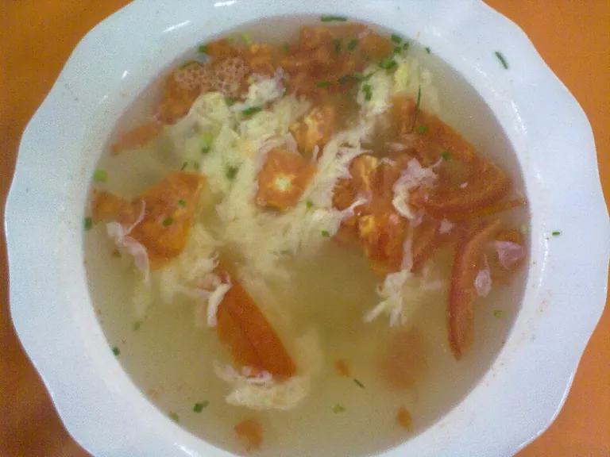
番茄蛋花汤
NNU-10-HanRongrong · Tomato and egg soup.jpg · CC BY 3.0
第 3 步 · 淋蛋花
小灶用清汤底，小滚时细流淋蛋；先让蛋花凝住再推动汤勺。
核对原页与实际步骤
主要资料：HowToCook 中文开源菜谱 · HowToCook 社区贡献者
下厨房 · 欢欢早安 · 番茄蛋花汤
番茄炒出红汁后加水，原方勾薄芡再分次倒蛋。
Omnivore's Cookbook · Maggie Zhu
用料 番茄 1–2 个、鸡蛋 2 个、食用油 少许、盐 少许，尝味后调整、水 约 600 毫升、葱 少许（可省）
App 步骤 1. 准备番茄和蛋：番茄去蒂切小块，块小些更容易出汁；鸡蛋打到蛋白蛋黄混匀。有葱再切好，另备约600毫升水。
用量：番茄 1–2 个、鸡蛋 2 个、水约 600 毫升；葱可省。
状态：番茄切小块，蛋白蛋黄打匀。
2. 煮软番茄：锅底薄薄放油，中火炒番茄，加一小撮盐。炒到边缘塌软、勺子一压就出汁再加水；煮开后继续煮到汤有番茄味，而不只是清水里漂着番茄块。
用量：油薄薄铺底、盐一小撮；番茄出汁后加水约 600 毫升。
火力：中火炒番茄。
状态：勺子一压番茄就出汁，水加进去煮到汤有番茄味。
3. 淋蛋花：调成小滚，蛋液绕着锅细细淋入，等蛋丝变色定形再轻推。煮到没有透明生蛋液、蛋花完全凝固，再尝汤补盐，有葱最后撒。别为了蛋花好看而提前关火。
用量：打好的 2 个鸡蛋蛋液；汤淡再补盐，葱可省。
火力：让汤保持小滚。
状态：蛋丝定形后才轻推；蛋花完全凝固，无透明生蛋液。
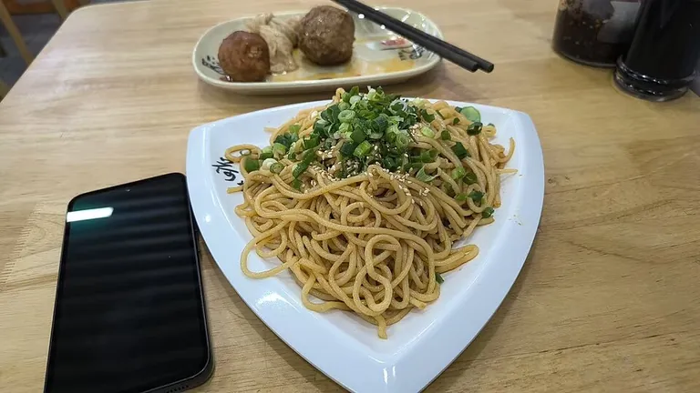
葱油拌面
Suginami · 葱花葱油拌面.jpg · CC0
第 2 步 · 煸葱油
本版做热拌面，用普通生抽，不要求虾籽酱油。葱段粗细不同，加葱绿后先检查薄的葱尖。
核对原页与实际步骤
主要资料：The Woks of Life · Judy
下厨房 · Ray-小单味 · 苏式葱油拌面
葱白先下锅，葱绿后放，利用余温出香。
Omnivore's Cookbook · Maggie Zhu
用料 面条 454 克，中式白面条、葱 227 克、食用油 约 80 毫升、老抽 3 汤匙（可省）、生抽 3 汤匙、糖 4 茶匙（可省）、水 煮面用，按包装
App 步骤 1. 煮面：面条按包装下沸水，煮到没有硬芯但仍有弹性；留一小杯面水，捞出沥水拨松。葱洗净擦干再切段，粗葱白纵向切开，避免带水入油。
用量：中式白面条 454 克，按包装煮，留一小杯面水；葱约 227 克，擦干。
状态：面没有硬芯、还有弹性；葱尽量擦干再入油。
2. 煸葱油：油和葱白先入锅，小火慢煸，葱白变软再加葱绿。闻到葱香、葱边变金褐色就把上色的先夹出；细葱尖先夹出，厚葱段继续煸；夹出的葱还有余温，上色会再深一点。
用量：油约 80 毫升，先放葱白，软了再放葱绿。
火力：小火慢煸。
状态：闻到葱香、葱边变金褐色；上色的先夹出。
3. 拌面：先降火，少量生抽和面水慢慢入锅，注意溅油，煮到冒小泡。面分批拌入，先用部分酱汁，尝后再添；老抽少量调色、糖少量调和，均可省，最后拌回煎葱。
用量：生抽、面水、酱汁都先加少量；老抽和糖可省。
火力：先降火再添生抽和面水。
状态：葱油酱汁冒小泡；面分批拌，尝过再补汁。

蒜香拍黄瓜
N509FZ · Smacked cucumbers at Changranju Restaurant, Beijing (20210501180457).jpg · CC BY-SA 4.0
第 1 步 · 拍黄瓜
不照搬原料栏与正文不一致的盐量，也不用薄刀重拍。生抽先少放，额外盐可省，喜欢甜味才加少量糖。
核对原页与实际步骤
主要资料：The Woks of Life · Judy
下厨房 · 下厨房用户_geqhb（小羽私厨） · 拍黄瓜
拍裂后切成入口小块，先调汁再拌。
China Sichuan Food · Elaine
美食天下 · 蒜香拍黄瓜的做法
用料 黄瓜 454–680 克，无籽黄瓜、盐 先不放；尝后确需再补一小撮（可省）、糖 喜欢甜味再放一点，尝味后调整（可省）、香油 2 茶匙（可省）、生抽 3 茶匙、米醋 1.5 汤匙、蒜 2–4 瓣、辣椒油 1–2 茶匙（可省）、熟芝麻 2 茶匙（可省）、香菜 1/4 杯切碎（可省）
App 步骤 1. 拍黄瓜：黄瓜洗净擦干，切掉两端。放入干净食品袋，在稳固砧板上用擀面杖轻敲到裂开，再取出切一口块，别用薄刀猛拍。蒜切末；所有器具要干净，不能刚切完生肉就直接拌凉菜。
用量：黄瓜 454–680 克、蒜 2–4 瓣。
状态：黄瓜轻敲到裂开，取出切成一口块。
2. 调汁：把蒜末、生抽、米醋搅匀。先不放额外盐；喜欢甜味才加一点糖，溶开后用一块黄瓜蘸着尝，再决定酸甜。生抽已含盐，所列盐和糖不必一次全倒。
用量：生抽 3 茶匙、米醋 1.5 汤匙和蒜末；额外的盐先不放，糖可省。
状态：糖若加就搅化，用一块黄瓜蘸汁试味。
3. 拌匀：准备吃时再拌黄瓜，料汁先加一半，翻匀尝味再补。香油、辣椒油、熟芝麻、香菜按喜好放。暂时不吃就分开盖好冷藏，别在室温等上几小时。
用量：料汁先拌一半，尝后再添；香油、辣椒油、熟芝麻、香菜可省。
状态：吃前再拌，暂时不吃就分开冷藏。

酸辣土豆丝
Huangdan2060 · Hunan cuisine, vinegar potato wire.jpg · CC BY 3.0
第 1 步 · 切丝冲洗
只参考清洗与状态观察；本版仍保留短焯后炒熟的路径，不是原文免焯水版本。半透明只是线索，还要检查较粗的一根没有生硬粉芯。
核对原页与实际步骤
主要资料：HowToCook 中文开源菜谱 · HowToCook 社区贡献者
下厨房 · 黄漫漫 · 不用焯水一样炒出脆脆的酸辣土豆丝
切丝后洗去表面淀粉，炒至半透明，醋分次加入。
Red House Spice · Wei Guo
用料 土豆 约 240 克、食用油 10–15 毫升、醋 约 10 毫升、干辣椒 1–3 个，按辣度、盐 少许、水 清洗、焯土豆用、蒜 少许（可省）、青椒 半个（可省）
App 步骤 1. 切丝冲洗：土豆去皮，先切一个平面放稳，再切约 2–3 毫米均匀细丝；用刨丝器时护住手。清水冲掉表面淀粉。入沸水略焯约 10 秒就捞出沥干，这只是预处理，稍后仍要炒熟。蒜、青椒有才切。
用量：土豆约 240 克；清水冲洗后短焯。
状态：切约 2–3 毫米的均匀细丝，略焯约 10 秒后沥干，稍后还要炒熟。
2. 小火炒香：锅里加油，小火放干辣椒，有蒜也放入。闻到香味、辣椒颜色稍深就下土豆丝，不等辣椒发黑；若已焦黑，关火清掉焦料再继续。
用量：油 10–15 毫升、干辣椒 1–3 个，蒜可省。
火力：小火炒香。
状态：辣椒略变深、有香味就下土豆；变黑要关火清掉焦料。
3. 大火炒熟：下沥干土豆丝，有青椒一起下，中大火持续翻动。丝由生硬变得能弯曲后，加醋和少许盐；夹较粗的一根稍放凉尝，不能有生硬粉芯。仍硬就继续炒，锅干时少量补水，不用硬烧到焦。
用量：醋约 10 毫升、盐少许，青椒可省；锅干时少量补水。
火力：中大火持续翻动。
状态：土豆丝能弯曲，尝较粗的一根确认没有生硬粉芯。

家常凉拌豆腐
来源于下厨房 · 半生瓜 · 凉拌豆腐，爽口下饭超简单 · 非商业转载说明
第 3 步 · 淋汁
豆腐先按包装要求加热，再把盘底的水沥掉；蘸汁从半份开始，避免嫩豆腐拌碎。
核对原页与实际步骤
主要资料：HowToCook 中文开源菜谱 · HowToCook 社区贡献者
下厨房 · 半生瓜 · 凉拌豆腐，爽口下饭超简单
内酯豆腐装盘沥水，另碗调好醋和生抽再淋。
China Sichuan Food · Elaine
下厨房 · 小葱拌豆腐的做法
用料 老豆腐 250 克，北豆腐或老豆腐、葱 10 克（可省）、蒜 2–3 瓣（可省）、生抽 15 毫升、香油 5 毫升（可省）、水 煮豆腐用约 500 毫升、醋 5 毫升（可省）、糖 2 克（可省）、辣椒油 5 毫升（可省）
App 步骤 1. 煮豆腐：先看豆腐保质期、冷藏与加热说明。老豆腐切约 2 厘米块，水沸后轻轻放入，保持小沸加热到中心热透；原稿 1–2 分钟主要为去豆腥，不是所有产品的安全保证，包装要求更久就照做。用干净漏勺捞出沥水。
用量：老豆腐 250 克，煮豆腐的水约 500 毫升。
火力：水沸下豆腐，保持小沸。
状态：中心热透；包装要求更久就照做。
2. 调汁：用干净小碗，把生抽先取一半，加少量凉开水拌匀。蒜、香油、醋、糖都按喜好少量加，糖要搅化。用一块已热透的豆腐试味，再添剩余生抽，别直接尝整碗浓料汁。
用量：生抽 15 毫升先取一半，加少量凉开水；蒜、香油、醋、糖可省。
状态：糖若加就搅化；用熟豆腐试味，再补生抽。
3. 淋汁：豆腐放干净浅碗，温热时就能淋汁吃，不必在室温放到冰凉。葱、辣椒油可省。用勺从碗边轻推，别大力搅；想吃凉的及时放冰箱冷却，临吃再拌。
用量：调好的汁；葱或辣椒油可省。
状态：温热就能淋汁；用勺轻推，吃凉的及时冷藏。

家常蛋炒饭
Euniceyeoh07 · Chinese egg fried rice.jpg · CC BY-SA 4.0
第 2 步 · 炒蛋和饭
先把妥善冷藏的熟饭拨散；饭多就分批炒热，葱绿留到出锅时撒。
核对原页与实际步骤
主要资料：Made With Lau · Daddy Lau / Randy Lau
下厨房 · 张记小灶 · 家常蛋炒饭：只用鸡蛋葱花，炒出高级感
葱白和葱绿分开，蛋液底面定形后划散，再把饭团炒开。
The Woks of Life · Bill
用料 熟米饭 1 碗，偏干爽的新饭或妥善冷藏的饭、鸡蛋 2 个、食用油 约 1 汤匙，够薄薄润住锅底、盐 先放一小撮，尝味再补、葱 少许（可省）、生抽 少量（可省）
App 步骤 1. 准备米饭：米饭先用饭勺拨松饭团，鸡蛋打散，葱有则切好。新煮的饭翻松散去多余蒸汽就用，不必等到隔夜；冷饭只用妥善冷藏的，不用久放室温的剩饭。饭若湿黏得成糊，先换干爽些的饭。
用量：熟米饭 1 碗、鸡蛋 2 个，葱可省。
状态：饭团拨松，鸡蛋打散。冷饭只用妥善冷藏的。
2. 炒蛋和饭：锅里加油，中火到油能流动但不冒烟。蛋液下锅，轻推成柔软小块就加饭。用铲子侧边拨开饭团、翻到锅底均匀受热，不用使劲压碎米粒；一次只炒这一碗，锅装太满就分批。
用量：食用油约 1 汤匙、打好的 2 个鸡蛋和 1 碗饭；锅小就分批。
火力：中火。
状态：油能流动、没冒烟；蛋推成柔软小块时加饭。
3. 炒热调味：中火翻炒到鸡蛋完全凝固、米饭从边缘到中心都热透，翻起也持续冒热气；冷饭复热有食品温度计时各处至少 74°C。再少量撒盐，有生抽就少淋并少放盐，有葱最后加。尝味后出锅，不必为追求粒粒分明一直炒干。
用量：盐先放一小撮，尝味再补。生抽可少淋，葱可省。
火力：中火翻炒。
状态：鸡蛋完全凝固，饭翻起也冒热气；冷饭复热有温度计时各处至少 74°C。

蜜汁鸡丁
来源于下厨房 · 三宝妈家常菜 · 照烧鸡胸肉 · 非商业转载说明
原作者同用鸡胸肉、蜂蜜和酱油，先煎再收汁，装盘前切成小段。本版先切丁再煎。
第 3 步 · 蜜汁煮透
小灶把蜂蜜留到煎鸡丁之后，避免甜汁先焦；酱汁已稠而肉心未达 74°C 时，加水继续煮。
核对原页与实际步骤
主要资料：Good Food · Charlotte Pike
下厨房 · 厂尌 · 黑椒蜜汁鸡胸肉
原作者先给鸡胸肉裹蜜汁，煎到两面上色后补水盖锅焖煮。
RecipeTin Eats · Nagi Maehashi
用料 鸡胸肉 600 克、面粉 2 汤匙（可省）、姜 40 克（可省）、蒜 4 瓣（可省）、生抽 6 汤匙、蜂蜜 5 汤匙、柠檬 1/2–1 个（可省）、食用油 1 汤匙、盐 按口味少量（可省）、黑胡椒粉 按口味少量（可省）、水 少许，帮助煮透收汁
App 步骤 1. 切鸡肉：鸡胸切成大小接近的一口块，约两三厘米即可，不必像尺量一样整齐。有面粉就薄薄裹一层，抖去多余干粉；不放也能做。生抽已有咸味，先不加盐。另碗把部分生抽、蜂蜜和少许水调匀，余量留着熟后调。接触生鸡肉后洗净手、刀和砧板，熟食另用干净盘。
用量：鸡胸肉 600 克；部分生抽、蜂蜜和少许水调汁，余量留作熟后调味。
状态：鸡丁切成约两三厘米的近似大小；若用面粉，只薄裹一层。
2. 炒鸡丁：锅里放油，中火到油容易流动但不冒烟。鸡丁摊开，锅小就分批；先让底面定形，再翻动到表面浅金黄。此时不代表里面熟了。有姜蒜就在鸡肉变色后加入，闻到香气即可，别等蒜变黑。
用量：食用油 1 汤匙；鸡丁摊开，锅小可分批。
火力：中火。
状态：油流动但不冒烟；鸡丁表面浅金黄即可，还要继续煮熟。
3. 蜜汁煮透：倒入调好的蜜汁，煮开转中小火，让小泡持续冒起，翻动使每块都裹汁。用食品温度计从侧面测几块最大鸡丁，中心达到74°C；不足就补一点水继续煮并复查。鸡肉熟后才尝汁，淡了少量加生抽、太甜且有柠檬可挤几滴柠檬汁。小火收到汁薄薄挂住肉就停，不必收成糖浆。
用量：倒入预调蜜汁；测温不足时补一点水继续煮。
火力：煮开转中小火；小火收汁。
状态：几块最大鸡丁中心均达 74°C；汁薄薄挂住肉就停。

蒜蓉小白菜
来源于下厨房 · 王77 · 蒜蓉小白菜 · 非商业转载说明
第 2 步 · 炒蒜下菜
备菜时把洗好的白菜放漏篮；闻到蒜香就下厚梗，留出余地下叶，不必等蒜末变褐。
核对原页与实际步骤
主要资料：The Woks of Life · Bill
下厨房 · 王77 · 蒜蓉小白菜
作者先控干白菜，蒜末刚出香时就下菜。
Made With Lau · Daddy Lau / Randy Lau
用料 小白菜 450 克、食用油 2 汤匙、蒜 5 瓣、盐 按口味少量、白胡椒粉 按口味少量（可省）、糖 1/8 茶匙（可省）
App 步骤 1. 洗菜切蒜：小白菜逐片洗净根部泥沙并沥干。较大的菜梗纵切成细条，梗叶分开；蒜切末，全部备好再开火，蒜末下锅后没有时间慢慢切菜。
用量：小白菜 450 克，蒜 5 瓣。
状态：菜洗净沥干，厚梗切细，梗叶分开。
2. 炒蒜下菜：油入锅，中小火下蒜末，闻见蒜香、颜色仍浅时立刻下菜梗，随后放菜叶。调至中大火翻动；不把蒜炒到棕黑，也不让空锅冒烟。小锅装不下就分两批。
用量：油 2 汤匙、蒜末，先下菜梗再放菜叶。
火力：中小火炒蒜，转中大火炒菜。
状态：蒜闻得到香味、颜色还浅时就放菜梗。
3. 炒熟：炒到叶子塌软、厚梗能被筷子戳入，撒一小撮盐翻匀后尝味。白胡椒和糖有且喜欢才少量加。熟了立即盛出，别关火后仍留在热锅里焖黄。
用量：先撒一小撮盐；白胡椒和糖可省。
状态：叶子塌软，筷子能戳入厚梗，立即盛出。

黄油酱香杏鲍菇
来源于下厨房 · 蜜桃厨房小主 · 〖黄油蒜香杏鲍菇〗 · 非商业转载说明
第 2 步 · 煎熟
本版用薄片，只在贴锅面上色、能轻推时翻面；黄油留到末段低火拌香。
核对原页与实际步骤
主要资料：The Woks of Life · Judy
下厨房 · 蜜桃厨房小主 · 〖黄油蒜香杏鲍菇〗
厚切杏鲍菇先煎出金黄表面，再把菇拨开，加入黄油和调味。
Red House Spice · Wei Guo
用料 杏鲍菇 454 克、无盐黄油 2 汤匙、生抽 1 汤匙、老抽 1/4 茶匙（可省）、蜂蜜 1/2 茶匙（可省）、蒜 1 瓣（可省）、黑胡椒粉 1/4 茶匙（可省）、食用油 2 汤匙、葱 1 根（可省）
App 步骤 1. 切杏鲍菇：杏鲍菇去掉脏硬根部，洗后擦干，沿长度切约 5–6 毫米厚片，尽量一致。蒜葱有才切好；生抽、黄油放在手边，后面要降火快速拌汁。
用量：杏鲍菇 454 克；把生抽 1 汤匙和无盐黄油 2 汤匙备在手边。
状态：菇擦干后切约 5–6 毫米厚片。
2. 煎熟：平底锅加少量食用油，中火铺单层菇片，留些空隙，分批煎。先让接触锅底的一面定住、出现金黄斑点再翻；两面上色、菇片变软可弯时盛出。锅太满会先出水，不会马上变焦香。
用量：食用油少量，多批煎时分次用。
火力：中火。
状态：底面出现金黄斑点再翻；两面上色、菇片能弯时盛出。
3. 酱香裹汁：全部菇煎好后，转小火，有蒜先用锅里余油炒到闻见香味，再把菇回锅。转最小火，加黄油和先一半生抽轻翻，黄油融化就关火，用余温拌匀；老抽蜂蜜可省。尝后再补生抽，最后按喜好加葱和黑胡椒。
用量：黄油 2 汤匙，生抽 1 汤匙先用一半，尝后再补。
火力：小火用余油炒蒜；最小火加黄油和生抽。
状态：黄油融化就关火，用余温拌匀。

酱油煎蛋饭
来源于下厨房 · 耿直李大妈 · 松兰（老式）拌饭 · 非商业转载说明
原作者的拌饭用了多颗煎蛋和辣椒。小灶按一人份煎蛋、淋酱油汁。
第 3 步 · 淋酱汁
将酱汁调稀、分次拌入热饭，本版让蛋白和蛋黄充分凝固后再盖到饭上。
核对原页与实际步骤
主要资料：The Woks of Life · Sarah
下厨房 · 耿直李大妈 · 松兰（老式）拌饭
原方盖锅煎蛋，另碗用酱油和少量水调拌饭汁。
Made With Lau · Daddy Lau / Randy Lau
用料 熟米饭 1 杯，热饭、鸡蛋 2 个、葱 2 根（可省）、食用油 1 汤匙、生抽 1 汤匙、水 2 汤匙、糖 1/4 茶匙（可省）、料酒 1 茶匙（可省）
App 步骤 1. 准备米饭：一杯熟饭先备好，现煮饭直接翻松用。用冷饭须来自妥善冷藏的一份，复热到中心和边缘都热透，食品温度计测各处至少74°C。鸡蛋逐个打入小碗，有葱再切。
用量：熟米饭 1 杯、鸡蛋 2 个，葱可省。
状态：饭翻松；冷饭复热用温度计确认各处至少 74°C。
2. 煎熟鸡蛋：平底锅加油，中小火让油铺开但不冒烟，沿锅边滑入鸡蛋。蛋白定形后翻面或加盖继续煎，直到蛋白蛋黄都凝固；喜欢软一点也不能留下流动生蛋液。
用量：油 1 汤匙、鸡蛋 2 个。
火力：中小火。
状态：油能铺开、不冒烟；蛋白蛋黄均凝固，无流动生蛋液。
3. 淋酱汁：先把熟蛋放饭上，锅中有葱可炒软。生抽先用部分，兑所列2汤匙水，小火煮开；糖和料酒可省。先淋一点酱汁拌着尝，再决定加多少，别把一杯饭泡成咸汤。
用量：部分生抽兑 2 汤匙水，酱汁先少量淋；糖、料酒可省。
火力：小火煮开酱汁。
状态：少淋一点，拌着尝味再添。
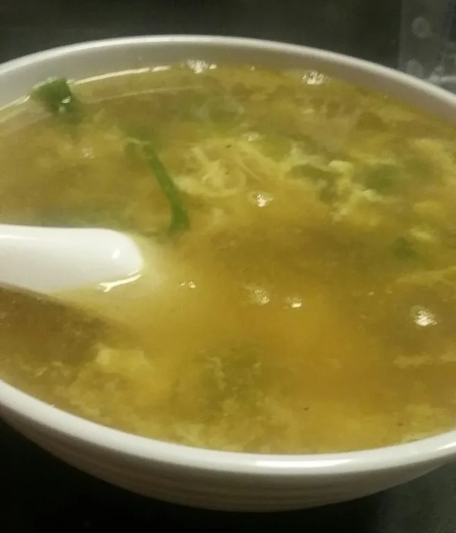
清香蛋花汤
NeoBatfreak · Egg drop soup (蛋花湯).jpg · CC BY-SA 4.0
第 3 步 · 淋蛋与出锅
用清汤也能出蛋花：水面仅轻轻翻动，蛋液细流入锅，凝成絮状再推开。
核对原页与实际步骤
主要资料：美食天下 · 花式炒咸菜
下厨房 · 王雪岩1984 · 一碗漂亮又鲜嫩无比的基础蛋花汤
作者把蛋液充分打散，锅开后调小火，慢慢倒入。
Made With Lau · Daddy Lau / Randy Lau
下厨房 · 世界上懒人汤之最——1分钟美味蛋花汤的做法
用料 鸡蛋 2 个、水 约 600 毫升、盐 少许、香油 几滴（可省）、香菜 少许（可省）
App 步骤 1. 打散鸡蛋：鸡蛋充分打散，提起筷子应能顺畅流下，没有大团蛋白。有香菜才洗净切碎；清水版不需要另买高汤。
用量：鸡蛋 2 个，香菜可省。
状态：蛋液能从筷子上顺畅流下，没有大团蛋白。
2. 煮水调底味：约600毫升水烧开，加一小撮盐先做底味，再转小滚。汤面不断有小泡就够，不必翻腾得把蛋花冲碎。
用量：水约 600 毫升、盐一小撮。
火力：水烧开后调到小滚。
状态：汤面持续有小泡，不猛烈翻腾。
3. 淋蛋与出锅：蛋液绕圈细细倒入，先停手等边缘凝固，再轻轻拨散。保持加热至蛋花全部熟透、没有透明生蛋液。尝味补一点盐，香油几滴就够，香菜按喜好放。
用量：淋入打匀的蛋液；尝后补一点盐，香油几滴即可，也可省。
状态：边缘凝固再拨散，煮到没有透明生蛋液。
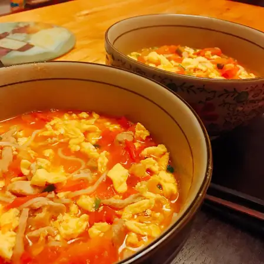
番茄蛋花汤面
来源于下厨房 · PauCifer · 番茄鸡蛋汤面 · 非商业转载说明
第 2 步 · 煮番茄面
小灶直接在番茄汤里煮面；先炒软番茄再加水，面条吸汤后用少量热水调稀。
核对原页与实际步骤
主要资料：The Woks of Life · Judy
下厨房 · PauCifer · 番茄鸡蛋汤面
原作者先炒出番茄红汁，另一锅煮面，再合锅调味。
Omnivore's Cookbook · Maggie Zhu
用料 面条 1 人份，按包装、番茄 2 个小的、鸡蛋 1 个、蒜 1 瓣（可省）、葱 1 根（可省）、鸡高汤 约 600 毫升（可省）、食用油 2 汤匙及拌面数滴、生抽 1 茶匙（可省）、白胡椒粉 1/8 茶匙（可省）、香油 1/2 茶匙（可省）、盐 按口味少量、水 汤底约 600 毫升，煮面吸水后按需补热水
App 步骤 1. 准备：番茄切小块，鸡蛋打匀，面条按一人食量取好。有葱蒜再切；看一眼面条包装需要煮多久，避免蛋下锅后才找说明。
用量：番茄 2 个小的、鸡蛋 1 个、面条 1 人份。
状态：番茄切小块，鸡蛋打匀。
2. 煮番茄面：少油中火炒番茄，有蒜可先短炒出香。番茄塌软出汁后加约600毫升水，煮开下面，边煮边拨散，按包装煮到无硬芯。吸水后太稠逐次补热水；高汤只替换等量水，不另加一份。
用量：少油，番茄出汁后用约 600 毫升水，高汤可等量替换。太稠再逐次补热水。
火力：中火炒番茄；水煮开再下面。
状态：番茄塌软出汁，面煮到无硬芯。
3. 淋蛋调味：汤保持小滚，蛋液细流淋入，凝固后再轻推，蛋花完全熟透就停火。先尝汤再补盐；生抽、胡椒、香油、葱只按喜好少加。马上吃，面泡久还会吸汤。
用量：淋入 1 个鸡蛋的蛋液；盐先尝后补，其余调味可省。
火力：保持小滚，蛋花完全熟透后停火。
状态：蛋液凝固后再轻推。
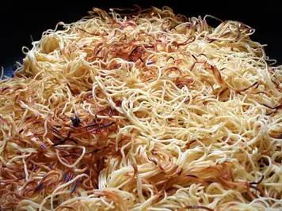
香辣两面黄
joyosity · Pan-fried Noodles · CC BY
煎面成品实拍，可对照面条的金黄焦边。原图未注明调味，小灶版另拌辣油酱汁。
第 2 步 · 煎两面
只借鉴煎面；本版拌辣味调料。摊薄后等底面结壳再翻，整张难翻时分块操作。
核对原页与实际步骤
主要资料：The Woks of Life · Sarah
下厨房 · 呤儿 · 韭黄肉丝两面黄
两面黄的面条先沥水、整形成薄饼，在平底锅中将两面分别煎黄。
Made With Lau · Daddy Lau / Randy Lau
用料 港式炒面 450 克，鲜面、食用油 煎面用，薄涂锅底、生抽 每份约 2 茶匙、香油 每份约 1 茶匙（可省）、辣椒油 按口味适量、水 煮面用，没过面条
App 步骤 1. 准备面条：确认是适合煎炒的港式面，按包装要求煮或烫熟，充分沥水并摊松散蒸汽。450克应分几次煎，锅里不要堆厚面团。
用量：港式炒面 450 克，按包装处理，分几次煎。
状态：面煮或烫熟，沥干、摊松。
2. 煎两面：平底锅薄铺油，中小火把面铺成薄层，先别来回翻。用铲轻抬边缘，底面有金黄色、能整体松动再翻；不便整张翻就分成两三块翻面，两面金黄即可。
用量：油薄涂锅底；面每次铺成薄层。
火力：中小火。
状态：底面金黄且能整体松动就翻，煎到两面金黄。
3. 调味：生抽和辣椒油先少量调匀，加一点水帮助分散，沿面边少量淋入，翻拌到均匀热透。保留部分不浸湿的焦香面边；香油可省，尝后再补酱汁。
用量：生抽和辣椒油先取少量，加一点水拌匀；香油可省。
状态：拌到均匀热透，留点没被酱汁浸湿的焦香面边。

酱油炒饭
来源于下厨房 · 吖铭 · 酱油炒饭 · 非商业转载说明
第 3 步 · 酱油调味
小灶先炒松热饭，再把酱油分次拌开；饭粒已均匀着色就先尝咸淡。
核对原页与实际步骤
主要资料：The Woks of Life · Judy
下厨房 · 吖铭 · 酱油炒饭
作者先把酱油调料与米饭拌匀，再与洋葱、鸡蛋合炒。
Made With Lau · Daddy Lau / Randy Lau
用料 熟米饭 6 杯，偏干爽的新饭或妥善冷藏的饭、鸡蛋 3 个、鱼露 2 茶匙（可省）、老抽 2 汤匙（可省）、生抽 2 汤匙、料酒 3 茶匙，分次用（可省）、糖 1 茶匙（可省）、食用油 3 汤匙另加 1 茶匙、蚝油 1 茶匙（可省）、盐 按口味少量（可省）、葱 3 根（可省）
App 步骤 1. 准备米饭：6杯熟饭先拨松，分成家用锅能轻松翻动的几批。偏干爽新饭翻松散汽就能用；冷饭只用妥善冷藏的。鸡蛋打散，有葱再切，生抽预先分到各批，避免最后一批无味。
用量：熟米饭 6 杯、鸡蛋 3 个、生抽 2 汤匙分到各批，葱可省。
状态：饭拨松，分到每批都能轻松翻动。
2. 炒蛋炒饭：每批用少量油，中火先把相应蛋液轻推成块，加入饭。铲子侧边拆饭团，轮流把上面的饭翻到锅底；不是猛压米粒。蛋完全凝固、整批饭冒热气后再调味。
用量：每批用少量油及对应的蛋液和米饭。
火力：中火先炒蛋再放饭。
状态：蛋完全凝固，整批饭冒热气再调味。
3. 酱油调味：每批先加部分生抽，翻匀尝味。鱼露、蚝油同样有盐，有用就减生抽；老抽糖料酒葱按喜好加，不必凑齐。冷饭复热用食品温度计确认各处至少74°C，热透后即出锅，不为追求深色一直加酱油。
用量：每批先放部分生抽；鱼露、蚝油放了就少加生抽。
状态：热透就出锅；冷饭复热用温度计确认各处至少 74°C。

蒜香西兰花
来源于下厨房 · 机器猫姑娘 · 蒜蓉西兰花 · 非商业转载说明
第 3 步 · 蒜汁
本版把蒜香料汁另锅煮开浇菜，沥去花球夹带的水，少量淋汁再尝。
核对原页与实际步骤
主要资料：HowToCook 中文开源菜谱 · HowToCook 社区贡献者
下厨房 · 机器猫姑娘 · 蒜蓉西兰花
作者先焯西兰花并沥干，蒜末出香后再炒菜。
Made With Lau · Daddy Lau / Randy Lau
用料 西兰花 200 克、蒜 3–4 瓣、生抽 10 毫升、蚝油 5 毫升（可省）、糖 2 克（可省）、食用油 10 毫升、水 焯水约 1 升，料汁 30 毫升
App 步骤 1. 切配：西兰花从茎处分成约一口大小的小朵，粗茎去掉硬外皮再切薄片，流水洗净。蒜切末；把生抽和料汁用的 30 毫升水放在小碗里，蚝油和糖可少量加入也可不加。
用量：西兰花 200 克、蒜 3–4 瓣、生抽 10 毫升兑料汁用水 30 毫升；蚝油和糖可省。
状态：西兰花分成一口小朵，粗茎去硬皮切薄。
2. 焯熟：足量水完全沸腾后下西兰花，先煮约 2–3 分钟检查。夹一朵，筷子能戳入较厚的茎、咬起来不生硬再捞出；大朵需更久。沥水后装盘，别只看变绿就认定已达到喜欢的熟度。
用量：焯水约 1 升。
火力：水完全沸腾后下菜。
状态：约 2–3 分钟开始检查，筷子能戳入粗茎、咬起来不生硬才捞。
3. 蒜汁：锅内放油，小火把蒜炒出香味、仍浅色就倒入预调汁煮开。先淋一部分到西兰花，拌一朵尝味，再决定加多少；不是一定要把咸汁全部倒完。
用量：食用油 10 毫升；预调汁先淋一部分。
火力：小火炒蒜，再倒汁煮开。
状态：蒜有香味、仍浅色时倒汁。
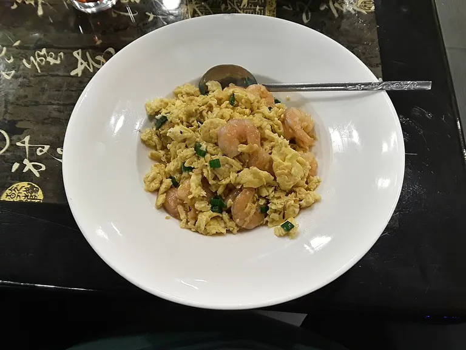
虾仁炒鸡蛋
Ser Amantio di Nicolao · Baby shrimp with scrambled egg.jpg · CC0
第 3 步 · 加蛋
新手先将虾炒熟再倒蛋，铲子从锅边往中间推；流动的蛋液完全凝固即可盛出。
核对原页与实际步骤
主要资料：The Woks of Life · Bill
下厨房 · Sophiephie · 虾仁炒蛋
原方把虾仁与蛋液拌在一起，中火用铲慢推成滑蛋。
Made With Lau · Daddy Lau / Randy Lau
用料 虾仁 340 克，去壳去虾线、鸡蛋 8 个、盐 1/2 茶匙、白胡椒粉 1/8 茶匙（可省）、香油 1 茶匙（可省）、葱 2 根（可省）、食用油 60 毫升
App 步骤 1. 备料：冻虾先在冷藏解冻，去虾线后擦干；别带着冰和一碗水下锅。鸡蛋打到蛋白蛋黄混匀，盐先放一小撮；白胡椒有且喜欢再加。有葱再洗净切好，生虾用具与盛熟菜的盘分开。
用量：虾仁 340 克、鸡蛋 8 个；蛋液先加一小撮盐。
状态：冷藏解冻的虾去虾线、擦干；蛋白蛋黄打匀。
2. 炒虾：油分两次用，先用少量中火炒虾。虾摊开，底面变色再翻；炒到中心珠白、不透明、肉质紧实，大虾用温度计确认中心63°C。把虾拨到一边，锅底若有积水先蒸发掉；别把虾炒到缩紧变硬。
用量：油分两次，先用少量炒虾。
火力：中火。
状态：虾中心珠白不透明、肉质紧实；大虾有温度计时确认中心 63°C。
3. 加蛋：转中小火，锅底薄薄补油，再倒蛋液。边缘凝住后用铲子从底部往中间轻推，形成大而软的蛋块，让剩余蛋液流到锅底。虾拌在蛋块里，蛋液全部凝固、不再流动便出锅；有葱香油最后少量加。不要为了焦黄多炒，尝熟蛋后再补盐。
用量：锅底薄薄补油，倒入蛋液；葱、香油可省。
火力：转中小火。
状态：边缘凝住再轻推，蛋液全部凝固、不再流动才出锅。
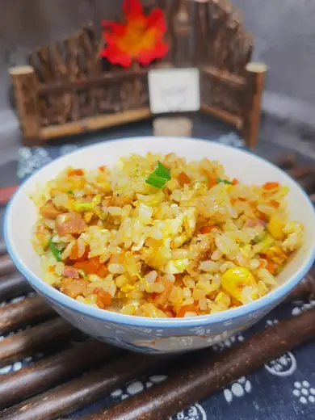
培根蛋炒饭
来源于下厨房 · Yang妈美食 · 培根蛋炒饭 · 非商业转载说明
参考培根、米饭和鸡蛋的成品外观，作者另加了蔬菜丁。
第 2 步 · 炒培根鸡蛋
本版省去牛肉末等配料。观察培根出油量再决定是否补油，米饭炒透后再补盐。
核对原页与实际步骤
主要资料：The Woks of Life · Bill
下厨房 · Leoanan · 普通的蛋炒饭
原方小火煸培根出油，再用锅里的油炒配料和米饭。
Made With Lau · Daddy Lau / Randy Lau
用料 培根 225 克、鸡蛋 3 个、洋葱 1 个中等大小（可省）、熟米饭 5 杯，偏干爽的新饭或妥善冷藏的饭、食用油 1 汤匙、盐 1 茶匙、糖 1/4 茶匙（可省）、生抽 2 茶匙（可省）、老抽 1 茶匙（可省）、黑胡椒粉 按口味少量（可省）、葱 2 根（可省）、料酒 2 茶匙（可省）
App 步骤 1. 备料：5杯熟饭拨松，分成几批炒；新饭翻松散去多余蒸汽也可用，冷饭须妥善冷藏。培根切小片，鸡蛋打散；洋葱若用切小丁，葱有则切碎，全部备齐再开火。
用量：熟米饭 5 杯、培根 225 克、鸡蛋 3 个；洋葱和葱可省。
状态：米饭拨松，分成几批炒；冷饭须妥善冷藏。
2. 炒培根鸡蛋：少油中火炒培根，等脂肪析出、边缘微卷，按包装要求炒熟。油积成一滩就留够润锅的量，其余盛出。洋葱有则炒到半透明，再倒蛋液轻推成小块，别把蛋炒干。
用量：少量油，剩余培根油只留够润锅；倒入打散的鸡蛋。
火力：中火先炒培根。
状态：培根边缘微卷、按包装炒熟；洋葱若用炒到半透明，蛋推成小块。
3. 炒热饭：分批放米饭，拨开饭团翻到中心也热透，冷饭复热食品温度计测各处至少74°C。先尝培根和饭合起来的味道，再补少量盐或生抽；老抽糖胡椒葱料酒均可省，不要把原料表里的盐一次全倒。
用量：分批下饭，尝过再补少量盐或生抽。
状态：拨开饭团翻到中心也热透；冷饭复热用温度计确认各处至少 74°C。
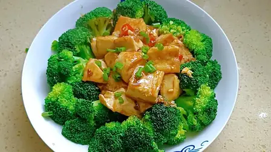
西兰花烧豆腐
来源于下厨房 · Z开芯 · 西兰花豆腐 · 非商业转载说明
原作者将西兰花摆在豆腐四周，小灶把两者合在锅里烧。
第 3 步 · 调味收汁
小灶将西兰花放进煎过豆腐的锅，加汤煮到厚茎熟软，最后才薄薄收汁。用铲背轻推豆腐保持完整。
核对原页与实际步骤
主要资料：The Woks of Life · Sarah
下厨房 · Z开芯 · 西兰花豆腐
原作者先焯西兰花，豆腐两面煎黄后加汁炖，轻推收汁。
Omnivore's Cookbook · Maggie Zhu
用料 老豆腐 450 克、西兰花 450 克、鸡高汤 235 毫升（可省）、生抽 2 汤匙、老抽 1 茶匙（可省）、料酒 2 汤匙（可省）、香油 1 茶匙（可省）、糖 1/2 茶匙（可省）、食用油 2 汤匙、蒜 2 瓣（可省）、玉米淀粉 1 汤匙（可省）、水 约 235 毫升烧菜，另 2 汤匙调芡（可不调芡）
App 步骤 1. 准备：老豆腐沥去盒水、轻轻擦干，切约 2 厘米块。西兰花分小朵，粗茎切薄，洗净沥水。蒜有才切；若勾芡，把淀粉与 2 汤匙凉水搅匀。清水与高汤二选一，不两份都加。
用量：老豆腐和西兰花各 450 克；若勾芡，淀粉 1 汤匙兑凉水 2 汤匙。
状态：豆腐擦干后切约 2 厘米块，西兰花分小朵、厚茎切薄。
2. 煎豆腐煮菜：中火热油，把豆腐单层放下，底面稍金黄且容易铲起再翻，碎了也没关系。蒜若用在空处炒香。加约 235 毫升水或高汤，生抽先加一半，下西兰花煮到厚茎能戳入、豆腐中心热透；包装要求更长加热就照做。
用量：油 2 汤匙；水或高汤约 235 毫升，二选一；生抽先放所列的一半。
火力：中火热油煎豆腐。
状态：豆腐底面微金黄、好铲起再翻；西兰花厚茎可戳入、豆腐中心热透。
3. 调味收汁：老抽、糖、香油可省，料酒若用要在仍有汤时加入煮开。先尝咸度再补生抽。淀粉水重新搅匀后一点点加，汤汁煮开、略能挂住食材就停；不用淀粉可留清汁，不烧到干底。
用量：尝味后补生抽；勾芡可省，要用就一次只添一点搅匀的淀粉水。
状态：芡汁煮开，略能挂住食材就停；留清汁也可。
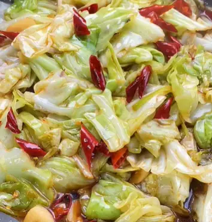
手撕包菜（素版）
来源于下厨房 · 执剑踏云 · 手撕包菜 · 非商业转载说明
第 1 步 · 撕包菜
参考撕小、先备调味和炒软后调味。小灶保留少盐起步、其他调料可省的素版，不叠加原文多种咸味调料，也不把小锅塞满。
核对原页与实际步骤
主要资料：The Woks of Life · Judy
下厨房 · Cola_aa · 手撕包菜
包菜撕成小块，预先调汁，炒软后再加汁。
Red House Spice · Wei Guo
用料 包菜 680 克、食用油 2 汤匙、蒜 5 瓣（可省）、干辣椒 5 个（可省）、料酒 2 茶匙（可省）、生抽 1 汤匙（可省）、糖 1/2 茶匙（可省）、水 1 汤匙、陈醋 1/2 茶匙（可省）、葱 2 根（可省）、盐 按口味少量
App 步骤 1. 撕包菜：包菜去掉硬芯，叶子撕成约一口大小，厚叶脉切薄，洗净沥到不滴水。蒜、干辣椒有才准备；要用的调味先量好放手边。680 克菜体积很大，小锅请分两批，调料也分着用。
用量：包菜 680 克，小锅分两批，调料也分着用；蒜、干辣椒可省。
状态：去硬芯，撕成一口块，洗后沥到不滴水。
2. 大火炒：锅里加油，中小火炒香蒜和干辣椒，颜色未变深就下包菜。转中大火，从锅底向上翻动；厚叶脉仍硬时加所列 1 汤匙水，短盖一会儿再打开，别把干锅硬烧冒烟。
用量：油 2 汤匙按批分用；厚叶脉还硬时加所列 1 汤匙水短焖。
火力：中小火炒蒜和辣椒；中大火炒包菜。
状态：蒜、辣椒出香、尚未变深就下包菜。
3. 调味：叶子变软、厚处咬开不生硬时，先撒少量盐；生抽、料酒、糖可按喜好少量加入炒匀。陈醋和葱若用最后加，尝好就出锅，生抽已够咸则不再补盐。
用量：盐少量；生抽、料酒、糖、陈醋和葱可省。
状态：叶子软、厚处咬开不生硬，尝后够味就出锅。

包菜炒粉丝
来源于下厨房 · 陈家胖胖青 · 包菜炒粉丝🔥不坨不结块，香到舔盘 · 非商业转载说明
第 1 步 · 泡粉丝
按粉丝包装先泡至可弯，一夹成团就用筷子拨松；入锅少量补水让粉丝吸汁。
核对原页与实际步骤
主要资料：The Woks of Life · Judy
下厨房 · 陈家胖胖青 · 包菜炒粉丝🔥不坨不结块，香到舔盘
温水浸软粉丝后剪短，沥水，后入锅抖散与包菜合炒。
Omnivore's Cookbook · Maggie Zhu
用料 绿豆粉丝 2 小束、包菜 680 克、生抽 1 汤匙、老抽 1/2 茶匙（可省）、陈醋 1/2 茶匙（可省）、白胡椒粉 1/2 茶匙（可省）、香油 1 茶匙（可省）、糖 1/4 茶匙（可省）、水 120 毫升，另备泡粉丝用水、食用油 3 汤匙、姜 5 片（可省）、蒜 4 瓣（可省）、盐 按口味少量（可省）、葱 2 根（可省）、干辣椒 3–4 个（可省）
App 步骤 1. 泡粉丝：绿豆粉丝按包装泡到能弯曲、还有韧性，沥水剪短。包菜切细丝，粗梗切更薄并沥干；姜蒜葱干辣椒有才备好，另留约120毫升水备用。
用量：绿豆粉丝 2 小束、包菜 680 克；另留水约 120 毫升。
状态：粉丝泡到能弯且有韧性，沥水剪短；包菜粗梗切薄。
2. 炒包菜：油入锅中火加热，有姜蒜干辣椒就短炒出香，不等蒜变黑。包菜先放粗梗再放叶，炒到体积缩小、叶片变软但仍有一点脆劲，锅满就分批。
用量：油 3 汤匙；锅满时包菜分批炒，姜蒜和干辣椒可省。
火力：中火热油。
状态：粗梗先下，叶子变软、体积缩小但还有点脆。
3. 煮粉丝：放粉丝和生抽，备用水分次加，轻挑翻拌让粉丝吸汁。粉丝柔软透明、没有硬芯且菜熟透后，开盖收掉积水。醋胡椒香油糖葱按喜好少加；老抽仅调色，盐尝后补。
用量：生抽 1 汤匙，备用水约 120 毫升分次添。
状态：粉丝柔软透明、无硬芯且菜熟透，再开盖收去积水。
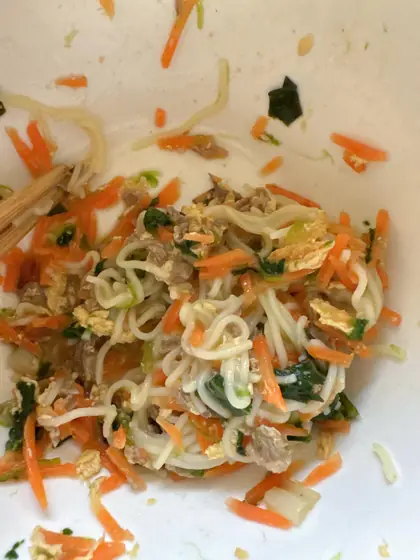
菠菜肉末拌面
来源于下厨房 · 皮卡喵 · 蔬菜牛肉拌面：儿童辅食 · 非商业转载说明
原作者同用菠菜、切碎牛肉与面条，另配胡萝卜丝和鸡蛋。
第 3 步 · 拌面
本版用牛肉末和菠菜，留一小杯面汤；肉末熟透后用少量面汤稀释肉汁再拌。
核对原页与实际步骤
主要资料：The Woks of Life · Sarah
下厨房 · Livvie · 肉末拌面
原作者分开炒肉末、煮面烫青菜，并留少量面汤帮助拌开。
Omnivore's Cookbook · Maggie Zhu
用料 面条 340 克干面、牛肉末 454 克、洋葱 1 个（可省）、蒜 2 瓣（可省）、菠菜 3 杯嫩叶、食用油 1–2 汤匙、盐 按口味少量（可省）、黑胡椒粉 按口味少量（可省）、生抽 3 汤匙、老抽 1 汤匙（可省）、香油 2 茶匙（可省）、蜂蜜 1 茶匙（可省）、辣椒油 2 茶匙（可省）、水 煮面用，按包装
App 步骤 1. 煮面：面条按包装煮熟到无硬芯，留一点面水再沥干。菠菜洗净焯到梗软叶熟，沥掉多余水；不把一兜菜水带进面里。
用量：干面 340 克、菠菜嫩叶 3 杯；留一点面水。
状态：面无硬芯；菠菜焯到梗软叶熟，沥水。
2. 炒肉末：锅中油中火加热，有洋葱蒜可先炒香炒软。牛肉末铺开后用铲拆散，结块切开检查；食品温度计测较厚肉团至少71°C，不能只看表面褐色。肉未熟不试味。
用量：牛肉末 454 克、油 1–2 汤匙，洋葱和蒜可省。
火力：中火热油。
状态：拆散结块，用温度计测较厚肉团至少 71°C，肉没熟先别试味。
3. 拌面：熟肉里放部分生抽和一点面水煮开，再拌入面和菠菜，翻到均匀热透。尝一口再补生抽或盐；老抽、胡椒、香油、蜂蜜、辣椒油都是口味选择，不需要全加。
用量：部分生抽和一点面水；尝后再补生抽或盐。
状态：汁煮开再放面和菠菜，翻到均匀热透。
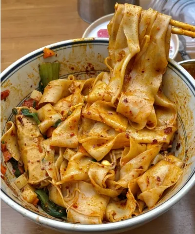
青菜油泼面
HowToCook 菜谱贡献者 · 陕西油泼面 · Unlicense
第 3 步 · 热油拌匀
用稳固耐热碗，先沥掉碗底积水；少量油淋向调料，拌匀后再决定是否补醋。
核对原页与实际步骤
主要资料：The Woks of Life · Sarah
下厨房 · 好食客小太阳 · 油泼面（家常简单版）
作者把煮好的面沥水入碗，把蒜末和辣椒面放在面上后泼油拌开。
Omnivore's Cookbook · Maggie Zhu
用料 面条 113 克干面、小白菜 1 把、生抽 1 茶匙、老抽 1 茶匙（可省）、陈醋 1/2 茶匙、辣椒碎 按口味适量、盐 按口味少量（可省）、葱 少量切碎（可省）、香菜 少量切碎（可省）、蒜 2 瓣（可省）、食用油 2.5 汤匙、水 煮面用，按包装
App 步骤 1. 煮面烫菜：面条按包装煮到熟而有弹性，小白菜洗净另焯到梗熟，分别沥水。盛进稳固、干燥外壁的耐热碗，放在耐热台面，不用薄玻璃碗。
用量：干面 113 克、小白菜 1 把。
状态：面熟且有弹性，菜梗焯熟；各自沥水再放进干燥的耐热碗。
2. 放调味：面上放少量生抽、陈醋，辣椒碎另在面顶聚成一小堆。葱蒜香菜洗后充分沥干，有且喜欢再放；老抽少量调色可省，调味液不要直接倒进待加热的油锅。
用量：少量生抽和陈醋；辣椒碎按口味放面顶。
状态：辣椒碎聚成一小堆；葱蒜香菜有且要用就充分沥干。
3. 热油拌匀：小锅放油，中小火热到油面轻微波动、不冒烟就离火。身体避开碗口，靠近面上的辣椒碎小心慢淋，防止溅油。充分拌匀再尝盐；若不熟悉泼油，可把辣椒碎放温油小火短炒出香后一起拌面。
用量：食用油 2.5 汤匙。
火力：中小火热油；油面微微波动时离火。
状态：油未冒烟，靠近辣椒碎慢淋防溅；也可用温油小火短炒辣椒碎再拌。
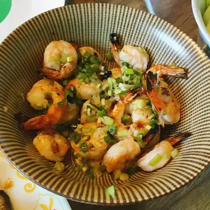
姜葱炒虾仁
Neven Mrgan · Ginger scallion shrimp · CC BY-NC-SA
第 3 步 · 调味出锅
小灶先用姜葱煸香再炒虾，调料提前量好。虾熟时加葱绿、翻到刚软就尝味，不必勾芡。
核对原页与实际步骤
主要资料：The Woks of Life · Bill
下厨房 · 她是弯弯呀 · 葱姜炒虾仁
原作者先配好碗汁，煎虾仁后加葱姜，最后用料汁收尾。
The Woks of Life · Judy
下厨房 · 姜葱炒虾的做法
用料 虾仁 450 克，去壳去虾线、葱 4 根、姜 10 薄片、食用油 2 汤匙、料酒 1 汤匙（可省）、香油 1/4 茶匙（可省）、盐 1/4 茶匙、白胡椒粉 1/8 茶匙（可省）、糖 1/8 茶匙（可省）、生抽 少量（可省）
App 步骤 1. 准备虾仁：虾仁冷藏解冻、去虾线，沥水后用厨房纸吸干。姜切细丝，葱白葱绿分开放，开火前全部备齐。生虾的碗、刀和手清洗后再接触熟食；姜葱是主香味，量不必数得一根不差。
用量：虾仁 450 克、葱 4 根、姜 10 薄片；姜葱量可灵活。
状态：冷藏解冻的虾去虾线、擦干；葱白葱绿分放。
2. 炒姜葱虾：中火热油，先炒姜和葱白到闻到香气、边缘微软，别炸黑。下虾仁铺开，底面变色再翻，锅挤就分批。炒到虾肉从里到外珠白不透明、紧实；大虾用食品温度计测中心63°C，不以外壳变红或卷曲程度判熟。
用量：油 2 汤匙，先下姜和葱白，再放虾仁，锅挤就分批。
火力：中火。
状态：姜葱出香、变软；虾肉内外珠白不透明、紧实，大虾温度计测中心 63°C。
3. 调味出锅：下葱绿翻几下到刚软，盐先一小撮；喜欢酱香可改用少量生抽，别两样一起倒足。料酒有则沿锅边少量加并煮开，香油、白胡椒、糖均可省。尝一只熟虾再调整，够味就关火盛出。
用量：葱绿；盐先一小撮，或改用少量生抽。料酒少量，可省。
火力：够味关火。
状态：葱绿翻到刚软，尝一只熟虾再调味。
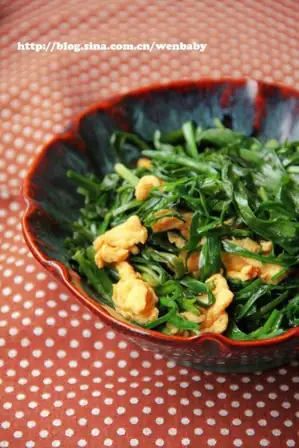
韭菜炒鸡蛋
来源于下厨房 · 文琦 · 韭菜炒鸡蛋 · 非商业转载说明
第 3 步 · 合炒
韭菜洗后沥干再切；韭菜变软才让鸡蛋回锅，一起热透即可。
核对原页与实际步骤
主要资料：HowToCook 中文开源菜谱 · HowToCook 社区贡献者
下厨房 · 文琦 · 韭菜炒鸡蛋
原作者先炒鸡蛋盛出，再快炒韭菜，合锅即盛。
Red House Spice · Wei Guo
用料 韭菜 100 克、鸡蛋 2 个、食用油 约 15 毫升，分次用、盐 少许
App 步骤 1. 切韭菜打蛋：韭菜挑去黄叶、洗净根部并充分沥干，切约 3 厘米段，较粗根段可另放。鸡蛋打到看不出分开的蛋白条，另备干净盘盛蛋。
用量：韭菜 100 克、鸡蛋 2 个。
状态：韭菜沥干切约 3 厘米段；蛋打到看不出分开的蛋白条。
2. 炒鸡蛋：锅中放大部分油，中火加热到流动、不冒烟。倒蛋液，等边缘凝住就向中心轻推，成柔软蛋块后先盛出，不要先煎到干硬发褐。
用量：用大部分油炒打匀的 2 个鸡蛋，留余油炒韭菜。
火力：中火。
状态：油能流动、不冒烟；蛋液边缘凝住再轻推，成柔软块先盛出。
3. 合炒：余油先炒韭菜根段，再放叶段，翻到整体塌软、由生硬变柔韧。把蛋块放回，加少量盐轻翻；所有蛋液完全凝固、没有流动生蛋液时出锅，别为了等韭菜而一直煎蛋。
用量：用余油先炒韭菜根段，再炒叶段；回锅的蛋加少量盐。
状态：韭菜变柔韧，合炒后蛋液完全凝固、无流动生蛋液。

青椒炒鸡蛋
来源于下厨房 · 张记小灶 · 零失败青椒炒鸡蛋，5分钟快手下饭菜，家常味最香 · 非商业转载说明
第 3 步 · 合炒
本版先炒蛋盛出，再炒软青椒后合锅，为新手拆开控制熟度，并非复刻原法；厚壁椒要多给时间，不承诺零失败。
核对原页与实际步骤
主要资料：美食天下 · 老老猪的小小猪
下厨房 · xcf2019 · 青椒炒蛋 米饭杀手 下饭
原法将碎椒与蛋混合，中火摊开后炒至蛋液凝固。
China Sichuan Food · Elaine
下厨房 · 厨师长教你：“青椒炒鸡蛋”的家常做法 ,非常下饭的做法
用料 青椒 6 个小青椒、鸡蛋 3 个、食用油 适量，分两次用、盐 适量、糖 少许（可省）
App 步骤 1. 切配：青椒洗净去蒂去籽，切成差不多大小的短片；不吃辣就用甜椒。鸡蛋打匀，只加一小撮盐。锅边备干净盘，油分两次用，别把全部盐先倒进蛋液。
用量：小青椒 6 个、鸡蛋 3 个、盐一小撮；油分两次。
状态：青椒去蒂籽切短片，鸡蛋打匀。
2. 炒蛋：中火热油到容易流动，倒蛋液，等边缘成形再往中间推。蛋刚成柔软块就盛出，稍后还要回锅熟透，不用这一步炒到焦黄。
用量：第一次用的油、打好的 3 个鸡蛋。
火力：中火。
状态：油容易流动；蛋刚成柔软块就盛出，稍后回锅熟透。
3. 合炒：补少量油，先炒青椒到有光泽、稍塌软，夹一块放凉尝，能咬断且没有生硬口感。再放蛋块轻翻到无流动蛋液，尝后补少量盐；糖只是可选的小撮，不必多放。
用量：青椒、回锅的蛋、少量补油；盐尝后再加，糖可省。
状态：青椒有光泽、能咬断且无生硬感；蛋翻至无流动生蛋液。

黄瓜炒鸡蛋
Huangdan2060 · Hunan cuisine, Cucumber fried with Eggs.jpg · CC BY 3.0
第 3 步 · 炒黄瓜
小灶把成块的蛋先盛出；黄瓜略软仍有形时回蛋，避免鸡蛋全程在锅里变干。
核对原页与实际步骤
主要资料：美食天下 · 不做妖精好多年
下厨房 · 云姐的幸福日子 · 黄瓜炒鸡蛋
作者把黄瓜切薄片，蛋液先下锅，鸡蛋成块后再加入瓜片。
Cookpad · 札幌市丰平保健中心食谱 · Toyohira Health Center, The City Of Sapporo
下厨房 · 黄瓜炒鸡蛋的做法
用料 黄瓜 1 根、鸡蛋 1 个、花生油 1 汤匙、盐 约 0.5 克、鸡精 少许（可省）
App 步骤 1. 准备：黄瓜洗净，纵切后切约 3 毫米薄片；籽瓤特别水可刮掉部分。鸡蛋打匀。把 1 汤匙油分成两份，大部分炒蛋、余下炒黄瓜，另备干净盘。
用量：黄瓜 1 根、鸡蛋 1 个；花生油 1 汤匙分两份。
状态：黄瓜切约 3 毫米薄片，鸡蛋打匀。
2. 炒鸡蛋：中火加热大部分花生油，不等冒烟。蛋液倒下，边缘凝住时轻推成块，刚成形就盛出；这一小份蛋很快，别离开锅边。
用量：大部分花生油、1 个鸡蛋的蛋液。
火力：中火热油。
状态：油未冒烟；蛋边凝住时轻推成块，刚成形先盛出。
3. 炒黄瓜：原锅加余油，黄瓜片翻炒到颜色稍深、边缘开始透亮，仍保留一点脆。放回蛋块，加少量盐，翻到蛋液完全凝固后立刻出锅。鸡精可省，不把黄瓜炒到软烂才停。
用量：余油炒黄瓜；回锅的蛋加少量盐，鸡精可省。
状态：黄瓜边缘透亮，还带点脆；蛋液完全凝固再出锅。
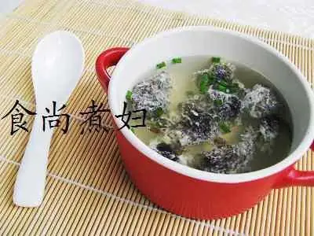
紫菜蛋花汤
来源于下厨房 · 食尚煮妇 · 紫菜蛋汤 · 非商业转载说明
第 3 步 · 淋蛋液
小灶把两者分开下：先让紫菜舒展开，再往小滚的汤中细流淋蛋，形成较薄的蛋花。
核对原页与实际步骤
主要资料：美食天下 · 四月豆
下厨房 · 食尚煮妇 · 紫菜蛋汤
原方将撕碎的紫菜泡进蛋液，再分团放入热汤。
Made With Lau · Daddy Lau / Randy Lau
下厨房 · 紫菜蛋花汤的做法
用料 紫菜 1 片、鸡蛋 2 个、食用油 少许、盐 适量、水 适量，按汤碗大小调整、香菜 1 根（可省）
App 步骤 1. 备料：紫菜按包装清洗或直接使用，撕成小片；有泥沙就洗净沥水。鸡蛋充分打散，香菜有才准备。先用汤碗估计要喝的水量，不必加满一大锅。
用量：紫菜 1 片、鸡蛋 2 个；水量按汤碗大小，香菜可省。
状态：紫菜按包装处理、撕小片；鸡蛋充分打散。
2. 煮紫菜：水烧开，加少许油和一小撮盐，紫菜下锅拨散，煮到全部展开柔软。紫菜自身可能有咸味，底味先淡一些。
用量：少许油、盐一小撮；下撕好的紫菜。
火力：水烧开再下紫菜。
状态：紫菜全部展开、柔软。
3. 淋蛋液：转小滚，将蛋液绕圈缓缓淋入，蛋花定形后再轻推。继续加热到全凝固、无透明蛋液，尝后补盐；有香菜最后撒，别让汤长时间大滚把蛋煮老。
用量：淋入 2 个鸡蛋的蛋液；尝后补盐，香菜可省。
火力：转小滚，避免长时间大滚。
状态：蛋花定形再轻推，煮到全凝固且无透明蛋液。
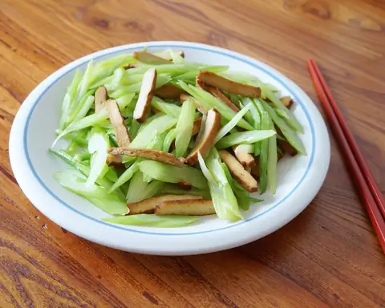
芹菜炒香干
来源于下厨房 · 米二乔 · 芹菜炒香干（豆腐干） · 非商业转载说明
第 1 步 · 切配
粗芹菜梗顺长剖细再切段，香干切成相近长度的条。两者炒熟后再尝味，按香干本身的咸度补盐。
核对原页与实际步骤
主要资料：美食天下 · 国民马大姐豆制品
下厨房 · 米二乔 · 芹菜炒香干（豆腐干）
原方给芹菜去筋、斜切成片，香干也切片再与芹菜同炒。
The Woks of Life · Judy
下厨房 · 〖家常快手菜❗️简单美味的芹菜炒香干的做法视频
用料 香干 200 克、芹菜 1 小把、青椒 半个（可省）、蒜 1 瓣（可省）、食用油 适量、盐 少许、糖 少许（可省）、生抽 1 小勺（可省）、淀粉 少许（可省）、水 焯菜用水，另留少量调芡、香油 少许（可省）
App 步骤 1. 切配：芹菜洗净，粗茎纵切细再切约 3 厘米段；香干切相近长度的条，先看包装是否要求加热。青椒蒜有才切。若用淀粉，用少量凉水调开，别把干粉直接撒锅里。
用量：香干 200 克、芹菜 1 小把；淀粉若用拿少量凉水调开。
状态：芹菜切约 3 厘米段，香干切成相近长度的条。
2. 炒熟：锅里油薄薄润住锅底，中小火把蒜炒香，再下香干和芹菜翻动。青椒有就加入；锅偏干时沿边少量加水。炒到芹菜能弯折、香干中心热透，香干有额外包装加热要求则照做。
用量：油薄铺锅底；蒜和青椒可省，锅干时沿边少量补水。
火力：中小火先炒香蒜。
状态：芹菜能弯折、香干中心热透；按包装额外加热要求处理。
3. 调味：先尝熟的香干再补盐，香干本身可能已经很咸。生抽糖香油都可省；若勾芡，重新搅匀淀粉水，少量倒入锅内汁水中煮开，轻轻挂汁就够。
用量：先尝再补盐；生抽、糖和香油可省，勾芡只少量加淀粉水。
状态：芡汁煮开，轻轻挂汁即够。

肉末香干炒芹菜
来源于下厨房 · 美食作家王刚 · 芹菜炒肉末（完成装盘步骤） · 非商业转载说明
原作者将牛肉末与香干丁、芹菜丁同炒。小灶使用猪肉末。
第 3 步 · 炒蔬菜
本版先拨散并炒熟肉末，再放香干和芹菜；切成接近大小的小粒，能均匀裹上肉汁。
核对原页与实际步骤
主要资料：美食天下 · 宁小麦
下厨房 · 美食作家王刚 · 厨师长教你：“芹菜炒肉末”的家常做法，味道很赞，非常下饭
作者把香干和芹菜切细粒，牛肉末与香干先炒，芹菜后下。
The Woks of Life · Bill
The Woks of Life · Judy
下厨房 · 芹菜香干肉沫的做法
用料 猪肉末 50 克、香干 4 片、芹菜 2 棵、姜 1 小块（可省）、蒜 3 瓣（可省）、料酒 1 小匙（可省）、花椒粉 半小匙（可省）、生抽 1 小匙、食用油 适量、盐 适量（可省）、水 少许
App 步骤 1. 切配：芹菜去老筋，和香干切成相近的小丁，方便一口吃到三种味道。肉末用少许生抽和油拌松，姜蒜有则切末；料酒可省。暂不炒就把肉末放回冷藏，处理后洗净手和用具。
用量：猪肉末 50 克、香干 4 片、芹菜 2 棵；肉末拌少许生抽和油。
状态：芹菜去老筋，和香干都切成相近小丁。
2. 炒肉末：锅中少油，中火炒香姜蒜，没有就直接下肉末。用铲子边压边拨，先拆散肉团再翻炒，炒到水汽减少、肉香出来。用食品温度计确认肉末中心至少71°C；聚在一起的厚团要拆开再测，变色不等于已熟。
用量：少油炒猪肉末，姜和蒜可省。
火力：中火。
状态：拆散肉团，水汽减少、出肉香；肉末中心用温度计确认至少 71°C。
3. 炒蔬菜：下芹菜和香干翻匀，让香干沾上肉汁。沿锅边加少许水，炒到芹菜颜色亮、能轻易咬断但仍有脆感，香干内部也热透。尝味后才补盐；花椒粉喜欢就少撒，别盖住芹菜香。
用量：下芹菜和香干，加少许水；尝后再补可选的盐、花椒粉。
状态：芹菜颜色亮、能轻易咬断但还脆，香干中心热透。

醋溜白菜
来源于下厨房 · 圆圆圈_ · 醋溜白菜 · 非商业转载说明
第 2 步 · 炒白菜
厚帮切薄先炒，叶片软下来后再合醋汁；汁刚裹匀就盛盘，避免白菜久煮出水。
核对原页与实际步骤
主要资料：美食天下 · 淇家的小厨房
下厨房 · 圆圆圈_ · 醋溜白菜
作者把白菜帮叶分开，帮的边缘略透后加叶，再倒预调醋汁。
Red House Spice · Wei Guo
下厨房 · 醋溜白菜的做法
用料 白菜 200 克、食用油 适量、盐 少许、生抽 适量（可省）、糖 适量（可省）、醋 适量、花椒粉 少许（可省）、葱 少许（可省）、淀粉 少许（可省）、水 少许，调芡用、鸡精 少许（可省）
App 步骤 1. 切白菜：白菜洗净沥水，厚帮斜切薄片，叶另放。葱有才切。新手可先用醋 1 茶匙与一小撮盐调汁；喜欢再加少许糖、半茶匙生抽，后面尝了再补。若勾芡另用凉水调开少许淀粉。
用量：白菜 200 克；醋 1 茶匙加盐一小撮，糖少许和生抽半茶匙可加可省。
状态：白菜帮斜切薄片，与叶分放。
2. 炒白菜：锅中少油，中小火把葱炒香，先下白菜帮翻到边缘微透，再下叶。保持翻动到叶子塌软、厚帮能咬断。花椒粉有且喜欢可加；锅里已有菜汁就不用再加很多水。
用量：油少量、葱可省；先下白菜帮再下叶。
火力：中小火炒香葱。
状态：菜帮边缘微透再下叶，炒到叶软、厚帮能咬断。
3. 醋汁调味：倒入调好的醋汁翻匀，夹一片稍凉后尝，酸味不足再一点点补醋。淀粉水若用要先搅匀，少量加后煮开，汁能薄挂菜叶就停；鸡精可省。
用量：调好的醋汁，酸味不足再补一点醋；勾芡可省。
状态：淀粉水若用，少量加后煮开，汁能薄挂菜叶。
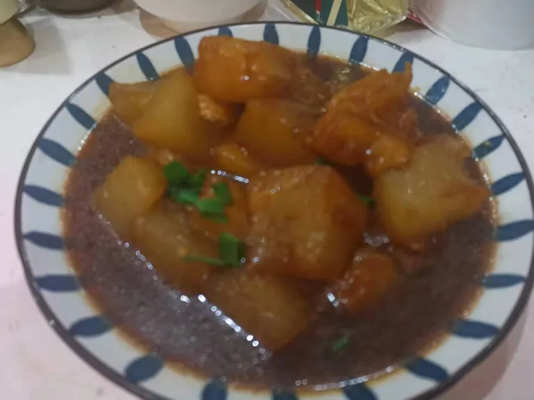
红烧冬瓜
HowToCook 菜谱贡献者 · 红烧冬瓜 · Unlicense
第 3 步 · 收汁
省去花刀和多种酱料，冬瓜切匀即可。盖锅时看软硬，开盖时看挂汁，两个时点分开判断。
核对原页与实际步骤
主要资料：美食天下 · 大草海
下厨房 · 古贝私厨 · 红烧冬瓜
去皮去瓤切块，盖锅焖软，开盖后收汁。
China Sichuan Food · Elaine
下厨房 · 红烧冬瓜的做法
用料 冬瓜 500 克、青椒 1 个（可省）、红烧酱油 1 勺、姜 2 片（可省）、食用油 适量、水 约 1 碗，按锅具调整
App 步骤 1. 切配：冬瓜去硬皮、瓤和籽，切约 1 厘米厚、大小接近的块。姜和青椒有才准备。酱油先放手边但别急着全倒，不同红烧酱油的咸度和上色差异很大。
用量：冬瓜 500 克，备红烧酱油 1 勺，余量尝后再决定；姜和青椒可省。
状态：冬瓜去皮去籽，切约 1 厘米块。
2. 烧冬瓜：锅里少油，中火，有姜先炒出香味，再下冬瓜翻匀。加红烧酱油先半勺，倒水到冬瓜约一半高，煮开后中小火盖煮。间或轻翻；最厚块由白硬变半透明、筷子易戳入才算软透，锅干就补热水。
用量：少油、红烧酱油先半勺；水加到冬瓜约一半高，锅干就补热水。
火力：中火炒，煮开后中小火盖煮。
状态：最厚块从白硬变半透明，筷子容易戳入。
3. 收汁：有青椒此时放入，煮到稍软且没有生硬口感。开盖看汤汁：还有很多就中火略收，用勺推开瓜块，盘底还留一点能拌饭的汁就停。尝味再决定是否加剩余酱油，不为颜色深而多加。
用量：青椒可省；尝后决定是否补剩余酱油。
火力：开盖后汁多就中火略收。
状态：青椒无生硬感，锅里留一点能拌饭的汁。
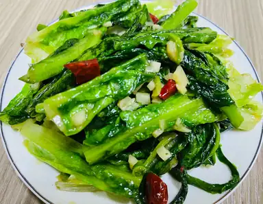
蒜蓉油麦菜
来源于下厨房 · naaaaaa · 蒜蓉油麦菜 · 非商业转载说明
第 2 步 · 炒蒜菜
小灶主取蒜香。蒜碎刚出香就下沥干的菜段，菜量大分批炒，以免蒜焦菜仍生。
核对原页与实际步骤
主要资料：美食天下 · 香香83
下厨房 · naaaaaa · 蒜蓉油麦菜
原方将油麦菜切段，先炒蒜末和辣椒等香料，再放菜翻炒。
The Woks of Life · Judy
美食天下 · 蒜蓉油麦菜的做法
用料 油麦菜 350 克、蒜 适量、食用油 适量、盐 少许、生抽 少许（可省）、鸡精 少许（可省）
App 步骤 1. 备菜：油麦菜掰开洗净根部泥沙，沥干后切约 5 厘米段，较粗的菜梗与叶分开。蒜切末。所有调味先备好，叶菜一下锅就很快，不中途离锅找东西。
用量：油麦菜 350 克、蒜适量。
状态：沥干切约 5 厘米段，粗梗和叶分开。
2. 炒蒜菜：锅里放油到能薄润锅底，中小火下蒜末，闻到香味但没变棕时先下梗，再放叶。调中大火翻动到叶子塌软、梗不再生硬。菜堆得翻不动就分批，不让下面的蒜一直焦着。
用量：油薄铺锅底，先炒蒜末，再放菜梗和叶。
火力：中小火炒蒜，转中大火炒菜。
状态：蒜出香但未变棕时下梗；炒到叶软、梗不生硬。
3. 调味：先少量撒盐翻匀，夹一片尝。若用生抽或鸡精就更少放盐，全部可不加；熟了立即盛出，别靠关火后在锅里久焖来“保温”。
用量：先撒少量盐；用生抽或鸡精时少放盐，两者均可省。
状态：尝味够了、菜炒熟就盛出。
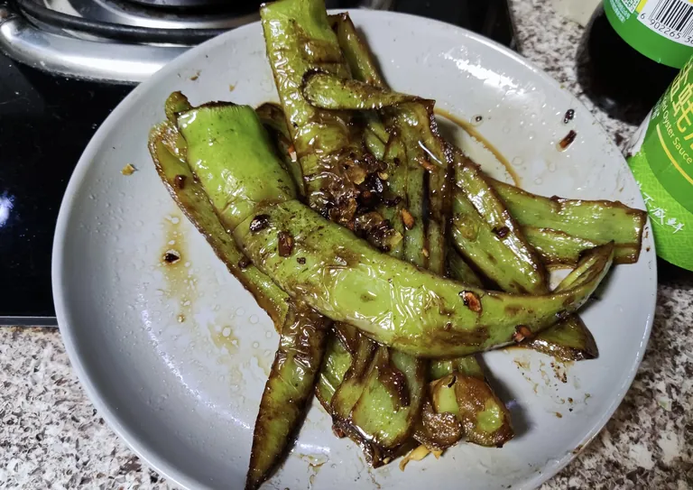
虎皮青椒
HowToCook 菜谱贡献者 · 虎皮青椒 · Unlicense
第 2 步 · 煎青椒
先观察贴锅面的皱纹，再决定何时翻面。生抽和醋只按本版的小份量起调。
核对原页与实际步骤
主要资料：美食天下 · 花雨曼陀罗
下厨房 · SuSu苏苏儿 · 虎皮青椒
青椒沥干，先煎出皱皮再加入蒜与调汁。
China Sichuan Food · Elaine
下厨房 · 〖快手家常虎皮青椒的做法步骤图，怎么做好吃〗每天都要健康开心
用料 青椒 200 克、蒜 适量（可省）、食用油 适量、生抽 适量、醋 适量、盐 少许（可省）、糖 适量、水 少许
App 步骤 1. 准备青椒：青椒去蒂去籽，洗后彻底擦干；细长椒可留整段，厚椒切大块。先用生抽 1 茶匙、醋 1 茶匙、糖一小撮和水 1 汤匙调汁，作为 200 克椒的起点，稍后再尝着补。蒜有才切。
用量：青椒 200 克；先用生抽 1 茶匙、醋 1 茶匙、糖一小撮、水 1 汤匙调汁。
状态：去蒂籽后彻底擦干，厚椒切大块。
2. 煎青椒：锅底薄薄一层油，中小火把青椒铺一层。用铲轻压让椒皮贴锅，先掀起一只看底面；有褐色斑点、椒皮起皱，再把这一批翻面。目标是零星虎皮，不是整片黑炭；油冒烟就减火，不往冒烟油锅里泼水。
用量：锅底薄铺油，青椒单层放。
火力：中小火；油冒烟就减火。
状态：椒皮起皱、有褐色斑点才翻面，避免整片发黑。
3. 裹汁：青椒已变软后拨到一旁，有蒜则小火炒出香味。调小火，沿锅边慢慢倒料汁，煮开轻翻，椒肉柔软、汁能附着就关火。尝后决定是否补盐糖醋，生抽足够咸时不加盐。
用量：调好的料汁；蒜可省，尝后决定是否补盐糖醋。
火力：小火炒香蒜，再小火慢倒汁煮开。
状态：椒肉柔软，汁能附着时关火。

香菇油菜
来源于下厨房 · 五月孤芳 · 香菇油菜 · 非商业转载说明
第 2 步 · 炒菜炒菇
小灶让鲜菇充分受热再合菜；粗菜梗纵剖，不让已经软的菜叶陪着菇久煮。
核对原页与实际步骤
主要资料：美食天下 · 小艾厨娘
下厨房 · 五月孤芳 · 香菇油菜
作者将青菜和香菇分开处理，再合锅淋芡汁，菜梗比菜叶先入热水。
Made With Lau · Daddy Lau / Randy Lau
下厨房 · 香菇油菜的家常做法的做法
用料 油菜 250 克、鲜香菇 80 克、葱 少许（可省）、食用油 适量、盐 适量、糖 少许（可省）、生抽 适量（可省）
App 步骤 1. 切配：油菜逐片洗净沥水，粗梗纵切细。鲜香菇去硬蒂，洗后擦干切约 4 毫米片；这页用鲜菇，不把干菇直接丢下锅。葱有才切，另备干净盘暂放青菜。
用量：油菜 250 克、鲜香菇 80 克；葱可省。
状态：油菜粗梗切细，鲜香菇擦干切约 4 毫米片。
2. 炒菜炒菇：锅里少油，中火，有葱先炒香。油菜先炒到叶软、梗能戳入，盛出。原锅补少量油，下香菇片铺开翻炒，等出水后继续炒到菇片柔软、中心不再硬韧；不要只把表面烫热就合锅。
用量：少油炒油菜，盛出后再补少量油炒菇片。
火力：中火。
状态：菜叶软、梗可戳入再盛；菇片先出水，再炒到柔软、中心不硬韧。
3. 合炒调味：把油菜放回，先撒一小撮盐轻翻到整锅热透。生抽和糖可省；用生抽就少加盐。熟菇已提供香味，不用把青菜再炖到发黄才出锅。
用量：盐先一小撮；放生抽就少加盐，生抽和糖可省。
状态：菜回锅合炒到整锅热透。
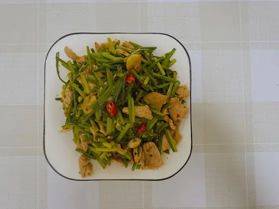
蒜苔炒肉丝
来源于下厨房 · 琥珀君W · 蒜苔炒肉丝 · 非商业转载说明
第 3 步 · 合炒
蒜苔先去老梗。咬不动的粗段可补少量水多煮片刻，把已熟的肉丝留到最后合锅。
核对原页与实际步骤
主要资料：美食天下 · 一慕倾城
下厨房 · 琥珀君W · 蒜苔炒肉丝
原方将肉和蒜苔分次下锅，蒜苔入锅后补一点水煮软再调味。
The Woks of Life · Bill
下厨房 · 蒜苔炒肉丝的做法
用料 蒜苔 250 克、猪瘦肉 75 克、生抽 1 匙（可省）、盐 少量，分次用、食用油 1.5 匙、淀粉 半匙（可省）、水 少许，锅干或需焖熟时沿锅边少量补
App 步骤 1. 切配腌肉：蒜苔掐掉掐不动的老根，切成好夹的短段。猪肉切粗细接近的细丝；盐先一小撮，生抽有则少许，有淀粉就薄薄拌匀，不拌成白色厚糊。短腌时放冷藏，生熟刀板和盘分开。
用量：蒜苔 250 克、猪瘦肉 75 克；腌肉盐先一小撮，生抽和淀粉可省。
状态：蒜苔去老根，肉丝粗细接近；淀粉若用就薄裹。
2. 炒肉：锅中放部分油，中火到油能流动，下肉丝迅速拨散。粘着时稍等底面定形再推，不用猛刮。肉丝炒熟再盛到干净盘；用食品温度计检查，此版保守以较厚肉丝中心71°C为目标，不只看变色。
用量：用部分油炒肉丝，留一些油炒蒜苔。
火力：中火。
状态：油流动就下肉丝；用温度计测较厚肉丝中心达到本菜采用的 71°C。
3. 合炒：原锅留薄油，蒜苔中火翻炒到颜色变亮、能弯折，尝一段无硬芯、无明显生辛味再放回肉丝。若炒干仍硬，可加少量水盖盖焖软再开盖。合炒热透后先尝再补盐，肉已熟就不必久炒。
用量：原锅留薄油，蒜苔干硬时补少量水；盐尝后再补。
火力：中火炒蒜苔。
状态：蒜苔颜色亮、能弯折、无硬芯或明显生辛味，再放熟肉丝热透。

清蒸南瓜
来源于下厨房 · 小美的美食 · 营养蒸--清蒸南瓜 · 非商业转载说明
第 3 步 · 检查软度
挑盘中最厚的一块从侧面戳到中心；薄块先软时先夹出，余下继续蒸。
核对原页与实际步骤
主要资料：HowToCook 中文开源菜谱 · HowToCook 社区贡献者
下厨房 · 小美的美食 · 营养蒸--清蒸南瓜
原作者将南瓜切块装盘，等蒸锅水沸再入锅，用筷子检查软度。
Good Food · Lulu Grimes
用料 南瓜 300 克、水 蒸锅用水约 1 升，按锅具调整
App 步骤 1. 切南瓜：南瓜外皮洗净，放稳后去瓤去籽，切约 2 厘米厚片，尽量相近。皮太硬可削去；不好下刀就买已切块南瓜，不悬空硬劈。耐热盘单层摆放，留一点蒸汽流通空隙。
用量：南瓜 300 克。
状态：切成约 2 厘米厚的相近大小，单层摆盘。
2. 水开后蒸：按蒸锅要求加水，水位不能淹到盘底。水烧开后放稳蒸架和盘，盖好，调到能持续出蒸汽的火力。先蒸 15 分钟检查，期间别离开太久，也不要烧干；厚块可能需 20 分钟或更久。
用量：蒸锅水约 1 升，按锅具调整，水不淹到盘底。
火力：水开后上锅，保持持续出蒸汽。
状态：先蒸约 15 分钟检查，留意锅水，厚块可能更久。
3. 检查软度：开盖时让蒸汽朝远离身体的方向散开，用筷子戳最厚块的中心，能轻松穿透才取出。仍硬就确认锅内有水，继续蒸 3–5 分钟再查。关火后用隔热手套或夹盘器稳稳取盘，盘内积水很烫。
用量：检查已蒸的 300 克南瓜，选最厚的一块。
火力：中心仍硬时确认锅内有水，再蒸 3–5 分钟复查。
状态：筷子能轻松穿透最厚块中心，再关火隔热取盘。

清炒花菜
来源于下厨房 · 塞北主妇 · 清炒菜花 · 非商业转载说明
第 2 步 · 焯花菜
把较粗花梗剖开，使它和小花朵同时受热；焯后捞一朵试梗，较硬的在炒后补水短焖。
核对原页与实际步骤
主要资料：HowToCook 中文开源菜谱 · HowToCook 社区贡献者
下厨房 · 塞北主妇 · 清炒菜花
原方掰花菜成小朵、焯水，再炒蒜片和花菜。
Red House Spice · Wei Guo
用料 花菜 300 克、蒜 2–3 瓣、盐 约 3 克，酌量、食用油 15 毫升、水 焯水约 1 升，另留 50 毫升焖菜
App 步骤 1. 切配：花菜从茎部拆成一口大小小朵，流水洗净，粗茎切薄片。蒜切片。把焖菜的 50 毫升水先量在杯里，盐先备着不全部倒下；300 克花菜未必需要用满 3 克盐。
用量：花菜 300 克、蒜 2–3 瓣，另量 50 毫升水做短焖用。
状态：分成一口小朵，粗茎切薄。
2. 焯花菜：足量水烧到沸腾再下花菜，先煮约 2–3 分钟。夹一块粗茎检查，应从硬脆开始变软，但不用煮到一夹就碎；然后沥干，后面还要炒和短焖。
用量：焯水约 1 升。
火力：水沸再下花菜。
状态：约 2–3 分钟检查，粗茎开始变软但未软碎，后面还要炒焖。
3. 炒香：锅里放油，中小火把蒜片炒出香味，未焦黄就下花菜。转中大火翻炒约 2 分钟，均匀裹油；看到蒜快速变棕、闻到焦味就降火，不为完成倒计时硬炒。
用量：油 15 毫升、蒜片。
火力：中小火炒蒜，转中大火炒花菜约 2 分钟。
状态：蒜出香、未焦黄时放菜，炒至均匀裹油。
4. 短焖：盐先加一小撮，沿锅边倒 50 毫升水，盖锅中火焖约 1 分钟。开盖用筷子试厚茎，仍硬就再短焖并检查水量；能戳入后尝味补盐，剩汁稍收即可，别把软花菜反复炒碎。
用量：先用盐一小撮，沿锅边倒 50 毫升水。
火力：盖锅中火焖约 1 分钟再检查。
状态：筷子能戳入厚茎；仍硬就再短焖并检查水量。

白灼菜心
HowToCook 菜谱贡献者 · 白灼菜心 · Unlicense
第 2 步 · 白灼
粗梗切段或剖薄再下锅，嫩菜心也可以整棵做；本版蚝油可省，料汁按口味分次淋。
核对原页与实际步骤
主要资料：HowToCook 中文开源菜谱 · HowToCook 社区贡献者
下厨房 · 美味虾卷 · 白灼菜心
菜心的梗端先受热，再烫叶片，最后单独做汁。
Omnivore's Cookbook · Maggie Zhu
用料 菜心 250 克、食用油 10 克、生抽 5 克、蚝油 5 克（可省）、盐 焯菜水用约 5 克（可省）、糖 3 克（可省）、蒜 4–5 瓣（可省）、小米辣 1–2 根（可省）、姜 少许（可省）、水 焯菜 500 毫升、料汁 100 毫升、洋葱 少许（可省）
App 步骤 1. 备菜：菜心洗净根部泥沙，切掉老硬根，特别粗的茎纵切开；长菜可切段，梗叶分放。蒜姜辣椒洋葱都可省，有才切好。焯菜和料汁的水分开备。
用量：菜心 250 克；焯菜水 500 毫升、料汁水 100 毫升分开备。
状态：去掉老硬根，粗茎纵切，梗叶分放。
2. 白灼：锅中水完全沸腾后加几滴油，先下菜梗约 1 分钟，再下菜叶继续煮。水量要让菜能浸到，不够就加水重新烧开。粗茎能被筷子戳入、叶软再捞出沥水；盐只在焯水时可选，不必用满。
用量：焯水中加几滴油；盐可省，水量要能浸到菜。
火力：水完全沸腾再下菜。
状态：菜梗先入水约 1 分钟再下叶；筷子能戳入粗茎、叶软再捞。
3. 浇汁：小锅放生抽与料汁用水，有蒜姜等香料就少量放入煮开；蚝油、糖、辣椒、洋葱按喜好加或省略。先淋部分到菜上，尝了再补，盘底不必灌满酱汁。
用量：生抽 5 克加料汁用水 100 毫升；蚝油、糖和香料可省。
状态：料汁煮开；先淋一部分，尝后决定是否再补。
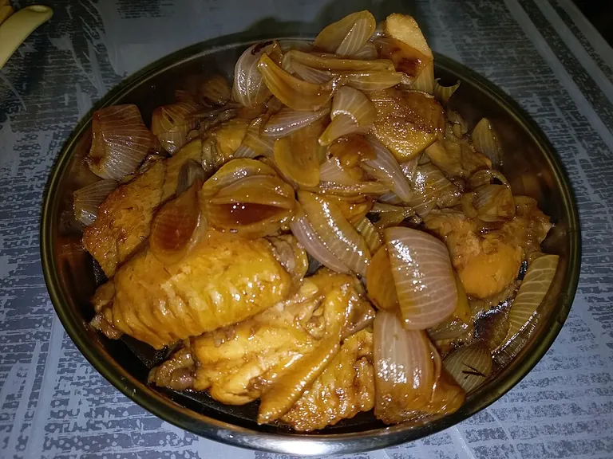
可乐鸡翅
Pauloleong2002 · Home made chicken wings with coca cola.jpg · CC BY-SA 4.0
第 3 步 · 煮熟收汁
借鉴先煎、再煮、后收汁的顺序；本版保留焯水预处理。最厚肉处须测到 74°C，再小火收汁，不能用酱汁浓度判断鸡翅已熟。
核对原页与实际步骤
主要资料：HowToCook 中文开源菜谱 · HowToCook 社区贡献者
下厨房 · yanyanfoodtube · 可乐鸡翅 Coca Cola Chicken wings
中小火煎上色，加可乐炖熟后再收汁。
RecipeTin Eats · Nagi Maehashi
用料 鸡翅 10–12 只鸡中翅、可乐 500 毫升、糖 10 克（可省）、生抽 约 15 克，分次用、盐 约 2 克，酌量（可省）、姜 2 片（可省）、料酒 20 毫升（可省）、葱 1 根，挽结（可省）、食用油 少许、水 焯水用、老抽 3 克（可省）
App 步骤 1. 焯鸡翅：鸡翅在冷藏充分解冻，冷水下锅，煮开后撇去浮沫，捞出沥干并擦去表面水，待会儿才不易溅油。姜、料酒有就放，没有也可。焯水不是煮熟，生肉用具洗净，另备干净熟食盘。
用量：鸡中翅 10–12 只；冷水焯，姜和料酒可省。
状态：煮开撇浮沫；捞出沥干并擦去表面水，焯水还未煮熟。
2. 煎香：锅里少油，中小火把鸡翅单层铺开，一面微黄、能轻推时再翻面。加入部分生抽和可乐到接近没过鸡翅即可，不必硬倒完整瓶。煮开转中火，让汤汁持续小滚；葱姜有则现在放。
用量：少油、部分生抽，可乐加到接近没过鸡翅，不必用完 500 毫升。
火力：中小火煎，煮开转中火保持小滚。
状态：鸡翅一面微黄、能推得动再翻。
3. 煮熟收汁：翻动鸡翅使两面都浸到汁，用食品温度计测最厚肉处、避开骨头，几只最大的均达到74°C再收汁。先尝煮熟的汤汁，可乐已有甜味，糖通常不用加，盐和老抽也按需少放。转小火勤翻，汁能挂在翅上就关火，留一点汁比熬干保险。
用量：煮熟后尝汁再调；可乐已甜，糖通常不用，盐和老抽按需少加。
火力：鸡翅煮熟后转小火收汁，勤翻。
状态：温度计避开骨头，测几只最大鸡翅厚处均达 74°C；酱汁能挂住鸡翅时关火。
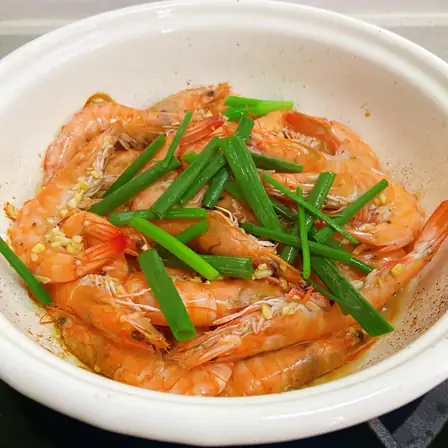
葱姜焖虾
来源于下厨房 · 陈西西-c · 姜葱无水焗虾 · 非商业转载说明
第 1 步 · 垫锅摆虾
本版用洋葱垫底、加少量料酒或水。单层铺虾，起蒸汽后调小火，锅底发干就沿边补水。
核对原页与实际步骤
主要资料：HowToCook 中文开源菜谱 · HowToCook 社区贡献者
下厨房 · 陈西西-c · 姜葱无水焗虾
原方在厚锅底铺姜蒜和葱，将虾均匀摊开，再盖锅焗。
The Woks of Life · Bill
用料 虾 250 克、洋葱 1 个、姜 1 小块、料酒 20 毫升（可省）、葱 1 根（可省）、蒜 5–8 瓣（可省）、生抽 10–15 毫升（可省）、醋 10 毫升（可省）、芝麻 少许（可省）、食用油 10–15 毫升（可省）、水 不用料酒时先加约 20 毫升，锅干时再少量补
App 步骤 1. 垫锅摆虾：洋葱切块、姜切片铺满锅底，选能盖严的厚底锅。虾清理后沥水，单层铺在上面；冻虾先冷藏解冻。生虾接触过的刀板、碗、手洗净，另备干净熟食盘。
用量：虾 250 克、洋葱 1 个、姜 1 小块。
状态：洋葱和姜铺锅底，虾沥水后单层摆放。
2. 中火起蒸汽：倒入约20毫升料酒或等量清水，加盖开中火，约1分钟只是提醒查看，应能看到蒸汽、听到轻轻沸腾声。没有蒸汽却响得很干，沿锅边少量加水再盖上；不要等到洋葱烧焦才处理。
用量：料酒约 20 毫升或等量清水；无蒸汽且锅发干就少量补水。
火力：盖锅开中火。
状态：约 1 分钟查看，有蒸汽、能听到轻轻沸腾。
3. 转小火：转小火盖着焖，约5分钟时查看锅底仍有湿润汤汁、虾受热均匀。锅底快干就补一小口水，锅内虾堆叠要翻动摊开；这一步的时间不是虾已熟的承诺。
用量：锅底将干时补一小口水。
火力：转小火加盖焖。
状态：约 5 分钟查看，锅底有湿汁、虾均匀受热；堆叠就摊开。
4. 关火焖：关火盖盖约5分钟，让余热均匀传入。只把这段当作焖香，不把关火等待当成补煮；若上一步蒸汽不足或虾明显还是生的，应先重新加热，而不是一直等。
用量：沿用锅中 250 克虾和洋葱，不再添料。
火力：关火盖焖约 5 分钟；之前蒸汽不足或虾明显生，要先重新加热。
状态：虾应已熟，若仍明显生，须重新加热再检查。
5. 检查与蘸料：开盖避开蒸汽，检查大虾中心肉质珠白、不透明且紧实，温度计测厚处63°C；未到就补少量水重新加热复查。虾熟再隔热盛盘。蘸料可不做；想做时把已有葱蒜、生抽、醋等用少油小火炒香并煮开，少量蘸着吃，不淋滚油。
用量：未熟可补少量水续煮；蘸料可省。
状态：大虾中心珠白不透明、紧实，温度计测厚处 63°C；未到就加热复查。
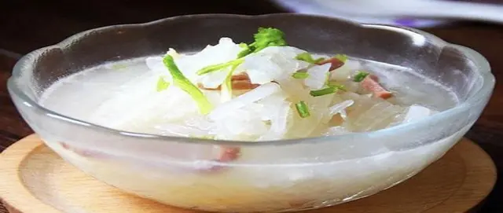
白萝卜丝清汤
来源于下厨房 · 99后两人生活记 · 虾米萝卜丝汤🦐 · 非商业转载说明
参考虾米版的萝卜丝切法和清汤颜色，小灶这道用素汤。
第 2 步 · 煮萝卜
小灶改为萝卜丝与清水同煮，不加榨菜。夹起时萝卜丝已能弯软、中心透亮，再尝汤调盐。
核对原页与实际步骤
主要资料：HowToCook 中文开源菜谱 · HowToCook 社区贡献者
下厨房 · 胖妻的厨房日记 · 美味白萝卜汤(没有异味的鲜汤)
作者把白萝卜擦丝，汤水先煮开，再下萝卜丝，最后调味。
Kikkoman · Yuko Ihara
美食天下 · 清爽萝卜丝汤的做法
用料 白萝卜 200 克、水 800 毫升、盐 约 3 克，酌量、白胡椒粉 2 克（可省）、味精 3 克，酌量（可省）、香油 3 克（可省）、葱 约 5 克（可省）
App 步骤 1. 切萝卜：白萝卜洗净去皮，先切薄片再切细丝，粗细尽量接近；用擦丝器时最后一小截不要硬擦，保护手指。葱有才切。
用量：白萝卜 200 克，葱可省。
状态：去皮后先切薄片再切细丝，粗细接近。
2. 煮萝卜：萝卜丝与800毫升冷水同入锅，烧开转中小火，让汤持续轻滚。煮到萝卜半透明、夹起能弯软，尝一根应没有生硬辣口感，再进入调味。
用量：白萝卜丝和 800 毫升冷水同下锅。
火力：烧开后转中小火，保持轻滚。
状态：萝卜半透明、夹起能弯，尝起来无生硬辣口感。
3. 调味：先加少量盐搅匀尝汤，够味就停。白胡椒从一小撮开始，味精、香油、葱有且喜欢再少量加；原料量是备料参考，不必把胡椒和味精全部放完。
用量：先加少量盐；白胡椒若用从一小撮开始，味精、香油、葱可省。
状态：搅匀尝汤，够味就停。
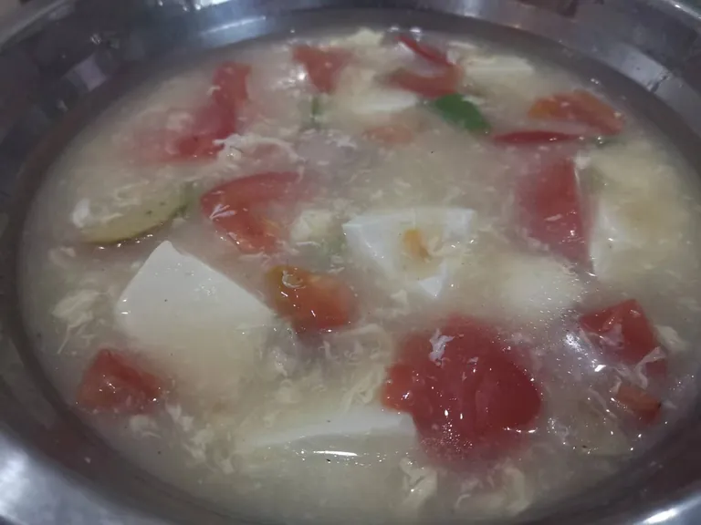
番茄豆腐蛋花羹
HowToCook 菜谱贡献者 · 西红柿豆腐汤羹 · Unlicense
第 2 步 · 煮番茄豆腐
本版省去原方菌菇。豆腐轻轻滑入汤里，用勺背沿锅边推开，薄芡分次加。
核对原页与实际步骤
主要资料：HowToCook 中文开源菜谱 · HowToCook 社区贡献者
下厨房 · 春暖花开9628wm · 番茄豆腐鸡蛋汤
原方先炒出番茄汁再加热水，汤滚后放豆腐，另调淀粉和蛋液。
Omnivore's Cookbook · Maggie Zhu
用料 番茄 1 个、鸡蛋 1 个、嫩豆腐 100 克、食用油 5 毫升、盐 约 2 克，酌量、淀粉 5 克、鸡精 少量（可省）、葱 半根（可省）、姜 1 片（可省）、水 350 毫升，另少许调芡
App 步骤 1. 切配：番茄切小丁，嫩豆腐切一口小块，鸡蛋打匀。淀粉用少许冷水搅成无颗粒浆，先放旁边；姜葱有才切，不用热水直接冲干淀粉。
用量：番茄 1 个、鸡蛋 1 个、嫩豆腐 100 克；淀粉 5 克用少许冷水调开。
状态：番茄切小丁、豆腐切一口块；淀粉浆搅到无颗粒。
2. 煮番茄豆腐：少油中火炒番茄，有姜先炒香。番茄出汁变软后加350毫升水煮开，豆腐沿碗边轻轻滑入；改小滚，汤勺推锅底而不翻砸豆腐，煮到豆腐中心热透。
用量：油 5 毫升、水 350 毫升；姜可省。
火力：中火炒番茄，加水煮开后改小滚。
状态：番茄出汁变软再加水，豆腐煮到中心热透。
3. 淋蛋勾薄芡：细流淋蛋，凝固后轻推，煮到蛋完全熟。水淀粉再搅匀，先倒一部分，一边轻推一边煮开，看汤能薄薄挂住勺背就停；未浓再补一点。盐先少后补，鸡精葱可省。
用量：淋入打匀的蛋；芡汁先加一部分，盐先少后补。
状态：蛋完全熟后才勾芡，煮到汤能薄薄挂住勺背。

凉拌木耳
HowToCook 菜谱贡献者 · 凉拌木耳 · Unlicense
第 1 步 · 处理木耳
参考先煮后拌；泡发、冷藏与异常丢弃按下方食安中心指引处理，原站短时间煮制不作为所有木耳的熟度保证。
核对原页与实际步骤
主要资料：HowToCook 中文开源菜谱 · HowToCook 社区贡献者
下厨房 · 妮妮Ameile · 凉拌木耳
木耳泡发后煮制，沥水再与调料拌匀。
China Sichuan Food · Elaine
下厨房 · 〖凉拌木耳的做法步骤图，凉拌木耳怎么做好吃〗甜蜜乌云
用料 木耳 新近泡发的木耳 120 克、蒜 2–3 瓣（可省）、小米辣 2 个（可省）、盐 约 2 克，酌量（可省）、糖 5–10 克，按口味（可省）、生抽 15 毫升、醋 15 毫升、香油 5 毫升（可省）、水 煮木耳用、芥末 少许（可省）
App 步骤 1. 处理木耳：只用按包装新近泡发的木耳，先冲洗再用干净容器泡。室温泡发一般不超过 2 小时，需更久就冷藏；不要隔夜放室温。泡好去硬根、洗净沙粒并尽快烹煮，别泡好又放桌面等几小时。黏滑、有异味或存放情况不清楚的不用。
用量：用新近泡发的木耳 120 克。
状态：按包装泡发，室温一般不超过 2 小时，需更久就冷藏；去硬根并尽快煮，黏滑或有异味就弃用。
2. 煮熟：足量水完全沸腾后下木耳，重新沸腾后先煮约 2 分钟，按包装要求和厚度继续到熟透。不要只用热水烫一下；用干净漏勺捞起沥水，需要降温可用干净凉开水短暂冷却再沥干。
用量：泡发木耳 120 克，沸水足量淹没。
火力：足量水完全沸腾再下木耳。
状态：重新沸腾后先煮约 2 分钟，按包装和厚度继续煮到熟透。
3. 拌汁：生抽和醋先各取一半混匀，蒜、小米辣、糖、香油、芥末按喜好少量加。木耳沥干后拌汁，尝味再补，不先额外加盐。现做现吃，暂时不吃就及时盖好冷藏，不能久放桌面。
用量：生抽、醋各 15 毫升，先各取一半，尝味再补；先不额外加盐。
状态：木耳沥干后现拌现吃，暂时不吃就及时冷藏。

西葫芦炒鸡蛋
HowToCook 菜谱贡献者 · 西葫芦炒鸡蛋 · Unlicense
第 4 步 · 合锅
本版保留可选番茄；按瓜片软硬判断回蛋时机，不要求两分钟内炒熟。
核对原页与实际步骤
主要资料：HowToCook 中文开源菜谱 · HowToCook 社区贡献者
下厨房 · 随心煮意 · 西葫芦炒鸡蛋
瓜切半月薄片，鸡蛋炒成块先盛出，最后合锅。
China Sichuan Food · Elaine
下厨房 · 西葫芦炒鸡蛋的做法
用料 西葫芦 500 克、鸡蛋 3 个、食用油 10–20 毫升，分次用、盐 适量，分次尝味、番茄 100 克（可省）
App 步骤 1. 切配：西葫芦洗净去两端，顺长对半剖开，切成约 3 毫米厚的半月片，鸡蛋打匀。有番茄就切小块。油分两份，另备干净盘盛蛋，西葫芦片厚薄差太大会一部分硬一部分烂。
用量：西葫芦 500 克、鸡蛋 3 个；油分成两份，番茄可省。
状态：西葫芦切约 3 毫米厚半月片，鸡蛋打匀。
2. 先炒蛋：用一半油，中火热到油能流动、不冒烟。倒蛋液，边缘凝住时往中间推，成柔软块就盛出；后面还要回锅，先别炒到焦干。
用量：用一半油炒 3 个鸡蛋的蛋液。
火力：中火。
状态：油能流动、没冒烟；蛋边凝住再推，成柔软块先盛出。
3. 炒西葫芦：余油入锅，有番茄先炒到边缘软、开始出汁，再下西葫芦；无番茄就直接下瓜片。加一小撮盐，小火炒约 4–5 分钟，中途翻动。瓜片边缘透亮、能轻弯，中心不再硬生才继续；别放着不管等计时结束。
用量：用余油，西葫芦加盐一小撮；番茄有就先炒。
火力：小火炒约 4–5 分钟，中途翻动。
状态：番茄边软、出汁再下西葫芦；瓜片边缘透亮、能轻弯，中心无生硬感。
4. 合锅：先看菜汁，很多就先把汁略收一点，再放回鸡蛋轻翻。蛋液完全凝固、整锅热透后尝味补盐，立即盛出；不用让蛋陪西葫芦一直煮。
用量：放回蛋块，尝过再补少量盐。
状态：菜汁多先略收，合炒到没有流动生蛋液、整锅热透。

洋葱炒鸡蛋
HowToCook 菜谱贡献者 · 洋葱炒鸡蛋 · Unlicense
第 1 步 · 拌蛋
本版采用洋葱与蛋同锅的做法，所以切得更薄。想吃更软的洋葱，可以先把洋葱单独炒软。
核对原页与实际步骤
主要资料：HowToCook 中文开源菜谱 · HowToCook 社区贡献者
下厨房 · 家常小菜6346 · 超级简单的洋葱炒鸡蛋
洋葱切丝；作者先摊蛋盛出，洋葱炒软后再合锅。
FDA · Safe Food Handling · U.S. Food and Drug Administration
下厨房 · 〖洋葱炒鸡蛋的做法步骤图，洋葱炒鸡蛋怎么做好吃〗牵牛花223
用料 鸡蛋 2 个、洋葱 50 克、食用油 约 1 汤匙起，薄薄铺满锅底；按锅具少量补、盐 约 2 克，酌量、料酒 2 毫升（可省）、葱 半根（可省）
App 步骤 1. 拌蛋：洋葱顺着切面切薄片，再横切成短丝，避免长丝缠在锅铲上，越厚越难和蛋一起熟。鸡蛋在碗里打散，加一小撮盐，拌入洋葱；有葱就切好备用。生蛋碗不要用来装炒好的菜。
用量：鸡蛋 2 个、洋葱 50 克、盐一小撮。
状态：洋葱切薄的短丝，和打散的蛋拌匀。
2. 煎炒：不粘锅放约 1 汤匙油，中小火加热到油容易流动但不冒烟。倒入蛋液摊开，底部定形后翻面、分成大块，再轻翻到洋葱变软、蛋块中心没有流动蛋液；不要用大火抢颜色。
用量：油约 1 汤匙，薄铺锅底。
火力：中小火。
状态：油流动但不冒烟；蛋底定形再翻，炒到洋葱软、蛋块中心无流动蛋液。
3. 出锅：有料酒且喜欢可沿锅边加几滴，翻炒至酒味散去；没有直接省略。有葱撒入翻匀，确认蛋熟透后尝一小口，淡了才补盐，盛到干净盘。
用量：料酒几滴和葱可省；蛋熟后尝味补盐。
状态：料酒若用，炒到酒味散去；确认蛋熟透才盛盘。
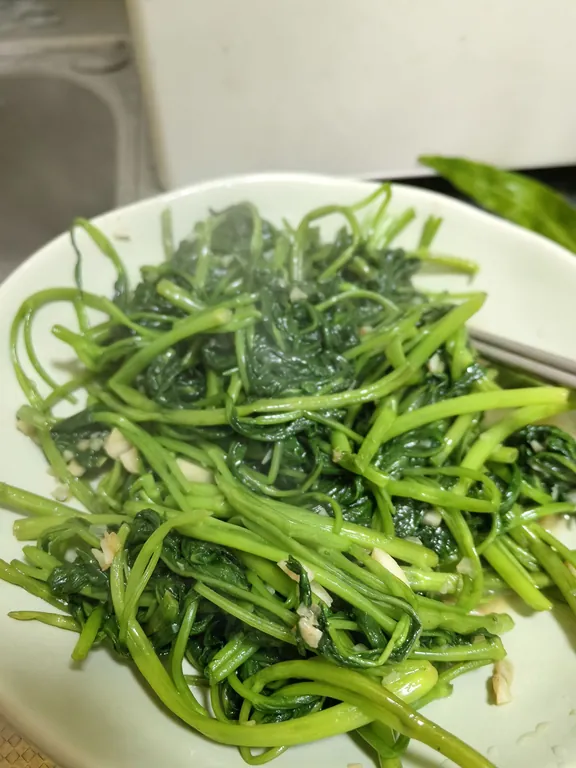
蒜蓉空心菜
HowToCook 菜谱贡献者 · 蒜蓉空心菜 · Unlicense
第 2 步 · 炒蒜下菜
粗梗切短或纵剖，趁蒜末刚出香时先炒梗；叶片最后翻入，软下来就检查梗是否熟透。
核对原页与实际步骤
主要资料：HowToCook 中文开源菜谱 · HowToCook 社区贡献者
下厨房 · Forever_良和 · 蒜蓉空心菜
作者将空心菜梗叶分开，先炒蒜和菜梗，再下叶片。
The Woks of Life · 见原文署名
用料 空心菜 250 克、蒜 半头、食用油 适量，原方 45 毫升可按锅具酌减、盐 约 2 克，酌量、糖 3 克（可省）、生抽 8 毫升（可省）
App 步骤 1. 备菜：掐去折不断的老梗，空心菜逐段洗净、充分沥水。菜梗和叶分开，粗梗切短些；蒜拍碎切末，调料先放手边。
用量：空心菜 250 克、蒜半头。
状态：去掉折不断的老梗，充分沥水，梗叶分放。
2. 炒蒜下菜：锅放油，小火下蒜末，刚有蒜香、颜色还浅就下菜梗，转中大火翻炒。梗稍变色后再下叶，分次翻到锅底，不把满锅菜压成一团。
用量：油按锅具酌量，先下蒜末、再放菜梗和叶。
火力：小火炒蒜，转中大火炒菜。
状态：刚有蒜香、颜色还浅时下梗，梗稍变色再下叶。
3. 炒熟调味：炒到叶子塌软、梗受热熟透且咬开不生硬，再放少许盐。想加生抽就先少放盐，糖可省；快速翻匀即装盘，别关火后留在热锅里焖。
用量：盐先少许；若用生抽就少放盐，糖可省。
状态：叶塌软，梗熟透且咬开不生硬，翻匀即盛盘。
葱煎豆腐
来源于下厨房 · 贺子楠_ · 葱煎豆腐 · 非商业转载说明
第 2 步 · 煎豆腐
豆腐沥干后单层摆好。用铲尖推一下底边，能轻松移动时再翻，可减少粘锅和碎裂。
核对原页与实际步骤
主要资料：HowToCook 中文开源菜谱 · HowToCook 社区贡献者
下厨房 · 贺子楠_ · 葱煎豆腐
原方将豆腐切厚块，小火煎黄后夹出，葱段炒香再与豆腐合拢。
The Woks of Life · Sarah
用料 老豆腐 1 块，适合煎制的硬豆腐、青椒 半个（可省）、葱 约三分之二根、食用油 约 1 汤匙起，薄薄铺满锅底；按锅具少量补、盐 约 3 克，酌量、水 约 10 毫升、鸡精 少许（可省）
App 步骤 1. 切配：老豆腐切约 5 毫米厚片，放漏篮沥水，再用厨房纸轻按表面，别捏碎。葱切碎，葱白葱绿分开；有青椒再去籽切小块。
用量：老豆腐 1 块、葱约三分之二根，青椒可省。
状态：豆腐约 5 毫米厚，轻按吸干表面水；葱白葱绿分开放。
2. 煎豆腐：不粘平底锅放约 1 汤匙油铺成薄膜，小火到中小火，豆腐单层放入。先别推，等边缘微黄、轻推能移动，再用宽铲托住翻面；两面金黄即可，不必煎到硬壳。
用量：油约 1 汤匙，锅底铺薄膜。
火力：小火到中小火。
状态：豆腐单层放；边缘微黄且能推得动时再翻，两面金黄即可。
3. 调味：有青椒就先拨出空间炒到变软，葱白一起炒香。盐先一小撮，用备好的水化开沿锅边加入，轻晃锅让豆腐裹汁、内部热透；汁将收少时撒葱绿，鸡精可省。
用量：盐先一小撮，溶于约 10 毫升水；葱白先放，葱绿最后撒。
状态：青椒若用先炒软；豆腐轻晃裹汁、内部热透，汁收少时撒葱绿。
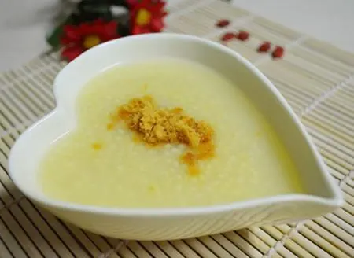
小米粥
来源于下厨房 · 80后男人的厨房 · 小米粥 · 非商业转载说明
第 3 步 · 慢熬
小灶按米粒软烂程度停火。泡米与否、锅的厚薄都会影响用时，锅底开始粘时降火并轻搅。
核对原页与实际步骤
主要资料：HowToCook 中文开源菜谱 · HowToCook 社区贡献者
下厨房 · 80后男人的厨房 · 小米粥
作者水开下小米，小火留缝慢煮，中途搅动让粥渐稠。
Omnivore's Cookbook · Maggie Zhu
用料 小米 100 克、水 约 2 升，普通锅用量
App 步骤 1. 轻淘小米：小米轻轻淘洗一次倒去浮灰，不必反复用力搓。按100克小米、约2升普通锅用水备好，选有足够余量的锅避免扑出。
用量：小米 100 克、普通锅用水约 2 升。
状态：轻轻淘洗去浮灰，锅要有足够余量。
2. 沸水下米：水沸腾后倒入小米，用勺从锅底推一圈防沉底。继续煮约6–10分钟，8分钟提醒只用于回来看锅；泡沫要上涌就立刻降火，不能离开不管。
用量：用备好的小米和水。
火力：水沸再下米；泡沫要上涌就降火。
状态：下米搅底防沉；先煮约 6–10 分钟，8 分钟计时只提醒回来查看。
3. 慢熬：转中小火，锅盖留缝，维持轻轻冒泡，慢煮约15–20分钟，其间不时搅底。米粒胀软、舀起不再硬砂感才好；未软就继续煮，水少补热水。关火后还会变稠，别急着收得太干。
用量：水少可补热水。
火力：中小火，留盖缝，保持轻轻冒泡。
状态：约 15–20 分钟起看米粒是否胀软、无硬砂感，期间不时搅底；关火还会变稠。

水煮玉米
OnionBulb · BoiledCornOnTheCob20211211.jpg · CC BY-SA 4.0
第 3 步 · 检查熟度
先确认是甜玉米还是糯玉米；夹出一穗稍凉，取中段一粒检查芯的软硬，按口感续煮。
核对原页与实际步骤
主要资料：HowToCook 中文开源菜谱 · HowToCook 社区贡献者
下厨房 · 0047_u137 · 水煮玉米
原方留少量内层苞叶，加水盖过玉米煮，依嫩老调整时间。
Natasha's Kitchen · Natasha Kravchuk
用料 玉米 1 根新鲜玉米、水 没过玉米约半指高、盐 少许，按口味（可省）、糖 少许（可省）
App 步骤 1. 处理玉米：剥去老皮和玉米须，可留少量干净嫩皮，冲洗干净。玉米要放得下锅，不必冒险砍很硬的玉米芯；过长可换大锅。
用量：新鲜玉米 1 根。
状态：去老皮、玉米须并冲净；锅太小可换大锅。
2. 煮玉米：加水没过玉米约半指高，烧开转小火加盖。普通或糯玉米约15–20分钟起检查；新鲜甜玉米更快，可提前查看。盐糖都是调味选择，先不加也清甜，不用浓盐水。
用量：水没过玉米约半指高；盐、糖可先不加。
火力：烧开后转小火加盖。
状态：普通或糯玉米约 15–20 分钟起检查，鲜甜玉米可提早看。
3. 检查熟度：夹出一根放稳，取粒稍放凉尝软度：熟透应无生硬粉芯，甜玉米爽脆、糯玉米柔韧，不要求同一种口感。未熟放回续煮，熟了沥水，晾到不烫口再吃。
用量：整根玉米取少量玉米粒检查。
状态：取一粒稍凉后尝，无生硬粉芯；未熟放回续煮。

清蒸鲈鱼
HowToCook 菜谱贡献者 · 清蒸鲈鱼 · Unlicense
第 3 步 · 淋汁
采用换新葱丝的做法。原方按约 500 克的鱼估时，小灶按最厚处检查熟度；淋热油可省。
核对原页与实际步骤
主要资料：HowToCook 中文开源菜谱 · HowToCook 社区贡献者
美食天下 · 小董妞@厨房 · 年年有鱼（余）——清蒸鲈鱼
葱姜分两份，第一份随鱼蒸，另一份在出锅调味时使用。
The Woks of Life · Bill
用料 鲈鱼 1 条，已去鳞去鳃去内脏、葱 3 根、姜 1 块、食用油 10 毫升（可省）、蒸鱼豉油 10–15 毫升、盐 少许，腌鱼用（可省）、水 蒸锅用水
App 步骤 1. 准备鱼：用已去鳞去鳃去内脏的鲈鱼，擦去水分，厚肉处划浅口。葱姜一半切段片用于蒸，一半切细丝收尾；生鱼用具与收尾葱姜分开。盐只是底味，蒸鱼豉油已咸，可不腌盐；要腌就在冷藏短腌。
用量：鲈鱼 1 条、葱 3 根、姜 1 块；葱姜各一半蒸鱼，一半留收尾。
状态：鱼擦干，厚处划浅口；留作收尾的葱姜与生鱼用具分开。
2. 蒸鱼：耐热浅盘垫葱姜，鱼腹放少量葱姜，不塞满。蒸锅水沸腾、蒸汽充足再放盘，盖好持续蒸，约10分钟起检查。食品温度计测背部最厚肉处、避开骨头，至少63°C；不足就继续蒸并复查。鱼肉变白、能分片只是观察提示，不能替代测温。锅水不够沿边补热水。
用量：用蒸鱼的那份葱姜垫盘及少量塞鱼腹；锅水不足沿边补热水。
火力：水沸、蒸汽充足再上锅，盖好持续蒸。
状态：约 10 分钟起查；温度计避骨测背部最厚处至少 63°C，不足就继续蒸。
3. 淋汁：熟后用隔热手套稳稳取盘，先夹掉蒸过的葱姜，再用勺舀走盘边多余的蒸汁；盘子平放，鱼身不容易滑动。少量淋蒸鱼豉油，先留一半免得咸；摆上干爽的新葱姜丝。可小火温热少量油后小心淋上，不烧到冒烟；怕溅油就直接省略，尝一口鱼再决定补不补豉油。
用量：蒸鱼豉油 10–15 毫升先留一半；取新的葱姜丝，少量油可省。
火力：若用油，小火温热，别烧到冒烟。
状态：取盘后夹掉蒸过的葱姜、舀出多余蒸汁，淋汁后尝味再决定是否补。
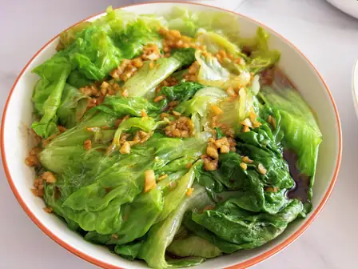
蚝油生菜
来源于下厨房 · 安妮拉就是我 · 快手蚝油生菜 · 非商业转载说明
第 2 步 · 焯熟
只借鉴分批与菜汁分做；本版用沸水焯熟，不照搬 80–90°C 关火短烫，也不把多种咸味料全加进去。
核对原页与实际步骤
主要资料：HowToCook 中文开源菜谱 · HowToCook 社区贡献者
下厨房 · 小美的美食 · 家常菜 蚝油生菜
生菜分批处理后沥水，蒜香酱汁另做再淋。
The Woks of Life · 见原文署名
用料 生菜 1 棵，约 200 克、蚝油 约 8 毫升、食用油 少许、水 焯菜用，另留 15 毫升调汁、蒜 2 瓣（可省）、生抽 少许（可省）
App 步骤 1. 洗生菜：生菜一片片掰开，洗净叶褶里的泥沙，粗硬根部切掉。沥水备用；有蒜切末，蚝油先与预留的约 1 汤匙水混匀，避免入锅干烧。
用量：生菜 1 棵（约 200 克）；蚝油约 8 毫升兑水 15 毫升，蒜可省。
状态：叶片逐片洗净，切掉粗硬根再沥水。
2. 焯熟：水烧开后加几滴油，生菜分批放入，轻压让叶梗都接触热水。焯到叶片塌软、厚梗熟而还能弯折，立即捞出充分沥水放干净盘，不让菜泡在焯水里。
用量：焯水加几滴油，生菜分批下。
火力：水烧开再下生菜。
状态：叶片塌软、厚梗熟而能弯折，立即捞出沥水。
3. 烧蚝油汁：小锅放少许油，小火炒蒜至有香味、不变褐；无蒜直接倒蚝油水。煮开后尝汁，通常不用再加生抽；太稠补一点水，浇在沥干的生菜上就吃。
用量：少许油、调好的蚝油水，太稠补一点水。
火力：小火炒香可选的蒜，再把蚝油汁煮开。
状态：蒜出香且未变褐时加汁；尝汁后再决定是否补生抽。
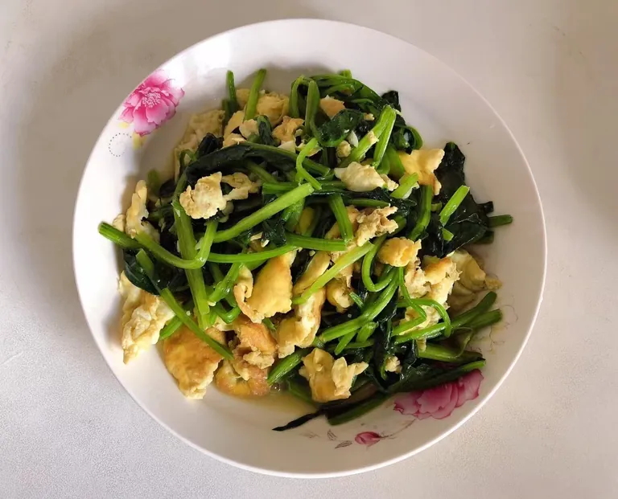
菠菜炒鸡蛋
HowToCook 菜谱贡献者 · 菠菜炒鸡蛋 · Unlicense
第 1 步 · 焯菠菜
焯好的菠菜先沥水切短。等蛋块已定形才合锅，可避免积水稀释蛋液。
核对原页与实际步骤
主要资料：HowToCook 中文开源菜谱 · HowToCook 社区贡献者
下厨房 · pepperandpineapple · 菠菜炒鸡蛋
原作者先焯菠菜，另炒蛋，再把菠菜放回锅合炒。
The Woks of Life · Judy
FDA · Safe Food Handling · U.S. Food and Drug Administration
用料 菠菜 350 克、鸡蛋 2 个、食用油 15 毫升，分次用、盐 少许、水 焯菜用
App 步骤 1. 焯菠菜：菠菜掰开洗净根部泥沙，切掉老根。沸水中先放梗再压入叶，焯到梗叶变软，捞出沥干，稍凉后轻挤余水、切短。鸡蛋加一小撮盐打散，另备干净盘。
用量：菠菜 350 克、鸡蛋 2 个、盐一小撮打入蛋液。
火力：沸水焯菠菜。
状态：梗先下、梗叶软后捞；稍凉轻挤水再切短。
2. 炒鸡蛋：锅放大部分油，中火加热到油流动顺畅不冒烟。倒蛋液，边缘凝固就往中间轻推，成柔软大块便盛到干净盘；不追求焦黄，稍后还要回锅。
用量：食用油 15 毫升的大部分，用于炒蛋。
火力：中火。
状态：油流动不冒烟；蛋边凝住后轻推，柔软大块先盛，稍后回锅。
3. 合炒：余油中火炒散菠菜，湿水多先翻炒散水，再放蛋块轻轻合匀。加热到鸡蛋中心完全凝固、没有湿生蛋液；尝过再少量补盐，锅真干才沿边补一小口水。
用量：余油炒菠菜；下蛋块，尝后少量补盐，太干才补一小口水。
火力：中火炒散菠菜。
状态：湿水多先翻炒散水；合炒至蛋块中心完全凝固、无湿生蛋液。

苦瓜炒鸡蛋
来源于下厨房 · 滑冰的鸡蛋黄- · 苦瓜炒鸡蛋🥚 · 非商业转载说明
第 1 步 · 处理苦瓜
本版选择焯水这一条路线，瓜片沥干再炒；不用把盐腌和焯水的用量叠加。
核对原页与实际步骤
主要资料：美食天下 · 莼菜虾仁
下厨房 · 滑冰的鸡蛋黄- · 苦瓜炒鸡蛋🥚
作者剔去苦瓜籽瓤，并列出盐腌冲洗或沸水处理两种做法。
The Woks of Life · 见原文署名
下厨房 · 苦瓜炒鸡蛋的做法
用料 苦瓜 约 300 克、鸡蛋 3 个、食用油 适量，分次用、盐 少许、水 焯菜用、葱 少许（可省）
App 步骤 1. 处理苦瓜：苦瓜纵切，刮去籽和白瓤，切薄片。沸水焯到颜色变亮、片能弯折，捞出沥干，减少苦味也更容易炒匀。鸡蛋加一小撮盐打散；有葱切碎，备干净盘。
用量：苦瓜约 300 克、鸡蛋 3 个、盐一小撮；葱可省。
火力：沸水焯苦瓜。
状态：苦瓜去籽、白瓤切薄，焯到颜色亮、片能弯再捞。
2. 先炒蛋：锅中放大部分油，中火加热不冒烟，倒蛋液，边缘凝固就轻推成块；刚成形仍柔软时盛出，别继续煎硬，生蛋碗不能当盛菜盘。
用量：用大部分油炒打匀的蛋液。
火力：中火。
状态：油未冒烟；蛋边凝固再推，成柔软块先盛出。
3. 合炒：锅留底油，有葱先小火炒香，再中火下苦瓜。炒到薄片熟透、轻压有韧性但不生硬，再回蛋块翻匀，鸡蛋完全凝固后尝味补盐。
用量：锅留底油，葱可省；合炒后尝味补盐。
火力：小火炒香葱，再中火炒苦瓜。
状态：苦瓜薄片熟透、轻压有韧性且不生硬；回锅鸡蛋完全凝固。
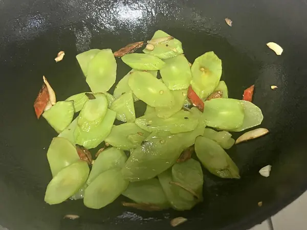
清炒莴笋
来源于下厨房 · Lark · 〖清炒莴笋〗｜超美味的家常菜做法 · 非商业转载说明
第 3 步 · 快炒
小灶先短腌莴笋后沥水，炒熟后再尝；已有底味时最后的盐只需少量。
核对原页与实际步骤
主要资料：美食天下 · 小岚私厨
下厨房 · Lark · 〖清炒莴笋〗｜超美味的家常菜做法
原方先炒香蒜末和椒，再下莴笋快炒，最后调味。
China Sichuan Food · Elaine
下厨房 · 清炒莴笋的做法
用料 莴笋 约 500 克、食用油 适量、盐 少许
App 步骤 1. 去皮切片：莴笋削掉外层硬皮和白色筋，直到露出均匀嫩绿的肉。洗净切厚薄相近的薄片，发现边缘还有硬筋就补削掉，不靠炒久把筋炒软。
用量：莴笋约 500 克。
状态：削净硬皮和白色筋，切成厚薄相近的薄片。
2. 少盐短腌：撒一小撮盐拌匀，先放约 5 分钟，看到出少量水、片稍软就轻轻挤去多余水；不需要挤到干瘪。这里只是预调味，不要一次加足整盘盐。
用量：盐一小撮。
状态：短腌约 5 分钟，片稍软、出少量水，轻轻挤去多余水。
3. 快炒：锅热放油，中大火下莴笋摊开翻炒，炒到颜色更透亮、最厚片熟透而仍脆。先尝一片再决定补不补盐，熟了立即盛出，别为等焦边一直炒。
用量：食用油适量；尝过再补盐。
火力：中大火快炒。
状态：颜色透亮，最厚片熟透还带脆，炒好立即盛出。
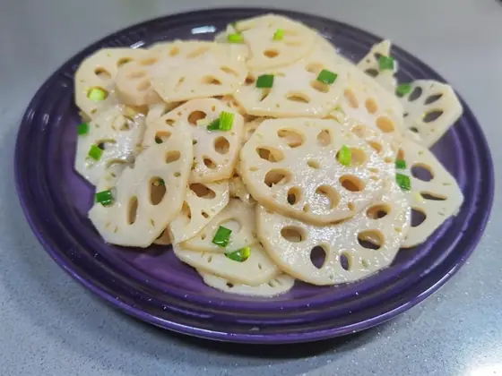
清炒藕片
来源于下厨房 · 不是厨子的煮夫 · 清炒藕片 · 非商业转载说明
第 1 步 · 切藕
本版省去另锅焯水，用锅里少量水焖熟；藕片先切成相近厚度，洗掉淀粉并沥干。
核对原页与实际步骤
主要资料：美食天下 · 覀覀：ナ0ナ
下厨房 · 不是厨子的煮夫 · 清炒藕片
作者把藕切片后淘洗表面淀粉，再焯水、翻炒。
China Sichuan Food · Elaine
下厨房 · 清炒藕片的做法
用料 莲藕 1 节、食用油 适量、盐 少许、水 少许、姜 少许（可省）、葱 少许（可省）
App 步骤 1. 切藕：莲藕去皮，冲净孔洞里的泥沙，切成厚薄相近的薄片，清水快速冲掉表面淀粉后沥干。先把水和盐放手边；有姜葱再切好。
用量：莲藕 1 节，备少许水和盐，姜葱可省。
状态：冲净孔里泥沙，薄片切匀，冲掉表面淀粉并沥水。
2. 翻炒：锅热放油，中火把姜炒出香味，没有姜直接下藕片。把粘连的片拨散，翻到各面均匀沾油，别只堆在锅中心；开始粘底就准备加水，不硬炒焦。
用量：食用油适量，姜可省。
火力：中火炒。
状态：把藕片拨散，翻到各面均匀沾油，粘底就准备补水。
3. 焖熟：沿锅边加一小口水，撒少许盐，盖锅中小火短焖。揭盖避开蒸汽，夹最厚片检查到热透、无生硬芯，仍可带脆感；不够熟再补少量水继续焖。有葱最后翻入。
用量：沿锅边加一小口水，撒少许盐；葱可省。
火力：盖锅中小火短焖。
状态：最厚片热透且无生硬芯；不足就再少量补水续焖。

清炒绿豆芽
来源于下厨房 · 张记小灶 · 脆嫩爆炒绿豆芽｜不出水不软烂 快手家常菜 · 非商业转载说明
第 2 步 · 炒熟
将锅底与上层豆芽翻换，让整锅充分受热；锅小就分批，不照搬原作者的快炒分钟数。
核对原页与实际步骤
主要资料：美食天下 · 花鱼儿
下厨房 · 张记小灶 · 脆嫩爆炒绿豆芽｜不出水不软烂 快手家常菜
原方先把豆芽沥干，炒香配料后才倒豆芽，下锅后持续翻动。
China Sichuan Food · Elaine
美食天下 · 清炒绿豆芽的做法
用料 绿豆芽 约 200 克、食用油 适量、盐 少许、葱 少许（可省）
App 步骤 1. 洗豆芽：挑去豆壳和坏芽，整包若有酸臭、黏滑就弃用。流水洗净后放漏篮沥水，不让豆芽泡水等下锅；有葱切段。生豆芽不试吃。
用量：绿豆芽约 200 克，葱可省。
状态：流水洗净沥水；有酸臭、黏滑的整包弃用。
2. 炒熟：热锅放油，中大火下豆芽，摊开并不断把底部翻到上面。量大分批炒，不只烫表面；持续加热到豆芽全部软下来、每处都滚烫，没有生硬豆腥。脆感可以留，但不能为了脆而半生出锅。
用量：油适量，量大分批翻。
火力：中大火翻炒。
状态：豆芽全部变软、每处滚烫、没有生硬豆腥。
3. 调味：确认全部熟透后放一小撮盐，葱有则放入翻匀，尝熟的豆芽再补盐。锅里自然出的少量汁不用刻意炒干，装到干净盘趁热吃。
用量：盐先一小撮，葱可省；尝后再补盐。
状态：豆芽全部熟透再调味，少量汁不用炒干。
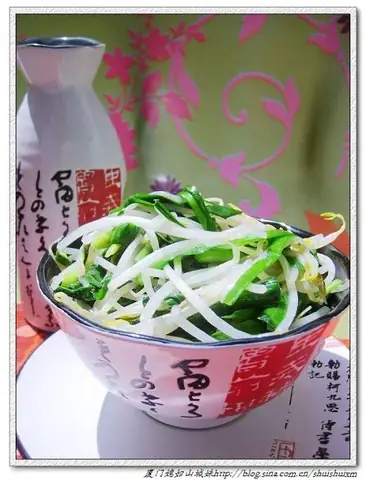
韭菜炒豆芽
来源于下厨房 · 厦门媳妇山城妹 · 韭菜炒豆芽 · 非商业转载说明
第 2 步 · 炒蔬菜
豆芽先下锅翻匀，充分受热后再放韭菜；最后一起炒熟，韭菜更容易保留香味。
核对原页与实际步骤
主要资料：美食天下 · 爱做饭的小媛媛
下厨房 · 厦门媳妇山城妹 · 韭菜炒豆芽
作者先把豆芽炒软再拌入韭菜，利用两种菜自身的水分。
China Sichuan Food · Elaine
下厨房 · 韭菜炒豆芽的做法
用料 韭菜 200 克、绿豆芽 100 克、食用油 适量、盐 少许、味精 少许（可省）
App 步骤 1. 备菜：韭菜掰开洗净根部泥沙，沥干切短段；豆芽另洗沥干，剔掉坏芽。豆芽有明显酸臭黏滑整份不用，不用尝生芽判断新鲜。
用量：韭菜 200 克、绿豆芽 100 克。
状态：韭菜沥干切短段，豆芽另洗沥干；有酸臭或黏滑就弃用。
2. 炒蔬菜：锅热放油，先下沥干的豆芽，中大火翻动，把底部和上层不断换位。等豆芽均匀受热、明显变软再放韭菜。锅小就分批，菜能在锅里翻开。
用量：油适量，先下豆芽；锅小就分批。
火力：中大火翻炒。
状态：豆芽均匀受热、明显变软再下韭菜。
3. 熟透调味：继续翻炒，豆芽要全部充分受热熟透，不能因韭菜熟得快就提前出锅。豆芽都软下来、无生硬豆腥后加一小撮盐，味精按喜好省略；翻匀立即盛盘。
用量：盐一小撮，味精可省。
状态：豆芽全部熟透、都软下来且无生硬豆腥再调味出锅。
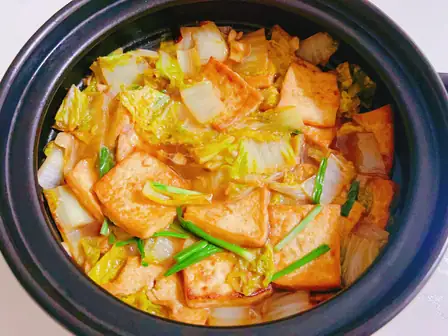
白菜炖豆腐
来源于下厨房 · 多乐妈妈 · 白菜炖豆腐 · 非商业转载说明
原作者用调味汁炖白菜豆腐，成品颜色较深，小灶做法较清淡。
第 3 步 · 再炖白菜
本版走清炖路线，豆腐先小火炖，白菜帮先于叶入锅。用勺背轻推，避免把豆腐翻散。
核对原页与实际步骤
主要资料：美食天下 · 敏zhu
下厨房 · 多乐妈妈 · 白菜炖豆腐
原方先煎豆腐，炒软白菜后加入豆腐和料汁同炖。
The Woks of Life · 见原文署名
下厨房 · 白菜炖豆腐的做法
用料 白菜 适量，按食量、老豆腐 1 块、盐 少许、水 没过豆腐的量、姜 1 片（可省）
App 步骤 1. 切配：白菜洗净，厚帮切窄片、叶切大块，分开放。老豆腐切一口大小的厚块，别切薄片易碎；有姜切一片即可，准备能容下豆腐且水不溢出的锅。
用量：老豆腐 1 块、白菜按食量；姜 1 片可省。
状态：豆腐切一口厚块，白菜帮切窄片，与叶分放。
2. 先炖豆腐：水烧开后轻放豆腐，有姜一起下。水量刚没过豆腐，转小火保持轻轻冒泡，先炖约 10 分钟；用勺背轻推防粘，不大力搅。若水减少太多补热水，别烧干。
用量：水刚没过豆腐；水少补热水。
火力：水开下豆腐，转小火保持轻轻冒泡。
状态：先炖约 10 分钟，勺背轻推防粘，留意别烧干。
3. 再炖白菜：先下白菜帮，略煮软后压入菜叶，参考再炖约 5 分钟。最厚菜帮能轻松咬断、豆腐中心热透才完成，不够软就继续煮；关火前尝汤少量加盐，盛时用勺托底。
用量：先下白菜帮再下菜叶；关火前尝汤，少量加盐。
状态：再炖约 5 分钟检查，最厚白菜帮容易咬断、豆腐中心热透才完成。
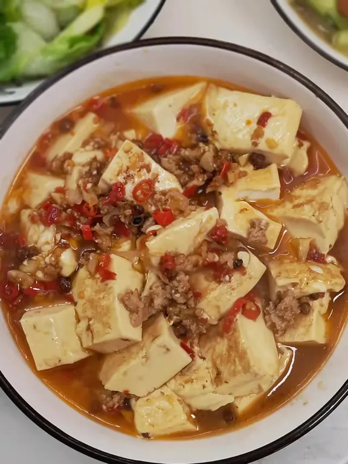
家常麻婆豆腐
HowToCook 菜谱贡献者 · 麻婆豆腐 · Unlicense
第 2 步 · 炒底料
借鉴酱料处理和轻推豆腐；不照搬麻辣香锅复合调料。本版老豆腐、可省肉末与淀粉，是家常简化版，不宣称正宗或完整复刻。
核对原页与实际步骤
主要资料：美食天下 · 斋厨房
下厨房 · 奚姥姥 · 麻婆豆腐
豆瓣酱先切细，肉末与调料炒香，豆腐少翻动，末段以水淀粉收稠。
The Woks of Life · Kaitlin
下厨房 · 家常麻婆豆腐的做法
用料 老豆腐 1 盒、辣豆瓣酱 适量，先少量、花椒粉 少许、食用油 适量、水 约半碗，按锅具调整、玉米淀粉 少许（可省）、牛肉末 少许（可省）
App 步骤 1. 处理豆腐：老豆腐切成一口块，别切得太碎。放入沸水轻煮约2分钟，捞出沥水，目的是先热透、少带水进锅，不是追求漂亮棱角。豆瓣酱若有大块豆瓣，先在干净砧板上切细，之后更容易炒匀。若用淀粉，少量加冷水调成能流动的白浆，先放旁边。
用量：老豆腐 1 盒；淀粉可省，若用就少量兑冷水。
火力：豆腐入沸水轻煮约 2 分钟。
状态：豆腐切一口块、先热透后沥水；豆瓣酱里的大块豆瓣先切细。
2. 炒底料：锅中放油，中火把可选牛肉末拨散炒熟，用食品温度计确认中心至少71°C；不用肉就从本步炒豆瓣酱开始。转小火下少量豆瓣酱，炒到油带红色、闻到酱香就加水，不炒成黑渣。半碗水先加大部分，煮开形成能围住豆腐的汤汁。
用量：少量辣豆瓣酱，约半碗水先加大部分；牛肉末可省。
火力：中火炒可选的牛肉末，转小火炒豆瓣。
状态：有肉用温度计确认中心至少 71°C；豆瓣炒至油红、出香就加水煮开。
3. 烧入味：豆腐入锅，用铲背轻推或晃锅，别来回捣。小火煮到豆腐里面烫热、豆香和酱香融合。淀粉水重新搅匀后一点点倒，边轻推边煮开，到薄汁能挂住豆腐就停；不用淀粉也可留汤。熟后尝味，豆瓣酱已咸通常不用盐，花椒粉少撒、想更麻再补。
用量：花椒粉少撒；勾芡可省，若用则搅匀后一点点倒。
火力：小火烧入味。
状态：豆腐里面烫热，芡汁煮开、薄薄挂住豆腐即可。

皮蛋豆腐
Tbatb · Tofu with Century Egg 01.jpg · CC BY-SA 4.0
第 1 步 · 准备豆腐
先按豆腐包装确认食用方式，需要加热的先煮透；沥水放凉后再摆盘淋汁。
核对原页与实际步骤
主要资料：HowToCook 中文开源菜谱 · HowToCook 社区贡献者
下厨房 · 斯佳丽 · 皮蛋豆腐
作者分别切豆腐和皮蛋，码在盘中，最后淋预先调好的汁。
Red House Spice · 见原文署名
用料 皮蛋 2 个、嫩豆腐 1 盒，适合凉拌的品种、生抽 约 15 毫升、醋 适量，按口味、香油 几滴（可省）、葱 少许（可省）、糖 少许（可省）
App 步骤 1. 准备豆腐：先看嫩豆腐包装是否可直接食用、是否需加热，再按包装指示开封取出。需要加热的按说明煮熟，不确定就先煮熟；不把“嫩”当成即食。沥去水分，轻轻放进干净盘，碎成块也不影响吃。
用量：嫩豆腐 1 盒。
状态：按包装判断能否即食，需加热或不确定就先煮熟，沥水后用干净盘。
2. 切皮蛋：皮蛋剥壳前清洁外壳，剥好后用干净刀切块，摆在豆腐周围；不用接触过生肉生蛋的刀板。有葱洗净沥水后切碎，暂时不撒以免反复翻拌。
用量：皮蛋 2 个；葱可省。
状态：外壳清洁后剥壳，用干净刀切块。
3. 调汁淋上：生抽先取原量的一半与醋混匀，尝汁后再决定增减；糖和香油按喜好加一点或省略。先淋一半在豆腐上，轻推匀，尝后再加剩余汁；有葱最后撒，做好尽快吃，不久放常温。
用量：生抽约 15 毫升先取一半，加醋调匀；先淋一半汁，尝后再加。
状态：豆腐轻推拌匀，做好尽快吃，勿久放常温。
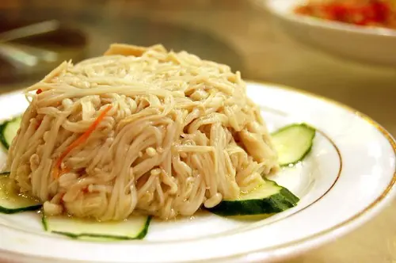
凉拌金针菇
ulterior epicure · Cold enoki mushroom salad · CC BY-NC-ND
第 2 步 · 煮熟
菇团拆成细束再下沸水，确保全部彻底加热。沥干再淋汁，不用原方的固定短焯时间判断熟度。
核对原页与实际步骤
主要资料：HowToCook 中文开源菜谱 · HowToCook 社区贡献者
下厨房 · NB轮回 · 凉拌金针菇
原作者先煮金针菇等配菜，捞出后才与凉拌汁拌合。
The Woks of Life · 见原文署名
香港食物安全中心 · 食物安全中心
用料 金针菇 150 克、生抽 适量，原方 15 毫升可酌减、醋 约 10 毫升、水 煮菇用、蒜 2 瓣（可省）、香油 几滴（可省）、辣椒油 少许（可省）
App 步骤 1. 处理菌菇：切掉金针菇硬根，拆成细小束，流水洗净，别留紧实大团。有蒜用干净刀板切末；备干净漏勺和拌菜碗，煮熟后不再接触装生菇的容器。
用量：金针菇 150 克；蒜 2 瓣可省。
状态：去硬根、拆成细小束，另备干净的熟食漏勺和碗。
2. 煮熟：足量水烧开再放菇，拨散让所有菌菇浸在沸水中。水重新沸腾后先按约 2 分钟提醒检查，遵守包装要求，继续煮到每束充分熟透；大团必须拆散，计时不代表安全，金针菇不能生食。
用量：足量水，让每束都能浸到。
火力：水烧开下菇。
状态：重新沸腾后约 2 分钟起检查，按包装继续煮到每束熟透。
3. 拌汁：用干净漏勺捞起，充分沥水，摊开略散热，不用生水冲凉。先拌少量生抽与醋，尝熟菇后再补；蒜、香油、辣椒油有且喜欢才加。拌好尽快吃，不放常温慢慢等凉。
用量：少量生抽和醋先拌，尝后再补；蒜、香油、辣椒油可省。
状态：用干净漏勺捞出、沥水散热，拌好尽快吃。
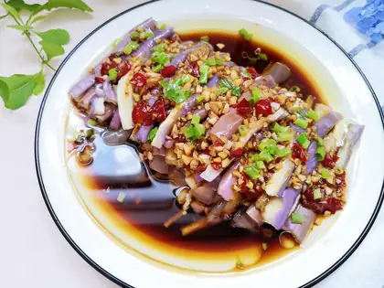
清蒸茄子
来源于下厨房 · 小米爱吃米 · 家常清蒸茄子 · 非商业转载说明
第 2 步 · 蒸软
茄块厚度尽量一致，用筷子戳最厚处；中心柔软后就能轻撕成条，调味汁分次拌。
核对原页与实际步骤
主要资料：美食天下 · 康康1818
下厨房 · 小米爱吃米 · 家常清蒸茄子
原方把茄子剖开，水开后入锅蒸，蒸软才撕条淋汁。
The Woks of Life · 见原文署名
下厨房 · 最简单好吃的家蒸常茄子，解馋又下饭的做法
用料 茄子 2 个、生抽 适量、食用油 少许、水 蒸锅用、蒜 少许（可省）、香菜 少许（可省）
App 步骤 1. 切茄子：茄子洗净去蒂，切成厚薄接近的大片，不用去皮；平铺耐热盘，别厚厚堆起。有蒜切末、香菜洗净沥水切碎，另备取盘夹或隔热手套。
用量：茄子 2 个；蒜、香菜可省。
状态：切成厚薄接近的大片，平铺耐热盘。
2. 蒸软：蒸锅加足水烧开，放稳盘子，盖好保持蒸汽不断。蒸到最厚处筷子能轻松穿透、内部没有硬白芯；只看外皮皱了不够。取盘避开蒸汽，倒去明显积水但留一点茄汁。
用量：蒸锅加足水。
火力：水烧开后上锅，保持蒸汽不断。
状态：筷子能穿透最厚处，内部无硬白芯；倒去明显积水。
3. 拌味：炒锅少油，小火炒蒜至刚出香味，没有蒜就直接放茄子。蒸熟茄子下锅后用铲子托着轻翻，生抽少量分次加，裹上味立即停火；香菜有且喜欢最后撒，不必炒成泥。
用量：少油、生抽少量分次加，蒜和香菜可省。
火力：小火炒蒜，茄子裹味后停火。
状态：蒜刚出香就下茄子，托着轻翻以免碎成泥。

茄子炖土豆
来源于下厨房 · 夏小冷 · 茄子炖土豆（东北详细版） · 非商业转载说明
第 3 步 · 炖软
本版保留块形。焖到筷子能轻易穿过最厚土豆块再收汁，用勺背轻推茄子。
核对原页与实际步骤
主要资料：HowToCook 中文开源菜谱 · HowToCook 社区贡献者
下厨房 · 夏小冷 · 茄子炖土豆（东北详细版）
原作者把茄子先炒软，放入土豆加水同炖，末段还会压成泥。
The Woks of Life · Judy
用料 茄子 1 个，约 150 克、土豆 1 个，约 150 克、食用油 约 13 毫升、生抽 约 15 毫升、水 接近没过食材、猪瘦肉 180 克（可省）、蒜 3 瓣（可省）、青椒 少许（可省）
App 步骤 1. 切块：土豆去皮，和茄子切成接近一口大的小块，土豆别留特别大块，茄子皮不必刨得干净。有肉切薄片、青椒切块、蒜拍碎；生肉单独切，处理后清洗手和刀板。没肉也能炖出一锅软香。
用量：茄子和土豆各 1 个、各约 150 克；猪瘦肉 180 克可省。
状态：土豆去皮，两样切成近似的一口块。
2. 翻炒：中火热油，有青椒先炒出香气，再下肉片拨开炒熟，此版用食品温度计确认厚肉中心至少71°C；没这两样直接下土豆。土豆先翻一翻，再下茄子拌匀，部分生抽沿食材淋入。茄子暂时吸油发干很常见，不要追着加一大勺油，准备加水炖。
用量：油约 13 毫升、生抽先取一部分；青椒和肉片可省。
火力：中火热油。
状态：若放肉片，用温度计确认厚处中心至少 71°C；茄子吸油发干就准备加水炖。
3. 炖软：加水到接近没过食材，煮开转小火盖好，让汤轻轻咕嘟。间或翻底，水少了但土豆还硬就补热水。到筷子能轻松穿过最大土豆块、茄子轻压就软再开盖。有蒜收尾放入煮出香气，尝熟汤再补少许生抽；留些稠汤拌饭，不必炖到全干。
用量：加水接近没过，土豆还硬而水少就补热水；尝后可再补少许生抽。
火力：煮开后盖锅转小火。
状态：筷子能轻松穿过最大土豆块，茄子轻压就软，可留稠汤。
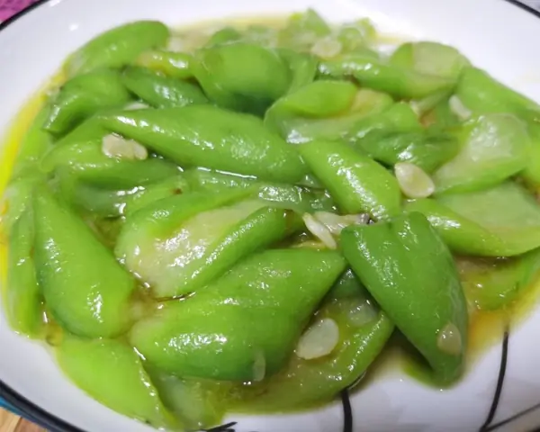
清炒丝瓜
来源于下厨房 · 向你扔了一坨放心肉 · 清炒丝瓜🥒 · 非商业转载说明
第 3 步 · 加水煮软
锅底出现瓜汁后先停加水，观察最厚块的中心是否柔软。菜汁多时开盖稍收再调味。
核对原页与实际步骤
主要资料：美食天下 · 斌joanliu
下厨房 · 向你扔了一坨放心肉 · 清炒丝瓜🥒
原方将丝瓜削皮切块，中火翻炒至自身出水，再按软度出锅。
China Sichuan Food · Elaine
香港食物安全中心 · 食物安全中心
下厨房 · 🍲清炒丝瓜/炒水瓜/枸杞丝瓜/上汤丝瓜（简单家常菜）的做法
用料 丝瓜 1–2 根、食用油 适量、盐 少许、水 少许热水
App 步骤 1. 削皮切块：丝瓜削去硬皮，洗净切大小接近的小块，临下锅再切可减少变色。丝瓜应是清甜味，若发现异常苦味就停止食用，整份弃掉；不生尝筛查，也不靠加热或调味去毒。
用量：丝瓜 1–2 根。
状态：去硬皮、临下锅切成近似小块；发现异常苦味就整份弃掉。
2. 翻炒：锅中油中火加热到能流动、不冒烟，下丝瓜翻动让各面沾油，参考炒约 3 分钟。看到边缘稍透、开始出水即可往下一步，不必把表面煎黄。
用量：食用油适量。
火力：中火翻炒，约 3 分钟作参考。
状态：油能流动、不冒烟；丝瓜边缘稍透、开始出水。
3. 加水煮软：沿锅边先加一小口热水，中小火煮约 4 分钟起检查。最厚块熟软、轻压能分开即可，水干而芯还硬就少量补水再煮；最后加一小撮盐翻匀，尝味发现异常苦味整份丢弃。
用量：先加一小口热水，水干芯硬再少量补；最后加盐一小撮。
火力：中小火煮，约 4 分钟起检查。
状态：最厚块熟软、轻压能分开；若有异常苦味整份弃掉。

丝瓜炒鸡蛋
来源于下厨房 · 咖喱咖喱耶 · 丝瓜炒鸡蛋（家常菜） · 非商业转载说明
第 3 步 · 合炒
小灶先让瓜条熟软，汤汁过多先略收，再放回蛋块轻拌，这样两者都能保持口感。
核对原页与实际步骤
主要资料：美食天下 · 芊芊美食记WQ
下厨房 · 咖喱咖喱耶 · 丝瓜炒鸡蛋（家常菜）
作者先煎蛋盛出，底油炒丝瓜，再加回鸡蛋一起完成加热。
China Sichuan Food · Elaine
香港食物安全中心 · 食物安全中心
美食天下 · 丝瓜炒鸡蛋的做法
用料 丝瓜 1 根、鸡蛋 3 个、食用油 适量，分次用、盐 少许、葱 少许（可省）、水 锅干时加 1–2 汤匙，按需少量补
App 步骤 1. 切配：丝瓜去硬皮洗净，切粗细接近的短条，鸡蛋打散加一小撮盐；有葱切好。备干净盘盛蛋。丝瓜若出现异常苦味，整份菜弃掉，不能靠蛋香、盐或加热掩盖。
用量：丝瓜 1 根、鸡蛋 3 个、盐一小撮打入蛋液，葱可省。
状态：丝瓜切成粗细接近的短条，若有异常苦味整份弃掉。
2. 先炒蛋：锅中放大部分油，中火加热不冒烟，倒蛋液，边缘凝固就往中间推成大块。蛋液完全凝固、仍柔软就盛到干净盘，不装回生蛋碗，也不继续煎到干硬。
用量：用大部分油炒打好的鸡蛋。
火力：中火，油不冒烟。
状态：蛋边凝固再往中间推，到完全凝固且仍柔软时盛出。
3. 合炒：锅留底油，中火炒丝瓜，边缘透亮后若锅干就补一小口水，煮到最厚条熟软。先让过多汁水稍收，再回锅鸡蛋轻翻热透，少量补盐；有葱最后撒，发现丝瓜异常苦味则整份丢弃。
用量：底油炒丝瓜；锅干补一小口水，回锅鸡蛋后少量补盐。
火力：中火炒丝瓜。
状态：瓜边透亮、最厚条熟软；回锅鸡蛋后翻热透，发现异常苦味整份弃掉。
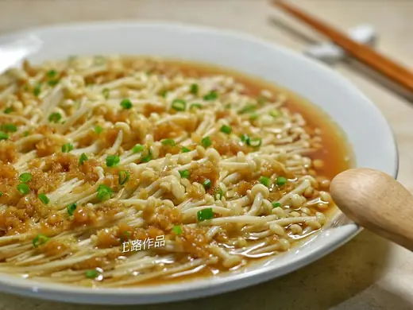
蒜蓉蒸金针菇
来源于下厨房 · E路拾缘 · 蒜蓉蒸金针菇 · 非商业转载说明
第 2 步 · 炒蒜蓉
蒜末闻到香味就离火，薄铺到拆散的菇束上；蒸到全熟后再用盘汁调味，避免蒜蓉发苦。
核对原页与实际步骤
主要资料：美食天下 · 鑫姐厨房
下厨房 · E路拾缘 · 蒜蓉蒸金针菇
原方沥干金针菇，利用锅中余温炒香蒜末，再把蒜蓉铺在菇上蒸。
Red House Spice · 见原文署名
香港食物安全中心 · 食物安全中心
下厨房 · 〖蒜蓉蒸金针菇的做法步骤图，怎么做好吃〗惊鸿一瞥
用料 金针菇 约 250 克、蒜 适量，切末、生抽 适量、食用油 少许、水 蒸锅用、小米辣 少许（可省）、葱 少许（可省）
App 步骤 1. 摆盘：金针菇切去硬根，洗净拆成细小束，平铺在稍深的耐热盘里，别堆成厚团。蒜切末；小米辣、葱有且喜欢再切。蒸锅水另备足，盘边要留取盘空间。
用量：金针菇约 250 克，蒜切末，小米辣和葱可省。
状态：去硬根、拆细束，平铺耐热盘；蒸锅另备足水。
2. 炒蒜蓉：小锅放少许油，小火下蒜末，慢慢翻到出香味、颜色仍浅就关小火，加入少量生抽拌匀。小米辣可同炒，不吃辣省略；蒜汁均匀铺在菇上，别只堆中心。
用量：少许油、少量生抽，蒜末，小米辣可省。
火力：小火炒蒜，出香后调小火拌生抽。
状态：蒜色仍浅、有香味；蒜汁均匀铺到菇上。
3. 蒸熟：蒸锅水开后放盘，保持蒸汽，先蒸约 10 分钟再检查。金针菇必须全部充分熟透，厚处拆开检查，未熟继续蒸，不用短时烫热代替。有葱最后撒；隔热取盘防汤汁和蒸汽烫伤，拌匀盘中熟汁，不需另泼热油。
用量：葱可省，出锅后拌盘里的熟汁。
火力：水开上锅，保持蒸汽。
状态：约 10 分钟起检查，拆开较厚处确认全熟，未熟继续蒸。
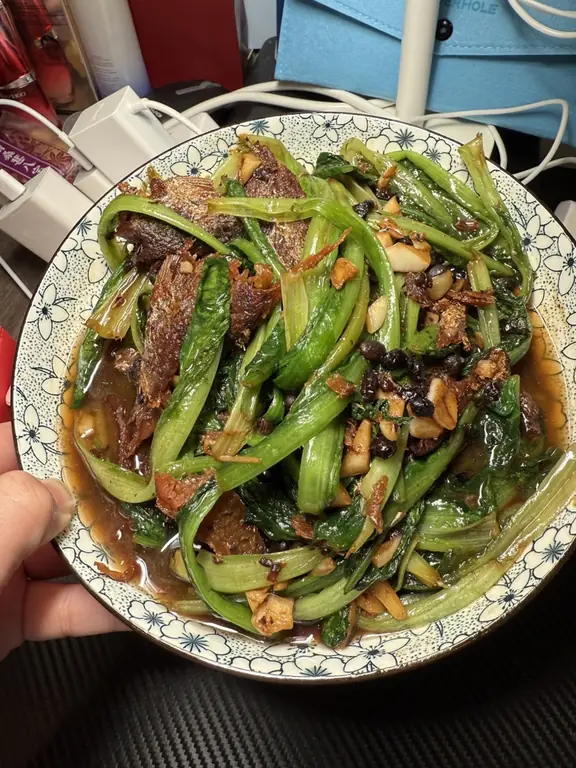
豆豉鲮鱼油麦菜
HowToCook 菜谱贡献者 · 豆豉鲮鱼油麦菜 · Unlicense
第 1 步 · 备菜去刺
先检查大块鱼肉的硬骨，豆豉分次放；本版菜叶先炒熟再合罐头，最后尝味决定是否加盐。
核对原页与实际步骤
主要资料：HowToCook 中文开源菜谱 · HowToCook 社区贡献者
下厨房 · -孙小碗- · 豆豉鲮鱼油麦菜
作者先挑掉鲮鱼中间的骨头、掰成小块，并留用罐头里的豆豉。
The Woks of Life · Judy
用料 油麦菜 500 克、豆豉鲮鱼罐头 1 罐，约 250 克、食用油 少许、蒜 4 瓣（可省）、生抽 少许（可省）
App 步骤 1. 备菜去刺：油麦菜逐片洗净沥干，切好夹的段，粗梗和叶分开放。罐头先看包装正常、未胀罐漏液，打开后检查并拣出明显硬刺，鱼分小块；不要默认罐头鱼完全无刺。有蒜切末。
用量：油麦菜 500 克、豆豉鲮鱼 1 罐（约 250 克）；蒜可省。
状态：菜梗叶分放；包装确认正常，鱼分小块并拣出明显硬刺。
2. 炒油麦菜：锅中少油中火热到能流动，粗梗先下，稍软再下叶，分批翻到叶片塌软、梗可咬断。盛出后倒去明显菜水，不用挤得干巴巴；这一步先把菜炒熟，鱼不用陪着久煮。
用量：少油炒油麦菜；粗梗先下，多了分批。
火力：中火。
状态：油能流动时下梗，稍软再下叶；叶软、梗能咬断就盛出。
3. 炒罐头合锅：原锅用一点罐头油，小火炒香蒜（没有略过）、豆豉和鱼块，轻翻免得鱼碎。油麦菜回锅拌匀热透，先尝再决定要不要生抽；罐头通常已够咸。汁薄薄润菜就出锅，不另倒整罐油。
用量：一点罐头油、有蒜才放；尝味够咸就省生抽。
火力：小火轻炒鱼和豆豉。
状态：菜回锅拌到全热透，汁薄薄润菜就出锅。

土豆片炒肉
HowToCook 菜谱贡献者 · 瘦肉土豆片 · Unlicense
第 1 步 · 切配
小灶把土豆先短焯再合肉，切片尽量一样厚，能弯而不碎时捞出，避免与肉片久炒。
核对原页与实际步骤
主要资料：HowToCook 中文开源菜谱 · HowToCook 社区贡献者
下厨房 · 飞翔吧咏儿 · 土豆片炒肉
作者把土豆切成薄片并冲洗表面淀粉，再与薄肉片炒熟。
The Woks of Life · Bill
用料 土豆 200 克、猪瘦肉 200 克、食用油 适量、生抽 约 10 毫升、盐 少许、水 焯土豆用、玉米淀粉 5 克（可省）、蒜苗 2 根（可省）
App 步骤 1. 切配：土豆去皮切约2毫米薄片，厚薄接近就行；蒜苗有则切段。肉切薄片，拌部分生抽，有淀粉薄薄裹一层，冷藏腌约10分钟。先切菜再用生肉专用刀板切肉，最后洗净手和用具。
用量：土豆 200 克、猪瘦肉 200 克；肉用部分生抽，淀粉薄裹可省。
状态：土豆切约 2 毫米薄片；肉切薄片，短腌约 10 分钟时冷藏。
2. 焯土豆：水沸后下土豆片，轻推避免黏在一起。片子变得稍柔软、能弯但夹起还完整时捞出沥干，别按固定分钟煮成土豆泥。厚片多煮一会儿，中心硬白的片子还需加热。
用量：全部土豆片 200 克，足量沸水。
火力：水沸下土豆片。
状态：焯到稍软、能弯但夹起完整；中心硬白的还要加热。
3. 炒熟合锅：中火热油，肉片摊开拨散炒熟，用食品温度计确认厚处中心至少71°C，不只看颜色。有蒜苗先加梗再加叶，炒出香气后放土豆轻翻。土豆彻底熟软、无硬芯时尝味，再少量补生抽或盐；已腌过肉，不要把剩余调料一股脑倒完。
用量：适量油；尝味后少量补生抽或盐，蒜苗可省。
火力：中火热油。
状态：温度计测肉厚处中心至少 71°C；放回土豆后炒到熟软、无硬芯。

黄瓜炒肉
来源于下厨房 · athe · 黄瓜炒肉 · 非商业转载说明
第 3 步 · 炒黄瓜
本版直接用鲜瓜片，先沥干表面水。肉片确认熟透再加瓜片，只需炒到瓜边略软即可盛出。
核对原页与实际步骤
主要资料：HowToCook 中文开源菜谱 · HowToCook 社区贡献者
下厨房 · athe · 黄瓜炒肉
原方黄瓜盐腌后挤水，肉先炒出锅，快炒黄瓜后让肉回锅。
The Woks of Life · Bill
用料 黄瓜 1 根、猪瘦肉 约 100 克、食用油 适量、生抽 少许、盐 少许、蒜 2 瓣（可省）、小米辣 1 根（可省）
App 步骤 1. 切配腌肉：先洗黄瓜，去两头切薄片，不必削掉大段可食部分。蒜、辣椒有再切。另用生肉刀板把猪肉切薄片，拌少量生抽和油，冷藏腌约10分钟。洗净手和肉用具，黄瓜不需要提前重盐腌。
用量：黄瓜 1 根、猪瘦肉约 100 克；肉拌少量生抽和油。
状态：黄瓜和肉分别切薄片；肉短腌约 10 分钟时冷藏。
2. 炒肉：中火热油，蒜辣椒有则炒到闻香，下肉片摊开拨散。别把带生肉汁的碗当熟盘；用食品温度计检查，此版保守以较厚肉片中心71°C确认熟透，变色只表示可以开始检查。锅里肉多就分批。
用量：油适量，蒜和小米辣可省；肉多则分批。
火力：中火热油。
状态：肉片摊开炒，温度计确认较厚肉片中心达到本菜采用的 71°C。
3. 炒黄瓜：肉熟后下黄瓜，翻到每片沾上肉汁、边缘稍软但中间仍脆爽即可；别让黄瓜陪肉煮很久。尝一片熟肉与黄瓜，再决定是否补一小撮盐。黄瓜出一点汁正常，够味就出锅，不用炒到干巴巴。
用量：下切好的黄瓜；尝后决定是否补盐一小撮。
状态：黄瓜边缘微软、中间仍脆，沾上肉汁就够。
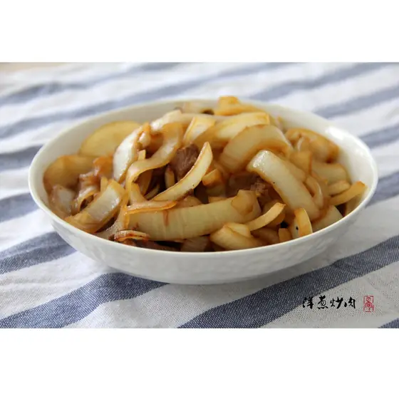
洋葱炒肉片
来源于下厨房 · 晏。 · 洋葱炒肉（甜面酱版） · 非商业转载说明
作者用甜面酱炒洋葱和猪肉，颜色较深。小灶用生抽调味。
第 3 步 · 炒洋葱合锅
本版按洋葱的软度决定合锅时机，肉片已熟只需回温；甜面酱不是本版必需调料。
核对原页与实际步骤
主要资料：HowToCook 中文开源菜谱 · HowToCook 社区贡献者
下厨房 · 狗尾巴草 · 洋葱小炒肉
原方先炒肉片盛出，洋葱丝变软、边缘透亮时再加肉回锅。
The Woks of Life · Kaitlin
用料 洋葱 1 个、猪瘦肉 250 克、食用油 15 毫升、生抽 适量，先少量、蒜 3 瓣（可省）、黑胡椒粉 少许（可省）、番茄酱 少许（可省）、水 少许，锅干或需焖熟时沿锅边少量补
App 步骤 1. 切片：洋葱切成相近宽度的片，顺手拆散；薄一点更易炒甜。猪肉另用生肉刀板切薄片，蒜有则拍碎。切完肉洗净手和用具，备干净盘盛熟肉，生抽先倒少量到小碟方便控制。
用量：洋葱 1 个、猪瘦肉 250 克；生抽先倒少量到小碟。
状态：洋葱切成近似宽度的片并拆散，肉另切薄片。
2. 先炒肉：中火热部分油，肉片铺开再拨散，有蒜在肉表面定形后加入，炒到闻香。肉熟后先盛出，较厚肉片用食品温度计确认中心至少71°C；不要只看表面变色，也不必煎到干焦。
用量：先用部分油，留余油炒洋葱；蒜可省。
火力：中火热油。
状态：肉表面定形后可加蒜；较厚肉片中心至少 71°C 才盛出。
3. 炒洋葱合锅：原锅用余油炒洋葱，到片子柔软、边缘半透明且闻到甜香，再少量淋生抽。想更甜软就中小火多翻一会儿，不用强求焦边。放回熟肉拌热，黑胡椒、番茄酱有且喜欢再少加；尝后调整，酱能润住洋葱就关火。
用量：用余油炒洋葱，生抽先少量；黑胡椒、番茄酱可省。
火力：想让洋葱更甜软时，用中小火多翻一会儿。
状态：洋葱软、边缘半透明且有甜香，回锅熟肉拌热，酱润住洋葱就停。

青椒炒肉
来源于下厨房 · 酸奶口味 · 青椒炒肉 · 非商业转载说明
第 2 步 · 先煸青椒
本版先煸青椒再炒肉，青椒表面起皱就盛出；留意辣椒厚度，按实际状态调整火候。
核对原页与实际步骤
主要资料：HowToCook 中文开源菜谱 · HowToCook 社区贡献者
下厨房 · 酸奶口味 · 青椒炒肉
原作者把五花肉与青椒分别煎煸，看到椒皮有焦斑后回锅调味。
The Woks of Life · Sarah
用料 青椒 3 个、猪瘦肉 200 克、食用油 适量、生抽 少许、盐 少许、蒜 少许（可省）、姜 少许（可省）、蚝油 少许（可省）、水 少许，锅干或需焖熟时沿锅边少量补
App 步骤 1. 切配腌肉：青椒去蒂去籽切好夹的块，不能吃辣可用甜椒。有姜蒜切好。肉用另一套刀板切薄片，拌少量生抽和盐，有蚝油可少加，冷藏腌约10分钟；之后洗净手和生肉用具。
用量：青椒 3 个、猪瘦肉 200 克；肉拌少量生抽和盐，蚝油可省。
状态：青椒去蒂籽切块，肉另切薄片，短腌约 10 分钟时冷藏。
2. 先煸青椒：青椒下锅中小火翻动、轻压，让它变软并出现少量浅褐斑就先盛出。用不粘锅时抹一层薄油，不空锅干烧，也不追求满皮焦黑。厚肉椒需要久一点，薄皮椒更快。
用量：不粘锅抹一层薄油。
火力：中小火煸椒。
状态：变软、有少量浅褐斑就先盛出，别煎到焦黑。
3. 炒肉合锅：原锅加适量油，有姜蒜就中火炒香，没有直接下肉片；肉片摊开拨散炒熟，较厚处用食品温度计确认中心至少71°C。青椒回锅翻匀到全熟、没有硬生芯，尝味后才补盐。已有生抽或蚝油通常不必再加盐，肉熟后别为了更深颜色久炒。
用量：适量油，姜蒜可省；尝味后才决定补盐。
火力：中火炒香可选的姜蒜，再下肉片。
状态：温度计测较厚肉片中心至少 71°C；青椒回锅熟透、无硬生芯。

香菇蒸鸡
来源于下厨房 · 番茄无心 · 广东传统家常菜:香菇蒸鸡 · 非商业转载说明
香菇与鸡肉蒸熟后的装盘参考，原作者另加了红枣等配料。
第 2 步 · 铺盘蒸
本版用鲜香菇与去骨鸡腿，不沿用冲洗生鸡或固定 15–20 分钟即可熟的假设；蒸后测几块最大鸡肉中心，均到 74°C 才取出。
核对原页与实际步骤
主要资料：美食天下 · fangqao
下厨房 · EllieKongSG · 广式家常菜香菇蒸鸡，鲜嫩又方便百吃不厌
宽浅盘单层平铺，避免鸡块重叠，开水上锅。
Made With Lau · Daddy Lau / Randy Lau
下厨房 · 广东传统家常菜:香菇蒸鸡的做法
用料 鸡腿肉 约 300 克，去骨切小块、鲜香菇 适量、生抽 适量、食用油 少许、水 蒸锅用、姜 少许（可省）、蒜 少许（可省）、玉米淀粉 少许（可省）
App 步骤 1. 切配腌制：鲜香菇洗净去硬蒂切块，姜蒜有则切好。另用生肉刀板把去骨鸡腿肉切成厚薄接近的小块，拌少量生抽和油，有姜蒜一起拌入，淀粉有则薄裹、不拌成浆。盖好冷藏腌约30分钟，不放台面等。洗净手与生肉用具。
用量：去骨鸡腿肉约 300 克、鲜香菇适量；肉拌少量生抽和油。
状态：肉切近似厚薄，淀粉若用则薄裹；盖好冷藏腌约 30 分钟。
2. 铺盘蒸：鸡肉和香菇在耐热浅盘单层摊开，鸡块不重叠，不堆成小山；中间略薄，香菇别整层压住鸡肉。蒸锅水开且蒸汽足后入盘，盖好持续蒸，先设15分钟提醒。盘厚、肉块大需更久；查看水位，补水沿锅边加热水，别淋进鸡盘。
用量：鸡肉和香菇均单层摊开；锅水少时沿边补热水。
火力：水开、蒸汽足时上锅，盖好持续蒸。
状态：鸡块不重叠，香菇不盖住整层鸡肉；约 15 分钟起检查。
3. 检查熟度：开盖避开蒸汽，用食品温度计测几块最大鸡肉的中心，均达到74°C才取出。没有达到就盖回继续蒸并复查，白色外表和清汁不能保证熟。用隔热工具取盘，把香菇鸡肉与盘汁拌匀，尝熟汁后才决定补不补生抽。
用量：尝过熟汁，再决定是否补生抽。
状态：温度计测几块最大鸡肉，中心均达 74°C 才取出，未达就续蒸复查。

肉饼炖蛋
来源于下厨房 · 绯喵喵 · 肉饼炖蛋 · 非商业转载说明
第 2 步 · 铺成薄饼
肉饼铺成均匀薄层，压窝时把四周的厚肉摊开；出锅前测最厚肉心并确认鸡蛋全熟。
核对原页与实际步骤
主要资料：HowToCook 中文开源菜谱 · HowToCook 社区贡献者
下厨房 · 绯喵喵 · 肉饼炖蛋
作者把拌好的肉末铺平，在中间压出浅窝打蛋，再入蒸锅。
Made With Lau · Daddy Lau / Randy Lau
用料 猪肉末 300 克、鸡蛋 2 个、生抽 约 20 毫升、水 蒸锅用、料酒 少许（可省）、白胡椒粉 少许（可省）、香油 少许（可省）
App 步骤 1. 拌肉末：肉末放碗里，拌入一个鸡蛋和部分生抽，拌到没有干肉团、略有黏性即可，不要猛搅成很紧的胶。料酒、白胡椒和香油有且喜欢再少量加。不尝生肉馅；暂时不蒸就盖好冷藏，处理后洗净手和用具。
用量：猪肉末 300 克、鸡蛋 1 个、部分生抽；另 1 个蛋留作下一步。
状态：拌到没有干肉团、略有黏性；不试尝生馅。
2. 铺成薄饼：用宽浅耐热盘把肉馅铺成厚薄均匀的薄饼，约一厘米上下即可，不堆厚。中间压一个浅窝，打入另一个蛋，别把肉挤成四周很厚的墙；饼面不平也不影响吃。
用量：肉馅铺盘，中间打入剩下 1 个鸡蛋。
状态：肉饼宽浅、约 1 厘米厚，中间浅窝，边缘也别堆厚。
3. 蒸熟：蒸锅水沸腾再放盘，盖好保持蒸汽，约15分钟开始检查；水少沿边补热水。食品温度计测肉饼最厚处和中心至少71°C，顶部鸡蛋蛋白蛋黄都凝固才取出。未到就继续蒸并复查，不靠颜色或时间保证。隔热取盘，把少量盘汁淋回肉饼，尝后再补生抽。
用量：锅水少时沿边补热水；出锅后用少量盘汁淋回肉饼。
火力：水沸上锅，盖好保持蒸汽。
状态：约 15 分钟起查，温度计测肉饼最厚处和中心至少 71°C，顶部蛋白蛋黄都凝固。

荷兰豆炒腊肠
HowToCook 菜谱贡献者 · 荷兰豆炒腊肠 · Unlicense
第 3 步 · 炒匀
确认腊肠包装要求，生制品先按说明做熟。荷兰豆全熟后再合锅，先尝腊肠咸味再决定是否补盐。
核对原页与实际步骤
主要资料：HowToCook 中文开源菜谱 · HowToCook 社区贡献者
下厨房 · pepperandpineapple · 荷兰豆炒腊肠
原方先焯荷兰豆，腊肠斜切薄片炒香，再把荷兰豆倒回锅中。
The Woks of Life · Judy
用料 荷兰豆 适量，约 50 个、腊肠 100 克、食用油 少许、水 焯菜及按腊肠包装蒸煮用，菜偏硬时少量补、生抽 少许（可省）
App 步骤 1. 备料：荷兰豆去蒂，顺手撕掉两边粗筋，洗净。先读腊肠包装：需煮熟的必须按说明先蒸煮至熟，用食品温度计检查，猪肉腊肠中心至少71°C，禽肉腊肠74°C；不能凭风干或红色当熟食。熟后用干净刀板切薄片。
用量：荷兰豆约 50 个、腊肠 100 克。
状态：豆去蒂筋；需加热的腊肠按包装煮熟，测猪肉腊肠中心至少 71°C、禽肉腊肠 74°C，熟后切薄片。
2. 焯荷兰豆：水沸后放荷兰豆，轻推使均匀受热。煮到颜色明亮、豆荚能弯、能咬断且无生硬芯再沥干，不只看变绿就捞。不需泡冷水等很久，马上进入下一步，免得带水入油锅溅。
用量：摘净的荷兰豆约 50 个，足量沸水。
火力：水沸再下荷兰豆。
状态：豆荚颜色亮、能弯、咬断无生硬芯才捞，充分沥水。
3. 炒匀：锅中薄油，小火炒熟腊肠，到香气出来、边缘略卷就下荷兰豆。中火翻到整锅热透，腊肠的油香均匀裹在豆荚上就停。先尝豆荚和腊肠一起的味道，缺味才少量加生抽，通常不再放盐。
用量：薄油，生抽尝后少量添或省略。
火力：小火炒熟腊肠，合菜后中火翻。
状态：腊肠出香、边略卷再加豆；炒到整锅热透、油香裹住豆荚。

冬瓜虾皮汤
来源于下厨房 · 透明小果冻 · 冬瓜虾皮汤 · 非商业转载说明
第 2 步 · 炒后加水
汤底保留虾皮香味，略炒出香就加水；瓜片厚薄均匀，待中心也透亮再尝汤调盐。
核对原页与实际步骤
主要资料：美食天下 · 米拉Miira
下厨房 · 透明小果冻 · 冬瓜虾皮汤
作者将冬瓜去皮去瓤切薄，先炒香虾皮，再加水煮瓜片。
The Woks of Life · Judy
下厨房 · 冬瓜虾皮汤的做法
用料 冬瓜 适量，约 1 小块、虾皮 少许、水 约 1–2 碗、食用油 少许、盐 少许，尝后再加、姜 少许（可省）、葱 少许（可省）
App 步骤 1. 处理冬瓜：冬瓜去硬皮和籽瓤，切成厚薄相近的小片或小块。虾皮快速冲洗后沥干；姜葱有才切，虾皮有盐，暂时少备盐。
用量：冬瓜约 1 小块、虾皮少许，姜葱可省。
状态：冬瓜去皮去籽，切成厚薄接近的薄块；虾皮冲洗沥干。
2. 炒后加水：锅中少油中小火炒虾皮，有姜一同放，闻到香味就放冬瓜翻匀，不把虾皮煎焦。加约1–2碗水煮开，水量够喝就行。
用量：少油炒虾皮，再加水约 1–2 碗。
火力：中小火炒香后加水煮开。
状态：虾皮出香就下冬瓜，别把虾皮煎焦。
3. 煮软：转小火煮到冬瓜由白色转半透明，夹起最厚一块能轻松咬断但未散。先尝汤，再补一小撮盐；葱有再撒。冬瓜够软就关火，别一直煮到碎。
用量：尝汤后补一小撮盐，葱可省。
火力：转小火煮，冬瓜够软就关火。
状态：冬瓜半透明，最厚块容易咬断但未散。
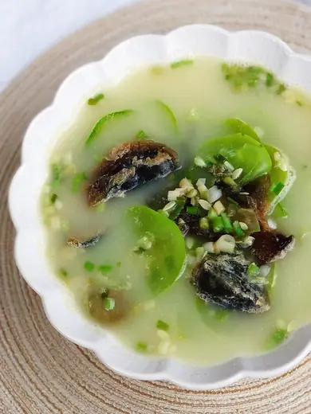
黄瓜皮蛋汤
来源于下厨房 · 胃你够了 · 黄瓜皮蛋汤 · 非商业转载说明
第 2 步 · 煎香煮汤
皮蛋底边定形再轻轻翻。热水沿锅边慢慢倒，等汤底有味再下瓜片，保留清爽口感。
核对原页与实际步骤
主要资料：HowToCook 中文开源菜谱 · HowToCook 社区贡献者
下厨房 · sissith · 黄瓜皮蛋汤
原方将皮蛋切瓣小火略煎，添热水煮汤，黄瓜在后段加入。
Kikkoman · Yuko Ihara
下厨房 · 黄瓜皮蛋汤的做法
用料 黄瓜 1 根、皮蛋 2 个、食用油 10 毫升、盐 少许、水 约 500 毫升、蒜 2 瓣（可省）、葱 少许（可省）
App 步骤 1. 切片切块：黄瓜洗净切薄片，皮蛋去壳切小块，蛋黄黏刀时擦净刀面再切。有葱蒜才准备；皮蛋用完整、在保质期内的，不凭冲洗补救变质。
用量：黄瓜 1 根、皮蛋 2 个，葱蒜可省。
状态：黄瓜切薄片，皮蛋去壳切小块；黏刀时擦净刀面再切。
2. 煎香煮汤：锅中油中小火加热，下皮蛋让表面略定形再翻，有蒜一起短煎出香，蒜不要煎黑。沿锅边慢慢加约500毫升水，避开蒸汽，煮开。
用量：油 10 毫升、水约 500 毫升，蒜可省。
火力：中小火煎，再加水煮开。
状态：皮蛋表面略定形再翻，蒜炒香别煎黑；沿锅边慢加水。
3. 加黄瓜：放黄瓜片小滚到中心也热透、片变柔软但仍清爽，少量盐调味，尝后再补。有葱最后撒。汤不变奶白也没关系，不需要加大油量。
用量：下黄瓜片，盐少量、尝后再补，葱可省。
火力：保持小滚。
状态：黄瓜中心也热透，片变柔软但仍清爽。
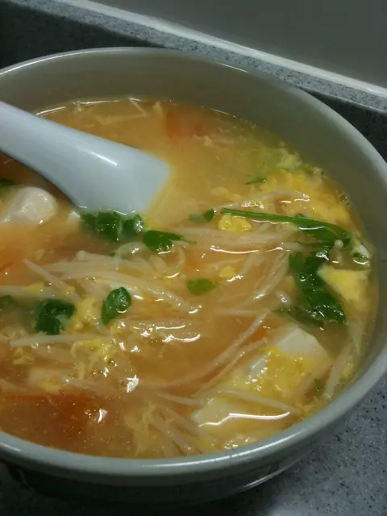
金针菇清汤
webmasterHCS · enoki-egg-drop-soup · CC BY-SA
金针菇蛋花清汤实拍，参考加蛋版本。作者撒了少量葱花。
第 2 步 · 煮熟菌菇
本版去掉番茄底，将拆散的菇束与清水同煮，确保每束都浸在汤里。全锅持续受热、菇束彻底熟透后调味。
核对原页与实际步骤
主要资料：HowToCook 中文开源菜谱 · HowToCook 社区贡献者
下厨房 · 心灵手巧常 · 🔥低脂低卡好喝到爆炸的番茄金针菇汤
参考番茄金针菇汤里煮菇的次序：先让汤滚，再放去根的金针菇煮软。
Just One Cookbook · Namiko Hirasawa Chen
用料 金针菇 约 200–250 克、水 没过菌菇，按汤量调整、盐 少许、鸡蛋 1 个（可省）、香油 几滴（可省）
App 步骤 1. 处理金针菇：金针菇切掉紧实根部，拆成小撮洗净，再切成容易入口的小段，不留一大团。准备足够没过菇的水；生菇用具洗净，不拿生菇作最后装饰。
用量：金针菇约 200–250 克，水要够没过菇。
状态：去硬根、拆小撮洗净后切短段。
2. 煮熟菌菇：菇和水入锅煮开，拨松让每一撮都浸在汤中。重新沸腾后约3分钟起检查，持续加热至全熟；时间只是提醒，不能用刚倒入的热汤烫一下代替煮。
用量：金针菇和备好的水同煮。
火力：煮开后保持加热。
状态：拨松让每撮浸汤；再次沸腾后约 3 分钟起检查，煮到全熟。
3. 调味：有鸡蛋就先打散，汤小滚时淋入，等蛋花成形再轻推，煮到完全凝固；没有可跳过。盐先少放，尝后调整，香油只需几滴，不把清汤变成油汤。
用量：鸡蛋 1 个可省；盐先少放，香油可省、若用只需几滴。
火力：淋蛋时保持小滚。
状态：蛋花定形后轻推，煮到完全凝固；盐尝后再补。
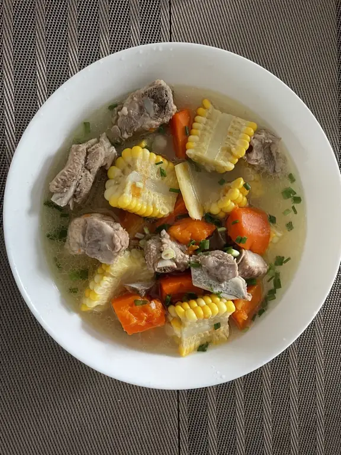
玉米排骨汤
HowToCook 菜谱贡献者 · 玉米排骨汤 · Unlicense
第 2 步 · 慢炖
本版把玉米和焯过的排骨一同炖，汤面持续冒小泡。排骨软烂、玉米芯附近的籽粒煮透再调味。
核对原页与实际步骤
主要资料：HowToCook 中文开源菜谱 · HowToCook 社区贡献者
下厨房 · 云卷云姝 · 排骨玉米汤
作者排骨冷水下锅焯水、撇沫，换水炖排骨，中途再放鲜玉米。
The Woks of Life · Judy
用料 排骨 约 500 克，切小块、玉米 1 根、水 炖汤约 1 升，另备焯水、盐 少许、姜 几片（可省）、胡萝卜 1 根（可省）
App 步骤 1. 焯排骨：用店家切好的小块排骨，冷水入锅煮开，撇去浮沫后捞到干净碗；焯水不是煮熟。玉米切段，有胡萝卜再切块，有姜可同焯；处理生肉后洗手和刀板。
用量：排骨约 500 克、玉米 1 根；姜和胡萝卜可省。
状态：排骨冷水下锅，煮开撇沫后捞出，焯水后仍需炖熟；玉米切段。
2. 慢炖：排骨玉米放汤锅，加约1升热水煮开后转小火，只保持小泡连续冒出。先炖约20分钟，盖子留适当缝，期间检查水量，快露出食材时补热水，不让烧干。
用量：约 1 升热水；汤即将露出食材时补热水。
火力：煮开转小火，盖子留缝。
状态：小泡持续冒出，先炖约 20 分钟，留意水量。
3. 炖至软烂：有胡萝卜此时加入，再炖约40分钟后检查。用干净筷子试排骨肉能否轻松插入，连骨厚处仍韧就继续炖；安全熟透与软烂不同，温度计测肉最厚处至少63°C并保持至少3分钟，别碰骨。少量盐最后加，尝后决定是否补。
用量：胡萝卜有才加；盐最后少量添，尝后再补。
状态：再炖约 40 分钟检查软度；温度计避骨测最厚肉处至少 63°C，保持至少 3 分钟，肉仍韧就续炖。
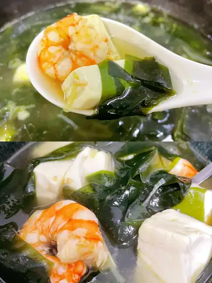
海带豆腐汤
来源于下厨房 · 大栾栾 · 海带豆腐汤 · 非商业转载说明
原作者的海带豆腐汤另加虾仁等配料；这里参考海带与豆腐的大小和汤色。
第 3 步 · 煮豆腐
小灶省去虾仁。试一片厚海带是否已软；再把豆腐轻轻滑入汤里，保持微滚让中心热透。
核对原页与实际步骤
主要资料：美食天下 · 卤蛋厨房
下厨房 · 大栾栾 · 海带豆腐汤
原作者把泡发海带切段，水开后先入海带，再放内酯豆腐。
Kikkoman · Yuko Ihara
美食天下 · 海带豆腐汤的做法
用料 海带 已按包装泡发或处理的 1 小把、嫩豆腐 1 块、食用油 少许、盐 少许、水 适量、姜 少许（可省）、葱 少许（可省）
App 步骤 1. 切配：确认海带是已泡发或按包装处理好的，盐渍海带按说明脱盐，干海带不能直接当即食海带用。洗净切小片，豆腐切块，有姜葱再切。
用量：泡发或按包装处理好的海带 1 小把，嫩豆腐 1 块；姜葱可省。
状态：盐渍海带按包装脱盐；海带洗净切小片，豆腐切块。
2. 炒海带：少油中火，有姜先炒香，再放沥水海带略翻。加水到所需汤量并煮开；海带很厚就先单独多煮一会儿，再进行下一步。
用量：少油，水加到想喝的汤量；姜可省。
火力：中火炒海带，加水煮开。
状态：姜若用先炒香；厚海带先多煮一会儿。
3. 煮豆腐：豆腐沿碗边滑入，轻推而不猛翻，约10分钟起检查：海带能咬断、豆腐中心热透。厚海带按包装延长，豆腐已经热可先盛出。最后尝汤再少量加盐，有葱再撒。
用量：嫩豆腐 1 块切好轻滑入锅；尝后少量加盐，葱可省。
状态：约 10 分钟起检查，海带能咬断、豆腐中心热透；厚海带按包装延长。

昂刺鱼豆腐汤
HowToCook 菜谱贡献者 · 昂刺鱼豆腐汤 · Unlicense
第 2 步 · 煎后煮汤
鱼表面擦干、下锅摊稳，底面能推动再翻。加汤后减少翻动，到点检查厚处鱼肉，别只看汤色。
核对原页与实际步骤
主要资料：HowToCook 中文开源菜谱 · HowToCook 社区贡献者
下厨房 · 西柚 · 昂刺鱼炖豆腐
作者让店家处理昂刺鱼，先小火将鱼的两面略煎，再和豆腐加水同炖。
The Woks of Life · Judy
用料 昂刺鱼 1 条，已去鳃去内脏、嫩豆腐 100 克、食用油 适量、盐 少许、水 约 1 升热水、姜 少许（可省）、白胡椒粉 少许（可省）
App 步骤 1. 处理鱼豆腐：请店家去鳃去内脏，回家检查腹内血污并处理干净，用厨房纸擦干鱼身，留意硬刺。豆腐切块，姜有再切；生鱼与熟食刀板分开，处理后洗净。
用量：去鳃去内脏的昂刺鱼 1 条、嫩豆腐 100 克；姜可省。
状态：鱼腹清净，鱼身擦干，留意硬刺；豆腐切块。
2. 煎后煮汤：锅中放油中火加热，鱼轻放入后先别推动，表面定形能松动再翻面，有姜一起煎香。沿边慢慢加约1升热水，避开溅油，保持沸腾约10分钟，留意水量；不用把不粘锅空烧冒烟。
用量：适量油、约 1 升热水，沿锅边慢慢加。
火力：中火煎鱼，加水后保持沸腾约 10 分钟。
状态：鱼表面定形、能松动才翻面；加水时避开溅油。
3. 加豆腐煮熟：下豆腐转中火再煮约5分钟起检查，轻推汤不铲碎鱼。食品温度计测鱼最厚肉处至少63°C、不碰骨；肉应不透明且可分离，未到温度继续煮。盐和胡椒少量调，吃时仍需挑刺。
用量：下切好的嫩豆腐；盐、可选的白胡椒少量。
火力：加豆腐后转中火，约 5 分钟起检查。
状态：温度计避骨测鱼最厚处至少 63°C，未到就续煮；鱼肉不透明、可分离。
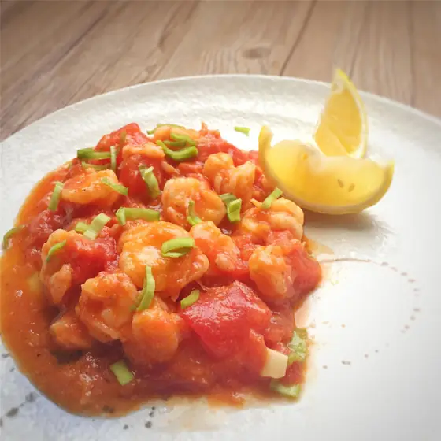
番茄炒虾仁
来源于下厨房 · 糯米小桃子酱 · 番茄虾仁 · 非商业转载说明
第 3 步 · 炒番茄合锅
把时间留给番茄。虾仁已炒熟后先等在干净盘里，汤汁能挂住锅铲时再回锅裹汁。
核对原页与实际步骤
主要资料：美食天下 · 金娃美食
下厨房 · 糯米小桃子酱 · 番茄虾仁
作者先炒虾盛起，再把番茄丁边压边炒出汁，最后让虾回锅。
The Woks of Life · Bill
下厨房 · 低脂高蛋白 番茄🍅炒虾仁🍤的做法
用料 番茄 1 个、虾仁 适量，约 200 克、食用油 适量、盐 少许、水 少许、玉米淀粉 少许（可省）、蒜 少许（可省）
App 步骤 1. 准备：虾仁冷藏解冻，去虾线后吸干表面水，拌一小撮盐；有淀粉薄薄裹住就好，不留干粉疙瘩。番茄切小丁，蒜有再切。生虾用具与盛熟虾的盘分开，处理后洗手。
用量：虾仁约 200 克、番茄 1 个；盐一小撮，淀粉薄裹可省。
状态：虾冷藏解冻、去虾线后擦干；番茄切小丁。
2. 炒虾：中火热油，虾仁单层铺开，底面变色再翻。炒到中心肉质珠白不透明、紧实，大虾用食品温度计测中心63°C后先盛到干净盘。虾熟就停，不等它缩成很紧的小圈。
用量：适量油，虾仁单层铺开。
火力：中火热油。
状态：底面变色才翻；中心珠白不透明、紧实，大虾测中心 63°C 后盛出。
3. 炒番茄合锅：原锅少油，小火炒香可选蒜末，再中火炒番茄，加一小撮盐帮助出汁。到丁块塌软、铲子轻压能出红汁，偏干补一两汤匙水；汁太稀先煮浓。熟虾回锅拌匀热透，尝味后补盐，汁润着虾即可，不让虾长时间陪番茄收汁。
用量：少油、盐一小撮；偏干补一两汤匙水；虾回锅后尝味再补盐。
火力：小火炒香可选的蒜，转中火炒番茄。
状态：番茄塌软、轻压出红汁；汁稀先收，再放熟虾拌热，汁润住虾即可。

蒜蓉粉丝蒸娃娃菜
来源于下厨房 · 玥月superman · 蒜蓉粉丝蒸娃娃菜 · 非商业转载说明
第 2 步 · 摆盘
本版把厚菜帮切薄，粉丝铺松后淋入少量料汁和水；蒸好同时检查菜帮和盘底粉丝的软硬。
核对原页与实际步骤
主要资料：美食天下 · RLing
下厨房 · 玥月superman · 蒜蓉粉丝蒸娃娃菜
原方把粉丝泡开，娃娃菜切瓣，摆盘后浇蒜蓉调汁一起蒸。
Red House Spice · Wei Guo
下厨房 · 蒜蓉粉丝蒸娃娃菜的做法
用料 娃娃菜 适量，约 1 棵、绿豆粉丝 1 小把、蒜 适量、食用油 少许、生抽 适量、水 泡粉丝和蒸锅用
App 步骤 1. 泡粉丝：粉丝按包装方法泡到能轻松弯折，剪短后松散铺在稍深耐热盘底。娃娃菜逐叶洗净，菜帮切窄些、叶切短段；蒜切末，另备蒸锅水，不把泡粉丝水当蒸锅必需用量。
用量：娃娃菜约 1 棵、绿豆粉丝 1 小把、蒜适量；蒸锅水另备。
状态：粉丝按包装泡到能弯折，剪短松铺；菜帮切窄、叶切短。
2. 摆盘：菜帮和叶薄薄铺在粉丝上，不压成厚实一堆。撒蒜末，淋少许油，生抽先淋少量；若粉丝已沥得很干，沿盘边加一两汤匙清水帮助受热，别让整盘漂在水里。
用量：蒜末、少许油、生抽先少量；粉丝太干才沿边加一两汤匙清水。
状态：菜帮和叶薄薄铺上，别压成厚团，也别让整盘漂在水里。
3. 蒸熟：水开后稳放盘子，保持蒸汽蒸约 10 分钟起检查。夹起盘底粉丝看有无硬芯、菜帮是否能轻松咬断；未熟继续蒸，盘底干则补少量热水。隔热取盘，先把粉丝与盘汁拌匀，尝过再补生抽。
用量：盘底干时补少量热水；出锅拌好先尝，再补生抽。
火力：水开后上锅，持续出蒸汽。
状态：约 10 分钟起查，盘底粉丝无硬芯、菜帮能咬断；未熟就续蒸。
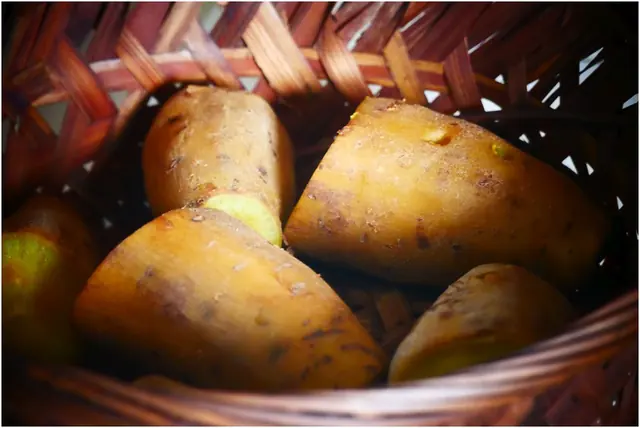
清蒸红薯
GeorgeTan#5 · Simple breakfast - steamed sweet potatoes · CC CC0
第 2 步 · 蒸红薯
小灶使用普通蒸锅，水面低于蒸架。选大小接近的红薯，最厚处也能轻松穿透时才出锅。
核对原页与实际步骤
主要资料：美食天下 · 花式炒咸菜
下厨房 · 桃之灰灰 · 蒸红薯（红薯最营养的吃法——电高压锅版本）
原作者洗净红薯后，放在蒸架上，水加在蒸架下方，用电高压锅蒸。
The Woks of Life · Judy
下厨房 · 蒸红薯的做法
用料 红薯 1–2 个中小个、水 蒸锅足量用水
App 步骤 1. 洗红薯：挑没有霉烂的中小红薯，刷净泥土，尽量选粗细接近的，放蒸屉留些空隙。厚大红薯可以切成相近的大块；蒸架放稳，食物不泡在水里。
用量：中小红薯 1–2 个。
状态：选无霉烂、粗细接近的红薯；厚大红薯切成相近大块，蒸屉留缝。
2. 蒸红薯：蒸锅加足量水但不碰到红薯，水开后盖盖中火保持稳定蒸汽。设30分钟提醒检查，不是熟透保证；期间水不足需避开蒸汽补热水，不能干烧。
用量：蒸锅加足水，别碰到红薯；不足补热水。
火力：水开后盖盖，中火保持稳定蒸汽。
状态：约 30 分钟检查，留意锅水别烧干。
3. 检查软度：开盖朝远离脸的方向，用筷子从最厚处扎入，直到中心也轻松穿透才好。仍有硬阻力继续蒸、间隔检查；小块先熟可先取。用隔热工具取出，掰开稍放凉再吃。
用量：检查已蒸的 1–2 个红薯，从最厚处下筷。
状态：筷子能轻松穿透最厚块中心才熟，仍硬继续蒸；隔热取出。

香菇鸡肉焖饭
来源于下厨房 · 日食记 · 〖香菇鸡肉焖饭〗 · 非商业转载说明
第 2 步 · 炒香配料
炒香鸡块后加入本版的香菇和可选蔬菜；鸡肉上色后还要继续随饭煮，开盖时检查鸡肉中心。
核对原页与实际步骤
主要资料：美食天下 · 桃子所
下厨房 · 日食记 · 〖香菇鸡肉焖饭〗
原方将去骨鸡腿先和洋葱煸炒，加香菇、蔬菜和米，再交给电饭煲焖熟。
The Woks of Life · Judy
美食天下 · 香菇鸡肉焖饭的做法
用料 大米 1 电饭锅量杯、鸡腿肉 约 200 克，切小丁、鲜香菇 适量，切丁、食用油 少许、生抽 适量、水 按电饭锅对应米量刻度、姜 少许（可省）、胡萝卜 少许（可省）
App 步骤 1. 准备主料：先确认电饭锅说明书允许带肉焖饭。用本机1量杯米淘洗，按对应米量刻度加水；不要把汤碗当米杯。鸡腿肉切大小接近的小丁，香菇切丁，胡萝卜姜有再切，生鸡肉刀板单独清洗。
用量：大米 1 个本机量杯，水加到对应刻度；鸡腿肉约 200 克，鲜香菇适量。
状态：按说明确认电饭锅支持带肉焖饭；鸡肉、香菇切成大小接近的小丁。
2. 炒香配料：少油中火，有姜先炒香，鸡丁和香菇下锅拨散，有胡萝卜丁也一起下锅，炒到鸡肉外层变色、香菇变软出香。生抽先少量放；带少量汁铺在米上，不再随意加一碗水，也不把配料压实搅到底。外层变色不代表鸡心已熟。
用量：少油、生抽先少量；配料带少量汁铺在米上，按内胆刻度用水。
火力：中火炒配料。
状态：鸡肉外层变色、香菇软香时铺到米上，鸡肉此时未必熟透。
3. 煮饭检查：立即按本机指定程序开煮，不用含生肉的常温预约。程序结束检查米饭无硬芯、用食品温度计确认较大鸡丁中心至少74°C；未到温度须继续有效加热，不能只放保温等。确认熟透再翻松拌匀，尝后酌量补生抽。
用量：整锅米饭（1 量杯米、约 200 克鸡丁和备好的香菇）。
火力：立即用本机指定的程序开煮，避免含生肉时常温预约。
状态：米饭无硬芯，温度计确认较大鸡丁中心至少 74°C；未达则继续有效加热。

土豆焖饭
来源于下厨房 · 此处是空城 · 土豆焖饭（电饭锅版） · 非商业转载说明
第 2 步 · 煎炒土豆
土豆只需煎出香味，随后与米一起焖熟。锅内水按电饭煲刻度，起锅前检查土豆中心。
核对原页与实际步骤
主要资料：美食天下 · 花桑卓玛
下厨房 · 此处是空城 · 土豆焖饭（电饭锅版）
原作者将土豆切成小块并沥干，先在炒锅将边角煎黄，再与生米同煮。
The Woks of Life · Judy
下厨房 · 土豆焖饭（洋芋孔饭）家常超简单版（亦可解决掉上一顿的剩饭）的做法
用料 大米 1 电饭锅量杯、土豆 1 个、食用油 少许、盐 少许、水 按电饭锅对应米量刻度、生抽 1 茶匙（可省）、葱 少许（可省）、姜 少许（可省）
App 步骤 1. 准备米和土豆：用本机1量杯米淘洗，内胆放平，按对应米量刻度加水。土豆用不发绿、不大量发芽的，去皮切大小相近的小丁；葱姜有再准备。
用量：大米 1 个本机量杯，水加到对应刻度；土豆 1 个。
状态：土豆无发绿或大量发芽，去皮切成近似大小的小丁。
2. 煎炒土豆：少油中火炒土豆，有葱姜可先炒香。炒到表面出现几处浅金黄色即可，不要求每一面都上色；盐先少量加，生抽喜欢再放，避免焦黑。
用量：少油、盐先少量；生抽可省。
火力：中火炒土豆，葱姜有则先炒香。
状态：表面有几处浅金黄即可，别炒黑。
3. 焖饭：土豆铺在米上，不压实，启动本机适用煮饭程序。结束后检查米粒无硬芯、最厚土豆丁能轻松压开，再翻松拌匀尝味。未熟需继续有效加热，不把跳保温当作熟度结论。
用量：把备好的土豆铺在米上。
火力：用本机适用的煮饭程序。
状态：米粒无硬芯、最厚土豆丁轻松压开；未熟继续有效加热。

南瓜粥
来源于下厨房 · 丽丽娟子的美食 · 小美版养生小米南瓜粥 · 非商业转载说明
原图用小米煮南瓜；本版以大米为主，小米可选，粥粒会稍大。
第 1 步 · 准备谷物
本版用普通锅，南瓜厚薄一致更易软。根据粥的稠度和瓜块的软度停火，不套用压力锅时间。
核对原页与实际步骤
主要资料：美食天下 · 金娃美食
下厨房 · 心灵做菜 · 南瓜粥（原味）
原方南瓜先切小块，再和洗净的米放进压力锅，利用南瓜本身的甜味。
The Woks of Life · Judy
美食天下 · 南瓜粥的做法
用料 南瓜 适量，去瓤去皮切丁、大米 适量，按食量、水 足量，按所需稀稠度调整、小米 少许（可省）、红枣 少许，去核（可省）
App 步骤 1. 准备谷物：大米淘洗，南瓜去皮去瓤切相近小丁；小米和去核红枣有且喜欢再备。按人数取米，普通锅加足量水并留沸腾空间，宁可稀些后收，别把锅装满。
用量：大米按食量，南瓜适量；水要足，锅里留沸腾空间。
状态：南瓜去皮去瓤切相近小丁；小米和去核红枣可省。
2. 煮开下南瓜：米与水一同烧开，有小米红枣可同煮，用勺从底部推开米粒。沸腾后放南瓜，重新煮开；泡沫上涌及时降火，不盖死锅盖任它扑。
用量：大米和水同锅；小米、红枣若用也同煮，沸腾后才放南瓜。
火力：加南瓜后重新煮开；泡沫上涌就降火。
状态：搅锅底防沉底，留意溢锅。
3. 慢煮：转小火约30分钟起检查，锅盖留缝，不时搅到底防粘。米粒软烂无硬芯、南瓜用勺能压散才好，未到就续煮；太稠逐次补热水，南瓜可以留块也可以轻压融进粥里。
用量：太稠就逐次补热水。
火力：小火，锅盖留缝，不时搅底。
状态：约 30 分钟起查，米软烂无硬芯，南瓜能用勺压散。
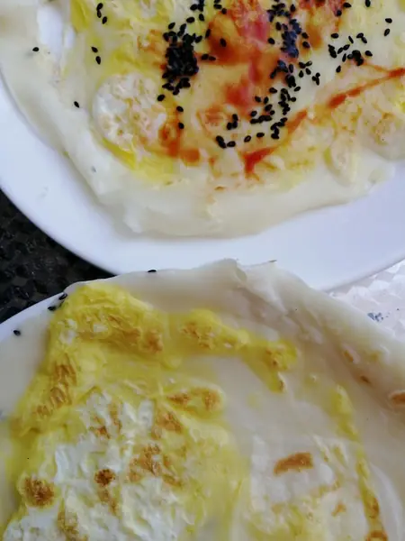
鸡蛋面糊饼
来源于下厨房 · 长点肉吧 · 鸡蛋面糊饼 · 非商业转载说明
第 2 步 · 摊薄饼
小灶将蛋拌入面糊，用平底锅薄摊。面糊一次少舀，边缘能揭起、表面基本定形再翻。
核对原页与实际步骤
主要资料：美食天下 · 果妈美食坊
下厨房 · 长点肉吧 · 鸡蛋面糊饼
作者在电饼铛上刷薄油，舀入一勺面糊，刮平定形后再淋蛋。
Shuangy's Kitchensink · Shuang Shuang Liang
美食天下 · 鸡蛋面糊饼的做法
用料 面粉 150 克、鸡蛋 1 个、水 逐次加入，调成可流动面糊、食用油 少许，刷锅、盐 少许、葱 少许（可省）
App 步骤 1. 调面糊：面粉、鸡蛋和一小撮盐拌好，水分次加到提起勺子能连续流下、落下很快铺平；有小面疙瘩先压散，有葱可切细拌入。盖好静置约20分钟，之后再搅匀；不要尝生面糊。
用量：面粉 150 克、鸡蛋 1 个、盐一小撮；水分次加，葱可省。
状态：面糊从勺子连续流下、落下能铺平；压散疙瘩，盖好静置约 20 分钟。
2. 摊薄饼：平底锅薄刷油，中小火倒一小勺面糊，转锅或用勺背摊成薄层。边缘定形、表面由湿亮变暗、铲子能伸入底部时再翻；第一张小一点更好掌握。
用量：锅薄刷油，每张先用一小勺面糊。
火力：中小火。
状态：饼边定形、表面从湿亮变暗、能插进铲子才翻。
3. 煎熟：另一面继续小火煎，切开最厚处看里面不再黏湿、没有生面糊，鸡蛋也完全凝固，用食品温度计确认中心至少71°C更可靠。熟饼放干净盘，余糊每次搅匀后分批做；锅越来越热就调低火。
用量：余糊每次搅匀，分批煎。
火力：另一面小火煎；锅越来越热就调低。
状态：最厚处无黏湿生糊、蛋完全凝固；用温度计确认中心至少 71°C 更可靠。

懒人水煎饺
avlxyz · 煎饺 Fried dumplings - Shanghai Noodle AUD7.50 for 15.jpg · CC BY-SA 2.0
第 2 步 · 加水焖熟
先核对包装适用做法，按大小调整水和焖的时间。确认馅熟透后再开盖煎脆，底部颜色只说明上色。
核对原页与实际步骤
主要资料：HowToCook 中文开源菜谱 · HowToCook 社区贡献者
下厨房 · 3N的小披风 · 平底锅煎速冻饺子
作者把速冻饺子放入平底锅，先煎、加水盖焖，待水干再煎底。
The Woks of Life · The Woks of Life 编辑团队
用料 速冻饺子 约 10–15 个，按食量、食用油 10–15 毫升、水 约至饺子高度一半，参考包装、葱 少许（可省）、熟芝麻 少许（可省）
App 步骤 1. 摆饺子：先读速冻饺子包装的加热方式、是否需解冻与时间，优先按说明。平底锅薄抹油，饺子单层留缝摆开，别堆叠；锅盖放手边，不先把油烧到冒烟。
用量：速冻饺子约 10–15 个，油 10–15 毫升薄抹锅底。
状态：优先看包装加热说明，饺子单层留缝摆开。
2. 加水焖熟：按包装加水，通常约到饺子一半高，盖锅煮约8–10分钟起检查，10分钟提醒不是熟透保证。水不够时降火沿边小心补热水。用食品温度计测较大饺子馅心：猪牛肉末至少71°C，含鸡禽肉至少74°C；未达温继续盖锅加热。
用量：按包装加水，通常约到饺子半高；缺水先降火，沿边补热水。
状态：盖煮约 8–10 分钟起查；较大饺子馅心用温度计测猪牛肉末至少 71°C、禽肉至少 74°C，未达温继续盖煮。
3. 煎脆底：确认馅熟透再开盖，脸避开蒸汽，中小火收干余水。听见从咕嘟声变成轻滋声时多看底部，金黄能松动就出锅，不煎到黑；有葱熟芝麻再撒，没有可省。
用量：葱和熟芝麻可省。
火力：馅熟再开盖，中小火收水。
状态：从咕嘟变轻滋声时多看底，金黄且能松动即出锅。
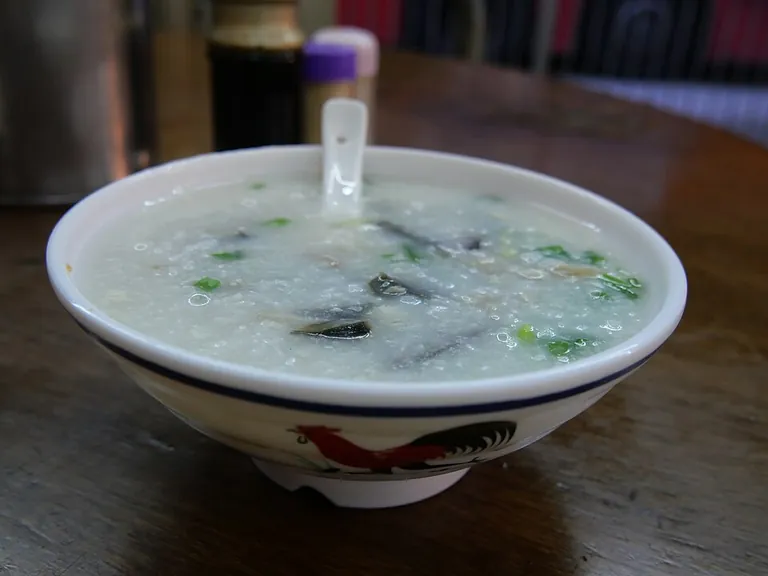
皮蛋瘦肉粥
Peachyeung316 · A century eggs and Pork Congee from Chi Kee Congee Shop.jpg · CC BY-SA 4.0
第 3 步 · 检查调味
本版用电饭煲同煮，放肉时先抖开成团的肉丝；开盖既要看粥稠度，也要确认肉已热透。
核对原页与实际步骤
主要资料：HowToCook 中文开源菜谱 · HowToCook 社区贡献者
下厨房 · 尚食之文 · 皮蛋瘦肉粥
原作者把肉切丝并拨散、皮蛋切丁，等米粥变稠再将其合入粥中。
The Woks of Life · Judy
用料 大米 约 150 毫升量杯量、猪瘦肉 100 克、皮蛋 2 个、盐 少许、水 约 1 升，遵守本机煮粥刻度、姜 少许（可省）、葱 少许（可省）、白胡椒粉 少许（可省）
App 步骤 1. 切配入锅：先确认电饭锅支持含肉煮粥。按约150毫升米、约1升水备料且不超本机粥刻度，米淘洗；猪瘦肉切细丝并拨散，皮蛋去壳切小块，一同入锅。有姜再放，生肉刀板洗净。
用量：大米约 150 毫升、猪瘦肉 100 克、皮蛋 2 个、水约 1 升，遵守本机粥刻度。
状态：确认电饭锅支持含肉煮粥，肉丝拨散、皮蛋切小块。
2. 启动煮粥：选择本机煮粥程序并立即开始，不能让生肉在常温锅里预约等一夜。按说明盖好并保持排气口通畅，不以普通煮饭程序硬代替煮粥，防止溢出。
用量：沿用锅中约 150 毫升米、100 克肉和配方水，按本机煮粥刻度。
火力：立刻启动本机煮粥程序，避免含生肉时常温预约。
状态：按说明盖好，保持排气口通畅。
3. 检查调味：程序结束先看米粒是否软烂，用勺拆开肉丝团，确认内外熟透；用食品温度计确认这份含肉料理中心至少74°C。未达温重新有效加热。盐少量尝后补，有葱胡椒再加；稠了补热水后再煮开。
用量：盐少量，葱和胡椒可省；过稠补热水再煮开。
状态：米粒软烂，拨开肉丝团确认熟透，温度计测中心至少 74°C；未达就重新有效加热。
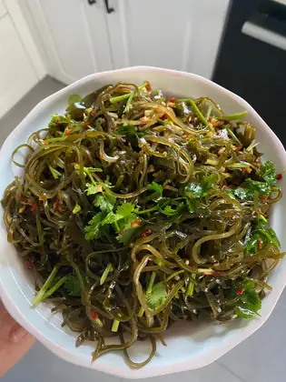
凉拌海带丝
来源于下厨房 · 岩岩爱吃肉 · 凉拌海带丝 · 非商业转载说明
第 2 步 · 煮海带
干海带、盐渍海带分别按包装泡发或脱盐，煮到合适软度再沥水；少量淋汁，尝完再补。
核对原页与实际步骤
主要资料：美食天下 · 丽彩（五谷杂粮）
下厨房 · 岩岩爱吃肉 · 凉拌海带丝
作者先泡发海带丝并煮制，捞出控水才拌蒜香料汁。
The Woks of Life · 见原文署名
下厨房 · 凉拌海带丝（快手菜）的做法
用料 海带 已按包装泡发处理的适量、生抽 适量、醋 适量、水 煮海带用、蒜 少许（可省）、小米辣 少许（可省）、糖 少许（可省）
App 步骤 1. 处理海带：先确认海带是干制、盐渍还是已处理品，按包装要求泡发、脱盐和清洗；时间不计入本菜烹饪时间。洗净泥沙切细丝，厚薄尽量一致，不用统一浸泡时长套所有海带。
用量：按包装处理过的海带适量。
状态：按种类泡发或脱盐，洗净切粗细一致的丝。
2. 煮海带：水沸后下已处理海带，拨散煮，先约 5 分钟起检查，并优先满足包装的煮制要求。厚丝继续煮到熟、咬得断又有韧性；用干净漏勺捞起沥水，不用生水冲凉。
用量：已按包装处理的全部海带丝，足量沸水。
火力：水沸后下海带。
状态：约 5 分钟起查，优先按包装要求；煮到熟、咬得断且有韧性。
3. 拌味：生抽与醋先少量调匀，蒜、小米辣、糖喜欢才加。海带略散热后放干净碗拌汁，先尝一口再补生抽，盐渍海带尤其要少加；尽快食用，暂时不吃及时冷藏。
用量：少量生抽和醋调汁；蒜、小米辣和糖可省。
状态：沥干略散热再拌；尝后补汁，暂时不吃及时冷藏。
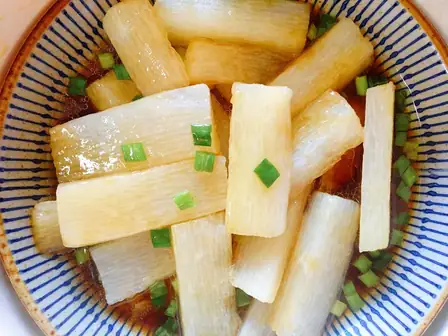
清蒸山药
来源于下厨房 · 简单篮子 · 快手清蒸山药 · 非商业转载说明
第 2 步 · 蒸熟
小灶以普通蒸锅为准，按厚度切匀。筷子从最厚处穿进中心没有硬芯，才夹出装盘。
核对原页与实际步骤
主要资料：美食天下 · gaopingzhao
下厨房 · 简单篮子 · 快手清蒸山药
原方把山药削皮切段装盘，可随饭蒸，也可水开后架在蒸锅中。
Soy, Rice, Fire · Simon Fan
美食天下 · 清蒸麻山药的做法
用料 山药 约 300 克、水 蒸锅足量用水、糖 少许（可省）
App 步骤 1. 处理山药：戴合适的手套给山药去皮，避免黏液接触皮肤和眼口；洗净后切约 1 厘米厚、厚薄接近的片，单层或松散摆入耐热盘。切好的山药滑，放稳再切，不用手抓着悬空削。
用量：山药约 300 克。
状态：戴手套削皮，切约 1 厘米厚片后单层或松散摆放。
2. 蒸熟：蒸锅加足水烧开，放稳盘子，盖好转到能保持蒸汽的火力，参考蒸约 30 分钟。中途留意水量，若需补水用热水并避开蒸汽，不能把锅烧干。
用量：蒸锅加足水，需补就用热水。
火力：水开后上锅，加盖保持蒸汽。
状态：约 30 分钟作参考，期间留意水量，别烧干。
3. 检查出锅：开盖时朝远离脸的一侧掀开，用筷子试最厚片，能轻松穿透中心才熟，仍硬继续蒸。隔热取盘、稍晾再吃；糖只在喜欢甜味时撒少许，不要趁滚烫直接入口。
用量：糖可省，喜欢甜味只撒少许。
状态：筷子能轻松穿透最厚片中心才熟；仍硬继续蒸。

蒜蓉蒸丝瓜
来源于下厨房 · 高冷鱼大人 · 〖广东家常菜〗脆嫩爽口的蒜蓉蒸丝瓜，真的绝绝子！ · 非商业转载说明
第 2 步 · 摆盘调味
本版可直接用碎蒜铺盘，分散在大小接近的丝瓜块上，每块都有蒜香；厚块仍要检查熟度。
核对原页与实际步骤
主要资料：美食天下 · lin悠然
下厨房 · 高冷鱼大人 · 〖广东家常菜〗脆嫩爽口的蒜蓉蒸丝瓜，真的绝绝子！
原方把蒜切碎，一半先炒香再拌余下的蒜，分放在丝瓜上蒸。
China Sichuan Food · Elaine
香港食物安全中心 · 食物安全中心
下厨房 · 〖蒜蓉蒸丝瓜的做法步骤图，蒜蓉蒸丝瓜怎么做好吃〗口水厨房
用料 丝瓜 约 270 克、蒜 15 克、食用油 少许、盐 少许、水 蒸锅用、生抽 少许（可省）
App 步骤 1. 切配：丝瓜去硬皮洗净，切厚薄一致的厚片，蒜剁末。若丝瓜出现异常苦味，不再食用，整份连汤汁弃掉；不生尝筛查，也不能通过蒸久或多放蒜补救。
用量：丝瓜约 270 克、蒜 15 克。
状态：丝瓜去硬皮、切成均匀厚片；异常苦味就整份连汤汁弃掉。
2. 摆盘调味：丝瓜平铺耐热盘，片间留点缝，蒜蓉分散铺上，均匀撒一小撮盐、淋少许油。别把盐集中在几片上，也不提前腌很久，以免出大量水。
用量：盐一小撮、油少许、备好的蒜蓉。
状态：丝瓜平铺留缝，蒜和盐撒匀。
3. 蒸熟：蒸锅水烧开再放盘，保持蒸汽，约 7 分钟起检查最厚片；轻压熟软、中心无硬芯才取出，未熟继续蒸。隔热取盘避免盘汁烫手，先尝正常熟菜再决定是否淋生抽；异常苦味立即停止食用并整份弃掉。
用量：生抽尝后可少量淋。
火力：水开上锅，保持蒸汽。
状态：约 7 分钟起查，最厚片轻压熟软、中心无硬芯；异常苦味整份弃掉。
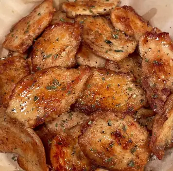
香煎鸡胸肉
来源于下厨房 · 执剑踏云 · 香煎鸡胸肉 · 非商业转载说明
第 2 步 · 小火煎
把厚处片薄，留出间隙再煎。颜色用于决定翻面，出锅要测最厚部位中心达到 74°C。
核对原页与实际步骤
主要资料：美食天下 · 晚妈美食
下厨房 · 执剑踏云 · 香煎鸡胸肉
作者把鸡胸切片腌味，平底锅刷薄油，小火煎到两面上色。
RecipeTin Eats · Nagi Maehashi
下厨房 · 〖香煎鸡胸肉的做法步骤图，香煎鸡胸肉怎么做好吃〗黄阿XIN哦
用料 鸡胸肉 适量，约 1 块、食用油 少许、盐 少许、姜 少许（可省）、料酒 少许（可省）、黑胡椒粉 少许（可省）、水 少许，锅干或需焖熟时沿锅边少量补
App 步骤 1. 切薄片腌味：鸡胸从厚处横切成厚薄接近的薄片，约半厘米左右，别一端厚一端薄。抹少许盐，姜和料酒有且喜欢再加；短腌也放冷藏。无需冲洗生鸡肉，切完洗净手、刀板和台面，另备熟食盘。
用量：鸡胸肉约 1 块、盐少许，姜和料酒可省。
状态：切成厚薄接近的约半厘米薄片，短腌也要冷藏。
2. 小火煎：不粘锅放薄油，中小火到油可流动但不冒烟，下鸡片摊开留空隙，锅小分批。一面浅金黄、可轻推时翻面，继续温和加热；不要一直用铲子压挤肉汁。两面金黄只是外观，还要检查中心。
用量：油薄薄铺锅底；鸡片留空隙，锅小就分批。
火力：中小火，油能流动但未冒烟时下鸡片。
状态：一面浅金黄、能推动再翻；上色后仍要检查中心。
3. 检查熟透：食品温度计从侧面插到最厚鸡片中心，检查数片均达到74°C；没到继续小火煎，若外面已上色就加一小口水盖盖帮助热透，再复测。达到后移到干净盘，喜欢黑胡椒再撒。先尝熟肉，淡了补一小撮盐，不为追求深焦色继续煎干。
用量：未到温且外面已上色时，可加一小口水盖锅；黑胡椒可省。
火力：未达温就继续小火加热。
状态：从侧面测数片最厚处中心，均达到 74°C 才移到干净盘。

豉汁蒸排骨
bryan... from Taipei, Taiwan · Food 豉汁蒸排骨, 新葡苑, Shin Pu Yuan, 台北 (21531923392).jpg · CC BY-SA 2.0
第 2 步 · 铺盘蒸
同一盘骨块尽量一样大并单层摆放，避免中间堆高。豆豉本身咸，蒸熟尝味后再决定是否补盐。
核对原页与实际步骤
主要资料：HowToCook 中文开源菜谱 · HowToCook 社区贡献者
下厨房 · 梓晴 · 豉汁蒸排骨
原方将豆豉切碎拌小排骨，使用浅盘平铺，水烧开后上锅蒸。
The Woks of Life · Bill
用料 排骨 500 克，切小块、豆豉 15 克、生抽 15 毫升、食用油 10 毫升、水 蒸锅用，另 30 毫升拌肉、蒜 10 克（可省）、姜 5 克（可省）、玉米淀粉 8 克（可省）
App 步骤 1. 准备腌料：买已切好的小块排骨，检查去掉松动骨屑、沥干；不熟悉斩骨就让店家处理。豆豉按包装处理后切碎，拌部分生抽、油和约30毫升水；姜蒜淀粉有就少放。盖好冷藏腌约20分钟，别放台面等；洗净手与生肉用具。
用量：小块排骨 500 克、豆豉 15 克；拌入部分生抽、油和约 30 毫升水。
状态：豆豉处理后切碎；肉拌好盖住冷藏腌约 20 分钟。
2. 铺盘蒸：排骨在耐热浅盘单层摆开，不叠在一起。水开、蒸汽足再放盘，盖好保持沸腾，先设20分钟提醒检查。大块需要更久；锅水将少沿边补热水，别烧干。蒸得久一些会更软，但不是到点就一定能吃。
用量：蒸锅水少时沿边补热水。
火力：水开、蒸汽足再上锅，盖好保持沸腾。
状态：排骨在浅盘单层铺开，约 20 分钟检查，大块需更久。
3. 检查出锅：开盖避开蒸汽，温度计测几块最大排骨的最厚肉处，避开骨头。本版完整猪排至少63°C后保持加热或静置3分钟；若还韧，继续蒸到喜欢的软度。未达温度先继续蒸复查，不靠骨边颜色判断。隔热取盘，熟后尝汁再补生抽，不另淋热油。
用量：尝过熟汁再决定是否补生抽。
状态：温度计避骨测几块最大排骨的最厚肉处，至少 63°C 后继续加热或静置 3 分钟；仍韧可续蒸。
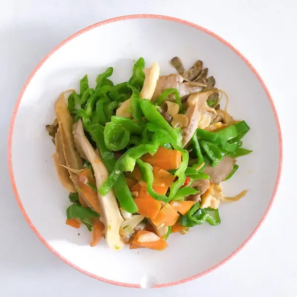
清炒平菇
来源于下厨房 · 吼吼哈嘿嘿 · 超简单的清炒平菇 · 非商业转载说明
平菇炒软后的样子，原作者的版本另加了彩椒。
第 2 步 · 炒熟
小灶直接炒菇，薄撕成条，先让水汽逸出，再观察较厚菇柄是否熟软，最后才收汁。
核对原页与实际步骤
主要资料：美食天下 · 小乙美食
下厨房 · 吼吼哈嘿嘿 · 超简单的清炒平菇
原方把平菇先焯水沥干，再与蒜和蔬菜同炒。
China Sichuan Food · Elaine
美食天下 · 清炒平菇的做法
用料 平菇 适量，约 1 小盘、食用油 适量、盐 少许、蒜 少许（可省）、蚝油 少许（可省）
App 步骤 1. 撕洗菌菇：平菇剪去硬根，撕成大小近似的小片，流水快速洗净后充分沥水，厚菌柄撕细些。有蒜切末；不选黏滑、有异味的菌菇，也不生尝。
用量：平菇约 1 小盘，蒜可省。
状态：剪去硬根，撕成相近小片，充分沥水；黏滑、有异味就弃用。
2. 炒熟：锅放油，中小火炒蒜至有香味、未变褐，没有蒜直接下菇。转中火把菇拨散翻炒，出水后保持加热，翻到每片受热，直到菌柄也熟软、全部热透；不把刚塌软当作熟透。
用量：油适量，蒜可省。
火力：中小火炒蒜，转中火炒菇。
状态：蒜出香、未变褐；炒到菌柄也熟软、每片都热透。
3. 调味收汁：先放一点盐，有蚝油则先少放盐，翻匀尝熟菇再补。中火收去多余水，留下能薄薄裹住菇的汁就出锅，不必一直炒到干，也别加大火把蒜烧焦。
用量：盐先一点；用蚝油时更少放盐，熟后尝味再补。
火力：中火收汁。
状态：汁能薄薄裹住菇即可，别炒到干。
凉拌豆腐皮
Gary Soup · Cucumber-tofu skin salad at China North Dumpling · CC BY
第 1 步 · 煮豆腐皮
按手中豆腐皮的品种和包装要求煮透；拌汁前沥去水，黄瓜丝最后合入，调味更均匀。
核对原页与实际步骤
主要资料：美食天下 · 香香的小厨房
下厨房 · 周周萌萌 · 凉拌千张
原方先把千张放进沸水煮，再沥水、切丝、调味。
The Woks of Life · 见原文署名
下厨房 · 〖爽口《凉拌豆腐皮》的做法步骤图〗王美人2019
用料 豆腐皮 1 张、黄瓜 1 根、生抽 适量、水 煮豆腐皮用、香油 少许（可省）、蒜 少许（可省）、辣椒油 少许（可省）
App 步骤 1. 煮豆腐皮：先确认是本菜用的湿豆腐皮，不是需要长时间泡发的干腐竹；按包装处理后切细丝。水沸下锅，拨散煮约 3 分钟起检查，依包装继续煮到熟透、柔软；用干净漏勺捞出沥干，不用生水冲凉。
用量：湿豆腐皮 1 张，按包装处理。
火力：水沸下锅。
状态：约 3 分钟起查，按包装继续煮到熟透柔软，再用干净漏勺沥水。
2. 准备配菜：用干净刀板洗切黄瓜成细丝，有蒜洗净切末，另备干净拌菜碗。豆腐皮摊开稍散热再拌，避免把黄瓜烫软；生肉刀板未经清洁不用于这一步。
用量：黄瓜 1 根，蒜可省。
状态：黄瓜用干净刀板切细丝；豆腐皮稍散热再拌。
3. 拌匀：豆腐皮先拌少量生抽，把粘连丝拨松再放黄瓜轻拌。香油、蒜、辣椒油喜欢才加，尝味后再决定补生抽；现拌现吃，暂时不吃先冷藏，黄瓜等吃前再拌。
用量：生抽先少量，尝后再补；香油、蒜和辣椒油可省。
状态：先拌松豆腐皮再放黄瓜；现拌现吃，暂时不吃先冷藏。
蒜香黄油牛排
来源于HowToCook · HowToCook 社区贡献者 · 牛排成品参考 · HowToCook 仓库 Unlicense；保留来源
来源作者的成品参考；配料、摆盘与本版家常做法可能不同。
整道菜的做法核对（补充资料的采用范围见下方）
先煎牛排外壳，再降火浇黄油。厚度按 2–3 厘米；不用薄火锅肉片替代。
核对原页与实际步骤
主要资料：HowToCook · HowToCook 社区贡献者（逐页提交记录见原页）
RecipeTin Eats · Nagi · How to Cook Steak - like a chef! - RecipeTin Eats
核对厚切牛排先煎上色、降火加黄油浇淋和静置的方法；中心熟度另以食品安全来源复核。
下厨房 · 法国美食之六十六蒜香黄油牛排的做法
用料 牛排 450克、食用油 15毫升、无盐黄油 20克、蒜 3瓣、盐 2克、黑胡椒粉 1克
App 步骤 1. 擦干调味：牛排450克、盐2克、黑胡椒粉1克。不开火。冷藏解冻后用纸吸干牛排两面，撒盐和黑胡椒；蒜拍裂。生熟刀板分开。表面没有明显水珠。
用量：牛排450克、盐2克、黑胡椒粉1克
火力：不开火
状态：表面没有明显水珠。
2. 煎出外壳：食用油15毫升、全部牛排。中大火。锅热后加油，牛排平铺，每面先煎约2分钟，再按厚度继续煎；不要反复按压。表面褐色，能自然离锅再翻面。
用量：食用油15毫升、全部牛排
火力：中大火
状态：表面褐色，能自然离锅再翻面。
3. 浇黄油并测温：无盐黄油20克、蒜3瓣。转中小火。加入黄油和蒜，锅稍倾斜，用勺反复浇汁；用食品温度计测最厚处，不足就继续煎。中心达到63°C；黄油起泡但不焦黑。
用量：无盐黄油20克、蒜3瓣
火力：转中小火
状态：中心达到63°C；黄油起泡但不焦黑。
4. 静置切片：煎好的牛排和锅中肉汁。关火。放到干净盘中静置至少3分钟，再逆纹切片，把肉汁淋回。静置完成后再切，不能省略。
用量：煎好的牛排和锅中肉汁
火力：关火
状态：静置完成后再切，不能省略。

黑椒牛柳
来源于HowToCook · HowToCook 社区贡献者 · 黑椒牛柳成品参考 · HowToCook 仓库 Unlicense；保留来源
来源作者的成品参考；配料、摆盘与本版家常做法可能不同。
整道菜的做法核对（补充资料的采用范围见下方）
牛柳逆纹切，分批炒才不容易出水。彩椒可换青椒；黑胡椒是这道菜的主要风味。
核对原页与实际步骤
主要资料：HowToCook · HowToCook 社区贡献者（逐页提交记录见原页）
The Woks of Life · Bill · How to Velvet Beef for Stir-fry - The Woks of Life
核对牛肉逆纹切、薄浆腌制和分批预炒的方法，不将嫩化剂或原文生肉冲洗引入本版。
下厨房 · 黑椒牛柳的做法
用料 牛里脊 300克、洋葱 100克、彩椒 150克、生抽 15毫升、玉米淀粉 6克、黑胡椒粉 2克、食用油 20毫升、水 40毫升
App 步骤 1. 切条腌肉：牛里脊300克、生抽5毫升、淀粉3克、油5毫升。不开火。牛肉逆纹切5毫米厚条，拌入腌料冷藏10分钟；洋葱和彩椒切条。条状厚薄相近，肉表面裹薄浆。
用量：牛里脊300克、生抽5毫升、淀粉3克、油5毫升
火力：不开火
状态：条状厚薄相近，肉表面裹薄浆。
2. 调汁炒肉：生抽10毫升、淀粉3克、黑胡椒2克、水40毫升；油10毫升。中大火。先调匀酱汁；油热后分批摊开牛柳煎炒，表面变色后盛到暂存盘，后面还要回锅煮透。锅底有煎香的薄褐色，肉不是泡在水里。
用量：生抽10毫升、淀粉3克、黑胡椒2克、水40毫升；油10毫升
火力：中大火
状态：锅底有煎香的薄褐色，肉不是泡在水里。
3. 合炒收汁：洋葱100克、彩椒150克、余油5毫升、全部牛柳和酱汁。中火。炒蔬菜约3分钟至略软；回锅牛柳，重新搅匀酱汁倒入，煮到肉熟透。食品温度计测厚肉条达到63°C，离火静置至少3分钟后吃。酱汁薄薄包住牛柳；未达温度继续加热。
用量：洋葱100克、彩椒150克、余油5毫升、全部牛柳和酱汁
火力：中火
状态：酱汁薄薄包住牛柳；未达温度继续加热；食品温度计测厚肉条达到63°C，离火静置至少3分钟后吃。
小炒黄牛肉
来源于HowToCook · HowToCook 社区贡献者 · 小炒黄牛肉成品参考 · HowToCook 仓库 Unlicense；保留来源
来源作者的成品参考；配料、摆盘与本版家常做法可能不同。
整道菜的做法核对（补充资料的采用范围见下方）
芹菜先炒，牛肉回锅时快速合匀。小米辣可减为1根；泡椒本身含盐，先不另加盐。
核对原页与实际步骤
主要资料：HowToCook · HowToCook 社区贡献者（逐页提交记录见原页）
The Woks of Life · Bill · How to Velvet Beef for Stir-fry - The Woks of Life
核对牛肉逆纹切、薄浆腌制和分批预炒的方法，不将嫩化剂或原文生肉冲洗引入本版。
下厨房 · 小炒黄牛肉的做法
用料 牛里脊 300克、芹菜 150克、小米辣 2根、泡椒 20克、香菜 10克、生抽 15毫升、玉米淀粉 5克、食用油 20毫升、水 30毫升
App 步骤 1. 准备小炒料：牛里脊300克、生抽5毫升、淀粉5克；全部蔬菜。不开火。牛肉逆纹切薄片，拌生抽和淀粉冷藏10分钟；芹菜切3厘米段，辣椒切圈，香菜切段。肉片不成大团，菜切好再开火。
用量：牛里脊300克、生抽5毫升、淀粉5克；全部蔬菜
火力：不开火
状态：肉片不成大团，菜切好再开火。
2. 分批炒肉：油10毫升、腌好的牛肉。中大火。摊开肉片分两批炒至表面变色，盛出待回锅；暂存盘不能直接用来盛成品。肉片散开，锅中不大量积水。
用量：油10毫升、腌好的牛肉
火力：中大火
状态：肉片散开，锅中不大量积水。
3. 炒芹菜合锅：余油10毫升、芹菜150克、泡椒20克、小米辣2根、生抽10毫升、水30毫升、香菜10克。中火。先炒芹菜和辣椒约3分钟，加入牛肉、生抽和水煮透。食品温度计测厚肉片达到63°C后关火拌香菜，静置至少3分钟再吃。芹菜可弯曲，肉片熟透，锅底留少量汁。
用量：余油10毫升、芹菜150克、泡椒20克、小米辣2根、生抽10毫升、水30毫升、香菜10克
火力：中火
状态：芹菜可弯曲，肉片熟透，锅底留少量汁；食品温度计测厚肉片达到63°C后关火拌香菜，静置至少3分钟再吃。
广式萝卜牛腩
来源于HowToCook · HowToCook 社区贡献者 · 广式萝卜牛腩成品参考 · HowToCook 仓库 Unlicense；保留来源
来源作者的成品参考；配料、摆盘与本版家常做法可能不同。
整道菜的做法核对（补充资料的采用范围见下方）
牛腩先炖软，再加萝卜避免煮散。南乳与柱侯酱已咸，本版不另加盐；使用普通炖锅。
核对原页与实际步骤
主要资料：HowToCook · HowToCook 社区贡献者（逐页提交记录见原页）
The Woks of Life · Judy · Chinese Braised Beef Stew with Daikon - The Woks of Life
核对牛肉先炖软、根菜后加及保留汤量的方法；不把牛肉配方直接当作羊肉或其他汤的定量来源。
下厨房 · 广式萝卜牛腩的做法
用料 牛腩 500克、白萝卜 400克、姜 20克、蒜 4瓣、葱 1根、南乳 15克、柱侯酱 20克、生抽 10毫升、糖 8克、八角 1个、食用油 10毫升、水 炖煮约900毫升，焯水另备
App 步骤 1. 焯牛腩备料：牛腩500克、姜10克、葱1根；白萝卜400克。大火煮开。牛腩切3厘米块，冷水没过肉，加姜和葱，沸后煮3分钟撇沫捞出沥干；萝卜切3厘米块。浮沫捞净，肉块表面沥干。
用量：牛腩500克、姜10克、葱1根；白萝卜400克
火力：大火煮开
状态：浮沫捞净，肉块表面沥干。
2. 炒香酱料：油10毫升、姜10克、蒜4瓣、南乳15克、柱侯酱20克、生抽10毫升、糖8克。中小火。先炒姜蒜，再放牛腩和压碎的南乳及其余酱料翻匀；酱料易糊，要不停铲底。闻到酱香，锅底没有焦黑。
用量：油10毫升、姜10克、蒜4瓣、南乳15克、柱侯酱20克、生抽10毫升、糖8克
火力：中小火
状态：闻到酱香，锅底没有焦黑。
3. 小火炖牛腩：水约900毫升、八角1个。煮沸后小火。水加至略没过肉，加盖轻沸炖约2小时；每20分钟翻动检查，水低于肉一半时补热水100毫升。牛腩可用筷子穿入，仍硬就继续炖。
用量：水约900毫升、八角1个
火力：煮沸后小火
状态：牛腩可用筷子穿入，仍硬就继续炖。
4. 加萝卜炖软：白萝卜400克。小火。放萝卜炖约30分钟，再检查牛腩；萝卜中心无硬芯后开盖稍收汁，夹出八角。牛腩软而不散，萝卜半透明，留汁拌饭。
用量：白萝卜400克
火力：小火
状态：牛腩软而不散，萝卜半透明，留汁拌饭。
番茄土豆炖牛肉
来源于HowToCook · HowToCook 社区贡献者 · 西红柿土豆炖牛肉成品参考 · HowToCook 仓库 Unlicense；保留来源
来源作者的成品参考；配料、摆盘与本版家常做法可能不同。
整道菜的做法核对（补充资料的采用范围见下方）
番茄先炒出汁，土豆留到后段。采用普通炖锅，不沿用原文压力锅时间；土豆不要一开始就放。
核对原页与实际步骤
主要资料：HowToCook · HowToCook 社区贡献者（逐页提交记录见原页）
The Woks of Life · Judy · Chinese Braised Beef Stew with Daikon - The Woks of Life
核对牛肉先炖软、根菜后加及保留汤量的方法；不把牛肉配方直接当作羊肉或其他汤的定量来源。
下厨房 · 番茄土豆炖牛肉的做法
用料 牛腩 500克、番茄 400克、土豆 300克、洋葱 150克、姜 10克、生抽 15毫升、糖 5克、盐 2克、食用油 15毫升、水 900毫升，焯水另备
App 步骤 1. 切块焯肉：牛腩500克、姜10克；全部蔬菜。大火。牛腩切3厘米块冷水下锅，沸后撇沫煮3分钟捞出；番茄切块、洋葱切丁、土豆切3厘米块。肉沥干，土豆暂泡清水防变色。
用量：牛腩500克、姜10克；全部蔬菜
火力：大火
状态：肉沥干，土豆暂泡清水防变色。
2. 炒出番茄汁：油15毫升、洋葱150克、番茄400克。中火。先炒洋葱至半透明，加番茄炒约5分钟；用铲背轻压番茄，再加入牛腩。番茄变软出红汁，不是干块。
用量：油15毫升、洋葱150克、番茄400克
火力：中火
状态：番茄变软出红汁，不是干块。
3. 炖软牛肉：生抽15毫升、糖5克、水900毫升。煮开转小火。加盖轻沸炖90分钟，每20分钟检查并翻动，缺水时每次补热水100毫升；肉仍硬可再炖30分钟。筷子能穿进肉块后再放土豆。
用量：生抽15毫升、糖5克、水900毫升
火力：煮开转小火
状态：筷子能穿进肉块后再放土豆。
4. 土豆入锅：沥干的土豆300克、盐先1克，余1克尝后加。小火。炖20–30分钟，轻推避免土豆破碎；肉和土豆都软后尝汁，按需要加余盐。土豆中心无硬芯，汤汁略浓即可。
用量：沥干的土豆300克、盐先1克，余1克尝后加
火力：小火
状态：土豆中心无硬芯，汤汁略浓即可。
酱牛肉
来源于HowToCook · HowToCook 社区贡献者 · 酱牛肉成品参考 · HowToCook 仓库 Unlicense；保留来源
来源作者的成品参考；配料、摆盘与本版家常做法可能不同。
整道菜的做法核对（补充资料的采用范围见下方）
牛腱慢炖后冷藏，逆纹切片才整齐。时间包含冷藏；不把整锅卤汁放在室温过夜。
核对原页与实际步骤
主要资料：HowToCook · HowToCook 社区贡献者（逐页提交记录见原页）
The Woks of Life · Judy · Chinese Braised Beef Stew with Daikon - The Woks of Life
核对牛肉先炖软、根菜后加及保留汤量的方法；不把牛肉配方直接当作羊肉或其他汤的定量来源。
下厨房 · 酱牛肉家常简单版的做法
用料 牛腱 800克、姜 20克、葱 1根、黄豆酱 25克、生抽 30毫升、老抽 5毫升、糖 10克、八角 2个、桂皮 1小段、水 约1500毫升，焯水另备
App 步骤 1. 焯牛腱：牛腱800克、姜10克、葱1根。大火。牛腱切成不超过8厘米的大块，冷水没过，加姜葱煮开，撇沫煮5分钟，捞出沥水。浮沫基本捞净，生熟用具分开。
用量：牛腱800克、姜10克、葱1根
火力：大火
状态：浮沫基本捞净，生熟用具分开。
2. 调卤汁：姜10克、黄豆酱25克、生抽30毫升、老抽5毫升、糖10克、八角2个、桂皮1段、水约1500毫升。煮开转小火。牛肉与所有卤料同入炖锅，水没过肉，轻沸加盖炖约2–3小时；每30分钟翻动并查水位，缺水补热水。筷子可穿透牛腱，筋变柔软，不用大火翻滚。
用量：姜10克、黄豆酱25克、生抽30毫升、老抽5毫升、糖10克、八角2个、桂皮1段、水约1500毫升
火力：煮开转小火
状态：筷子可穿透牛腱，筋变柔软，不用大火翻滚。
3. 冷却冷藏：煮好的牛肉、少量卤汁。关火。捞肉到浅盒，分小份加少量卤汁；及时冷藏，不等整锅自然凉透，烹调后2小时内放入冰箱。冷藏至少3小时，肉变紧实便于切片。
用量：煮好的牛肉、少量卤汁
火力：关火
状态：冷藏至少3小时，肉变紧实便于切片。
4. 逆纹切片：冷藏后的牛肉。不开火。用清洁刀板垂直肌肉纹理切2–3毫米薄片，取本次食用量，其余继续冷藏。切片完整，纹理短，不顺纹切成长丝。
用量：冷藏后的牛肉
火力：不开火
状态：切片完整，纹理短，不顺纹切成长丝。
家常红烧肉
来源于HowToCook · HowToCook 社区贡献者 · 简易红烧肉成品参考 · HowToCook 仓库 Unlicense；保留来源
来源作者的成品参考；配料、摆盘与本版家常做法可能不同。
整道菜的做法核对（补充资料的采用范围见下方）
先煸出部分油，再小火焖到软糯。省去鹌鹑蛋和豆皮配菜；不用额外炒深色糖色。
核对原页与实际步骤
主要资料：HowToCook · HowToCook 社区贡献者（逐页提交记录见原页）
The Woks of Life · Judy · Shanghai-Style Braised Pork Belly (Hong Shao Rou) - The Woks of Life
核对煸肉后加液体、轻沸慢炖及开盖收汁的方法；不同肉类的时间按本版大小另作编辑估计。
下厨房 · 〖家常红烧肉的做法步骤图，家常红烧肉怎么做好吃〗^^小"小~琼
用料 五花肉 500克、姜 15克、葱 1根、生抽 20毫升、老抽 5毫升、糖 15克、料酒 20毫升、水 700毫升，焯水另备
App 步骤 1. 焯肉切块：五花肉500克、姜5克、料酒10毫升。大火。五花肉切3厘米块，冷水没过肉，加姜和料酒煮开，撇沫煮3分钟捞出擦干。肉块不滴水，避免入锅溅油。
用量：五花肉500克、姜5克、料酒10毫升
火力：大火
状态：肉块不滴水，避免入锅溅油。
2. 煸肉上色：五花肉、姜10克、糖15克。中小火。不另放油，翻煎肉块至表面浅金黄，舀出多余油脂留薄底油；下姜和糖翻匀。肥肉出油，糖融化但不焦黑。
用量：五花肉、姜10克、糖15克
火力：中小火
状态：肥肉出油，糖融化但不焦黑。
3. 加汁慢焖：生抽20毫升、老抽5毫升、料酒10毫升、葱1根、水700毫升。烧开后小火。加盖轻沸炖约75分钟，每20分钟翻肉查水位，过干加热水100毫升继续炖。筷子可轻松穿透肉皮，未软就延长。
用量：生抽20毫升、老抽5毫升、料酒10毫升、葱1根、水700毫升
火力：烧开后小火
状态：筷子可轻松穿透肉皮，未软就延长。
4. 收浓肉汁：锅中全部肉和汤汁。中火。挑出葱结，开盖边推边收汁约5分钟；汁能挂肉就关火，不收成干糖浆。肉表面有光泽，锅底仍有可流动的汁。
用量：锅中全部肉和汤汁
火力：中火
状态：肉表面有光泽，锅底仍有可流动的汁。

回锅肉
来源于HowToCook · HowToCook 社区贡献者 · 回锅肉成品参考 · HowToCook 仓库 Unlicense；保留来源
来源作者的成品参考；配料、摆盘与本版家常做法可能不同。
整道菜的做法核对（补充资料的采用范围见下方）
猪肉先煮后切薄片，再煸出卷边。以蒜苗和豆瓣酱为主要风味，不用生肉直接快炒替代回锅。
核对原页与实际步骤
主要资料：HowToCook · HowToCook 社区贡献者（逐页提交记录见原页）
The Woks of Life · Bill · Twice Cooked Pork: Chinese Sichuan Recipe - The Woks of Life
核对猪肉均匀切配、先熟后回锅或分开加热的方法；炸猪排的裹粉油温来自原菜记录，不来自回锅肉。
下厨房 · 回锅肉的做法
用料 五花肉 300克、蒜苗 120克、青椒 100克、姜 15克、辣豆瓣酱 15克、生抽 5毫升、糖 3克、水 煮肉用，没过肉
App 步骤 1. 煮熟整块肉：五花肉300克、姜10克、水没过肉。煮沸后小火。加盖煮约25分钟，厚块延长；食品温度计测中心至少63°C后离火静置3分钟，再取出稍散热。中心达温并完成静置，不能只看表面颜色。
用量：五花肉300克、姜10克、水没过肉
火力：煮沸后小火
状态：中心达温并完成静置，不能只看表面颜色；食品温度计测中心至少63°C后离火静置3分钟，再取出稍散热。
2. 切片备菜：煮好的肉、蒜苗120克、青椒100克、姜5克。不开火。肉切2毫米片，蒜苗白绿分开切段，青椒切块，姜切片；用干净刀板。肉片薄而不断，蒜苗白段与叶段分开。
用量：煮好的肉、蒜苗120克、青椒100克、姜5克
火力：不开火
状态：肉片薄而不断，蒜苗白段与叶段分开。
3. 煸肉炒酱：肉片、姜5克、辣豆瓣酱15克。中小火。肉片入锅翻煸出油至边缘微卷，油太多舀出一部分；加入姜和豆瓣酱炒出香味。肉片微卷不焦硬，豆瓣酱无糊味。
用量：肉片、姜5克、辣豆瓣酱15克
火力：中小火
状态：肉片微卷不焦硬，豆瓣酱无糊味。
4. 加菜合炒：蒜苗120克、青椒100克、生抽5毫升、糖3克。中火。先下蒜苗白段和青椒炒2分钟，再下绿叶、生抽和糖翻炒至蔬菜熟软。蒜苗梗能弯曲，酱汁均匀包肉。
用量：蒜苗120克、青椒100克、生抽5毫升、糖3克
火力：中火
状态：蒜苗梗能弯曲，酱汁均匀包肉。

糖醋排骨
来源于HowToCook · HowToCook 社区贡献者 · 糖醋排骨成品参考 · HowToCook 仓库 Unlicense；保留来源
来源作者的成品参考；配料、摆盘与本版家常做法可能不同。
整道菜的做法核对（补充资料的采用范围见下方）
用焖熟再收汁的办法做糖醋排骨。采用补充来源的炖煮路线，省去原文大量油炸；糖醋汁不必收得很干。
核对原页与实际步骤
主要资料：HowToCook · HowToCook 社区贡献者（逐页提交记录见原页）
The Woks of Life · Judy · Shanghai Sweet and Sour Ribs - The Woks of Life
核对先把肉煮熟软、最后收浓糖醋汁的原则；锅包肉保留裹浆油炸，未直接采用排骨炖法。
下厨房 · 糖醋排骨的做法
用料 排骨 400克、姜 15克、生抽 15毫升、陈醋 25毫升、糖 25克、食用油 10毫升、水 600毫升，焯水另备
App 步骤 1. 焯排骨：排骨400克、姜5克。大火。排骨切4厘米段，冷水没过排骨，沸后撇沫煮3分钟；捞出沥干并擦掉表面水珠。下油锅前不滴水。
用量：排骨400克、姜5克
火力：大火
状态：下油锅前不滴水。
2. 煎香排骨：油10毫升、姜10克、排骨。中火。翻煎约5分钟，待排骨表面浅金黄后加入调料，不需要煎到内部全熟。四周浅金黄，没有焦黑斑。
用量：油10毫升、姜10克、排骨
火力：中火
状态：四周浅金黄，没有焦黑斑。
3. 加汁焖熟：生抽15毫升、糖25克、陈醋15毫升、水600毫升。煮开转小火。加盖焖约40分钟，每15分钟检查水量，肉不软时补热水100毫升再焖。肉能轻松从骨边拨开，不能只看时间。
用量：生抽15毫升、糖25克、陈醋15毫升、水600毫升
火力：煮开转小火
状态：肉能轻松从骨边拨开，不能只看时间。
4. 收汁补醋：陈醋余10毫升。中火。开盖翻动收浓汤汁，最后倒入余醋翻匀；汁刚能挂住排骨就关火。汁有光泽能流动，不是发黑黏硬的糖浆。
用量：陈醋余10毫升
火力：中火
状态：汁有光泽能流动，不是发黑黏硬的糖浆。
土豆炖排骨
来源于HowToCook · HowToCook 社区贡献者 · 土豆炖排骨成品参考 · HowToCook 仓库 Unlicense；保留来源
来源作者的成品参考；配料、摆盘与本版家常做法可能不同。
整道菜的做法核对（补充资料的采用范围见下方）
排骨先焖，土豆后放，收汁时轻推。不叠加黄豆酱和蚝油，减少咸味调料；使用普通炖锅。
核对原页与实际步骤
主要资料：HowToCook · HowToCook 社区贡献者（逐页提交记录见原页）
The Woks of Life · Judy · Shanghai-Style Braised Pork Belly (Hong Shao Rou) - The Woks of Life
核对煸肉后加液体、轻沸慢炖及开盖收汁的方法；不同肉类的时间按本版大小另作编辑估计。
央视网 · [天天饮食]天天美味 土豆炖排骨
用料 排骨 600克、土豆 300克、姜 20克、葱 1根、生抽 20毫升、老抽 5毫升、糖 8克、八角 1个、食用油 15毫升、水 800毫升，焯水另备
App 步骤 1. 焯排骨备土豆：排骨600克、姜10克、葱1根；土豆300克。大火。排骨冷水下锅，沸后撇沫煮3分钟捞出沥干；土豆去皮切3厘米块暂浸水。排骨沥干，土豆块大小一致。
用量：排骨600克、姜10克、葱1根；土豆300克
火力：大火
状态：排骨沥干，土豆块大小一致。
2. 煸香炖煮：油15毫升、姜10克、生抽20毫升、老抽5毫升、糖8克、八角1个、水800毫升。先中火，再小火。先煸排骨和姜约3分钟，加入调味料和水煮开，盖锅轻沸炖40分钟；每15分钟查水位。肉接近软嫩，缺水补热水避免干烧。
用量：油15毫升、姜10克、生抽20毫升、老抽5毫升、糖8克、八角1个、水800毫升
火力：先中火，再小火
状态：肉接近软嫩，缺水补热水避免干烧。
3. 加土豆：沥干的土豆300克。小火。下土豆再焖约20分钟，轻推一次防粘底；土豆仍硬则继续焖，每次检查别压碎。筷子能穿透土豆中心，排骨熟软。
用量：沥干的土豆300克
火力：小火
状态：筷子能穿透土豆中心，排骨熟软。
4. 稍收浓汁：锅中排骨和土豆。中火。开盖收汁约3分钟，轻轻推动锅底；夹出八角，再关火装盘。留一些汤汁，不把土豆炒成泥。
用量：锅中排骨和土豆
火力：中火
状态：留一些汤汁，不把土豆炒成泥。
红烧猪蹄
来源于HowToCook · HowToCook 社区贡献者 · 红烧猪蹄成品参考 · HowToCook 仓库 Unlicense；保留来源
来源作者的成品参考；配料、摆盘与本版家常做法可能不同。
整道菜的做法核对（补充资料的采用范围见下方）
猪蹄需慢炖软糯，不靠短时间上色判断。采用普通炖锅，避免把不同压力锅的时间直接套用。
核对原页与实际步骤
主要资料：HowToCook · HowToCook 社区贡献者（逐页提交记录见原页）
The Woks of Life · Judy · Shanghai-Style Braised Pork Belly (Hong Shao Rou) - The Woks of Life
核对煸肉后加液体、轻沸慢炖及开盖收汁的方法；不同肉类的时间按本版大小另作编辑估计。
下厨房 · 厨师长教你：“红烧猪蹄”的家常做法，色泽红亮，软糯脱骨的做法
用料 猪蹄 800克，买已剁块的、姜 25克、葱 1根、生抽 25毫升、老抽 5毫升、糖 15克、八角 2个、桂皮 1小段、食用油 10毫升、水 1200毫升，焯水另备
App 步骤 1. 焯猪蹄：猪蹄800克、姜10克、葱1根。大火。冷水没过猪蹄，煮开撇去浮沫，再煮5分钟，捞出沥干；请商家剁块，不自行劈硬骨。表面无浮沫，沥干不滴水。
用量：猪蹄800克、姜10克、葱1根
火力：大火
状态：表面无浮沫，沥干不滴水。
2. 炒色加汤：油10毫升、姜15克、生抽25毫升、老抽5毫升、糖15克、八角2个、桂皮1段、水1200毫升。中火。先翻炒猪蹄和姜3分钟，加其余调料及水，水应接近没过猪蹄，煮开。调料混匀，锅底没有糊糖。
用量：油10毫升、姜15克、生抽25毫升、老抽5毫升、糖15克、八角2个、桂皮1段、水1200毫升
火力：中火
状态：调料混匀，锅底没有糊糖。
3. 慢炖至软：锅中全部猪蹄与汤汁。小火。加盖轻沸炖约2小时，每20分钟翻动并补热水保持至少半淹；不软可再炖30分钟。筷子能穿透皮肉，骨边肉容易拨开。
用量：锅中全部猪蹄与汤汁
火力：小火
状态：筷子能穿透皮肉，骨边肉容易拨开。
4. 收汁装盘：锅中熟猪蹄。中火。挑出八角桂皮，开盖收汁5–10分钟，铲底防粘；汁能裹住猪蹄时离火。汤汁浓而可流动，冷后还会更稠。
用量：锅中熟猪蹄
火力：中火
状态：汤汁浓而可流动，冷后还会更稠。
老式锅包肉
来源于HowToCook · HowToCook 社区贡献者 · 老式锅包肉成品参考 · HowToCook 仓库 Unlicense；保留来源
来源作者的成品参考；配料、摆盘与本版家常做法可能不同。
整道菜的做法核对（补充资料的采用范围见下方）
薄肉片挂湿淀粉，糖醋汁最后快速裹。深油炸需有油温计；不沿用原文极短炸制及高达220度的复炸。
核对原页与实际步骤
主要资料：HowToCook · HowToCook 社区贡献者（逐页提交记录见原页）
The Woks of Life · Judy · Shanghai Sweet and Sour Ribs - The Woks of Life
核对先把肉煮熟软、最后收浓糖醋汁的原则；锅包肉保留裹浆油炸，未直接采用排骨炖法。
下厨房 · 家庭版「老式锅包肉」的做法
用料 猪里脊 300克、土豆淀粉 170克、葱 20克、姜 10克、蒜 2瓣、白醋 40毫升、糖 45克、盐 2克、生抽 5毫升、食用油 约700毫升用于炸制，另10毫升炒汁、水 淀粉浸泡约400毫升
App 步骤 1. 沉淀淀粉：土豆淀粉170克、水400毫升；猪里脊300克、盐2克。不开火。淀粉加水拌匀静置1小时后倒掉上层清水留湿浆；肉切5毫米片拌盐冷藏，葱姜切丝、蒜切片。湿淀粉可裹住肉，过硬才每次补水5毫升。
用量：土豆淀粉170克、水400毫升；猪里脊300克、盐2克
火力：不开火
状态：湿淀粉可裹住肉，过硬才每次补水5毫升。
2. 挂浆分批炸：全部肉片与湿淀粉；炸油约700毫升。油温计控制170°C。深锅装油不超过三分之一，肉片逐片挂浆分批炸约3–5分钟，翻动防粘；食品温度计测厚片中心63°C后捞到架上静置至少3分钟。外壳浅金黄；未达中心温度继续炸，不靠上浮判断熟透。
用量：全部肉片与湿淀粉；炸油约700毫升
火力：油温计控制170°C
状态：外壳浅金黄；未达中心温度继续炸，不靠上浮判断熟透；食品温度计测厚片中心63°C后捞到架上静置至少3分钟。
3. 调汁炒香：白醋40毫升、糖45克、生抽5毫升；另油10毫升、葱20克、姜10克、蒜2瓣。中火。糖醋和生抽拌匀；用另一个锅炒香葱姜蒜，倒汁煮到起密小泡。糖完全融化，汁略稠但没变成硬糖。
用量：白醋40毫升、糖45克、生抽5毫升；另油10毫升、葱20克、姜10克、蒜2瓣
火力：中火
状态：糖完全融化，汁略稠但没变成硬糖。
4. 快速裹汁：炸熟的全部肉片。中大火后关火。把肉片放进糖醋汁快速翻匀，表面沾汁就盛出，不在汁里长时间煮。外壳仍有脆感，锅中无大滩汁。
用量：炸熟的全部肉片
火力：中大火后关火
状态：外壳仍有脆感，锅中无大滩汁。
青椒酿肉
来源于HowToCook · HowToCook 社区贡献者 · 青椒酿成品参考 · HowToCook 仓库 Unlicense；保留来源
来源作者的成品参考；配料、摆盘与本版家常做法可能不同。
整道菜的做法核对（补充资料的采用范围见下方）
肉馅不要塞太厚，煎后加汁焖透。青椒可纵向对半更方便填馅；按本版开放式填馅，不照整只塞满的时间。
核对原页与实际步骤
主要资料：HowToCook · HowToCook 社区贡献者（逐页提交记录见原页）
The Woks of Life · Judy · How to Make Stir-fry: The Right Way! - The Woks of Life
核对先备齐材料、分开处理熟得快慢不同的食材、最后合炒的次序；不是该菜全部配方的交叉复刻。
下厨房 · 青椒酿肉的做法
用料 青椒 300克、猪肉末 250克、姜 10克、葱 1根、生抽 20毫升、老抽 3毫升、玉米淀粉 8克、食用油 20毫升、水 120毫升
App 步骤 1. 拌肉馅：肉末250克、姜10克、葱1根、生抽10毫升、淀粉5克。不开火。葱姜剁末拌进肉馅，朝一个方向搅到略黏；青椒对半去籽，沥干后内侧撒余下3克淀粉。馅有黏性，椒内壁干爽。
用量：肉末250克、姜10克、葱1根、生抽10毫升、淀粉5克
火力：不开火
状态：馅有黏性，椒内壁干爽。
2. 填馅煎定型：全部肉馅、青椒300克、油20毫升。中小火。肉馅铺进椒中，厚度不超过1.5厘米；肉面朝下轻放，煎定型后翻面，再煎椒皮。肉馅成片不掉落，椒皮起皱。
用量：全部肉馅、青椒300克、油20毫升
火力：中小火
状态：肉馅成片不掉落，椒皮起皱。
3. 加汁焖透：生抽10毫升、老抽3毫升、水120毫升。烧开转中小火。加调料水，盖锅焖10分钟起检查；食品温度计插入最厚肉馅中心达到71°C，未达到继续焖。馅中心达温，青椒软而完整。
用量：生抽10毫升、老抽3毫升、水120毫升
火力：烧开转中小火
状态：馅中心达温，青椒软而完整；食品温度计插入最厚肉馅中心达到71°C，未达到继续焖。
4. 收汁：锅中全部青椒和汁。中火。开盖略收汁，铲子从底部托起青椒装盘，淋上汤汁。酱汁略稠即可，不把肉馅煎干。
用量：锅中全部青椒和汁
火力：中火
状态：酱汁略稠即可，不把肉馅煎干。
冬瓜酿肉
来源于HowToCook · HowToCook 社区贡献者 · 冬瓜酿肉成品参考 · HowToCook 仓库 Unlicense；保留来源
来源作者的成品参考；配料、摆盘与本版家常做法可能不同。
整道菜的做法核对（补充资料的采用范围见下方）
薄冬瓜片包小份肉，蒸汽持续才熟透。纠正原资料冬瓜切片厚度与过量盐；不加入未明确分配的鸡蛋。
核对原页与实际步骤
主要资料：HowToCook · HowToCook 社区贡献者（逐页提交记录见原页）
The Woks of Life · Bill · Cantonese Steamed Fish: A 20 Minute Recipe - The Woks of Life
核对水开后上蒸架、维持稳定蒸汽和按厚度检查；仅支持蒸制方法，肉馅或虾的熟度另核对。
下厨房 · 〖冬瓜酿肉的做法步骤图，冬瓜酿肉怎么做好吃〗沐沐的心肝儿麻麻
用料 冬瓜 400克、猪肉末 250克、姜 10克、葱 1根、生抽 10毫升、盐 2克、玉米淀粉 8克、水 勾芡50毫升，焯水及蒸锅另备
App 步骤 1. 软化冬瓜片：冬瓜400克。水沸后中火。去皮去瓤，切2毫米薄片，沸水中煮约1分钟至可弯曲，捞出摊凉沥干，不使用原文厚片硬卷。片能弯曲但仍完整。
用量：冬瓜400克
火力：水沸后中火
状态：片能弯曲但仍完整。
2. 调馅包卷：肉末250克、姜10克、葱1根、生抽10毫升、盐2克、淀粉5克。不开火。葱姜剁末拌进肉馅；每片冬瓜包约一茶匙肉，肉芯直径不超过2厘米，收口朝下放耐热盘。肉卷大小相近，盘中留空隙。
用量：肉末250克、姜10克、葱1根、生抽10毫升、盐2克、淀粉5克
火力：不开火
状态：肉卷大小相近，盘中留空隙。
3. 蒸熟肉卷：全部冬瓜肉卷；蒸锅水按锅具刻度。水开后中火。蒸15分钟起检查，保持水持续沸腾且不烧干；用食品温度计测肉馅中心达到71°C，否则续蒸再查。冬瓜透明，肉馅中心达温。
用量：全部冬瓜肉卷；蒸锅水按锅具刻度
火力：水开后中火
状态：冬瓜透明，肉馅中心达温；用食品温度计测肉馅中心达到71°C，否则续蒸再查。
4. 勾薄芡：盘中汤汁、淀粉3克、水50毫升。小火煮开。用防烫夹取盘，汤汁倒入小锅；淀粉与水先搅匀再倒入煮开，浇回肉卷。芡汁半透明、可流动，不是厚糊。
用量：盘中汤汁、淀粉3克、水50毫升
火力：小火煮开
状态：芡汁半透明、可流动，不是厚糊。
茭白炒肉
来源于HowToCook · HowToCook 社区贡献者 · 茭白炒肉成品参考 · HowToCook 仓库 Unlicense；保留来源
来源作者的成品参考；配料、摆盘与本版家常做法可能不同。
整道菜的做法核对（补充资料的采用范围见下方）
茭白先焯，肉条分开炒，再合锅。把含糊的水量补成明确用量；不依赖鸡精调味。
核对原页与实际步骤
主要资料：HowToCook · HowToCook 社区贡献者（逐页提交记录见原页）
The Woks of Life · Judy · How to Make Stir-fry: The Right Way! - The Woks of Life
核对先备齐材料、分开处理熟得快慢不同的食材、最后合炒的次序；不是该菜全部配方的交叉复刻。
美食天下 · 兰杏梅 · 茭白炒肉片
用料 茭白 250克、猪瘦肉 150克、姜 5克、蒜 2瓣、玉米淀粉 5克、生抽 10毫升、盐 1克、食用油 20毫升、水 30毫升，焯水另备
App 步骤 1. 切片腌肉：茭白250克、猪瘦肉150克、生抽5毫升、淀粉5克。不开火。茭白去老皮切3毫米片；猪肉切3毫米条拌生抽淀粉，冷藏10分钟，姜蒜切碎。肉条薄而均匀，茭白无硬老皮。
用量：茭白250克、猪瘦肉150克、生抽5毫升、淀粉5克
火力：不开火
状态：肉条薄而均匀，茭白无硬老皮。
2. 焯茭白：切好的茭白、没过菜的水。沸水中火。茭白入沸水煮约1分钟，捞出充分沥干，锅擦干后再加油。茭白略软但未煮散。
用量：切好的茭白、没过菜的水
火力：沸水中火
状态：茭白略软但未煮散。
3. 炒肉与合锅：油20毫升分两次、姜5克、蒜2瓣、生抽5毫升、盐1克、水30毫升。中火。先用10毫升油炒肉变色盛出；余油炒姜蒜和茭白，再放回肉和调料水煮透。食品温度计测厚肉条63°C后离火静置至少3分钟。茭白熟软、肉达温，汁刚裹住食材。
用量：油20毫升分两次、姜5克、蒜2瓣、生抽5毫升、盐1克、水30毫升
火力：中火
状态：茭白熟软、肉达温，汁刚裹住食材；食品温度计测厚肉条63°C后离火静置至少3分钟。

农家一碗香
来源于HowToCook · HowToCook 社区贡献者 · 农家一碗香成品参考 · HowToCook 仓库 Unlicense；保留来源
来源作者的成品参考；配料、摆盘与本版家常做法可能不同。
整道菜的做法核对（补充资料的采用范围见下方）
鸡蛋先盛出，五花肉煸香后再合炒。补齐原食材表遗漏的鸡蛋和油；青椒可用不辣品种。
核对原页与实际步骤
主要资料：HowToCook · HowToCook 社区贡献者（逐页提交记录见原页）
The Woks of Life · Judy · How to Make Stir-fry: The Right Way! - The Woks of Life
核对先备齐材料、分开处理熟得快慢不同的食材、最后合炒的次序；不是该菜全部配方的交叉复刻。
下厨房 · 农家一碗香（家常版）的做法
用料 五花肉 200克、鸡蛋 2个、青椒 150克、姜 5克、蒜 2瓣、辣豆瓣酱 10克、生抽 10毫升、糖 2克、食用油 10毫升、水 30毫升
App 步骤 1. 切配炒蛋：鸡蛋2个、油10毫升；五花肉200克、青椒150克、姜5克、蒜2瓣。中火。先把肉切2毫米片，椒切块，姜蒜切碎；鸡蛋打匀入油锅炒成凝固蛋块，盛到干净盘。没有流动蛋液，蛋块不要炒干。
用量：鸡蛋2个、油10毫升；五花肉200克、青椒150克、姜5克、蒜2瓣
火力：中火
状态：没有流动蛋液，蛋块不要炒干。
2. 煸炒五花肉：肉片、姜蒜、豆瓣酱10克。中小火。肉片入原锅煸至边缘浅金黄，放姜蒜豆瓣酱翻炒，油太多可舀出一部分。肉片出油略卷，酱不焦黑。
用量：肉片、姜蒜、豆瓣酱10克
火力：中小火
状态：肉片出油略卷，酱不焦黑。
3. 合炒煮透：青椒150克、生抽10毫升、糖2克、水30毫升、熟蛋块。中火。加青椒和调料水炒焖至椒熟软；食品温度计测厚肉片63°C后回锅鸡蛋翻匀，离火静置至少3分钟。椒无生硬感，肉达温，鸡蛋吸附薄酱汁。
用量：青椒150克、生抽10毫升、糖2克、水30毫升、熟蛋块
火力：中火
状态：椒无生硬感，肉达温，鸡蛋吸附薄酱汁；食品温度计测厚肉片63°C后回锅鸡蛋翻匀，离火静置至少3分钟。

香煎五花肉
来源于HowToCook · HowToCook 社区贡献者 · 香煎五花肉成品参考 · HowToCook 仓库 Unlicense；保留来源
来源作者的成品参考；配料、摆盘与本版家常做法可能不同。
整道菜的做法核对（补充资料的采用范围见下方）
薄肉片分批平铺，生菜用另一套干净用具。不使用原文未称重的整条肉，也不将生豆瓣酱直接抹在菜叶上。
核对原页与实际步骤
主要资料：HowToCook · HowToCook 社区贡献者（逐页提交记录见原页）
The Woks of Life · Bill · Twice Cooked Pork: Chinese Sichuan Recipe - The Woks of Life
核对猪肉均匀切配、先熟后回锅或分开加热的方法；炸猪排的裹粉油温来自原菜记录，不来自回锅肉。
下厨房 · 〖香煎五花肉的做法步骤图，香煎五花肉怎么做好吃〗今天好好吃饭了咩
用料 五花肉 300克、生菜 150克、生抽 10毫升、姜 10克、蒜 2瓣、食用油 5毫升、甜面酱 15克
App 步骤 1. 切片腌肉：五花肉300克、生抽10毫升、姜10克、蒜2瓣。不开火。肉切2毫米片，姜蒜切碎，拌生抽冷藏腌10分钟；生菜另用清洁用具洗净沥干。生菜不接触腌生肉的碗和筷子。
用量：五花肉300克、生抽10毫升、姜10克、蒜2瓣
火力：不开火
状态：生菜不接触腌生肉的碗和筷子。
2. 分批煎肉：油5毫升、腌好的五花肉。中火。平铺肉片分批煎，两面浅金黄后继续煎熟，用食品温度计测厚片至少63°C，盛到干净盘静置3分钟。边缘微脆但不焦黑，肉中心达温。
用量：油5毫升、腌好的五花肉
火力：中火
状态：边缘微脆但不焦黑，肉中心达温；平铺肉片分批煎，两面浅金黄后继续煎熟，用食品温度计测厚片至少63°C，盛到干净盘静置3分钟。
3. 配生菜装盘：生菜150克、甜面酱15克、熟五花肉。关火。确认甜面酱包装可直接食用，否则按包装加热；把菜叶和肉分别盛出，吃时少量蘸酱包卷。生熟用具已分开，酱少放避免过咸。
用量：生菜150克、甜面酱15克、熟五花肉
火力：关火
状态：生熟用具已分开，酱少放避免过咸。
宫保鸡丁
来源于HowToCook · HowToCook 社区贡献者 · 宫保鸡丁成品参考 · HowToCook 仓库 Unlicense；保留来源
来源作者的成品参考；配料、摆盘与本版家常做法可能不同。
整道菜的做法核对（补充资料的采用范围见下方）
酱汁预先调好，熟花生最后再放。使用熟花生，纠正原文过大的花生比例；鸡肉不冲洗，不靠变白判断熟透。
核对原页与实际步骤
主要资料：HowToCook · HowToCook 社区贡献者（逐页提交记录见原页）
The Woks of Life · Judy · Kung Pao Chicken: An Authentic Chinese Recipe - The Woks of Life
核对鸡肉切匀、冷藏腌制和调料预备；宫保版本另核对花生最后放，其他鸡菜不套用宫保酱汁。
下厨房 · 峨嵋酒家的宫保鸡丁（家常做法）的做法
用料 鸡腿肉 300克、葱 50克、姜 10克、蒜 2瓣、熟花生 40克、干辣椒 3个、花椒粉 0.5克、生抽 15毫升、陈醋 10毫升、糖 8克、玉米淀粉 8克、食用油 20毫升、水 50毫升
App 步骤 1. 腌鸡调汁：鸡腿肉300克、生抽5毫升、淀粉4克；生抽10毫升、醋10毫升、糖8克、淀粉4克、水50毫升。不开火。鸡肉切1.5厘米丁拌前一份腌料冷藏10分钟；后一份调料调成碗汁。葱切段、姜蒜切片、干椒剪段。肉丁均匀，碗汁无干淀粉结团。
用量：鸡腿肉300克、生抽5毫升、淀粉4克；生抽10毫升、醋10毫升、糖8克、淀粉4克、水50毫升
火力：不开火
状态：肉丁均匀，碗汁无干淀粉结团。
2. 煎鸡炒香料：油20毫升、鸡丁、姜10克、蒜2瓣、干辣椒3个、葱50克、花椒粉0.5克。先中火后小火。先用15毫升油炒鸡丁表面变色盛出；余油小火炒香姜蒜干椒葱和花椒粉，不炒糊。香料出香但未发黑。
用量：油20毫升、鸡丁、姜10克、蒜2瓣、干辣椒3个、葱50克、花椒粉0.5克
火力：先中火后小火
状态：香料出香但未发黑。
3. 合锅勾汁：全部鸡丁、碗汁、熟花生40克。中火。鸡丁回锅，重搅碗汁倒入煮3–5分钟，食品温度计测厚鸡丁74°C；达温后放熟花生翻匀立刻关火。鸡丁中心达温，汁薄而亮，花生仍脆。
用量：全部鸡丁、碗汁、熟花生40克
火力：中火
状态：鸡丁中心达温，汁薄而亮，花生仍脆；鸡丁回锅，重搅碗汁倒入煮3–5分钟，食品温度计测厚鸡丁74°C。
口水鸡
来源于HowToCook · HowToCook 社区贡献者 · 口水鸡成品参考 · HowToCook 仓库 Unlicense；保留来源
来源作者的成品参考；配料、摆盘与本版家常做法可能不同。
整道菜的做法核对（补充资料的采用范围见下方）
鸡腿煮熟再切，红油汁单独调。以成品辣椒油代替高温泼油；不用生肉原盘盛凉菜。
核对原页与实际步骤
主要资料：HowToCook · HowToCook 社区贡献者（逐页提交记录见原页）
The Woks of Life · Judy · Poached Chicken w/ Scallion Ginger Sauce - The Woks of Life
核对鸡肉轻沸煮制、熟后处理和独立调汁的方法；不沿用仅看肉汁清澈判断熟度。
下厨房 · 口水鸡的做法
用料 鸡腿肉 500克，带骨、姜 20克、葱 2根、蒜 2瓣、生抽 15毫升、陈醋 10毫升、糖 4克、辣椒油 20毫升、花椒粉 1克、熟花生 20克、水 煮鸡用，没过鸡肉
App 步骤 1. 轻沸煮鸡：鸡腿肉500克、姜20克、葱1根、水没过鸡肉。煮开后小火。水和姜葱煮开下鸡腿，再次沸腾后保持轻沸约25分钟；食品温度计避开骨头测最厚处74°C，不足续煮。最厚处达温后才取出，不以无血水代替测温。
用量：鸡腿肉500克、姜20克、葱1根、水没过鸡肉
火力：煮开后小火
状态：最厚处达温后才取出，不以无血水代替测温；食品温度计避开骨头测最厚处74°C，不足续煮。
2. 散热切块：煮熟的鸡腿。关火。移到清洁浅盘稍散热，温热不烫手后去骨切块；暂不吃就及时冷藏，烹调后2小时内入冰箱。刀板和手保持清洁，不用生鸡肉刀板直接切。
用量：煮熟的鸡腿
火力：关火
状态：刀板和手保持清洁，不用生鸡肉刀板直接切。
3. 调汁淋鸡：生抽15毫升、醋10毫升、糖4克、辣椒油20毫升、花椒粉1克、蒜2瓣、葱1根、熟花生20克。不开火。蒜葱切末，花生压碎；其余调料搅到糖溶化，淋鸡肉后撒葱花生，现拌现吃。料汁均匀，鸡肉切面可挂汁。
用量：生抽15毫升、醋10毫升、糖4克、辣椒油20毫升、花椒粉1克、蒜2瓣、葱1根、熟花生20克
火力：不开火
状态：料汁均匀，鸡肉切面可挂汁。

凉拌鸡丝
来源于HowToCook · HowToCook 社区贡献者 · 凉拌鸡丝成品参考 · HowToCook 仓库 Unlicense；保留来源
来源作者的成品参考；配料、摆盘与本版家常做法可能不同。
整道菜的做法核对（补充资料的采用范围见下方）
鸡胸保持轻沸，熟后顺纹撕丝。先在冰箱解冻；不直接照原文给冷冻肉多煮两分钟。
核对原页与实际步骤
主要资料：HowToCook · HowToCook 社区贡献者（逐页提交记录见原页）
The Woks of Life · Judy · Poached Chicken w/ Scallion Ginger Sauce - The Woks of Life
核对鸡肉轻沸煮制、熟后处理和独立调汁的方法；不沿用仅看肉汁清澈判断熟度。
下厨房 · 凉拌鸡丝的做法
用料 鸡胸肉 300克、姜 15克、生抽 10毫升、陈醋 10毫升、糖 3克、花椒油 5毫升、水 约1200毫升，没过鸡肉
App 步骤 1. 煮透鸡胸：鸡胸肉300克、姜15克、水约1200毫升。煮开后小火。冷藏解冻的鸡胸放入姜水，轻沸煮约15–20分钟；食品温度计测最厚处74°C，不足则继续煮。水只轻微冒泡，鸡肉中心达温。
用量：鸡胸肉300克、姜15克、水约1200毫升
火力：煮开后小火
状态：水只轻微冒泡，鸡肉中心达温；食品温度计测最厚处74°C，不足则继续煮。
2. 放温撕丝：熟鸡胸。关火。捞到干净盘中稍放温，用干净手或叉子顺纹撕成细丝；不要用自来水冲凉即食肉。鸡丝粗细接近，内部无冷硬块。
用量：熟鸡胸
火力：关火
状态：鸡丝粗细接近，内部无冷硬块。
3. 拌入调味：生抽10毫升、陈醋10毫升、糖3克、花椒油5毫升。不开火。调料在清洁碗中搅匀再拌入鸡丝，现拌现吃；暂不吃应及时冷藏。糖溶解，鸡丝均匀湿润但不泡汁。
用量：生抽10毫升、陈醋10毫升、糖3克、花椒油5毫升
火力：不开火
状态：糖溶解，鸡丝均匀湿润但不泡汁。
姜炒鸡
来源于HowToCook · HowToCook 社区贡献者 · 姜炒鸡成品参考 · HowToCook 仓库 Unlicense；保留来源
来源作者的成品参考；配料、摆盘与本版家常做法可能不同。
整道菜的做法核对（补充资料的采用范围见下方）
嫩姜先炒香，鸡块加啤酒焖透。使用去骨鸡腿肉便于切匀；啤酒可换等量水，风味不同，不保证酒精煮尽。
核对原页与实际步骤
主要资料：HowToCook · HowToCook 社区贡献者（逐页提交记录见原页）
The Woks of Life · Judy · Kung Pao Chicken: An Authentic Chinese Recipe - The Woks of Life
核对鸡肉切匀、冷藏腌制和调料预备；宫保版本另核对花生最后放，其他鸡菜不套用宫保酱汁。
下厨房 · 厨师长教你：“姜葱炒鸡”的家常做法，色香味俱全，赶紧收藏吧的做法
用料 鸡腿肉 400克，去骨、姜 100克、蒜 4瓣、泡椒 20克、小米辣 1根、啤酒 200毫升、生抽 15毫升、老抽 3毫升、食用油 20毫升
App 步骤 1. 切配腌鸡：鸡腿肉400克、生抽5毫升；姜100克、蒜4瓣、泡椒20克、小米辣1根。不开火。鸡肉切2厘米块拌生抽冷藏10分钟；姜切薄片，其余切碎，接触生鸡后清洗手和刀板。肉块大小一致，姜片薄。
用量：鸡腿肉400克、生抽5毫升；姜100克、蒜4瓣、泡椒20克、小米辣1根
火力：不开火
状态：肉块大小一致，姜片薄。
2. 炒姜鸡：食用油20毫升、全部姜片、鸡块。中火。姜片入油锅炒约1分钟，再平铺鸡肉煎炒至表面浅金黄；此时内部未必熟。锅底无大量水，姜没有焦黑。
用量：食用油20毫升、全部姜片、鸡块
火力：中火
状态：锅底无大量水，姜没有焦黑。
3. 焖透收汁：啤酒200毫升、生抽10毫升、老抽3毫升、蒜及两种椒。烧开转中小火。翻匀后加盖焖约12分钟；食品温度计测最厚鸡块74°C后开盖收汁，不足续焖。鸡肉达温，剩少量浓汁，勿烧干。
用量：啤酒200毫升、生抽10毫升、老抽3毫升、蒜及两种椒
火力：烧开转中小火
状态：鸡肉达温，剩少量浓汁，勿烧干；食品温度计测最厚鸡块74°C后开盖收汁，不足续焖。
新疆大盘鸡
来源于HowToCook · HowToCook 社区贡献者 · 新疆大盘鸡成品参考 · HowToCook 仓库 Unlicense；保留来源
来源作者的成品参考；配料、摆盘与本版家常做法可能不同。
整道菜的做法核对（补充资料的采用范围见下方）
鸡块先炖，土豆吸汁后再放彩椒。用去骨腿肉降低切配难度；本版不含皮带面。
核对原页与实际步骤
主要资料：HowToCook · HowToCook 社区贡献者（逐页提交记录见原页）
The Woks of Life · Judy · Shanghai-Style Braised Pork Belly (Hong Shao Rou) - The Woks of Life
核对煸肉后加液体、轻沸慢炖及开盖收汁的方法；不同肉类的时间按本版大小另作编辑估计。
下厨房 · 新疆大盘鸡的做法
用料 鸡腿肉 600克、土豆 400克、彩椒 150克、葱 30克、姜 15克、蒜 4瓣、干辣椒 3个、花椒 1克、生抽 20毫升、糖 10克、食用油 20毫升、水 700毫升
App 步骤 1. 切块备料：鸡腿肉600克、土豆400克、彩椒150克、葱30克、姜15克、蒜4瓣。不开火。鸡肉切3厘米块，土豆去皮切3厘米块，彩椒切块，葱姜蒜切片段，生熟刀板分开。土豆鸡块大小相近。
用量：鸡腿肉600克、土豆400克、彩椒150克、葱30克、姜15克、蒜4瓣
火力：不开火
状态：土豆鸡块大小相近。
2. 煸鸡加汤：油20毫升、鸡肉、姜蒜、干椒3个、花椒1克、生抽20毫升、糖10克、水700毫升。中火炒，煮开转小火。先煸鸡块至表面金黄，加姜蒜干椒花椒炒香，再加调料水盖锅炖20分钟。汤轻沸，未烧干；鸡油和香料香气明显。
用量：油20毫升、鸡肉、姜蒜、干椒3个、花椒1克、生抽20毫升、糖10克、水700毫升
火力：中火炒，煮开转小火
状态：汤轻沸，未烧干；鸡油和香料香气明显。
3. 放土豆煮透：土豆400克。小火。土豆入锅再焖20分钟，用食品温度计测厚鸡块74°C，不足继续焖；水太少每次补热水100毫升。土豆筷子可穿透，鸡肉中心达温。
用量：土豆400克
火力：小火
状态：土豆筷子可穿透，鸡肉中心达温；土豆入锅再焖20分钟，用食品温度计测厚鸡块74°C，不足继续焖。
4. 加彩椒收汁：彩椒150克、葱30克。中火。开盖加彩椒和葱炒煮3分钟至蔬菜熟软，轻推不压碎土豆，留些浓汁。彩椒软而有形，土豆不成糊。
用量：彩椒150克、葱30克
火力：中火
状态：彩椒软而有形，土豆不成糊。

啤酒鸭
来源于HowToCook · HowToCook 社区贡献者 · 啤酒鸭成品参考 · HowToCook 仓库 Unlicense；保留来源
来源作者的成品参考；配料、摆盘与本版家常做法可能不同。
整道菜的做法核对（补充资料的采用范围见下方）
鸭皮先煸出油，再加啤酒慢炖。啤酒不能保证煮至无酒精；避酒者换等量水，风味随之改变。
核对原页与实际步骤
主要资料：HowToCook · HowToCook 社区贡献者（逐页提交记录见原页）
The Woks of Life · Judy · Shanghai-Style Braised Pork Belly (Hong Shao Rou) - The Woks of Life
核对煸肉后加液体、轻沸慢炖及开盖收汁的方法；不同肉类的时间按本版大小另作编辑估计。
下厨房 · 〖小白都会做的啤酒鸭的做法步骤图〗秀红1992
用料 鸭肉 800克，剁块、啤酒 600毫升、姜 20克、蒜 6瓣、辣豆瓣酱 15克、生抽 15毫升、老抽 5毫升、糖 8克、八角 1个、食用油 10毫升、水 焯水另备，炖时不足补水
App 步骤 1. 焯鸭块：鸭肉800克、姜10克、水没过鸭肉。大火。冷水下鸭块，水开撇浮沫煮3分钟，捞出沥干；锅擦干后再加油。鸭块表面沥干，避免溅油。
用量：鸭肉800克、姜10克、水没过鸭肉
火力：大火
状态：鸭块表面沥干，避免溅油。
2. 煸鸭炒香：油10毫升、姜10克、蒜6瓣、辣豆瓣酱15克。中火。先煸鸭块约5分钟让皮出油，油多舀去一些；加入姜蒜豆瓣酱炒香。鸭皮微黄，锅中无糊酱。
用量：油10毫升、姜10克、蒜6瓣、辣豆瓣酱15克
火力：中火
状态：鸭皮微黄，锅中无糊酱。
3. 啤酒慢炖：啤酒600毫升、生抽15毫升、老抽5毫升、糖8克、八角1个。煮开转小火。加盖炖45–60分钟，每15分钟查水量，干时补热水100毫升。食品温度计测最厚处74°C且肉软，再开盖稍收汁。鸭肉达温且能咬动，不靠单一时间判断。
用量：啤酒600毫升、生抽15毫升、老抽5毫升、糖8克、八角1个
火力：煮开转小火
状态：鸭肉达温且能咬动，不靠单一时间判断；食品温度计测最厚处74°C且肉软，再开盖稍收汁。

空气炸锅脆皮鸡翅
来源于HowToCook · HowToCook 社区贡献者 · 空气炸锅脆皮现腌炸鸡成品参考 · HowToCook 仓库 Unlicense；保留来源
原作者使用鸡腿的成品切面参考；本版使用鸡翅中，大小、形状与加热时间不同，以本版步骤和中心温度为准。
整道菜的做法核对（补充资料的采用范围见下方）
薄裹粉并刷油，炸篮只铺一层。明确采用短时冷藏腌制版；不把空气炸锅时间直接用于带骨大鸡腿。
核对原页与实际步骤
主要资料：HowToCook · HowToCook 社区贡献者（逐页提交记录见原页）
The Woks of Life · Judy · Kung Pao Chicken: An Authentic Chinese Recipe - The Woks of Life
核对鸡肉切匀、冷藏腌制和调料预备；宫保版本另核对花生最后放，其他鸡菜不套用宫保酱汁。
下厨房 · 气炸脆皮鸡翅（空气炸锅版）的做法
用料 鸡翅 300克、生抽 15毫升、蒜粉 4克、红甜椒粉 3克、黑胡椒粉 1克、面粉 40克、玉米淀粉 20克、食用油 10毫升
App 步骤 1. 腌鸡翅：鸡翅300克、生抽15毫升、蒜粉2克、红甜椒粉2克、黑胡椒粉1克。不开火。鸡翅冷藏解冻擦干，拌入腌料后冷藏30分钟；生鸡肉不冲洗，处理后洗手和用具。翅表面均匀沾料，没有冻硬中心。
用量：鸡翅300克、生抽15毫升、蒜粉2克、红甜椒粉2克、黑胡椒粉1克
火力：不开火
状态：翅表面均匀沾料，没有冻硬中心。
2. 薄裹粉刷油：面粉40克、淀粉20克、蒜粉2克、红甜椒粉1克、油10毫升。空气炸锅预热180°C。混匀干粉，鸡翅逐个薄裹并抖掉浮粉，全部油分两面刷上；备好食品温度计检查鸡肉熟度。表面没有大片干粉，炸篮单层留缝。
用量：面粉40克、淀粉20克、蒜粉2克、红甜椒粉1克、油10毫升
火力：空气炸锅预热180°C
状态：表面没有大片干粉，炸篮单层留缝。
3. 翻面烤熟：全部裹粉鸡翅。空气炸锅180°C。先烤10分钟翻面，再烤8分钟起检查；食品温度计避骨测最厚处74°C，不足续烤2分钟再查。表皮金黄，鸡肉中心达温，不能仅看颜色。
用量：全部裹粉鸡翅
火力：空气炸锅180°C
状态：表皮金黄，鸡肉中心达温，不能仅看颜色；食品温度计避骨测最厚处74°C，不足续烤2分钟再查。
蒜香黄油虾
来源于HowToCook · HowToCook 社区贡献者 · 蒜香黄油虾成品参考 · HowToCook 仓库 Unlicense；保留来源
来源作者的成品参考；配料、摆盘与本版家常做法可能不同。
整道菜的做法核对（补充资料的采用范围见下方）
虾先煎，黄油蒜末低火炒香再合锅。省略白葡萄酒；黄油不能长时间大火烧。
核对原页与实际步骤
主要资料：HowToCook · HowToCook 社区贡献者（逐页提交记录见原页）
The Woks of Life · Judy · Chinese Boiled Shrimp with Ginger Scallion Sauce - The Woks of Life
核对虾应煮至肉熟透、及时离锅及蘸汁分开处理；仅支持虾的加热终点，不代表所有调味相同。
下厨房 · 蒜香黄油虾的做法
用料 虾仁 250克、无盐黄油 25克、蒜 4瓣、柠檬 1/4个、食用油 10毫升、盐 1克
App 步骤 1. 处理虾仁：虾仁250克、盐1克、蒜4瓣、柠檬1/4个。不开火。虾仁冷藏解冻去虾线，沥干擦干撒盐；蒜切末，柠檬去籽备用。虾仁无硬冻芯，表面不滴水。
用量：虾仁250克、盐1克、蒜4瓣、柠檬1/4个
火力：不开火
状态：虾仁无硬冻芯，表面不滴水。
2. 煎虾炒蒜：油10毫升、虾仁、黄油25克、蒜末。先中火，后小火。油热平铺虾仁，两面各煎约1分钟，先盛出；降小火化黄油炒蒜约30秒，别炒黑。蒜浅金黄，黄油起细泡。
用量：油10毫升、虾仁、黄油25克、蒜末
火力：先中火，后小火
状态：蒜浅金黄，黄油起细泡。
3. 回锅淋柠檬：全部虾仁、柠檬1/4个的汁。中小火。虾仁回锅翻拌约1–2分钟至最厚处也白色不透明；确认熟透后挤柠檬汁翻匀关火。内部无透明肉芯，虾身弯曲但未缩成紧团。
用量：全部虾仁、柠檬1/4个的汁
火力：中小火
状态：内部无透明肉芯，虾身弯曲但未缩成紧团。
油焖大虾
来源于HowToCook · HowToCook 社区贡献者 · 油焖大虾成品参考 · HowToCook 仓库 Unlicense；保留来源
来源作者的成品参考；配料、摆盘与本版家常做法可能不同。
整道菜的做法核对（补充资料的采用范围见下方）
带壳虾先煎，再少量加水焖透。将原文两小碗水改为明确水量，缩短收汁但不只凭虾壳变红判断。
核对原页与实际步骤
主要资料：HowToCook · HowToCook 社区贡献者（逐页提交记录见原页）
The Woks of Life · Judy · Chinese Boiled Shrimp with Ginger Scallion Sauce - The Woks of Life
核对虾应煮至肉熟透、及时离锅及蘸汁分开处理；仅支持虾的加热终点，不代表所有调味相同。
下厨房 · 〖家常油焖大虾的做法步骤图，怎么做好吃〗秋日的冬
用料 虾 350克、葱 20克、姜 15克、料酒 15毫升、糖 8克、盐 1克、食用油 20毫升、水 100毫升
App 步骤 1. 备虾葱姜：虾350克、葱20克、姜15克。不开火。剪虾须虾枪，开背去虾线并擦干；葱切段、姜切细末，料汁提前量好。虾壳无明显水滴。
用量：虾350克、葱20克、姜15克
火力：不开火
状态：虾壳无明显水滴。
2. 煎虾两面：油20毫升、葱姜、全部虾。中火。先炒香葱姜，再单层下虾煎至两面变色，轻压虾头出香，不要用手按。壳变红但此时仍需焖到内部熟透。
用量：油20毫升、葱姜、全部虾
火力：中火
状态：壳变红但此时仍需焖到内部熟透。
3. 焖熟收汁：料酒15毫升、糖8克、盐1克、水100毫升。煮开转中小火。盖锅焖3分钟起查厚虾肉，肉完全白色不透明才开盖收汁，翻动至汁挂壳。虾肉无透明芯，留薄汁，不烧成干糖。
用量：料酒15毫升、糖8克、盐1克、水100毫升
火力：煮开转中小火
状态：虾肉无透明芯，留薄汁，不烧成干糖。
白灼虾
来源于HowToCook · HowToCook 社区贡献者 · 白灼虾成品参考 · HowToCook 仓库 Unlicense；保留来源
来源作者的成品参考；配料、摆盘与本版家常做法可能不同。
整道菜的做法核对（补充资料的采用范围见下方）
沸水下虾，熟透就捞，蘸汁另外调。采用补充来源的水煮路线，与原仓库无水焖虾方法区分。
核对原页与实际步骤
主要资料：HowToCook · HowToCook 社区贡献者（逐页提交记录见原页）
The Woks of Life · Judy · Chinese Boiled Shrimp with Ginger Scallion Sauce - The Woks of Life
核对虾应煮至肉熟透、及时离锅及蘸汁分开处理；仅支持虾的加热终点，不代表所有调味相同。
下厨房 · 白灼虾的做法
用料 虾 350克、姜 15克、葱 1根、生抽 15毫升、陈醋 10毫升、水 1200毫升
App 步骤 1. 处理虾调汁：虾350克、姜15克、葱1根、生抽15毫升、陈醋10毫升。不开火。虾剪须去线；姜取5克切末与生抽醋调蘸汁，剩余姜切片，葱切段。生虾用具不接触蘸汁碗。
用量：虾350克、姜15克、葱1根、生抽15毫升、陈醋10毫升
火力：不开火
状态：生虾用具不接触蘸汁碗。
2. 水开下虾：水1200毫升、姜片10克、葱段、全部虾。大火煮开后中火。姜葱水煮沸下虾，轻推，重新沸腾后约2–4分钟起查最大一只；必要时续煮。最厚虾肉白色不透明，不能只看壳红。
用量：水1200毫升、姜片10克、葱段、全部虾
火力：大火煮开后中火
状态：最厚虾肉白色不透明，不能只看壳红。
3. 沥水装盘：煮熟的虾、调好的蘸汁。关火。用干净漏勺捞出沥水，盛盘配独立蘸汁，现煮现吃；不在热水里久泡。虾肉熟而有弹性，盘中不积煮虾水。
用量：煮熟的虾、调好的蘸汁
火力：关火
状态：虾肉熟而有弹性，盘中不积煮虾水。
蒜蓉蒸虾
来源于HowToCook · HowToCook 社区贡献者 · 蒜蓉虾成品参考 · HowToCook 仓库 Unlicense；保留来源
来源作者的成品参考；配料、摆盘与本版家常做法可能不同。
整道菜的做法核对（补充资料的采用范围见下方）
虾开背铺平，蒜蓉不堆成厚块。本版自己炒蒜蓉，不依赖未说明配方的蒜蓉酱；不另泼高温油。
核对原页与实际步骤
主要资料：HowToCook · HowToCook 社区贡献者（逐页提交记录见原页）
The Woks of Life · Bill · Cantonese Steamed Fish: A 20 Minute Recipe - The Woks of Life
核对水开后上蒸架、维持稳定蒸汽和按厚度检查；仅支持蒸制方法，肉馅或虾的熟度另核对。
下厨房 · 〖无法抗拒《蒜蓉蒸虾》的做法步骤图〗食光手作
用料 虾 300克、蒜 30克、食用油 15毫升、生抽 10毫升、水 蒸锅按刻度加水
App 步骤 1. 开背备蒜：虾300克、蒜30克。不开火。虾去须虾线，从背部剪开但不切断，展开平铺耐热盘；蒜切细末。虾背展开，盘中尽量不叠放。
用量：虾300克、蒜30克
火力：不开火
状态：虾背展开，盘中尽量不叠放。
2. 炒蒜蓉：油15毫升、蒜30克、生抽10毫升。小火。油和蒜末入锅慢炒约1分钟至出香，关火拌生抽，均匀分到每只虾背上。蒜色浅黄未发黑，料不堆太厚。
用量：油15毫升、蒜30克、生抽10毫升
火力：小火
状态：蒜色浅黄未发黑，料不堆太厚。
3. 蒸到熟透：全部蒜蓉虾、蒸锅水。水开后中大火。放入蒸架盖锅，蒸5分钟起检查，较大虾续蒸；虾最厚处白色不透明，用防烫夹取盘。持续有蒸汽，虾无透明生肉芯。
用量：全部蒜蓉虾、蒸锅水
火力：水开后中大火
状态：持续有蒸汽，虾无透明生肉芯。
阳朔啤酒鱼
来源于HowToCook · HowToCook 社区贡献者 · 阳朔啤酒鱼成品参考 · HowToCook 仓库 Unlicense；保留来源
来源作者的成品参考；配料、摆盘与本版家常做法可能不同。
整道菜的做法核对（补充资料的采用范围见下方）
鱼先煎定型，番茄炒软后加啤酒焖。请商家去鳞去内脏，家庭版不保留鱼鳞；啤酒可等量换水，风味不同。
核对原页与实际步骤
主要资料：HowToCook · HowToCook 社区贡献者（逐页提交记录见原页）
The Woks of Life · Judy · Chinese Braised Fish (Hong Shao Yu) - The Woks of Life
核对鱼身擦干、煎定型后翻面及加汁温和煮制；鱼种、调味与时间取本版家常配方。
下厨房 · 〖阳朔啤酒鱼传统做法，阳朔啤酒鱼怎么做好吃,正宗阳朔啤酒鱼〗的做法
用料 鲤鱼 750克，已处理、番茄 300克、青椒 150克、姜 20克、蒜 5瓣、葱 1根、啤酒 330毫升、蒜蓉辣酱 15克、生抽 15毫升、糖 5克、食用油 25毫升、水 100毫升
App 步骤 1. 擦干备鱼：鲤鱼750克、全部蔬菜。不开火。鱼剖成可平放的两半并擦干；番茄青椒切块，姜蒜切片，葱切段；鱼刺仍需食用时挑除。鱼表面无水珠，锅能平放鱼身。
用量：鲤鱼750克、全部蔬菜
火力：不开火
状态：鱼表面无水珠，锅能平放鱼身。
2. 煎鱼炒底料：油25毫升、姜20克、蒜5瓣、蒜蓉辣酱15克、番茄300克。中火。先煎鱼每面约3分钟至定型后盛出；原锅炒姜蒜辣酱和番茄至番茄软出汁。翻鱼时整片托起，皮脱锅再翻。
用量：油25毫升、姜20克、蒜5瓣、蒜蓉辣酱15克、番茄300克
火力：中火
状态：翻鱼时整片托起，皮脱锅再翻。
3. 加啤酒焖鱼：啤酒330毫升、水100毫升、生抽15毫升、糖5克、煎鱼。煮开转中小火。放鱼加盖焖15分钟，间中把汤淋在鱼上；用食品温度计测最厚处63°C，未达温续煮。鱼肉可分成片且达温，锅底有汤。
用量：啤酒330毫升、水100毫升、生抽15毫升、糖5克、煎鱼
火力：煮开转中小火
状态：鱼肉可分成片且达温，锅底有汤；用食品温度计测最厚处63°C，未达温续煮。
4. 加椒收汁：青椒150克、葱1根。中火。加入青椒再煮3分钟至熟软，开盖稍收汁撒葱，托起整鱼盛盘。汤汁浓但仍可流动，鱼不反复翻碎。
用量：青椒150克、葱1根
火力：中火
状态：汤汁浓但仍可流动，鱼不反复翻碎。

鳊鱼炖豆腐
来源于HowToCook · HowToCook 社区贡献者 · 鳊鱼炖豆腐成品参考 · HowToCook 仓库 Unlicense；保留来源
来源作者的成品参考；配料、摆盘与本版家常做法可能不同。
整道菜的做法核对（补充资料的采用范围见下方）
鱼煎好后加汤，豆腐沿锅边放入。减少原文盐量；不用老豆腐替换成容易碎的内酯豆腐。
核对原页与实际步骤
主要资料：HowToCook · HowToCook 社区贡献者（逐页提交记录见原页）
The Woks of Life · Judy · Chinese Braised Fish (Hong Shao Yu) - The Woks of Life
核对鱼身擦干、煎定型后翻面及加汁温和煮制；鱼种、调味与时间取本版家常配方。
下厨房 · 鱼炖豆腐（含武昌鱼做法）
用料 鳊鱼 550克，已处理、老豆腐 350克、姜 15克、蒜 3瓣、葱 1根、生抽 15毫升、老抽 3毫升、糖 5克、食用油 20毫升、水 500毫升
App 步骤 1. 备鱼豆腐：鳊鱼550克、老豆腐350克、姜15克、蒜3瓣、葱1根。不开火。鱼擦干两面浅划刀，豆腐切2厘米块，姜蒜切片葱切段，生鱼刀板清洁后再处理熟食。鱼不滴水，豆腐块完整。
用量：鳊鱼550克、老豆腐350克、姜15克、蒜3瓣、葱1根
火力：不开火
状态：鱼不滴水，豆腐块完整。
2. 煎鱼加汤：油20毫升、姜蒜葱、生抽15毫升、老抽3毫升、糖5克、水500毫升。中火。鱼两面各煎3分钟左右，定型再翻；加入姜蒜葱炒香，再加调料水烧开。鱼皮浅金黄，调料入汤不糊底。
用量：油20毫升、姜蒜葱、生抽15毫升、老抽3毫升、糖5克、水500毫升
火力：中火
状态：鱼皮浅金黄，调料入汤不糊底。
3. 放豆腐炖熟：老豆腐350克。小火。豆腐沿锅边放入，轻沸炖15分钟，偶尔淋汤；用食品温度计测鱼最厚处63°C，未达温续煮，最后稍收汁。豆腐热透，鱼肉达温可拨散，留汤汁。
用量：老豆腐350克
火力：小火
状态：豆腐热透，鱼肉达温可拨散，留汤汁；用食品温度计测鱼最厚处63°C，未达温续煮，最后稍收汁。

蛏抱蛋
来源于HowToCook · HowToCook 社区贡献者 · 蛏抱蛋成品参考 · HowToCook 仓库 Unlicense；保留来源
来源作者的成品参考；配料、摆盘与本版家常做法可能不同。
整道菜的做法核对（补充资料的采用范围见下方）
蛏子先煮开壳，蛋液再分小饼煎透。减少原文炸油量；不采用原文混入的瘦肉炸制说明。
核对原页与实际步骤
主要资料：HowToCook · HowToCook 社区贡献者（逐页提交记录见原页）
RecipeTin Eats · Nagi · Omelette - RecipeTin Eats
核对蛋液在锅中温和加热、推向中心或折叠的方法；本版选全熟终点，非流心蛋版本。
下厨房 · 〖蛏抱蛋的做法步骤图，蛏抱蛋怎么做好吃〗蘑菇土豆家的家常菜
用料 蛏子 400克，带壳、鸡蛋 2个、洋葱 50克、玉米淀粉 10克、生抽 5毫升、食用油 20毫升、水 淀粉用20毫升，煮蛏另备
App 步骤 1. 煮蛏取肉：蛏子400克、水没过蛏子。沸水中火。按购买说明处理吐沙并刷净外壳，入沸水煮至开壳且肉熟透；丢弃煮后不开壳的蛏子，取肉沥干。蛏肉无沙粒，死蛏和破壳异味者不用。
用量：蛏子400克、水没过蛏子
火力：沸水中火
状态：蛏肉无沙粒，死蛏和破壳异味者不用。
2. 调蛋糊：鸡蛋2个、洋葱50克、淀粉10克、水20毫升、生抽5毫升、蛏肉。不开火。洋葱切细丁，淀粉先兑水搅匀，再与蛋液、生抽、洋葱和蛏肉混合。粉浆无硬团，蛋液能流动。
用量：鸡蛋2个、洋葱50克、淀粉10克、水20毫升、生抽5毫升、蛏肉
火力：不开火
状态：粉浆无硬团，蛋液能流动。
3. 分份煎熟：全部蛋糊、食用油20毫升。中小火。分成4份薄饼煎，每面约2–3分钟；食品温度计测中心71°C，不足延长，不做厚大饼。两面浅金黄，中心蛋液凝固且达温。
用量：全部蛋糊、食用油20毫升
火力：中小火
状态：两面浅金黄，中心蛋液凝固且达温；食品温度计测中心71°C，不足延长，不做厚大饼。
葱油桂鱼
来源于HowToCook · HowToCook 社区贡献者 · 葱油桂鱼成品参考 · HowToCook 仓库 Unlicense；保留来源
来源作者的成品参考；配料、摆盘与本版家常做法可能不同。
整道菜的做法核对（补充资料的采用范围见下方）
鱼蒸熟后淋热葱汁，少盐突出鱼味。根据鱼厚检查而非固定蒸20分钟；不把鱼类寄生虫风险简单按淡海水区分。
核对原页与实际步骤
主要资料：HowToCook · HowToCook 社区贡献者（逐页提交记录见原页）
The Woks of Life · Bill · Cantonese Steamed Fish: A 20 Minute Recipe - The Woks of Life
核对水开后上蒸架、维持稳定蒸汽和按厚度检查；仅支持蒸制方法，肉馅或虾的熟度另核对。
下厨房 · 〖葱油桂鱼的做法步骤图，葱油桂鱼怎么做好吃〗可美
用料 桂鱼 500克，已处理、姜 15克、葱 2根、蒸鱼豉油 15毫升、食用油 15毫升、水 酱汁用20毫升，蒸锅另备
App 步骤 1. 备鱼摆盘：桂鱼500克、姜15克、葱1根。不开火。去净鳞内脏，擦干鱼，在厚处浅划刀，姜切片、葱切段，部分垫鱼底部分放鱼身。鱼平放耐热盘，厚肉部位有划口。
用量：桂鱼500克、姜15克、葱1根
火力：不开火
状态：鱼平放耐热盘，厚肉部位有划口。
2. 开水蒸熟：鱼盘、蒸锅按刻度加水。水沸后中火。蒸约12分钟起检查，用食品温度计测厚鱼肉63°C，未达温再蒸2分钟复查；用防烫夹取盘。鱼肉达温且可拨成片，蒸锅不烧干。
用量：鱼盘、蒸锅按刻度加水
火力：水沸后中火
状态：鱼肉达温且可拨成片，蒸锅不烧干；蒸约12分钟起检查，用食品温度计测厚鱼肉63°C，未达温再蒸2分钟复查。
3. 热葱汁淋鱼：葱1根、油15毫升、蒸鱼豉油15毫升、水20毫升。小火。葱切细丝，油锅小火炒香葱丝，再加豉油和水煮开；淋到熟鱼上，不额外泼滚烫油。葱刚软，酱汁热透而未烧干。
用量：葱1根、油15毫升、蒸鱼豉油15毫升、水20毫升
火力：小火
状态：葱刚软，酱汁热透而未烧干。

地三鲜
来源于HowToCook · HowToCook 社区贡献者 · 地三鲜成品参考 · HowToCook 仓库 Unlicense；保留来源
来源作者的成品参考；配料、摆盘与本版家常做法可能不同。
整道菜的做法核对（补充资料的采用范围见下方）
三种蔬菜分批煎，最后薄芡合炒。采用补充来源的少油煎焖路线，不深油炸；土豆必须熟软。
核对原页与实际步骤
主要资料：HowToCook · HowToCook 社区贡献者（逐页提交记录见原页）
The Woks of Life · Judy · Stir-fried Eggplant, Potatoes & Peppers (Di San Xian) - The Woks of Life
核对蔬菜沥干、分批煎至熟软、最后合锅调味；烤制版本只借鉴含水量与熟软状态，不套用炒锅时间。
下厨房 · 家常地三鲜（少油版）的做法
用料 茄子 250克、土豆 200克、青椒 150克、蒜 3瓣、生抽 15毫升、糖 4克、玉米淀粉 5克、食用油 40毫升、水 80毫升
App 步骤 1. 切块调汁：三种蔬菜、蒜3瓣；生抽15毫升、糖4克、淀粉5克、水50毫升。不开火。土豆去皮，蔬菜切约2厘米块并擦干；蒜切末，调料加水调成碗汁。蔬菜块大小相近，入油锅前无明显水滴。
用量：三种蔬菜、蒜3瓣；生抽15毫升、糖4克、淀粉5克、水50毫升
火力：不开火
状态：蔬菜块大小相近，入油锅前无明显水滴。
2. 分批煎蔬菜：油30毫升、土豆200克、青椒150克、茄子250克、水30毫升。中火转中小火。先用20毫升油煎土豆约8分钟至可扎透，加青椒炒1分钟盛出；加余10毫升油煎茄子，补水盖锅焖3–5分钟至软。土豆无硬芯，茄子内层不白硬。
用量：油30毫升、土豆200克、青椒150克、茄子250克、水30毫升
火力：中火转中小火
状态：土豆无硬芯，茄子内层不白硬。
3. 合锅挂汁：余油10毫升、蒜末、全部蔬菜和碗汁。中火。炒香蒜末，放回土豆青椒；碗汁重新搅匀倒入，翻拌到汁微稠就关火。酱汁薄薄挂菜，无淀粉硬块。
用量：余油10毫升、蒜末、全部蔬菜和碗汁
火力：中火
状态：酱汁薄薄挂菜，无淀粉硬块。
干锅花菜
来源于HowToCook · HowToCook 社区贡献者 · 干锅花菜成品参考 · HowToCook 仓库 Unlicense；保留来源
来源作者的成品参考；配料、摆盘与本版家常做法可能不同。
整道菜的做法核对（补充资料的采用范围见下方）
花菜焯后充分沥水，五花肉煸香再合炒。原资料蒜瓣与蒜叶混写，本版统一用蒜瓣；不需要专用干锅。
核对原页与实际步骤
主要资料：HowToCook · HowToCook 社区贡献者（逐页提交记录见原页）
The Woks of Life · Judy · Chinese Dry Pot Cauliflower with Pork Belly - The Woks of Life
同菜对照：花菜切小朵，猪肉先炒，合锅后加少量液体焖熟；本版先焯花菜并明确猪肉中心温度。
用料 花菜 400克、五花肉 120克、蒜 3瓣、小米辣 1根、生抽 10毫升、糖 3克、食用油 10毫升、水 焯菜用，另30毫升焖肉
App 步骤 1. 焯花菜切肉：花菜400克、五花肉120克、蒜3瓣、小米辣1根。沸水中火。花菜切小朵洗净，沸水煮1分钟捞出沥干；肉切2毫米片，蒜切片、椒切圈。花菜不滴水，肉片薄而均匀。
用量：花菜400克、五花肉120克、蒜3瓣、小米辣1根
火力：沸水中火
状态：花菜不滴水，肉片薄而均匀。
2. 煸肉炒蒜：油10毫升、肉片、蒜片、辣椒。中火。先煸肉片至边缘微卷，再放蒜椒炒香；煸出的油过多可舀掉一些。肉片浅金黄，蒜不焦黑。
用量：油10毫升、肉片、蒜片、辣椒
火力：中火
状态：肉片浅金黄，蒜不焦黑。
3. 合炒熟透：花菜、生抽10毫升、糖3克、水30毫升。中火。加入花菜调味翻炒，补水短焖；食品温度计测厚肉片63°C后关火静置至少3分钟，花菜需熟而可咬断。菜梗无生硬芯，肉达温，锅底无多余水。
用量：花菜、生抽10毫升、糖3克、水30毫升
火力：中火
状态：菜梗无生硬芯，肉达温，锅底无多余水；食品温度计测厚肉片63°C后关火静置至少3分钟，花菜需熟而可咬断。
蒜蓉烤茄子
来源于HowToCook · HowToCook 社区贡献者 · 烤茄子成品参考 · HowToCook 仓库 Unlicense；保留来源
来源作者的成品参考；配料、摆盘与本版家常做法可能不同。
整道菜的做法核对（补充资料的采用范围见下方）
茄子先烤软，再铺蒜蓉烤香。烤箱温度是设备设定值，不是茄子中心温度；大茄子需延长。
核对原页与实际步骤
主要资料：HowToCook · HowToCook 社区贡献者（逐页提交记录见原页）
The Woks of Life · Judy · Stir-fried Eggplant, Potatoes & Peppers (Di San Xian) - The Woks of Life
核对蔬菜沥干、分批煎至熟软、最后合锅调味；烤制版本只借鉴含水量与熟软状态，不套用炒锅时间。
下厨房 · 蒜蓉烤茄子的做法
用料 茄子 300克、蒜 4瓣、小米辣 1根、生抽 10毫升、孜然粉 1克、食用油 20毫升
App 步骤 1. 备茄子酱料：茄子300克、油10毫升；蒜4瓣、小米辣1根、生抽10毫升、孜然粉1克、油10毫升。烤箱预热200℃。茄子擦干，用叉扎几个孔，表皮刷前10毫升油；蒜椒切末和其余调料油拌成酱。茄子无水滴，已扎孔，烤盘可耐高温。
用量：茄子300克、油10毫升；蒜4瓣、小米辣1根、生抽10毫升、孜然粉1克、油10毫升
火力：烤箱预热200℃
状态：茄子无水滴，已扎孔，烤盘可耐高温。
2. 先烤软：刷油的茄子。烤箱200℃中层。烤20分钟起检查，用夹子轻压；仍硬就再烤5分钟复查，取出时戴隔热手套。外皮起皱，夹子轻压能凹下。
用量：刷油的茄子
火力：烤箱200℃中层
状态：外皮起皱，夹子轻压能凹下。
3. 铺酱再烤：全部蒜蓉酱。烤箱200℃。纵向划开茄子但不切断底皮，拨松内瓤铺酱，再烤5–8分钟；蒜易焦，提前检查。茄肉全软，蒜末浅金黄未焦黑。
用量：全部蒜蓉酱
火力：烤箱200℃
状态：茄肉全软，蒜末浅金黄未焦黑。

上汤娃娃菜
来源于HowToCook · HowToCook 社区贡献者 · 上汤娃娃菜成品参考 · HowToCook 仓库 Unlicense；保留来源
来源作者的成品参考；配料、摆盘与本版家常做法可能不同。
整道菜的做法核对（补充资料的采用范围见下方）
先煎香配料再加水，娃娃菜煮到梗软。补齐午餐肉用量；不宣称清水汤等同餐厅上汤。
核对原页与实际步骤
主要资料：HowToCook · HowToCook 社区贡献者（逐页提交记录见原页）
The Woks of Life · Judy · How to Make Stir-fry: The Right Way! - The Woks of Life
核对先备齐材料、分开处理熟得快慢不同的食材、最后合炒的次序；不是该菜全部配方的交叉复刻。
下厨房 · 上汤娃娃菜（家常版）的做法
用料 娃娃菜 400克、皮蛋 1个、午餐肉 80克、金针菇 80克、蒜 3瓣、姜 5克、蚝油 10毫升、食用油 10毫升、水 500毫升
App 步骤 1. 备菜切丁：全部食材。不开火。娃娃菜纵切6瓣洗净，金针菇去根撕开，皮蛋按包装处理后切丁，午餐肉切丁，姜蒜切片。菜根无泥，菇根切净，皮蛋处理遵从包装。
用量：全部食材
火力：不开火
状态：菜根无泥，菇根切净，皮蛋处理遵从包装。
2. 炒底料加汤：油10毫升、蒜3瓣、姜5克、午餐肉80克、水500毫升、蚝油10毫升。中火。炒香姜蒜和午餐肉，再加水蚝油煮开；配料本身有盐，先不加盐。汤持续沸腾，午餐肉边缘稍金黄。
用量：油10毫升、蒜3瓣、姜5克、午餐肉80克、水500毫升、蚝油10毫升
火力：中火
状态：汤持续沸腾，午餐肉边缘稍金黄。
3. 菜与菇煮透：娃娃菜400克、金针菇80克、皮蛋1个。中火轻沸。加入菜和菇盖锅煮5分钟起检查，再加入皮蛋继续煮2分钟，确保金针菇彻底加热熟透。菜梗半透明可弯曲，菇无硬生口感。
用量：娃娃菜400克、金针菇80克、皮蛋1个
火力：中火轻沸
状态：菜梗半透明可弯曲，菇无硬生口感。

椒盐玉米
来源于HowToCook · HowToCook 社区贡献者 · 椒盐玉米成品参考 · HowToCook 仓库 Unlicense；保留来源
来源作者的成品参考；配料、摆盘与本版家常做法可能不同。
整道菜的做法核对（补充资料的采用范围见下方）
玉米煮熟沥水再薄裹淀粉。冷冻玉米按包装拆袋加热，不沿用原文带包装入锅；椒盐从少量开始。
核对原页与实际步骤
主要资料：HowToCook · HowToCook 社区贡献者（逐页提交记录见原页）
The Woks of Life · Judy · Stir-fried Eggplant, Potatoes & Peppers (Di San Xian) - The Woks of Life
核对蔬菜沥干、分批煎至熟软、最后合锅调味；烤制版本只借鉴含水量与熟软状态，不套用炒锅时间。
央视网 · [天天饮食]锦囊妙计 椒盐玉米
用料 玉米粒 300克、玉米淀粉 40克、椒盐 3克、熟芝麻 5克、食用油 30毫升、水 煮玉米用
App 步骤 1. 煮熟沥水：玉米粒300克。沸水中火。按包装煮熟玉米，通常3–5分钟，沥去水并用厨房纸吸干；表面略湿但不滴水。玉米熟透，碗底无积水。
用量：玉米粒300克
火力：沸水中火
状态：玉米熟透，碗底无积水。
2. 裹粉煎定型：淀粉40克、油30毫升、熟玉米。中火。玉米拌淀粉，筛掉浮粉；油热下玉米铺开，先等30秒定型，再轻翻煎3分钟左右。表面形成浅金黄薄壳，粉不成厚团。
用量：淀粉40克、油30毫升、熟玉米
火力：中火
状态：表面形成浅金黄薄壳，粉不成厚团。
3. 撒椒盐：椒盐先2克，余1克尝后加；熟芝麻5克。关火。先撒2克椒盐和芝麻拌匀，尝后才补余量，及时装盘以免回软。颗粒松散，薄壳香脆不油湿。
用量：椒盐先2克，余1克尝后加；熟芝麻5克
火力：关火
状态：颗粒松散，薄壳香脆不油湿。
小炒藕丁
来源于HowToCook · HowToCook 社区贡献者 · 小炒藕丁成品参考 · HowToCook 仓库 Unlicense；保留来源
来源作者的成品参考；配料、摆盘与本版家常做法可能不同。
整道菜的做法核对（补充资料的采用范围见下方）
藕切小丁先焯，再用少量酱汁炒匀。减少原文较重的生抽老抽比例；莲藕切1厘米丁更易熟。
核对原页与实际步骤
主要资料：HowToCook · HowToCook 社区贡献者（逐页提交记录见原页）
The Woks of Life · Judy · How to Make Stir-fry: The Right Way! - The Woks of Life
核对先备齐材料、分开处理熟得快慢不同的食材、最后合炒的次序；不是该菜全部配方的交叉复刻。
央视网 · 《天天飲食》 小炒脆藕丁 20151019
用料 莲藕 300克、葱 1根、小米辣 1根、生抽 10毫升、老抽 2毫升、蚝油 5毫升、食用油 15毫升、水 焯水用
App 步骤 1. 切丁焯藕：莲藕300克。沸水中火。莲藕去皮洗净切1厘米丁，沸水焯2分钟捞出沥干；葱切末，小米辣切圈。藕孔无泥，藕丁均匀且沥干。
用量：莲藕300克
火力：沸水中火
状态：藕孔无泥，藕丁均匀且沥干。
2. 炒香调味：油15毫升、葱1根、小米辣1根、生抽10毫升、老抽2毫升、蚝油5毫升。中火。炒香葱椒，倒藕丁翻炒，再加调味料炒匀约2分钟；锅干可补水1汤匙。藕丁熟而脆，酱色均匀，无糊味。
用量：油15毫升、葱1根、小米辣1根、生抽10毫升、老抽2毫升、蚝油5毫升
火力：中火
状态：藕丁熟而脆，酱色均匀，无糊味。
3. 检查出锅：锅中全部藕丁。关火。夹最大一丁稍吹凉确认已熟、无生硬芯；若仍生硬，加少量水回锅焖1分钟再查。熟透仍有脆度，不用追求软烂。
用量：锅中全部藕丁
火力：关火
状态：熟透仍有脆度，不用追求软烂。
乾隆白菜
来源于HowToCook · HowToCook 社区贡献者 · 乾隆白菜成品参考 · HowToCook 仓库 Unlicense；保留来源
来源作者的成品参考；配料、摆盘与本版家常做法可能不同。
整道菜的做法核对（补充资料的采用范围见下方）
白菜沥干，芝麻酱分次调稀才挂得住。采用芝麻酱拌菜，不照搬鹰嘴豆泥配料；生食蔬菜要洗净并用清洁刀板。
核对原页与实际步骤
主要资料：HowToCook · HowToCook 社区贡献者（逐页提交记录见原页）
RecipeTin Eats · Nagi · Hummus - RecipeTin Eats
核对使用已熟罐头鹰嘴豆以及液体分次调节质地；其他豆菜仅参考熟豆和稠度控制，不代替原菜配方。
下厨房 · 乾隆白菜的做法
用料 白菜 300克，取嫩叶、芝麻酱 30克、陈醋 25毫升、糖 5克、香油 5毫升、盐 1克、水 凉开水15毫升
App 步骤 1. 洗净晾干：白菜嫩叶300克。不开火。去掉老硬菜帮，嫩叶洗净手撕成小块，甩干或用厨房纸吸水；不要用处理生肉的盆直接装菜。菜叶无可见水珠，叶缝干净。
用量：白菜嫩叶300克
火力：不开火
状态：菜叶无可见水珠，叶缝干净。
2. 调麻酱：芝麻酱30克、陈醋25毫升、糖5克、盐1克、香油5毫升、凉开水15毫升。不开火。先把芝麻酱搅匀，醋和凉开水分次少量加入，每次搅顺再加；最后拌糖盐香油。能缓慢滴落的稠酱，不是一坨也不水稀。
用量：芝麻酱30克、陈醋25毫升、糖5克、盐1克、香油5毫升、凉开水15毫升
火力：不开火
状态：能缓慢滴落的稠酱，不是一坨也不水稀。
3. 临吃再拌：全部白菜和麻酱。不开火。用清洁夹子翻拌到每片薄裹酱，现拌现吃；若要提前准备，菜和酱分开冷藏。盘底没有大量稀汁，菜叶保持脆度。
用量：全部白菜和麻酱
火力：不开火
状态：盘底没有大量稀汁，菜叶保持脆度。

蚝油三鲜菇
来源于HowToCook · HowToCook 社区贡献者 · 蚝油三鲜菇成品参考 · HowToCook 仓库 Unlicense；保留来源
来源作者的成品参考；配料、摆盘与本版家常做法可能不同。
整道菜的做法核对（补充资料的采用范围见下方）
蘑菇炒到熟软，再少量勾芡。三种菇分别去根洗净；不把“蟹味菇”误当含蟹肉的食材。
核对原页与实际步骤
主要资料：HowToCook · HowToCook 社区贡献者（逐页提交记录见原页）
The Woks of Life · Judy · How to Make Stir-fry: The Right Way! - The Woks of Life
核对先备齐材料、分开处理熟得快慢不同的食材、最后合炒的次序；不是该菜全部配方的交叉复刻。
下厨房 · 蚝油三菇（少油版）的做法
用料 鲜香菇 100克、蟹味菇 100克、白玉菇 100克、青椒 80克、姜 5克、蒜 2瓣、蚝油 10毫升、生抽 5毫升、玉米淀粉 5克、食用油 15毫升、水 80毫升
App 步骤 1. 处理菇调汁：三种菇各100克、青椒80克、姜5克、蒜2瓣；淀粉5克、水30毫升。不开火。菇去硬根洗净沥水，香菇切片，青椒切块，姜蒜切末；淀粉兑水拌匀备用。菇无泥沙，淀粉水没有硬粉块。
用量：三种菇各100克、青椒80克、姜5克、蒜2瓣；淀粉5克、水30毫升
火力：不开火
状态：菇无泥沙，淀粉水没有硬粉块。
2. 炒菇煮透：油15毫升、姜蒜、全部菇、青椒、蚝油10毫升、生抽5毫升、水50毫升。中火。炒香姜蒜，下菇炒3分钟出水，再加椒和调料水盖锅焖约3分钟，菇仍硬则延长。菌柄也熟软，锅底有汁。
用量：油15毫升、姜蒜、全部菇、青椒、蚝油10毫升、生抽5毫升、水50毫升
火力：中火
状态：菌柄也熟软，锅底有汁。
3. 薄芡收汁：调好的淀粉水。中火。淀粉水重新搅匀，边翻边倒入，汁煮开变亮就停，不要把水全部烧干。汤汁薄薄包菇，盘底仍有少量汁。
用量：调好的淀粉水
火力：中火
状态：汤汁薄薄包菇，盘底仍有少量汁。
鱼香茄子
来源于HowToCook · HowToCook 社区贡献者 · 鱼香茄子成品参考 · HowToCook 仓库 Unlicense；保留来源
来源作者的成品参考；配料、摆盘与本版家常做法可能不同。
整道菜的做法核对（补充资料的采用范围见下方）
茄子煎焖至软，鱼香汁最后倒。“鱼香”不代表有鱼；本版含猪肉末与豆瓣酱，不是素菜。
核对原页与实际步骤
主要资料：HowToCook · HowToCook 社区贡献者（逐页提交记录见原页）
The Woks of Life · Sarah · Chinese Eggplant with Garlic Sauce (The Ultimate Recipe!) - The Woks of Life
同菜对照：茄子分批煎软，肉末与香料另炒，碗汁重搅后合锅挂薄芡；本版保留豆瓣酱并减少油量。
用料 茄子 350克、猪肉末 100克、姜 5克、蒜 3瓣、葱 1根、辣豆瓣酱 15克、生抽 10毫升、陈醋 15毫升、糖 8克、玉米淀粉 5克、食用油 30毫升、水 130毫升
App 步骤 1. 切条调汁：茄子350克、葱姜蒜；生抽10毫升、醋15毫升、糖8克、淀粉5克、水80毫升。不开火。茄子切约2厘米粗条，葱姜蒜切末，所有碗汁调料拌匀；肉末另放避免接触即食用具。茄条粗细一致，碗汁无粉团。
用量：茄子350克、葱姜蒜；生抽10毫升、醋15毫升、糖8克、淀粉5克、水80毫升
火力：不开火
状态：茄条粗细一致，碗汁无粉团。
2. 煎焖茄子：油20毫升、茄条、水50毫升。中火转小火。茄子平铺煎至表面浅黄，补水加盖焖约5分钟，翻动一次，熟软后盛出。茄肉不白硬，能轻压下陷。
用量：油20毫升、茄条、水50毫升
火力：中火转小火
状态：茄肉不白硬，能轻压下陷。
3. 肉酱合锅：油10毫升、猪肉末100克、豆瓣酱15克、姜蒜、熟茄子、碗汁、葱花。中火。先炒散肉末，加入豆瓣酱姜蒜炒香，再加茄子和重新搅匀的碗汁煮3分钟起查；食品温度计确认肉末聚集处71°C，达温撒葱。肉末熟透达温，茄条挂汁不成糊。
用量：油10毫升、猪肉末100克、豆瓣酱15克、姜蒜、熟茄子、碗汁、葱花
火力：中火
状态：肉末熟透达温，茄条挂汁不成糊；食品温度计确认肉末聚集处71°C，达温撒葱。
榄菜肉末四季豆
来源于HowToCook · HowToCook 社区贡献者 · 榄菜肉末四季豆成品参考 · HowToCook 仓库 Unlicense；保留来源
来源作者的成品参考；配料、摆盘与本版家常做法可能不同。
整道菜的做法核对（补充资料的采用范围见下方）
四季豆先煮透，肉末炒熟后再合炒。四季豆不能只炒到翠绿就吃；橄榄菜自带咸味，先不加盐。
核对原页与实际步骤
主要资料：HowToCook · HowToCook 社区贡献者（逐页提交记录见原页）
The Woks of Life · Judy · How to Make Stir-fry: The Right Way! - The Woks of Life
核对先备齐材料、分开处理熟得快慢不同的食材、最后合炒的次序；不是该菜全部配方的交叉复刻。
下厨房 · 〖榄菜肉末四季豆的做法步骤图，怎么做好吃〗玲兰的伙房
用料 四季豆 250克、猪肉末 100克、橄榄菜 20克、蒜 3瓣、生抽 5毫升、食用油 15毫升、水 煮豆用
App 步骤 1. 先煮四季豆：四季豆250克、水没过豆段。沸水中火。四季豆去筋切1厘米段，沸水煮约10分钟，确认熟软无生豆味后捞出沥干；仍硬就继续煮。颜色变暗，豆粒豆荚都熟透，不吃半生豆。
用量：四季豆250克、水没过豆段
火力：沸水中火
状态：颜色变暗，豆粒豆荚都熟透，不吃半生豆。
2. 炒肉末：油15毫升、猪肉末100克、蒜3瓣、橄榄菜20克。中火。先炒散肉末，再放蒜末和橄榄菜炒香，避免肉末粘成大团。肉末成小粒，蒜香明显，无焦黑。
用量：油15毫升、猪肉末100克、蒜3瓣、橄榄菜20克
火力：中火
状态：肉末成小粒，蒜香明显，无焦黑。
3. 合锅调味：熟四季豆、生抽5毫升。中火。加入四季豆和生抽炒匀，锅干补水1汤匙，煮至食品温度计测肉末聚集处71°C；确认四季豆仍全熟。肉末达温，豆段软熟、汁少而不干。
用量：熟四季豆、生抽5毫升
火力：中火
状态：肉末达温，豆段软熟、汁少而不干；加入四季豆和生抽炒匀，锅干补水1汤匙，煮至食品温度计测肉末聚集处71°C。

台式卤肉饭
来源于Wikimedia Commons · Hadge · Luroufan.JPG · CC BY-SA 3.0
原图等比缩小并转换 WebP，未裁切；成品参考，配料与本版做法可能不同。
整道菜的做法核对（补充资料的采用范围见下方）
肉条切细，红葱头炒香，小火慢卤。明确熟米饭重量；不沿用原文重复放红葱头或过量生抽。
核对原页与实际步骤
主要资料：HowToCook · HowToCook 社区贡献者（逐页提交记录见原页）
The Woks of Life · Judy · Lu Rou Fan (Taiwanese Braised Pork Rice Bowl) - The Woks of Life
核对细切五花肉、葱香底、小火卤软与带汁盖饭的方法；本版简化香料并降低酱油用量。
下厨房 · 〖台式卤肉饭的做法步骤图，台式卤肉饭怎么做好吃〗食光记忆馆
用料 五花肉 400克、红葱头 50克、蒜 3瓣、生抽 25毫升、老抽 5毫升、糖 12克、八角 1个、食用油 10毫升、熟米饭 600克、水 600毫升
App 步骤 1. 切细肉条：五花肉400克、红葱头50克、蒜3瓣。不开火。五花肉切约7毫米宽细条，红葱头切薄片，蒜切末；米饭用新煮或及时冷藏的，不用室温隔夜饭。肉条肥瘦相间，大小接近。
用量：五花肉400克、红葱头50克、蒜3瓣
火力：不开火
状态：肉条肥瘦相间，大小接近。
2. 炒肉炒葱：油10毫升、肉条、红葱头、蒜。中火转中小火。先炒肉条至出油，加入红葱头炒到浅金黄，再放蒜炒香，油太多可舀出一些。葱甜香明显，不是焦黑苦味。
用量：油10毫升、肉条、红葱头、蒜
火力：中火转中小火
状态：葱甜香明显，不是焦黑苦味。
3. 慢卤收汁：生抽25毫升、老抽5毫升、糖12克、八角1个、水600毫升。煮开转小火。加盖轻沸约75分钟，每15分钟翻底查水位，干时补热水100毫升；肉皮软糯后开盖略收汁，挑出八角。肉条软烂，汁能挂勺但仍可流动。
用量：生抽25毫升、老抽5毫升、糖12克、八角1个、水600毫升
火力：煮开转小火
状态：肉条软烂，汁能挂勺但仍可流动。
4. 盖饭：熟米饭600克、全部卤肉。关火。米饭分3碗，卤肉连少量汁浇在饭上；若用冷藏饭，先充分加热到食品温度计测中心74°C再盛。米饭热透不夹冷芯，肉汁不过量。
用量：熟米饭600克、全部卤肉
火力：关火
状态：米饭热透不夹冷芯，肉汁不过量；若用冷藏饭，先充分加热到食品温度计测中心74°C再盛。
日式咖喱鸡肉饭
来源于HowToCook · HowToCook 社区贡献者 · 日式咖喱饭成品参考 · HowToCook 仓库 Unlicense；保留来源
来源作者的成品参考；配料、摆盘与本版家常做法可能不同。
整道菜的做法核对（补充资料的采用范围见下方）
蔬菜煮软后关火化咖喱块，再小火加热。咖喱块的浓度以包装为准；不把原文半盒等同任意品牌的固定份数。
核对原页与实际步骤
主要资料：HowToCook · HowToCook 社区贡献者（逐页提交记录见原页）
Just One Cookbook · Namiko Hirasawa Chen · Japanese Chicken Curry (Video) From Scratch • Just One Cookbook
核对蔬菜先软、咖喱块离火融化再小火防糊；泰式咖喱酱并非咖喱块，按本版先炒酱加椰奶。
下厨房 · 日式咖喱鸡肉饭的做法
用料 鸡腿肉 350克、土豆 250克、胡萝卜 150克、洋葱 150克、咖喱块 60克、食用油 15毫升、熟米饭 600克、水 600毫升，按咖喱包装微调
App 步骤 1. 切块炒香：鸡腿肉350克、土豆250克、胡萝卜150克、洋葱150克、油15毫升。中火。所有食材切2厘米块；油锅先炒洋葱3分钟，再下鸡肉炒至表面变色，加入土豆胡萝卜翻匀。洋葱透明，鸡肉此时还需煮透。
用量：鸡腿肉350克、土豆250克、胡萝卜150克、洋葱150克、油15毫升
火力：中火
状态：洋葱透明，鸡肉此时还需煮透。
2. 煮软蔬菜：水600毫升。煮开转小火。加水盖锅煮约20分钟，食品温度计测厚鸡块74°C；土豆胡萝卜无硬芯才进入下一步。鸡肉达温，蔬菜可扎透，锅中有汤。
用量：水600毫升
火力：煮开转小火
状态：鸡肉达温，蔬菜可扎透，锅中有汤；加水盖锅煮约20分钟，食品温度计测厚鸡块74°C。
3. 化咖喱块：咖喱块60克。关火融化，再小火。先关火，把咖喱块掰碎搅化，再开小火煮约5分钟，持续铲底防糊；过稠每次补热水30毫升。咖喱均匀无硬块，能缓慢流动。
用量：咖喱块60克
火力：关火融化，再小火
状态：咖喱均匀无硬块，能缓慢流动。
4. 盛饭：熟米饭600克、咖喱。关火。米饭分3份，咖喱浇在一侧；冷藏饭先加热到食品温度计测中心74°C，不用冷饭直接浇热咖喱代替加热。饭菜均热透，保留可流动咖喱汁。
用量：熟米饭600克、咖喱
火力：关火
状态：饭菜均热透，保留可流动咖喱汁；冷藏饭先加热到食品温度计测中心74°C，不用冷饭直接浇热咖喱代替加热。
日式肥牛丼饭
来源于HowToCook · HowToCook 社区贡献者 · 日式肥牛丼饭成品参考 · HowToCook 仓库 Unlicense；保留来源
来源作者的成品参考；配料、摆盘与本版家常做法可能不同。
整道菜的做法核对（补充资料的采用范围见下方）
洋葱煮软后铺散肥牛，保留少量汁。以薄肥牛片做全熟版，不加温泉蛋；味淋含酒精，避酒者改用水并调整糖。
核对原页与实际步骤
主要资料：HowToCook · HowToCook 社区贡献者（逐页提交记录见原页）
Just One Cookbook · Namiko Hirasawa Chen · Gyudon Recipe (Japanese Beef Rice Bowl) • Just One Cookbook
核对洋葱与薄牛肉在调味液中煮制、带少量汁盖热饭；拌饭及猪排丼的蛋和其他配料另行全熟处理。
下厨房 · 日本朋友教我的超正宗日式肥牛饭做法的做法
用料 肥牛片 250克、洋葱 150克、葱 1根、生抽 20毫升、味淋 20毫升、糖 5克、熟芝麻 3克、熟米饭 400克、水 180毫升
App 步骤 1. 煮洋葱：洋葱150克、生抽20毫升、味淋20毫升、糖5克、水180毫升。煮开转中小火。洋葱切薄条，与调料水同锅轻煮5分钟；肥牛冷藏解冻并逐片拨开。洋葱开始透明，肥牛无冰硬团。
用量：洋葱150克、生抽20毫升、味淋20毫升、糖5克、水180毫升
火力：煮开转中小火
状态：洋葱开始透明，肥牛无冰硬团。
2. 肥牛煮透：肥牛片250克、葱1根。中小火。肥牛摊进汤里逐片拨散煮约3–5分钟；食品温度计检查可测的最厚折叠处63°C后加葱，离火静置至少3分钟。肉片完全变色且达温，汤没有烧干。
用量：肥牛片250克、葱1根
火力：中小火
状态：肉片完全变色且达温，汤没有烧干；食品温度计检查可测的最厚折叠处63°C后加葱，离火静置至少3分钟。
3. 盖饭撒芝麻：熟米饭400克、熟芝麻3克、牛肉洋葱和汁。关火。热米饭分两碗，盖牛肉洋葱，淋少量汤撒芝麻；冷藏饭先加热到食品温度计测中心74°C。饭热透不夹冷芯，汤汁不淹饭。
用量：熟米饭400克、熟芝麻3克、牛肉洋葱和汁
火力：关火
状态：饭热透不夹冷芯，汤汁不淹饭；冷藏饭先加热到食品温度计测中心74°C。

韩式拌饭
来源于HowToCook · HowToCook 社区贡献者 · 韩式拌饭成品参考 · HowToCook 仓库 Unlicense；保留来源
照片用于参考拌饭摆盘。请按本版步骤把鸡蛋两面煎熟，让蛋黄和蛋白完全凝固。
整道菜的做法核对（补充资料的采用范围见下方）
蔬菜分别炒熟，鸡蛋做全熟再拌饭。用水和糖调酱，不必为两瓶盖汽水买整瓶；不使用生豆芽。
核对原页与实际步骤
主要资料：HowToCook · HowToCook 社区贡献者（逐页提交记录见原页）
RecipeTin Eats · Nagi · Bibimbap! (Korean Rice Bowl) - RecipeTin Eats
同菜对照：蔬菜分开熟制、热饭搭配牛肉和韩式酱；本版用水糖代替汽水，并选全熟蛋、彻底加热豆芽。
用料 肥牛片 150克、鸡蛋 2个、绿豆芽 100克、胡萝卜 80克、西葫芦 100克、鲜香菇 80克、韩式辣酱 25克、生抽 10毫升、糖 3克、香油 5毫升、食用油 20毫升、熟米饭 400克、水 30毫升，焯肉另备
App 步骤 1. 准备蔬菜酱汁：全部蔬菜；韩式辣酱25克、生抽10毫升、糖3克、香油5毫升、水30毫升。不开火。菜洗净，胡萝卜西葫芦香菇切丝；酱料兑水搅匀，肥牛冷藏解冻拨散。蔬菜切细且沥干，酱可流动。
用量：全部蔬菜；韩式辣酱25克、生抽10毫升、糖3克、香油5毫升、水30毫升
火力：不开火
状态：蔬菜切细且沥干，酱可流动。
2. 菜肉分别做熟：油15毫升、全部蔬菜、肥牛片150克。中火炒菜，沸水煮肉。蔬菜分批用油炒熟，其中豆芽需彻底加热；另将肥牛下沸水拨散煮透，食品温度计测最厚折叠处63°C后捞出静置3分钟。菜熟软，肥牛达温，生熟用具分开。
用量：油15毫升、全部蔬菜、肥牛片150克
火力：中火炒菜，沸水煮肉
状态：菜熟软，肥牛达温，生熟用具分开；另将肥牛下沸水拨散煮透，食品温度计测最厚折叠处63°C后捞出静置3分钟。
3. 全熟煎蛋盖饭：鸡蛋2个、余油5毫升、熟米饭400克、熟菜肉、全部酱汁。中小火煎蛋。鸡蛋双面煎至蛋黄蛋白都凝固；饭分碗码上菜肉蛋，淋酱拌匀。冷藏米饭先加热到食品温度计测中心74°C。饭热透，蛋不流心，拌匀后无硬生豆芽。
用量：鸡蛋2个、余油5毫升、熟米饭400克、熟菜肉、全部酱汁
火力：中小火煎蛋
状态：饭热透，蛋不流心，拌匀后无硬生豆芽；冷藏米饭先加热到食品温度计测中心74°C。
扬州炒饭
来源于Wikimedia Commons · Andy Li · 揚州炒飯 - 海星快餐店.jpg · CC0 1.0
原图等比缩小并转换 WebP，未裁切；成品参考，配料与本版做法可能不同。
整道菜的做法核对（补充资料的采用范围见下方）
配料先熟再回锅，米饭用铲背压松。减少原资料盐量；现煮饭散去蒸汽即可用，隔夜饭须及时冷藏。
核对原页与实际步骤
主要资料：HowToCook · HowToCook 社区贡献者（逐页提交记录见原页）
The Woks of Life · Bill · Young Chow Fried Recipe - The Woks of Life
核对鸡蛋与配料先做、米饭拨松后再合炒的次序，以及熟饭不宜水分过多。
下厨房 · 扬州炒饭（官方标准版）的做法
用料 熟米饭 400克、鸡蛋 2个、虾仁 100克、午餐肉 80克、豌豆 40克、胡萝卜 40克、葱 1根、盐 2克、食用油 25毫升、水 煮配料用
App 步骤 1. 熟配料备饭：虾仁100克、豌豆40克、胡萝卜40克、午餐肉80克、葱1根、熟米饭400克。沸水中火。胡萝卜午餐肉切小丁；豌豆胡萝卜按包装煮熟捞干，虾仁煮至中心白色不透明；米饭拨松。所有配料沥干，米饭不成大团。
用量：虾仁100克、豌豆40克、胡萝卜40克、午餐肉80克、葱1根、熟米饭400克
火力：沸水中火
状态：所有配料沥干，米饭不成大团。
2. 炒蛋炒饭：鸡蛋2个、油25毫升分10和15毫升。中火。先用10毫升油炒蛋凝固盛出；余油炒葱白和午餐肉，下米饭用铲背轻压松，别用力砸锅。饭粒散开，鸡蛋已凝固无生蛋液。
用量：鸡蛋2个、油25毫升分10和15毫升
火力：中火
状态：饭粒散开，鸡蛋已凝固无生蛋液。
3. 合炒热透：全部熟配料、炒蛋、盐2克、葱绿。中大火。将配料回锅翻炒均匀，撒盐葱；用食品温度计确认饭堆中心74°C，未到继续翻热。米饭无冷芯，虾肉熟透，整体松散。
用量：全部熟配料、炒蛋、盐2克、葱绿
火力：中大火
状态：米饭无冷芯，虾肉熟透，整体松散；用食品温度计确认饭堆中心74°C，未到继续翻热。
意式肉酱面
来源于HowToCook · HowToCook 社区贡献者 · 意式肉酱面成品参考 · HowToCook 仓库 Unlicense；保留来源
来源作者的成品参考；配料、摆盘与本版家常做法可能不同。
整道菜的做法核对（补充资料的采用范围见下方）
先炒香洋葱肉末，再加番茄意面酱。采用成品番茄意面酱，不用甜番茄沙司等量替代。
核对原页与实际步骤
主要资料：HowToCook · HowToCook 社区贡献者（逐页提交记录见原页）
RecipeTin Eats · Nagi | RecipeTin Eats · Spaghetti Bolognese - RecipeTin Eats
核对肉酱/番茄汁先煮好、面按包装预处理以及酱汁稠度；焗盘还需按本版烤透，不能套用意面时间。
下厨房 · 独家意式肉酱面的做法
用料 意大利面 180克、牛肉末 150克、洋葱 120克、番茄意面酱 300克、食用油 15毫升、盐 4克、水 煮面约1800毫升
App 步骤 1. 煮意面：意大利面180克、盐4克、水1800毫升。沸水中火。水沸加盐和面，按包装时间煮至无硬芯；捞面前留100毫升面汤，面沥干备用。面能弯曲，无白色干硬中心。
用量：意大利面180克、盐4克、水1800毫升
火力：沸水中火
状态：面能弯曲，无白色干硬中心。
2. 炒肉酱：油15毫升、洋葱120克、牛肉末150克、番茄意面酱300克。中火炒，转小火。洋葱切丁炒约4分钟至透明，加肉末炒散，再倒酱轻煮10分钟，食品温度计测肉末聚集处71°C。肉末达温，酱略浓，无大块生肉团。
用量：油15毫升、洋葱120克、牛肉末150克、番茄意面酱300克
火力：中火炒，转小火
状态：肉末达温，酱略浓，无大块生肉团；洋葱切丁炒约4分钟至透明，加肉末炒散，再倒酱轻煮10分钟，食品温度计测肉末聚集处71°C。
3. 拌面：煮好的意面、肉酱、留存面汤先30毫升。小火。意面入酱锅翻拌，过干才分次补面汤，每次15毫升；酱均匀附着后盛盘。酱挂面而不积成一汪水。
用量：煮好的意面、肉酱、留存面汤先30毫升
火力：小火
状态：酱挂面而不积成一汪水。

奶酪培根通心粉
来源于HowToCook · HowToCook 社区贡献者 · 奶酪培根通心粉成品参考 · HowToCook 仓库 Unlicense；保留来源
来源作者的成品参考；配料、摆盘与本版家常做法可能不同。
整道菜的做法核对（补充资料的采用范围见下方）
黄油面粉先炒匀，牛奶分次加，奶酪离火拌。采用锅煮版本，不另焗烤；培根需按包装加热熟透。
核对原页与实际步骤
主要资料：HowToCook · HowToCook 社区贡献者（逐页提交记录见原页）
RecipeTin Eats · Nagi · Baked Mac and Cheese - RecipeTin Eats
核对黄油面粉先炒、牛奶分次拌入与奶酪温和融化；无面粉的奶油酱只借鉴温和加热。
Samp’s Kitchen · 芝士通心粉
用料 通心粉 180克、培根 100克、洋葱 50克、无盐黄油 20克、面粉 15克、牛奶 300毫升、奶酪 70克、盐 2克、水 煮面约1800毫升
App 步骤 1. 煮面煎培根：通心粉180克、盐2克、水1800毫升；培根100克、洋葱50克。中火。通心粉按包装煮熟沥干；另一锅将培根切片煎熟，加洋葱丁炒软，盛出备用。培根熟透，通心粉无硬芯。
用量：通心粉180克、盐2克、水1800毫升；培根100克、洋葱50克
火力：中火
状态：培根熟透，通心粉无硬芯。
2. 调白汁：黄油20克、面粉15克、牛奶300毫升。中小火。化黄油加面粉搅炒1分钟，牛奶分3次倒，每次搅至顺滑再加下一次；轻煮约3分钟至稠。汁能薄挂勺，无生面粉团。
用量：黄油20克、面粉15克、牛奶300毫升
火力：中小火
状态：汁能薄挂勺，无生面粉团。
3. 拌奶酪与面：奶酪70克、熟面、培根洋葱。关火后余温，必要时小火。离火拌奶酪至融化，再拌入面和培根洋葱；不够热可小火短加热，太稠补热水1汤匙。奶酪均匀融化，酱不油水分离。
用量：奶酪70克、熟面、培根洋葱
火力：关火后余温，必要时小火
状态：奶酪均匀融化，酱不油水分离。
羊排焖面
来源于HowToCook · HowToCook 社区贡献者 · 羊排焖面成品参考 · HowToCook 仓库 Unlicense；保留来源
来源作者的成品参考；配料、摆盘与本版家常做法可能不同。
整道菜的做法核对（补充资料的采用范围见下方）
羊排先炖软，宽面另煮后合锅。不用自制生面直接套用超市宽面时间；明确面条和汤水用量。
核对原页与实际步骤
主要资料：HowToCook · HowToCook 社区贡献者（逐页提交记录见原页）
The Woks of Life · Judy · Chinese Braised Beef Stew with Daikon - The Woks of Life
核对牛肉先炖软、根菜后加及保留汤量的方法；不把牛肉配方直接当作羊肉或其他汤的定量来源。
下厨房 · 羊肉焖面的做法
用料 羊排 500克、鲜宽面 250克、青椒 100克、洋葱 100克、姜 15克、生抽 15毫升、老抽 3毫升、糖 5克、食用油 15毫升、水 800毫升，焯肉煮面另备
App 步骤 1. 焯羊排切菜：羊排500克、姜5克、青椒100克、洋葱100克。大火。羊排冷水下锅加姜，沸后撇沫煮3分钟捞干；青椒洋葱切块，余姜切片。羊排无浮沫，沥干防溅油。
用量：羊排500克、姜5克、青椒100克、洋葱100克
火力：大火
状态：羊排无浮沫，沥干防溅油。
2. 炖羊排：油15毫升、姜10克、生抽15毫升、老抽3毫升、糖5克、水800毫升。中火炒，煮开转小火。煸羊排和姜至表面微黄，加入调料水炖约50–60分钟，每20分钟查水位，缺水补热水。羊排熟软能从骨边拨开，保留约250毫升汤。
用量：油15毫升、姜10克、生抽15毫升、老抽3毫升、糖5克、水800毫升
火力：中火炒，煮开转小火
状态：羊排熟软能从骨边拨开，保留约250毫升汤。
3. 煮面合锅：鲜宽面250克、青椒100克、洋葱100克。中火。面另按包装煮至将熟；炖锅先加蔬菜煮3分钟，再加入沥水面条拌焖2分钟至全熟。面无白硬芯，菜熟软，汁能裹面。
用量：鲜宽面250克、青椒100克、洋葱100克
火力：中火
状态：面无白硬芯，菜熟软，汁能裹面。

鸡蛋火腿炒方便面
来源于HowToCook · HowToCook 社区贡献者 · 炒方便面成品参考 · HowToCook 仓库 Unlicense；保留来源
来源作者的成品参考；配料、摆盘与本版家常做法可能不同。
整道菜的做法核对（补充资料的采用范围见下方）
面条先煮散，不把粉包全倒进去。用原包装酱料，首次只加半包粉；火腿肠按包装需加热的要煮透。
核对原页与实际步骤
主要资料：HowToCook · HowToCook 社区贡献者（逐页提交记录见原页）
The Woks of Life · Bill · Lo Mein: How to Cook It The Right Way - The Woks of Life
核对面条先按品种预熟、沥水再与已熟配料合锅；不把炒面煮制分钟数套用于米粉或蒸面。
下厨房 · 炒方便面（1-2人份）的做法
用料 方便面 1包，含原配调料、鸡蛋 1个、火腿肠 1根，约40克、食用油 15毫升、水 煮面1200毫升，留面汤60毫升
App 步骤 1. 煮散面条：方便面1包、水1200毫升。沸水中火。面饼煮到可散开但仍略硬，通常约1分钟；保留60毫升面汤后沥水。面汤拌原酱包和半包粉，剩粉先不用。面条已散开，不煮到发烂。
用量：方便面1包、水1200毫升
火力：沸水中火
状态：面条已散开，不煮到发烂。
2. 炒蛋和火腿：鸡蛋1个、火腿肠40克、油15毫升。中火。火腿肠切片；先用5毫升油炒蛋至凝固盛出，余油将火腿炒香并按包装加热熟透。鸡蛋无生液，火腿边缘微黄。
用量：鸡蛋1个、火腿肠40克、油15毫升
火力：中火
状态：鸡蛋无生液，火腿边缘微黄。
3. 合炒：煮散的面、熟蛋、调料面汤60毫升。中火。放面和调料汤，翻拌煮约2分钟至无硬芯，再放鸡蛋炒匀；尝后需要才加少量剩余粉包。面全熟、酱汁吸收但不粘成团。
用量：煮散的面、熟蛋、调料面汤60毫升
火力：中火
状态：面全熟、酱汁吸收但不粘成团。

河南蒸面条
来源于HowToCook · HowToCook 社区贡献者 · 河南蒸面条成品参考 · HowToCook 仓库 Unlicense；保留来源
来源作者的成品参考；配料、摆盘与本版家常做法可能不同。
整道菜的做法核对（补充资料的采用范围见下方）
先蒸再拌汤，最后复蒸让面吸味。改用鲜细面便于蒸透；份量不沿用原文偏大的单人定义。
核对原页与实际步骤
主要资料：HowToCook · HowToCook 社区贡献者（逐页提交记录见原页）
The Woks of Life · Bill · Lo Mein: How to Cook It The Right Way - The Woks of Life
核对面条先按品种预熟、沥水再与已熟配料合锅；不把炒面煮制分钟数套用于米粉或蒸面。
下厨房 · 河南蒸面条的做法
用料 鲜细面条 400克、五花肉 200克、蒜苔 200克、姜 10克、蒜 3瓣、生抽 20毫升、老抽 5毫升、香油 5毫升、食用油 15毫升、水 拌面汤350毫升，蒸锅另备
App 步骤 1. 初蒸面条：鲜细面条400克、油5毫升。蒸锅水开后中大火。面条抖松拌油铺在透气蒸垫上，水开蒸10分钟后用夹子抖散；锅水不触面，留意别烧干。面条柔软可散开，尚待吸汤复蒸。
用量：鲜细面条400克、油5毫升
火力：蒸锅水开后中大火
状态：面条柔软可散开，尚待吸汤复蒸。
2. 炒肉菜煮汁：五花肉200克、蒜苔200克、姜10克、蒜3瓣、余油10毫升、生抽20毫升、老抽5毫升、水350毫升。中火。肉切薄片煸香，加姜蒜、3厘米蒜苔炒匀，倒调料水煮5分钟，汁不要收干。肉菜煮热，汤足够拌匀全部面条。
用量：五花肉200克、蒜苔200克、姜10克、蒜3瓣、余油10毫升、生抽20毫升、老抽5毫升、水350毫升
火力：中火
状态：肉菜煮热，汤足够拌匀全部面条。
3. 拌面复蒸：蒸过的面、全部肉菜和汤。水开后中大火。离火把面和肉菜汤充分拌匀，铺回蒸垫蒸15分钟；食品温度计测厚肉片63°C并在关火后静置至少3分钟。面全熟无硬芯，肉达温，锅水未干。
用量：蒸过的面、全部肉菜和汤
火力：水开后中大火
状态：面全熟无硬芯，肉达温，锅水未干；食品温度计测厚肉片63°C并在关火后静置至少3分钟。
4. 抖松出锅：香油5毫升。关火。静置完成后用夹子抖松面条，拌香油；若面仍有硬芯，拌少量热水再蒸几分钟。面条根根可分，底部不水湿。
用量：香油5毫升
火力：关火
状态：面条根根可分，底部不水湿。
火腿饭团
来源于HowToCook · HowToCook 社区贡献者 · 火腿饭团成品参考 · HowToCook 仓库 Unlicense；保留来源
来源作者的成品参考；配料、摆盘与本版家常做法可能不同。
整道菜的做法核对（补充资料的采用范围见下方）
配料沥干，饭温热时捏紧。改用明确的熟米饭，不把原文“米饭加水煮”误当生米比例；现做现吃。
核对原页与实际步骤
主要资料：HowToCook · HowToCook 社区贡献者（逐页提交记录见原页）
The Woks of Life · Sarah · How to Cook Rice Without a Rice Cooker
核对米与液体、焖制和熟度观察；电饭煲、烩饭、古斯米各按本版及包装要求，不通用同一水比。
美食天下 · 火腿蔬菜饭团的做法
用料 熟米饭 350克、火腿肠 80克、豌豆 40克、玉米粒 40克、海苔 5克、蛋黄酱 15克、食用油 5毫升、水 煮配料用
App 步骤 1. 加热配料：豌豆40克、玉米粒40克、火腿肠80克、油5毫升。中火。豆玉米按包装煮熟沥干；火腿切丁用油炒香并加热熟透，放到清洁碗中。配料没有多余水，火腿已熟透。
用量：豌豆40克、玉米粒40克、火腿肠80克、油5毫升
火力：中火
状态：配料没有多余水，火腿已熟透。
2. 拌饭：熟米饭350克、海苔5克、蛋黄酱15克、全部配料。不开火。用新煮米饭稍散热；若用冷藏饭先加热到食品温度计测中心74°C。温热饭拌海苔碎、蛋黄酱和配料。饭仍有黏性，配料均匀，蛋黄酱按包装保存。
用量：熟米饭350克、海苔5克、蛋黄酱15克、全部配料
火力：不开火
状态：饭仍有黏性，配料均匀，蛋黄酱按包装保存；若用冷藏饭先加热到食品温度计测中心74°C。
3. 捏饭团：全部拌饭。不开火。用清洁保鲜膜包着捏成4个小饭团，轻压紧实；及时吃，暂不吃要冷藏，不常温带着放半天。手不直接碰饭，饭团成形而不松散。
用量：全部拌饭
火力：不开火
状态：手不直接碰饭，饭团成形而不松散。

电饭煲三文鱼炊饭
来源于HowToCook · HowToCook 社区贡献者 · 电饭煲三文鱼炊饭成品参考 · HowToCook 仓库 Unlicense；保留来源
来源作者的成品参考；配料、摆盘与本版家常做法可能不同。
整道菜的做法核对（补充资料的采用范围见下方）
先按米刻度加水，再铺鱼和配料。不使用预约功能让生鱼常温久放；电饭煲跳保温不代表鱼一定熟透。
核对原页与实际步骤
主要资料：HowToCook · HowToCook 社区贡献者（逐页提交记录见原页）
The Woks of Life · Sarah · How to Cook Rice Without a Rice Cooker
核对米与液体、焖制和熟度观察；电饭煲、烩饭、古斯米各按本版及包装要求，不通用同一水比。
下厨房 · 〖三文鱼焖饭（懒人电饭煲版）的做法步骤图〗threeeyes
用料 大米 180克、三文鱼 250克、玉米粒 80克、鲜香菇 80克、无盐黄油 15克、生抽 10毫升、水 按电饭煲该米量刻度
App 步骤 1. 洗米配料：大米180克、水按刻度、三文鱼250克、玉米粒80克、鲜香菇80克。不开火。米淘洗后先加水到对应刻度；鱼冷藏解冻去刺切2厘米块，菇切片，再把鱼玉米菇铺米上，不重新补到刻度。水量按米确定，配料平铺不压实。
用量：大米180克、水按刻度、三文鱼250克、玉米粒80克、鲜香菇80克
火力：不开火
状态：水量按米确定，配料平铺不压实。
2. 立即煮饭：黄油15克、生抽10毫升、全部米鱼料。电饭煲正常煮饭模式。加黄油生抽，立即启动正常煮饭，约35–45分钟以机器为准，不预约；完成后食品温度计测鱼最厚处63°C，不足继续加热再查。米无硬芯，鱼达温且易拨散。
用量：黄油15克、生抽10毫升、全部米鱼料
火力：电饭煲正常煮饭模式
状态：米无硬芯，鱼达温且易拨散；完成后食品温度计测鱼最厚处63°C，不足继续加热再查。
3. 焖后拌饭：煮好的炊饭。保温5分钟后结束保温。鱼已达温后焖5分钟，饭勺轻轻翻匀，注意挑除残刺；饭需当餐吃，余饭分浅盒及时冷藏。米饭松软，鱼块完整，无冷硬中心。
用量：煮好的炊饭
火力：保温5分钟后结束保温
状态：米饭松软，鱼块完整，无冷硬中心。

酱拌荞麦面
来源于HowToCook · HowToCook 社区贡献者 · 酱拌荞麦面成品参考 · HowToCook 仓库 Unlicense；保留来源
来源作者的成品参考；配料、摆盘与本版家常做法可能不同。
整道菜的做法核对（补充资料的采用范围见下方）
面按包装煮熟，沥干后再拌酱。荞麦面常混合小麦，应查看包装；冷拌时只用可直接饮用的水过凉。
核对原页与实际步骤
主要资料：HowToCook · HowToCook 社区贡献者（逐页提交记录见原页）
The Woks of Life · Bill · Lo Mein: How to Cook It The Right Way - The Woks of Life
核对面条先按品种预熟、沥水再与已熟配料合锅；不把炒面煮制分钟数套用于米粉或蒸面。
美食天下 · 酱油拌荞麦面的做法
用料 荞麦面 180克、黄瓜 150克、胡萝卜 80克、辣椒油 15毫升、生抽 10毫升、陈醋 10毫升、水 煮面用
App 步骤 1. 备配菜调酱：黄瓜150克、胡萝卜80克、辣椒油15毫升、生抽10毫升、陈醋10毫升。不开火。黄瓜洗净、胡萝卜去皮，用干净刀板切细丝；调料在大碗中搅匀。配菜干净沥水，酱料混匀。
用量：黄瓜150克、胡萝卜80克、辣椒油15毫升、生抽10毫升、陈醋10毫升
火力：不开火
状态：配菜干净沥水，酱料混匀。
2. 煮面焯胡萝卜：荞麦面180克、胡萝卜丝。沸水中火。面按包装煮至无硬芯，临结束下胡萝卜丝煮1分钟；捞出用凉开水短过凉并充分沥水。面条全熟但未发烂，盆底无多余水。
用量：荞麦面180克、胡萝卜丝
火力：沸水中火
状态：面条全熟但未发烂，盆底无多余水。
3. 拌匀：熟面、黄瓜丝、全部酱汁。不开火。用清洁筷子抖散面条后拌酱，再放黄瓜；现拌现吃，暂不吃需冷藏。每根面薄裹酱，黄瓜仍脆。
用量：熟面、黄瓜丝、全部酱汁
火力：不开火
状态：每根面薄裹酱，黄瓜仍脆。
老友猪肉粉
来源于HowToCook · HowToCook 社区贡献者 · 老友猪肉粉成品参考 · HowToCook 仓库 Unlicense；保留来源
来源作者的成品参考；配料、摆盘与本版家常做法可能不同。
整道菜的做法核对（补充资料的采用范围见下方）
酸笋先炒，再下豆豉和肉，最后煮粉。使用干米粉按包装泡煮，避免把鲜粉与干粉重量混用；减少原文重复生抽。
核对原页与实际步骤
主要资料：HowToCook · HowToCook 社区贡献者（逐页提交记录见原页）
The Woks of Life · Bill · Lo Mein: How to Cook It The Right Way - The Woks of Life
核对面条先按品种预熟、沥水再与已熟配料合锅；不把炒面煮制分钟数套用于米粉或蒸面。
下厨房 · 地道的老友粉的做法
用料 干米粉 180克、猪瘦肉 150克、酸笋 80克、剁椒 15克、豆豉 10克、蒜 3瓣、生抽 15毫升、米醋 10毫升、玉米淀粉 5克、食用油 15毫升、水 汤900毫升，泡煮粉另备
App 步骤 1. 泡粉腌肉：干米粉180克、猪瘦肉150克、生抽5毫升、淀粉5克。不开火。米粉按包装泡软；肉切薄片拌生抽淀粉冷藏10分钟；酸笋切丝、蒜剁末、豆豉粗切。米粉已柔软，肉片不成厚团。
用量：干米粉180克、猪瘦肉150克、生抽5毫升、淀粉5克
火力：不开火
状态：米粉已柔软，肉片不成厚团。
2. 炒料煮汤：油15毫升、酸笋80克、剁椒15克、豆豉10克、蒜3瓣、肉片、生抽10毫升、水900毫升。中火炒后煮开。先干锅炒酸笋去水，再加油蒜剁椒豆豉炒香，下肉炒散，倒调味水煮开。酸笋香气出来，肉片分散，汤沸腾。
用量：油15毫升、酸笋80克、剁椒15克、豆豉10克、蒜3瓣、肉片、生抽10毫升、水900毫升
火力：中火炒后煮开
状态：酸笋香气出来，肉片分散，汤沸腾。
3. 煮粉调酸：泡软米粉、米醋10毫升。中火。按米粉包装时间煮到全熟；食品温度计测厚肉片63°C后关火，静置至少3分钟再加醋盛碗。米粉无硬芯，肉达温，汤酸香不干稠。
用量：泡软米粉、米醋10毫升
火力：中火
状态：米粉无硬芯，肉达温，汤酸香不干稠；食品温度计测厚肉片63°C后关火，静置至少3分钟再加醋盛碗。
清炖羊肉汤
来源于HowToCook · HowToCook 社区贡献者 · 羊肉汤成品参考 · HowToCook 仓库 Unlicense；保留来源
来源作者的成品参考；配料、摆盘与本版家常做法可能不同。
整道菜的做法核对（补充资料的采用范围见下方）
薄切前先把羊肉炖软，不靠短时滚煮。普通炖锅版，明确以熟软为终点；不声称汤色越白越有营养。
核对原页与实际步骤
主要资料：HowToCook · HowToCook 社区贡献者（逐页提交记录见原页）
The Woks of Life · Judy · Chinese Braised Beef Stew with Daikon - The Woks of Life
核对牛肉先炖软、根菜后加及保留汤量的方法；不把牛肉配方直接当作羊肉或其他汤的定量来源。
下厨房 · 清炖羊肉汤的做法
用料 羊肉 400克、姜 20克、葱 1根、白萝卜 250克、盐 3克、白胡椒粉 1克、水 1500毫升，焯肉另备
App 步骤 1. 焯肉备料：羊肉400克、姜10克；白萝卜250克。大火。羊肉切3厘米块，冷水下锅加姜，沸后煮3分钟撇沫捞出；萝卜去皮切块。浮沫捞净，萝卜块大小相近。
用量：羊肉400克、姜10克；白萝卜250克
火力：大火
状态：浮沫捞净，萝卜块大小相近。
2. 炖软羊肉：水1500毫升、姜10克、葱1根、羊肉。煮开转小火。轻沸加盖炖约60分钟，每20分钟查水量，水少时补热水100毫升；肉仍韧则继续炖。羊肉可被筷子穿入，锅中始终有汤。
用量：水1500毫升、姜10克、葱1根、羊肉
火力：煮开转小火
状态：羊肉可被筷子穿入，锅中始终有汤。
3. 放萝卜调味：白萝卜250克、盐先2克，余1克尝后加、白胡椒粉1克。小火。加萝卜再炖约20分钟，去葱姜后加盐胡椒；最大萝卜块软透才出锅。肉与萝卜熟软，汤味清而不重咸。
用量：白萝卜250克、盐先2克，余1克尝后加、白胡椒粉1克
火力：小火
状态：肉与萝卜熟软，汤味清而不重咸。
陈皮排骨汤
来源于HowToCook · HowToCook 社区贡献者 · 陈皮排骨汤成品参考 · HowToCook 仓库 Unlicense；保留来源
来源作者的成品参考；配料、摆盘与本版家常做法可能不同。
整道菜的做法核对（补充资料的采用范围见下方）
陈皮用少量，隔水炖时内外水位分清。去掉原文药材配方，仅保留日常陈皮排骨；不作食疗功效承诺。
核对原页与实际步骤
主要资料：HowToCook · HowToCook 社区贡献者（逐页提交记录见原页）
The Woks of Life · Judy · Shanghai-Style Braised Pork Belly (Hong Shao Rou) - The Woks of Life
核对煸肉后加液体、轻沸慢炖及开盖收汁的方法；不同肉类的时间按本版大小另作编辑估计。
下厨房 · 陈皮排骨汤的做法
用料 排骨 500克、食用陈皮 2克、姜 10克、盐 2克、水 炖盅内1000毫升，外锅及焯水另备
App 步骤 1. 焯排骨洗陈皮：排骨500克、姜10克、食用陈皮2克。大火。排骨冷水下锅加姜，沸后撇沫煮3分钟捞出；陈皮选食品用并洗净，掰小片。排骨沥去浮沫，陈皮无霉点异味。
用量：排骨500克、姜10克、食用陈皮2克
火力：大火
状态：排骨沥去浮沫，陈皮无霉点异味。
2. 隔水炖：排骨、陈皮、炖盅内水1000毫升。外锅煮开后中小火。材料入耐热炖盅留出顶部空间，加盖置炖锅，外锅水按设备要求，炖约90分钟；每30分钟检查外锅水，不干烧。排骨熟软，内汤清香；外锅始终有水。
用量：排骨、陈皮、炖盅内水1000毫升
火力：外锅煮开后中小火
状态：排骨熟软，内汤清香；外锅始终有水。
3. 调味盛汤：盐2克。关火。先断热，用防烫夹取盅，开盖朝远离面部方向，加盐拌匀，夹最大排骨确认软嫩。肉能从骨边拨开，仍韧可继续炖。
用量：盐2克
火力：关火
状态：肉能从骨边拨开，仍韧可继续炖。
银耳莲子羹
来源于HowToCook · HowToCook 社区贡献者 · 银耳莲子粥成品参考 · HowToCook 仓库 Unlicense；保留来源
来源作者的成品参考；配料、摆盘与本版家常做法可能不同。
整道菜的做法核对（补充资料的采用范围见下方）
先泡发去硬根，煮到银耳柔软微稠。把原文银耳干湿量歧义改为干银耳10克；不使用室温隔夜泡发。
核对原页与实际步骤
主要资料：HowToCook · HowToCook 社区贡献者（逐页提交记录见原页）
The Woks of Life · Judy · Snow Fungus Soup with Pears: A Chinese Recipe - The Woks of Life
核对干银耳泡发去硬根、轻沸慢煮及按稠度判断；本版莲子与糖用量另作编辑取舍。
下厨房 · 银耳莲子羹的做法
用料 干银耳 10克、干莲子 30克，去芯、红枣 20克、糖 20克、水 煮羹1200毫升，泡发另备
App 步骤 1. 冷藏泡发：干银耳10克、莲子30克、红枣20克。不开火。银耳和莲子按包装用清水泡发，放冰箱约2小时；银耳去黄硬根撕小朵，红枣洗净去核，泡水倒掉。银耳展开柔软，无酸臭或黏滑；异常即弃。
用量：干银耳10克、莲子30克、红枣20克
火力：不开火
状态：银耳展开柔软，无酸臭或黏滑；异常即弃。
2. 慢煮银耳：银耳、莲子、水1200毫升。煮开转小火。加盖留缝轻沸煮约60分钟，每15分钟搅底检查；蒸发过多补热水100毫升，莲子仍硬就延长。银耳柔软，莲子中心无硬芯。
用量：银耳、莲子、水1200毫升
火力：煮开转小火
状态：银耳柔软，莲子中心无硬芯。
3. 加枣糖收稠：红枣20克、糖20克。小火。加红枣糖继续煮20–30分钟，不时搅底；微稠就停，不追求浓得拉丝，趁温热食用。糖溶化，羹能流动，锅底不糊。
用量：红枣20克、糖20克
火力：小火
状态：糖溶化，羹能流动，锅底不糊。

酥皮培根鸡蛋
来源于HowToCook · HowToCook 社区贡献者 · 苏格兰蛋成品参考 · HowToCook 仓库 Unlicense；保留来源
来源作者的成品参考；配料、摆盘与本版家常做法可能不同。
整道菜的做法核对（补充资料的采用范围见下方）
蛋先煮至全熟，培根先煎熟，再包酥皮烤。这是手抓饼家常变体，并非经典肉末苏格兰蛋；不使用流心蛋。
核对原页与实际步骤
主要资料：HowToCook · HowToCook 社区贡献者（逐页提交记录见原页）
Good Food · Sarah Cook · Scotch eggs recipe | Good Food
核对熟蛋先包裹、培根需熟和外层加热的次序；本版是手抓饼变体，非经典肉末面包糠配方。
新浪众测 · 如何用1块钱的手抓饼开启隐藏菜单？（培根芝士包蛋）
用料 鸡蛋 2个、手抓饼 2张，约180克、奶酪片 2片，约40克、培根 2片，约50克、水 煮蛋用
App 步骤 1. 煮蛋煎培根：鸡蛋2个、培根50克、水没过蛋。水沸后中小火；煎锅中火。鸡蛋冷水下锅沸后煮10分钟，冷却剥壳；培根另锅按包装煎熟并沥多余油。蛋黄蛋白均凝固，培根已熟，不能只烤外皮。
用量：鸡蛋2个、培根50克、水没过蛋
火力：水沸后中小火；煎锅中火
状态：蛋黄蛋白均凝固，培根已熟，不能只烤外皮。
2. 包裹成团：熟鸡蛋、熟培根、奶酪片40克、手抓饼2张。空气炸锅预热180℃。手抓饼稍回软，每个蛋依次包奶酪、培根和一张饼，捏紧接缝放炸篮，接缝朝下。外皮封好不裂，两个蛋球留间距。
用量：熟鸡蛋、熟培根、奶酪片40克、手抓饼2张
火力：空气炸锅预热180℃
状态：外皮封好不裂，两个蛋球留间距。
3. 烤透酥皮：全部蛋球。空气炸锅180℃。烤15分钟起查，中途翻一次；外皮内层仍湿黏则再烤3分钟复查，用食品温度计测中心74°C后取出稍放温。饼皮内外熟透，奶酪融化，中心达温。
用量：全部蛋球
火力：空气炸锅180℃
状态：饼皮内外熟透，奶酪融化，中心达温；外皮内层仍湿黏则再烤3分钟复查，用食品温度计测中心74°C后取出稍放温。

泰式炒河粉
来源于TheMealDB · TheMealDB 社区 · 泰式炒河粉成品参考 · TheMealDB 教育开发用途条款（非 CC 许可）
来源作者的成品参考；配料、摆盘与本版家常做法可能不同。
整道菜的做法核对（补充资料的采用范围见下方）
河粉先泡软，虾和豆芽炒熟后再合锅。采用青柠鱼露的家常版，不声称复刻罗望子版本；豆芽必须熟透。
核对原页与实际步骤
主要资料：TheMealDB · 社区菜谱记录；署名见所列原来源
RecipeTin Eats · Nagi · Pad Thai - RecipeTin Eats
核对河粉软化、酱汁预先混合和短时合锅；叻沙汤底仍按本版原菜记录，不等同泰式炒粉。
bonappetit.com · Pad Thai Recipe | Bon Appétit
用料 干河粉 150克、虾仁 200克、绿豆芽 140克、葱 2根、青柠 2个，约取汁40毫升、鱼露 20毫升、糖 8克、辣椒碎 1克、熟花生 25克、食用油 20毫升、水 泡粉用，炒时另50毫升
App 步骤 1. 泡粉调酱：干河粉150克；青柠汁40毫升、鱼露20毫升、糖8克、辣椒碎1克。不开火。河粉按包装泡软并沥干，调味料搅匀；虾仁冷藏解冻擦干、葱切段、花生压碎。河粉可弯曲而未糊烂，虾无冻芯。
用量：干河粉150克；青柠汁40毫升、鱼露20毫升、糖8克、辣椒碎1克
火力：不开火
状态：河粉可弯曲而未糊烂，虾无冻芯。
2. 炒虾和豆芽：油20毫升、虾仁200克、绿豆芽140克、葱2根。中火。虾仁炒至中心白色不透明先盛出；原锅炒豆芽和葱至豆芽熟软，无生豆味。虾全熟、豆芽彻底加热，不能只拌一下就吃。
用量：油20毫升、虾仁200克、绿豆芽140克、葱2根
火力：中火
状态：虾全熟、豆芽彻底加热，不能只拌一下就吃。
3. 合炒河粉：泡软河粉、全部酱汁、水50毫升、熟虾、熟花生25克。中火。下河粉酱汁和水翻拌至粉无硬芯，放回虾热透，关火撒花生；锅干但粉仍硬时每次补水15毫升。粉条熟软可分开，汁基本吸收。
用量：泡软河粉、全部酱汁、水50毫升、熟虾、熟花生25克
火力：中火
状态：粉条熟软可分开，汁基本吸收。

美式松饼
来源于TheMealDB · TheMealDB 社区 · 美式松饼成品参考 · TheMealDB 教育开发用途条款（非 CC 许可）
来源作者的成品参考；配料、摆盘与本版家常做法可能不同。
整道菜的做法核对（补充资料的采用范围见下方）
面糊不过度搅，起泡定型后翻面。采用补充来源的泡打粉厚松饼；原API薄饼配方与厚饼照片不一致，未直接照搬。
核对原页与实际步骤
主要资料：TheMealDB · 社区菜谱记录；署名见所列原来源
RecipeTin Eats · Nagi · Pancakes - Fluffy, quick, no-fail - RecipeTin Eats
核对带泡打粉的厚松饼配方、短时混拌、表面起泡后翻面，修正API薄饼与照片不一致。
kingarthurbaking.com · Simply Perfect Pancakes Recipe | King Arthur Baking
用料 面粉 150克、鸡蛋 1个、牛奶 180毫升、泡打粉 6克、糖 15克、盐 1克、无盐黄油 10克
App 步骤 1. 调面糊：面粉150克、泡打粉6克、糖15克、盐1克、鸡蛋1个、牛奶180毫升。不开火。先混匀干料，再加蛋和奶轻搅至无明显干粉就停，不追求长时间打得很光滑。面糊能缓慢流下，略有小颗粒正常。
用量：面粉150克、泡打粉6克、糖15克、盐1克、鸡蛋1个、牛奶180毫升
火力：不开火
状态：面糊能缓慢流下，略有小颗粒正常。
2. 少油煎第一面：黄油10克分批薄抹、每张约50毫升面糊。中小火。不粘锅薄抹黄油，舀面糊成约10厘米圆饼，煎约2分钟；锅太热可离火稍降温。边缘凝固，表面冒小孔且孔不立刻消失。
用量：黄油10克分批薄抹、每张约50毫升面糊
火力：中小火
状态：边缘凝固，表面冒小孔且孔不立刻消失。
3. 翻面煎透：已定型松饼、剩余面糊。中小火。翻面再煎1–2分钟；掰开一张检查中心无湿面糊，继续分批煎完，不用铲压扁。两面金黄，内部蓬松熟透，无流动蛋糊。
用量：已定型松饼、剩余面糊
火力：中小火
状态：两面金黄，内部蓬松熟透，无流动蛋糊。

蜜汁照烧三文鱼
来源于TheMealDB · TheMealDB 社区 · 蜜汁照烧三文鱼成品参考 · TheMealDB 教育开发用途条款（非 CC 许可）
来源作者的成品参考；配料、摆盘与本版家常做法可能不同。
整道菜的做法核对（补充资料的采用范围见下方）
鱼先煎定型，含蜂蜜的酱汁后加防焦。补齐原API漏列的蜂蜜；不沿用其中过多的芝麻用量。
核对原页与实际步骤
主要资料：TheMealDB · 社区菜谱记录；署名见所列原来源
RecipeTin Eats · Nagi · Teriyaki Salmon Noodles - RecipeTin Eats
核对三文鱼先煎上色、照烧汁后入锅避免焦糖；本版不含来源中的面条和蔬菜。
kikkomanusa.com · Honey Teriyaki Salmon - Kikkoman USA
用料 三文鱼 350克、生抽 20毫升、蜂蜜 15克、姜 5克、蒜 1瓣、熟芝麻 3克、食用油 10毫升、水 50毫升
App 步骤 1. 擦干调汁：三文鱼350克；生抽20毫升、蜂蜜15克、姜5克、蒜1瓣、水50毫升。不开火。鱼去残刺擦干切两块，姜蒜切末和调味料拌匀；生鱼刀板不用来直接盛熟鱼。鱼表面干爽，蜂蜜在汁中基本溶解。
用量：三文鱼350克；生抽20毫升、蜂蜜15克、姜5克、蒜1瓣、水50毫升
火力：不开火
状态：鱼表面干爽，蜂蜜在汁中基本溶解。
2. 先煎鱼：油10毫升、两块鱼。中火。鱼皮面朝下煎约3分钟，皮定型后翻面再煎约2分钟；不要频繁戳动。鱼能离锅再翻，表面浅金黄。
用量：油10毫升、两块鱼
火力：中火
状态：鱼能离锅再翻，表面浅金黄。
3. 加汁焖透：全部酱汁、熟芝麻3克。中小火。倒汁轻沸，反复舀汁淋鱼，食品温度计测最厚处63°C，不足继续焖；汁微稠后关火撒芝麻。鱼中心达温，酱有光泽未焦黑。
用量：全部酱汁、熟芝麻3克
火力：中小火
状态：鱼中心达温，酱有光泽未焦黑；倒汁轻沸，反复舀汁淋鱼，食品温度计测最厚处63°C，不足继续焖。
鹰嘴豆泥
来源于TheMealDB · TheMealDB 社区 · 鹰嘴豆泥成品参考 · TheMealDB 教育开发用途条款（非 CC 许可）
来源作者的成品参考；配料、摆盘与本版家常做法可能不同。
整道菜的做法核对（补充资料的采用范围见下方）
用熟罐头豆，液体分次加到细滑。只用已熟鹰嘴豆罐头，不把干豆直接放搅拌机；此版含酸奶和芝麻。
核对原页与实际步骤
主要资料：TheMealDB · 社区菜谱记录；署名见所列原来源
RecipeTin Eats · Nagi · Hummus - RecipeTin Eats
核对使用已熟罐头鹰嘴豆以及液体分次调节质地；其他豆菜仅参考熟豆和稠度控制，不代替原菜配方。
onceuponachef.com · Hummus Recipe - Once Upon a Chef
用料 鹰嘴豆罐头 1罐400克，沥干约240克、芝麻酱 20克、原味酸奶 45克、蒜 1瓣、柠檬 1/2个，取汁20毫升、盐 1克、水 凉开水30–60毫升
App 步骤 1. 沥豆备料：鹰嘴豆罐头1罐、蒜1瓣、柠檬1/2个。不开火。确认罐头可直接食用且未胀罐，沥去罐水；蒜剁碎、柠檬挤汁去籽，搅拌杯保持清洁。豆已熟软，罐头无异味。
用量：鹰嘴豆罐头1罐、蒜1瓣、柠檬1/2个
火力：不开火
状态：豆已熟软，罐头无异味。
2. 搅打成泥：沥干鹰嘴豆、芝麻酱20克、酸奶45克、蒜末、柠檬汁20毫升、盐1克、凉开水先30毫升。不开火。搅拌机分段搅打，停机后才刮杯壁；若太厚每次补水10毫升，不超过需要的浓度。成细腻厚泥，可用勺抹开，不像稀汤。
用量：沥干鹰嘴豆、芝麻酱20克、酸奶45克、蒜末、柠檬汁20毫升、盐1克、凉开水先30毫升
火力：不开火
状态：成细腻厚泥，可用勺抹开，不像稀汤。
3. 调整盛碗：打好的豆泥、剩余凉开水按需。不开火。尝味后决定是否再稀释，盛清洁碗；现吃或及时密封冷藏，不常温长放。表面顺滑，仍可堆成小峰。
用量：打好的豆泥、剩余凉开水按需
火力：不开火
状态：表面顺滑，仍可堆成小峰。

北非番茄炖蛋
来源于TheMealDB · TheMealDB 社区 · 北非番茄炖蛋成品参考 · TheMealDB 教育开发用途条款（非 CC 许可）
来源作者的成品参考；配料、摆盘与本版家常做法可能不同。
整道菜的做法核对（补充资料的采用范围见下方）
番茄先煮浓，再挖窝放蛋并盖锅。按全熟蛋版整理；本版不要求面包或奶酪作必需配料。
核对原页与实际步骤
主要资料：TheMealDB · 社区菜谱记录；署名见所列原来源
RecipeTin Eats · Nagi · Shakshuka (Middle Eastern Baked Eggs) - RecipeTin Eats
同菜对照：番茄汁先收浓到能挖窝，再放蛋盖锅；本版选择全熟蛋并复查中心，不采用流心终点。
用料 鸡蛋 4个、番茄罐头 400克、洋葱 150克、蒜 2瓣、小米辣 1根、糖 4克、盐 2克、食用油 15毫升
App 步骤 1. 炒香洋葱：油15毫升、洋葱150克、蒜2瓣、小米辣1根。中小火。洋葱切丁、蒜椒切末，油锅先炒洋葱约5分钟至软，再下蒜椒炒香。洋葱透明柔软，蒜无焦黑。
用量：油15毫升、洋葱150克、蒜2瓣、小米辣1根
火力：中小火
状态：洋葱透明柔软，蒜无焦黑。
2. 煮浓番茄：番茄罐头400克、糖4克、盐2克。中小火。番茄连汁入锅，轻压碎后不盖锅煮8–10分钟，不时搅底；过干可补水1汤匙。酱能留住勺子划开的浅沟，不是一锅稀汤。
用量：番茄罐头400克、糖4克、盐2克
火力：中小火
状态：酱能留住勺子划开的浅沟，不是一锅稀汤。
3. 下蛋焖熟：鸡蛋4个。小火。酱中挖4个浅窝逐个打蛋，盖锅煮8分钟起查，蛋白蛋黄均凝固才关火；食品温度计测蛋中心71°C。全熟不流心，锅底没烧干。
用量：鸡蛋4个
火力：小火
状态：全熟不流心，锅底没烧干；食品温度计测蛋中心71°C。
越式鸡丝沙拉
来源于TheMealDB · TheMealDB 社区 · 越式鸡丝沙拉成品参考 · TheMealDB 教育开发用途条款（非 CC 许可）
来源作者的成品参考；配料、摆盘与本版家常做法可能不同。
整道菜的做法核对（补充资料的采用范围见下方）
鸡肉单独煮透，凉拌蔬菜保持洁净。原资料默认熟鸡胸，本版补上煮鸡步骤；所有冷拌料用清洁刀板。
核对原页与实际步骤
主要资料：TheMealDB · 社区菜谱记录；署名见所列原来源
The Woks of Life · Judy · Poached Chicken w/ Scallion Ginger Sauce - The Woks of Life
核对鸡肉轻沸煮制、熟后处理和独立调汁的方法；不沿用仅看肉汁清澈判断熟度。
breville.com · Vietnamese Chicken Salad (Goi Ga)
用料 鸡胸肉 300克、干米粉 140克、胡萝卜 100克、黄瓜 150克、洋葱 50克、薄荷 5克、熟花生 25克、青柠 1个，取汁25毫升、鱼露 15毫升、生抽 10毫升、香油 10毫升、水 煮鸡及米粉用
App 步骤 1. 煮鸡煮粉：鸡胸肉300克、米粉140克。水沸后小火煮鸡，米粉按包装。鸡胸轻沸煮15–20分钟，食品温度计测最厚处74°C后捞出，用干净叉撕丝；米粉另按包装煮熟，凉开水过凉后沥干。鸡达温，粉无硬芯且沥干。
用量：鸡胸肉300克、米粉140克
火力：水沸后小火煮鸡，米粉按包装
状态：鸡达温，粉无硬芯且沥干；鸡胸轻沸煮15–20分钟，食品温度计测最厚处74°C后捞出，用干净叉撕丝。
2. 切菜调汁：胡萝卜100克、黄瓜150克、洋葱50克、薄荷5克；青柠汁25毫升、鱼露15毫升、生抽10毫升、香油10毫升。不开火。蔬菜洗净沥干切细丝，薄荷摘叶；干净大碗里混合调味汁。蔬菜无积水，生鸡刀板已另行清洁。
用量：胡萝卜100克、黄瓜150克、洋葱50克、薄荷5克；青柠汁25毫升、鱼露15毫升、生抽10毫升、香油10毫升
火力：不开火
状态：蔬菜无积水，生鸡刀板已另行清洁。
3. 拌沙拉：熟鸡丝、米粉、全部蔬菜酱汁、熟花生25克。不开火。趁鸡肉不烫时把全部材料拌匀，撒碎花生；及时吃，暂不吃冷藏，烹调后2小时内入冰箱。酱薄裹米粉，蔬菜保持脆度。
用量：熟鸡丝、米粉、全部蔬菜酱汁、熟花生25克
火力：不开火
状态：酱薄裹米粉，蔬菜保持脆度。

香料鱼肉塔可
来源于TheMealDB · TheMealDB 社区 · 香料鱼肉塔可成品参考 · TheMealDB 教育开发用途条款（非 CC 许可）
来源作者的成品参考；配料、摆盘与本版家常做法可能不同。
整道菜的做法核对（补充资料的采用范围见下方）
鱼块先煎熟，饼皮和鲜蔬分开准备。用明确的红甜椒粉和孜然调味代替成分不明的大量混合香料。
核对原页与实际步骤
主要资料：TheMealDB · 社区菜谱记录；署名见所列原来源
RecipeTin Eats · Nagi | RecipeTin Eats · Fish Tacos - RecipeTin Eats
同菜对照：鱼调味后煎熟拨块，蔬菜和酸奶油类酱分开准备，再装饼；本版沿用原记录的生菜牛油果，不换成腌包菜。
用料 白肉鱼柳 300克、墨西哥卷饼 4张，约160克、牛油果 1个、生菜 80克、番茄莎莎酱 80克、原味酸奶 60克、柠檬 1/2个，取汁15毫升、红甜椒粉 2克、孜然粉 1克、盐 1克、食用油 10毫升
App 步骤 1. 鱼和配菜：鱼柳300克、红甜椒粉2克、孜然粉1克、盐1克；生菜80克、牛油果1个。不开火。鱼去刺擦干切厚条拌香料盐；另用干净刀板切洗净生菜和牛油果；酸奶60克拌柠檬汁15毫升。鱼无残刺，生熟配菜用具分开。
用量：鱼柳300克、红甜椒粉2克、孜然粉1克、盐1克；生菜80克、牛油果1个
火力：不开火
状态：鱼无残刺，生熟配菜用具分开。
2. 煎鱼热饼：油10毫升、鱼柳、卷饼4张。中火煎鱼，饼另锅小火。鱼每面煎约3–4分钟，食品温度计测最厚处63°C，未到续煎；卷饼按包装加热柔软。鱼中心达温且易分片，饼不烤脆。
用量：油10毫升、鱼柳、卷饼4张
火力：中火煎鱼，饼另锅小火
状态：鱼中心达温且易分片，饼不烤脆；鱼每面煎约3–4分钟，食品温度计测最厚处63°C，未到续煎。
3. 装饼：熟鱼、生菜、牛油果、莎莎酱80克、全部酸奶汁。关火。每张饼放四分之一配菜和鱼，少量加酱后折起；不要装满到无法手拿。饼可折合，鱼为熟肉，酱不会大量滴落。
用量：熟鱼、生菜、牛油果、莎莎酱80克、全部酸奶汁
火力：关火
状态：饼可折合，鱼为熟肉，酱不会大量滴落。

奶油鸡肉蔬菜意面
来源于TheMealDB · TheMealDB 社区 · 奶油鸡肉蔬菜意面成品参考 · TheMealDB 教育开发用途条款（非 CC 许可）
来源作者的成品参考；配料、摆盘与本版家常做法可能不同。
整道菜的做法核对（补充资料的采用范围见下方）
鸡肉先煎熟，蔬菜炒软后加奶汁。精简原资料多种蔬菜，用西兰花蘑菇；不把鸡胸煎几分钟等同已经熟透。
核对原页与实际步骤
主要资料：TheMealDB · 社区菜谱记录；署名见所列原来源
RecipeTin Eats · Nagi · One Pot Chicken Alfredo Pasta - RecipeTin Eats
同菜对照：鸡肉先煎熟，奶与奶油做酱，奶酪调稠；补充来源是一锅煮面，本版保留原记录的面另煮、加入蔬菜路线。
用料 意大利面 180克、鸡胸肉 250克、西兰花 150克、蘑菇 100克、蒜 2瓣、牛奶 100毫升、淡奶油 100毫升、帕尔马奶酪 30克、食用油 15毫升、盐 3克、黑胡椒粉 1克、水 煮面用
App 步骤 1. 煮面切料：意面180克、盐2克；鸡胸250克、西兰花150克、蘑菇100克、蒜2瓣。沸水煮面。面按包装煮熟留面汤100毫升；鸡胸切1厘米条，菜切小块蒜切末；西兰花另焯熟沥干。面无硬芯，食材均匀切小。
用量：意面180克、盐2克；鸡胸250克、西兰花150克、蘑菇100克、蒜2瓣
火力：沸水煮面
状态：面无硬芯，食材均匀切小。
2. 煎熟鸡肉：油10毫升、鸡条、盐1克、黑胡椒1克。中火。鸡条拌盐胡椒平铺煎炒，用食品温度计测最厚处74°C后盛到干净盘，未到续炒。鸡肉中心达温，表面浅金黄。
用量：油10毫升、鸡条、盐1克、黑胡椒1克
火力：中火
状态：鸡肉中心达温，表面浅金黄；鸡条拌盐胡椒平铺煎炒，用食品温度计测最厚处74°C后盛到干净盘，未到续炒。
3. 炒菜煮奶汁：油5毫升、蘑菇蒜、西兰花、牛奶100毫升、奶油100毫升。中火炒后小火。先炒熟蘑菇和蒜，再加西兰花牛奶奶油轻煮约3分钟，不让奶汁大滚。蘑菇熟软，奶汁均匀微稠。
用量：油5毫升、蘑菇蒜、西兰花、牛奶100毫升、奶油100毫升
火力：中火炒后小火
状态：蘑菇熟软，奶汁均匀微稠。
4. 拌面奶酪：熟面、鸡肉、奶酪30克、留存面汤按需。关火。拌入面鸡肉和奶酪，过干每次加15毫升面汤；奶酪融化即盛盘。酱汁均匀包面，鸡肉热透，未油水分离。
用量：熟面、鸡肉、奶酪30克、留存面汤按需
火力：关火
状态：酱汁均匀包面，鸡肉热透，未油水分离。
鹰嘴豆牛油果卷
来源于TheMealDB · TheMealDB 社区 · 鹰嘴豆彩椒卷成品参考 · TheMealDB 教育开发用途条款（非 CC 许可）
来源作者的成品参考；配料、摆盘与本版家常做法可能不同。
整道菜的做法核对（补充资料的采用范围见下方）
豆子先沥干烤香，鲜酱分开调。原API没有彩椒，故不命名为彩椒卷；采用已熟罐头豆。
核对原页与实际步骤
主要资料：TheMealDB · 社区菜谱记录；署名见所列原来源
RecipeTin Eats · Nagi · Hummus - RecipeTin Eats
核对使用已熟罐头鹰嘴豆以及液体分次调节质地；其他豆菜仅参考熟豆和稠度控制，不代替原菜配方。
avocadosfrommexico.ca · Chicken and/or Roasted Chickpea Fajitas | Avocados from Mexico
用料 鹰嘴豆罐头 1罐400克，沥干约240克、牛油果 1个、番茄 150克、洋葱 50克、墨西哥卷饼 4张、原味酸奶 80克、青柠 1个，取汁20毫升、红甜椒粉 2克、盐 1克、食用油 10毫升
App 步骤 1. 烤豆：沥干鹰嘴豆、油10毫升、红甜椒粉2克、盐0.5克。烤箱预热200℃。豆擦干拌油香料盐，平铺烤20分钟，中途翻动一次；不把干豆直接用来烤。表面干爽略脆，内部仍熟软。
用量：沥干鹰嘴豆、油10毫升、红甜椒粉2克、盐0.5克
火力：烤箱预热200℃
状态：表面干爽略脆，内部仍熟软。
2. 调鲜酱：番茄150克、洋葱50克、牛油果1个、青柠汁20毫升、余盐0.5克、酸奶80克。不开火。菜洗净切丁；番茄洋葱拌10毫升柠檬汁和盐，牛油果压泥拌余汁，酸奶单独放。鲜菜无积水，牛油果泥可涂抹。
用量：番茄150克、洋葱50克、牛油果1个、青柠汁20毫升、余盐0.5克、酸奶80克
火力：不开火
状态：鲜菜无积水，牛油果泥可涂抹。
3. 热饼装卷：卷饼4张、熟豆、两种鲜酱和酸奶。饼小火加热。按包装热饼至柔软，逐张涂牛油果泥，分装豆和番茄酱，淋少量酸奶折起即吃。饼可折合，不一次塞太多馅。
用量：卷饼4张、熟豆、两种鲜酱和酸奶
火力：饼小火加热
状态：饼可折合，不一次塞太多馅。
香肠鹰嘴豆炖菠菜
来源于TheMealDB · TheMealDB 社区 · 香肠鹰嘴豆炖菠菜成品参考 · TheMealDB 教育开发用途条款（非 CC 许可）
来源作者的成品参考；配料、摆盘与本版家常做法可能不同。
整道菜的做法核对（补充资料的采用范围见下方）
先煎香肠和蔬菜，再加熟豆，菠菜最后放。明确用可即食的西班牙辣香肠；生香肠不能直接套用短加热时间。
核对原页与实际步骤
主要资料：TheMealDB · 社区菜谱记录；署名见所列原来源
RecipeTin Eats · Nagi · Hummus - RecipeTin Eats
核对使用已熟罐头鹰嘴豆以及液体分次调节质地；其他豆菜仅参考熟豆和稠度控制，不代替原菜配方。
rachelphipps.com · Chorizo, Chickpea & Spinach Stew | Rachel Phipps
用料 熟西班牙辣香肠 150克、鹰嘴豆罐头 2罐，沥干约480克、菠菜 250克、洋葱 100克、胡萝卜 100克、芹菜 80克、蒜 2瓣、红甜椒粉 1克、食用油 10毫升、米醋 10毫升、水 200毫升
App 步骤 1. 炒香菜和肠：油10毫升、洋葱100克、胡萝卜100克、芹菜80克、香肠150克。中火。蔬菜切1厘米丁，香肠切薄片；先炒洋葱3分钟，加胡萝卜芹菜香肠再炒5分钟。蔬菜开始软，香肠边缘微脆。
用量：油10毫升、洋葱100克、胡萝卜100克、芹菜80克、香肠150克
火力：中火
状态：蔬菜开始软，香肠边缘微脆。
2. 加豆焖煮：沥干鹰嘴豆约480克、蒜2瓣、红甜椒粉1克、米醋10毫升、水200毫升。先中火再小火。蒜末和香料炒香，加豆醋水轻沸焖8分钟；胡萝卜仍硬就延长，过干补少量水。豆热透，胡萝卜无硬芯。
用量：沥干鹰嘴豆约480克、蒜2瓣、红甜椒粉1克、米醋10毫升、水200毫升
火力：先中火再小火
状态：豆热透，胡萝卜无硬芯。
3. 放菠菜：菠菜250克。中火。菠菜洗净沥水后分次加入，翻拌煮到叶梗全软熟，尝味再决定是否需要盐。叶梗熟软、汤少而不干，香肠已提供咸味。
用量：菠菜250克
火力：中火
状态：叶梗熟软、汤少而不干，香肠已提供咸味。
俄式奶油蘑菇牛肉
来源于TheMealDB · TheMealDB 社区 · 俄式奶油蘑菇牛肉成品参考 · TheMealDB 教育开发用途条款（非 CC 许可）
来源作者的成品参考；配料、摆盘与本版家常做法可能不同。
整道菜的做法核对（补充资料的采用范围见下方）
牛肉分批煎，酸奶油低火拌入。不用炖煮用牛腩替代里脊；酸奶油不要持续大火煮。
核对原页与实际步骤
主要资料：TheMealDB · 社区菜谱记录；署名见所列原来源
RecipeTin Eats · Nagi · Beef Stroganoff - RecipeTin Eats
同菜对照：薄牛肉分批煎、洋葱蘑菇另炒、酸奶油芥末调汁；本版不用短时回锅等同安全熟度，明确测温和静置。
用料 牛里脊 300克、蘑菇 200克、洋葱 100克、蒜 1瓣、面粉 10克、酸奶油 120克、芥末 5克、牛肉高汤 100毫升、食用油 15毫升、无盐黄油 10克、盐 1克、黑胡椒粉 1克
App 步骤 1. 炒蘑菇洋葱：油5毫升、黄油10克、洋葱100克、蒜1瓣、蘑菇200克。中火。洋葱切丝炒软，下蒜末和蘑菇片炒约5分钟至熟软，盛出；牛肉逆纹切5毫米条。蘑菇出水后收干部分，洋葱柔软。
用量：油5毫升、黄油10克、洋葱100克、蒜1瓣、蘑菇200克
火力：中火
状态：蘑菇出水后收干部分，洋葱柔软。
2. 煎牛肉：牛肉300克、面粉10克、盐1克、胡椒1克、余油10毫升。中大火。牛肉拌薄面粉和调味，分批平铺煎到表面褐色，避免一锅堆满出水；随后仍需加汁煮透。表面有焦香色但非焦黑。
用量：牛肉300克、面粉10克、盐1克、胡椒1克、余油10毫升
火力：中大火
状态：表面有焦香色但非焦黑。
3. 低火合酱：熟蘑菇洋葱、高汤100毫升、芥末5克、酸奶油120克。中小火后小火。先倒高汤芥末和菜，牛肉煮到食品温度计测厚条63°C，再降小火拌酸奶油，离火静置至少3分钟后食用。牛肉达温，酱均匀不油水分离。
用量：熟蘑菇洋葱、高汤100毫升、芥末5克、酸奶油120克
火力：中小火后小火
状态：牛肉达温，酱均匀不油水分离；先倒高汤芥末和菜，牛肉煮到食品温度计测厚条63°C，再降小火拌酸奶油，离火静置至少3分钟后食用。
西兰花芝士浓汤
来源于TheMealDB · TheMealDB 社区 · 西兰花芝士浓汤成品参考 · TheMealDB 教育开发用途条款（非 CC 许可）
来源作者的成品参考；配料、摆盘与本版家常做法可能不同。
整道菜的做法核对（补充资料的采用范围见下方）
土豆先煮软，西兰花后放，奶酪最后融化。用常见切达奶酪替代蓝纹奶酪，口味不同；搅拌机必须允许处理温热液体。
核对原页与实际步骤
主要资料：TheMealDB · 社区菜谱记录；署名见所列原来源
RecipeTin Eats · Nagi | RecipeTin Eats · Broccoli Soup - Thick & Creamy! - RecipeTin Eats
同菜对照：西兰花与土豆煮软搅打，奶酪后融化；本版保留原记录的芹菜，用切达替代蓝纹奶酪。
用料 西兰花 300克、土豆 150克、洋葱 100克、芹菜 50克、奶酪 70克、无盐黄油 15克、蔬菜高汤 700毫升、黑胡椒粉 1克
App 步骤 1. 炒底料：黄油15克、洋葱100克、芹菜50克、土豆150克。中小火。菜洗净切丁，西兰花分梗和小朵；黄油化开炒洋葱芹菜约4分钟，再下土豆和切薄的西兰花梗。洋葱透明不焦黄。
用量：黄油15克、洋葱100克、芹菜50克、土豆150克
火力：中小火
状态：洋葱透明不焦黄。
2. 煮软蔬菜：高汤700毫升、西兰花300克中的菜梗和花朵。煮开转小火。先加汤煮土豆菜梗约15分钟至软，再下花朵煮5分钟至全熟软；过干补热水少量。土豆可压成泥，西兰花梗无硬芯。
用量：高汤700毫升、西兰花300克中的菜梗和花朵
火力：煮开转小火
状态：土豆可压成泥，西兰花梗无硬芯。
3. 搅打拌奶酪：奶酪70克、黑胡椒粉1克、全部熟蔬菜汤。离火搅打，再小火加热。稍散热后按设备说明分批打汤，不密封搅打滚烫液体；回锅小火拌奶酪胡椒，奶酪融化即停。浓汤细滑、奶酪融匀，没有滚沸喷溅。
用量：奶酪70克、黑胡椒粉1克、全部熟蔬菜汤
火力：离火搅打，再小火加热
状态：浓汤细滑、奶酪融匀，没有滚沸喷溅。
希腊茄子肉酱焗盘
来源于TheMealDB · TheMealDB 社区 · 希腊茄子肉酱焗盘成品参考 · TheMealDB 教育开发用途条款（非 CC 许可）
来源作者的成品参考；配料、摆盘与本版家常做法可能不同。
整道菜的做法核对（补充资料的采用范围见下方）
土豆先煮熟，肉酱煮浓，再铺茄子蛋奶层。原API省略土豆预煮，本版补齐；采用烤箱完整加热，不只烤表面上色。
核对原页与实际步骤
主要资料：TheMealDB · 社区菜谱记录；署名见所列原来源
RecipeTin Eats · Nagi · Moussaka (Greek Beef and Eggplant Lasagna) - RecipeTin Eats
同菜对照：茄子先做软、肉酱收浓后分层焗烤；本版保留原记录的土豆酸奶蛋顶层，不直接替换为白汁。
用料 牛肉末 300克、茄子 300克、土豆 250克、番茄罐头 400克、番茄膏 20克、原味酸奶 150克、鸡蛋 1个、帕尔马奶酪 30克、食用油 20毫升、盐 2克、水 煮土豆用
App 步骤 1. 预熟土豆茄子：土豆250克、茄子300克、油20毫升。沸水煮土豆；煎锅中火。土豆去皮切5毫米片煮约10分钟至软，沥干；茄子切1厘米片用油分批煎软，不能仅表面上色。土豆可扎透，茄子内里不白硬。
用量：土豆250克、茄子300克、油20毫升
火力：沸水煮土豆；煎锅中火
状态：土豆可扎透，茄子内里不白硬。
2. 煮肉酱：牛肉末300克、番茄罐头400克、番茄膏20克、盐2克。中火炒后小火。肉末炒散，加入番茄和番茄膏盐，轻煮15分钟，食品温度计确认肉末聚集处71°C。肉熟透，酱浓到不积很多水。
用量：牛肉末300克、番茄罐头400克、番茄膏20克、盐2克
火力：中火炒后小火
状态：肉熟透，酱浓到不积很多水；肉末炒散，加入番茄和番茄膏盐，轻煮15分钟，食品温度计确认肉末聚集处71°C。
3. 分层烤透：酸奶150克、鸡蛋1个、奶酪30克、熟土豆茄子肉酱。烤箱预热200℃。酸奶蛋奶酪打匀；耐热烤盘铺土豆肉酱茄子，倒蛋奶层，烤25分钟起查，用食品温度计测中心74°C后取出静置5分钟。中心达温，顶部凝固金黄，未凝固续烤。
用量：酸奶150克、鸡蛋1个、奶酪30克、熟土豆茄子肉酱
火力：烤箱预热200℃
状态：中心达温，顶部凝固金黄，未凝固续烤；耐热烤盘铺土豆肉酱茄子，倒蛋奶层，烤25分钟起查，用食品温度计测中心74°C后取出静置5分钟。
泰式南瓜汤
来源于TheMealDB · TheMealDB 社区 · 泰式南瓜汤成品参考 · TheMealDB 教育开发用途条款（非 CC 许可）
来源作者的成品参考；配料、摆盘与本版家常做法可能不同。
整道菜的做法核对（补充资料的采用范围见下方）
南瓜先烤软，香茅煮香后取出再打汤。红咖喱酱可能含虾，查看包装；不把香茅硬段打进汤里。
核对原页与实际步骤
主要资料：TheMealDB · 社区菜谱记录；署名见所列原来源
RecipeTin Eats · Nagi · Mushroom Soup - RecipeTin Eats
核对蔬菜煮软、分批安全搅打与回锅加热；清汤或洋葱汤不采用搅打步骤。
foodnetwork.com · Thai Pumpkin Soup Recipe | Food Network
用料 南瓜 700克，净重、洋葱 100克、姜 10克、香茅 1根、泰式红咖喱酱 25克、椰奶 200毫升、蔬菜高汤 450毫升、青柠 1/2个，取汁10毫升、食用油 15毫升
App 步骤 1. 烤南瓜：南瓜700克、油10毫升。烤箱预热200℃。南瓜去皮籽切2厘米块拌油平铺，烤25–30分钟，中途翻一次，能用叉压软才取出。边缘浅金黄，中心无硬芯。
用量：南瓜700克、油10毫升
火力：烤箱预热200℃
状态：边缘浅金黄，中心无硬芯。
2. 炒料煮汤：油5毫升、洋葱100克、姜10克、香茅1根、咖喱酱25克、高汤450毫升、椰奶180毫升、熟南瓜。中小火。洋葱姜切碎，香茅拍裂整段；炒软洋葱姜香茅，加咖喱酱炒香，再加汤椰奶南瓜轻煮5分钟。咖喱酱散开，锅中微沸不干烧。
用量：油5毫升、洋葱100克、姜10克、香茅1根、咖喱酱25克、高汤450毫升、椰奶180毫升、熟南瓜
火力：中小火
状态：咖喱酱散开，锅中微沸不干烧。
3. 取香茅打汤：剩余椰奶20毫升、青柠汁10毫升。离火搅打，再小火热透。先取出全部香茅，稍降温按设备说明打成泥，不密封搅打滚烫汤；回锅热透，关火加青柠汁，淋余椰奶。汤顺滑无硬香茅纤维，冷热均匀。
用量：剩余椰奶20毫升、青柠汁10毫升
火力：离火搅打，再小火热透
状态：汤顺滑无硬香茅纤维，冷热均匀。

冬阴功虾汤
来源于TheMealDB · TheMealDB 社区 · 冬阴功虾汤成品参考 · TheMealDB 教育开发用途条款（非 CC 许可）
来源作者的成品参考；配料、摆盘与本版家常做法可能不同。
整道菜的做法核对（补充资料的采用范围见下方）
香茅南姜先煮香，虾最后下锅。这版是清汤型；南姜和柠檬叶提供特征风味，不把生姜当完全等价替代。
核对原页与实际步骤
主要资料：TheMealDB · 社区菜谱记录；署名见所列原来源
RecipeTin Eats · Nagi · Tom Yum Soup (Thai soup) - RecipeTin Eats
同菜对照：香茅南姜柠檬叶先煮汤、虾后放、青柠最后调酸；本版保留清汤路线，不加入淡奶或椰奶。
用料 虾 300克、鸡高汤 700毫升、香茅 1根、南姜 15克、泰国柠檬叶 3片、小米辣 2根、鱼露 15毫升、青柠 1个，取汁25毫升、香菜 5克
App 步骤 1. 准备香料虾：全部香料与虾300克。不开火。虾去线，香茅拍裂切长段，南姜切片，柠檬叶撕开，小米辣拍裂；青柠挤汁香菜洗净。香料能辨认取出，虾无冻硬中心。
用量：全部香料与虾300克
火力：不开火
状态：香料能辨认取出，虾无冻硬中心。
2. 煮香汤底：鸡高汤700毫升、香茅、南姜、柠檬叶、小米辣。煮开转小火。香料入高汤轻沸8分钟，避免大滚把汤蒸干；汤底咸度依高汤品牌不同。汤有柑橘香，水量未明显减少。
用量：鸡高汤700毫升、香茅、南姜、柠檬叶、小米辣
火力：煮开转小火
状态：汤有柑橘香，水量未明显减少。
3. 虾熟后调酸：虾300克、鱼露15毫升、青柠汁25毫升、香菜5克。中火煮虾后关火。下虾煮约3分钟起查，最厚虾肉白色不透明才关火；鱼露先一半尝后补，加青柠香菜，食用时不吃香茅南姜硬片。虾熟透无透明芯，汤酸咸平衡。
用量：虾300克、鱼露15毫升、青柠汁25毫升、香菜5克
火力：中火煮虾后关火
状态：虾熟透无透明芯，汤酸咸平衡。
日式炸猪排
来源于TheMealDB · TheMealDB 社区 · 日式炸猪排成品参考 · TheMealDB 教育开发用途条款（非 CC 许可）
来源作者的成品参考；配料、摆盘与本版家常做法可能不同。
整道菜的做法核对（补充资料的采用范围见下方）
肉排拍匀厚度，先粉后蛋再面包糠。补充来源只核对猪肉预处理，油炸以原菜谱与安全温度复核；必须备油温计。
核对原页与实际步骤
主要资料：TheMealDB · 社区菜谱记录；署名见所列原来源
The Woks of Life · Bill · Twice Cooked Pork: Chinese Sichuan Recipe - The Woks of Life
核对猪肉均匀切配、先熟后回锅或分开加热的方法；炸猪排的裹粉油温来自原菜记录，不来自回锅肉。
kikkoman.com · Tonkatsu (Japanese Pork Cutlet)
用料 猪里脊 300克，2块、面粉 40克、鸡蛋 1个、面包糠 60克、盐 1克、黑胡椒粉 1克、食用油 约500毫升，用于炸制、番茄酱 20克、伍斯特酱 15毫升
App 步骤 1. 拍匀裹粉：猪里脊300克、盐1克、胡椒1克、面粉40克、鸡蛋1个、面包糠60克。不开火。肉夹在烘焙纸间拍到约1厘米厚，撒盐胡椒；分别薄沾面粉、蛋液、面包糠，轻压使其贴合。每块厚度一致，外层均匀覆盖无湿露肉。
用量：猪里脊300克、盐1克、胡椒1克、面粉40克、鸡蛋1个、面包糠60克
火力：不开火
状态：每块厚度一致，外层均匀覆盖无湿露肉。
2. 分批炸熟：炸油约500毫升、两块猪排。油温计控制170°C。深锅油不超过三分之一，猪排分批炸，每面约3分钟起检查；食品温度计测中心63°C，未达到续炸。外壳金黄不焦黑，猪肉中心达温。
用量：炸油约500毫升、两块猪排
火力：油温计控制170°C
状态：外壳金黄不焦黑，猪肉中心达温；食品温度计测中心63°C，未达到续炸。
3. 静置配酱：炸熟猪排、番茄酱20克、伍斯特酱15毫升。关火。肉排放架上静置至少3分钟再切条；两种酱混匀另放蘸食，不倒回生肉盘。静置完成，底部不泡油，切片完整。
用量：炸熟猪排、番茄酱20克、伍斯特酱15毫升
火力：关火
状态：静置完成，底部不泡油，切片完整。

鲜虾叻沙面
来源于TheMealDB · TheMealDB 社区 · 鲜虾叻沙面成品参考 · TheMealDB 教育开发用途条款（非 CC 许可）
来源作者的成品参考；配料、摆盘与本版家常做法可能不同。
整道菜的做法核对（补充资料的采用范围见下方）
咖喱酱先炒香，米粉煮熟后下虾。沿用原资料红咖喱酱的简易版，不称传统自制叻沙酱。
核对原页与实际步骤
主要资料：TheMealDB · 社区菜谱记录；署名见所列原来源
RecipeTin Eats · Nagi | RecipeTin Eats · Laksa Noodle Soup - RecipeTin Eats
同菜对照：香料酱先炒，椰奶高汤煮底，酸咸最后调节；补充来源为鸡肉叻沙，本版保留原记录的虾与红咖喱酱简易版。
用料 干米粉 160克、虾仁 200克、泰式红咖喱酱 30克、椰奶 300毫升、蔬菜高汤 500毫升、鱼露 10毫升、青柠 1个，取汁20毫升、香菜 5克、食用油 10毫升
App 步骤 1. 泡粉炒酱：干米粉160克、咖喱酱30克、油10毫升。中小火。米粉按包装先泡软沥水；小锅下油炒咖喱酱约1分钟至出香，别炒糊。咖喱香明显，酱未发黑。
用量：干米粉160克、咖喱酱30克、油10毫升
火力：中小火
状态：咖喱香明显，酱未发黑。
2. 煮汤和面：椰奶300毫升、高汤500毫升、鱼露10毫升、泡软米粉。煮开后中小火。加椰奶高汤和鱼露轻煮，放粉按包装煮至将熟，不让椰奶长时间猛烈翻滚。粉可散开，汤有足够水量。
用量：椰奶300毫升、高汤500毫升、鱼露10毫升、泡软米粉
火力：煮开后中小火
状态：粉可散开，汤有足够水量。
3. 下虾调酸：虾仁200克、青柠汁20毫升、香菜5克。中火后关火。下虾煮约3分钟起查，虾肉最厚处白色不透明、米粉无硬芯后关火；拌青柠汁撒香菜。虾和粉均全熟，汤可流动不成糊。
用量：虾仁200克、青柠汁20毫升、香菜5克
火力：中火后关火
状态：虾和粉均全熟，汤可流动不成糊。

意式千层面
来源于TheMealDB · TheMealDB 社区 · 意式千层面成品参考 · TheMealDB 教育开发用途条款（非 CC 许可）
来源作者的成品参考；配料、摆盘与本版家常做法可能不同。
整道菜的做法核对（补充资料的采用范围见下方）
肉酱保持湿润，每片面都接触酱汁。明确使用免预煮千层面片；换其他面片须先按包装煮，不能照同一时间。
核对原页与实际步骤
主要资料：TheMealDB · 社区菜谱记录；署名见所列原来源
RecipeTin Eats · Nagi · Lasagna! - RecipeTin Eats
同菜对照：肉酱与面片交替、面片被酱覆盖，顶部奶酪焗烤；本版采用原记录酸奶油简易顶层而非补充来源长时肉酱白汁。
用料 免煮千层面片 180克、牛肉末 350克、洋葱 100克、胡萝卜 100克、蒜 2瓣、番茄罐头 600克、番茄膏 20克、酸奶油 250克、马苏里拉奶酪 100克、食用油 15毫升、盐 2克、水 200毫升
App 步骤 1. 炒菜肉酱：油15毫升、洋葱100克、胡萝卜100克、蒜2瓣、牛肉末350克。中火。蔬菜切细丁，先炒洋葱胡萝卜5分钟，放蒜和肉末炒散；随后还要加番茄煮透。肉末成小粒，菜已软化。
用量：油15毫升、洋葱100克、胡萝卜100克、蒜2瓣、牛肉末350克
火力：中火
状态：肉末成小粒，菜已软化。
2. 煮酱：番茄罐头600克、番茄膏20克、盐2克、水170毫升。煮开转小火。加入番茄膏番茄和水轻煮20分钟，不时铲底；食品温度计测肉末聚集处71°C，酱需保持可舀动。肉达温，酱浓而湿润，不能收得很干。
用量：番茄罐头600克、番茄膏20克、盐2克、水170毫升
火力：煮开转小火
状态：肉达温，酱浓而湿润，不能收得很干；食品温度计测肉末聚集处71°C，酱需保持可舀动。
3. 分层铺面：面片180克、肉酱、酸奶油250克、水30毫升、马苏里拉100克。烤箱预热200℃。酸奶油兑水；耐热烤盘先铺肉酱，再面片，反复交替至材料用完，顶层面片完全盖酸奶油，撒奶酪。面片边缘被酱盖住，不干露在外。
用量：面片180克、肉酱、酸奶油250克、水30毫升、马苏里拉100克
火力：烤箱预热200℃
状态：面片边缘被酱盖住，不干露在外。
4. 烤透静置：组装好的千层面。烤箱200℃。烤30–35分钟，以面片包装要求为准；食品温度计测中心74°C，叉可轻穿面片后取出静置5分钟。中心热透，面无硬芯，顶部金黄不焦黑。
用量：组装好的千层面
火力：烤箱200℃
状态：中心热透，面无硬芯，顶部金黄不焦黑；食品温度计测中心74°C，叉可轻穿面片后取出静置5分钟。

法式杂蔬炖菜
来源于TheMealDB · TheMealDB 社区 · 法式杂蔬炖菜成品参考 · TheMealDB 教育开发用途条款（非 CC 许可）
来源作者的成品参考；配料、摆盘与本版家常做法可能不同。
整道菜的做法核对（补充资料的采用范围见下方）
茄子西葫芦先煎，再合入番茄汁。采用家常切块版，照片不代表必须摆成整齐薄片。
核对原页与实际步骤
主要资料：TheMealDB · 社区菜谱记录；署名见所列原来源
RecipeTin Eats · Nagi · Ratatouille - French Vegetable Stew - RecipeTin Eats
同菜对照：不同蔬菜分批煎、合入番茄后炖软、罗勒最后放；本版切小块并逐次检查熟软，省略橄榄。
用料 茄子 250克、西葫芦 200克、彩椒 150克、番茄 350克、洋葱 100克、蒜 3瓣、罗勒 5克、食用油 30毫升、米醋 5毫升、盐 2克
App 步骤 1. 切菜分批煎：茄子250克、西葫芦200克、彩椒150克、油20毫升。中火。蔬菜洗净沥干切2厘米块，分批煎茄子西葫芦彩椒至表面浅金黄，先盛出；不要堆满锅。蔬菜已开始变软，不是焦黑硬块。
用量：茄子250克、西葫芦200克、彩椒150克、油20毫升
火力：中火
状态：蔬菜已开始变软，不是焦黑硬块。
2. 炒番茄底：余油10毫升、洋葱100克、蒜3瓣、番茄350克。中小火。洋葱切丁炒软，加蒜末和切块番茄炒约5分钟，轻压番茄出汁。洋葱透明，番茄变成带块浓汁。
用量：余油10毫升、洋葱100克、蒜3瓣、番茄350克
火力：中小火
状态：洋葱透明，番茄变成带块浓汁。
3. 合锅焖熟：全部煎蔬菜、盐2克、米醋5毫升、罗勒5克。小火。蔬菜回锅拌盐醋，盖锅焖10分钟起查，过干可补水30毫升；全软后拌罗勒关火。茄子中心柔软，西葫芦仍有形，汁不水稀。
用量：全部煎蔬菜、盐2克、米醋5毫升、罗勒5克
火力：小火
状态：茄子中心柔软，西葫芦仍有形，汁不水稀。

日式炸鸡排咖喱饭
来源于TheMealDB · TheMealDB 社区 · 日式炸鸡排咖喱饭成品参考 · TheMealDB 教育开发用途条款（非 CC 许可）
来源作者的成品参考；配料、摆盘与本版家常做法可能不同。
整道菜的做法核对（补充资料的采用范围见下方）
咖喱酱先做好，再把薄鸡排分批炸透。采用现成咖喱块的家常路线；油炸需油温计，鸡排必须测中心温度。
核对原页与实际步骤
主要资料：TheMealDB · 社区菜谱记录；署名见所列原来源
Just One Cookbook · Namiko Hirasawa Chen · Katsu Curry カツカレー • Just One Cookbook
同菜对照：日式咖喱、炸肉排和热米饭分别完成再组合；本版给出鸡排裹糠与中心温度，不假设用户已经有熟肉排。
用料 鸡胸肉 300克，2块、面粉 30克、鸡蛋 1个、面包糠 60克、洋葱 100克、胡萝卜 80克、咖喱块 40克、食用油 炒菜10毫升，炸制约500毫升、熟米饭 400克、水 350毫升
App 步骤 1. 煮咖喱酱：洋葱100克、胡萝卜80克、油10毫升、水350毫升、咖喱块40克。中火炒后小火。菜切细丁炒软，加水煮15分钟至胡萝卜软；关火搅化咖喱块后小火煮3分钟，铲底防糊。酱均匀微稠，无硬咖喱块。
用量：洋葱100克、胡萝卜80克、油10毫升、水350毫升、咖喱块40克
火力：中火炒后小火
状态：酱均匀微稠，无硬咖喱块。
2. 拍鸡裹糠：鸡胸300克、面粉30克、鸡蛋1个、面包糠60克。不开火。鸡胸夹烘焙纸拍到约1厘米厚，依次沾薄面粉、蛋液和面包糠；接触生鸡后洗手用具。厚度均匀，面包糠贴合无露肉。
用量：鸡胸300克、面粉30克、鸡蛋1个、面包糠60克
火力：不开火
状态：厚度均匀，面包糠贴合无露肉。
3. 炸熟鸡排：油约500毫升、两块鸡排。油温计控制170°C。深锅油不超过三分之一，鸡排分批炸每面约3分钟起查；食品温度计测中心74°C，不足继续炸，盛干净架沥油。外壳金黄，鸡肉中心达温，不能只看白肉。
用量：油约500毫升、两块鸡排
火力：油温计控制170°C
状态：外壳金黄，鸡肉中心达温，不能只看白肉；食品温度计测中心74°C，不足继续炸，盛干净架沥油。
4. 切排盖饭：熟米饭400克、咖喱酱、鸡排。咖喱小火复热。热饭分碗，鸡排切条放上，酱热透后淋一侧；冷藏饭先加热到食品温度计测中心74°C。饭酱都热透，鸡排未泡软。
用量：熟米饭400克、咖喱酱、鸡排
火力：咖喱小火复热
状态：饭酱都热透，鸡排未泡软；冷藏饭先加热到食品温度计测中心74°C。
日式猪排丼
来源于TheMealDB · TheMealDB 社区 · 日式猪排丼成品参考 · TheMealDB 教育开发用途条款（非 CC 许可）
来源作者的成品参考；配料、摆盘与本版家常做法可能不同。
整道菜的做法核对（补充资料的采用范围见下方）
先把猪排炸熟，再用洋葱汤和鸡蛋焖成盖饭。补上原API默认已有炸猪排的步骤；蛋做全熟，不留生蛋液。
核对原页与实际步骤
主要资料：TheMealDB · 社区菜谱记录；署名见所列原来源
Just One Cookbook · Namiko Hirasawa Chen · Katsudon (Pork Cutlet Rice Bowl) (Video) かつ丼 • Just One Cookbook
同菜对照：洋葱汤煮软、熟猪排入汤热透再加蛋盖饭；本版补全炸猪排步骤，并把蛋加热至全熟。
用料 猪里脊 250克，2块、面粉 30克、鸡蛋 3个，1个裹糠2个盖饭、面包糠 50克、洋葱 100克、生抽 15毫升、味淋 10毫升、糖 4克、食用油 炸制约500毫升、熟米饭 400克、水 180毫升
App 步骤 1. 裹猪排：猪里脊250克、面粉30克、鸡蛋1个、面包糠50克。不开火。肉夹烘焙纸拍到1厘米厚，薄沾面粉、蛋液再裹糠，剩2个蛋打入另一清洁碗备用，洋葱切丝。厚度均匀，生肉蛋糊不混入盖饭蛋液。
用量：猪里脊250克、面粉30克、鸡蛋1个、面包糠50克
火力：不开火
状态：厚度均匀，生肉蛋糊不混入盖饭蛋液。
2. 炸熟静置：油约500毫升、猪排。油温计控制170°C。深锅油不超三分之一，分批每面炸约3分钟起查；食品温度计测中心63°C后静置至少3分钟再切条。外壳金黄，中心达温并静置完成。
用量：油约500毫升、猪排
火力：油温计控制170°C
状态：外壳金黄，中心达温并静置完成；食品温度计测中心63°C后静置至少3分钟再切条。
3. 洋葱蛋盖饭：洋葱100克、生抽15毫升、味淋10毫升、糖4克、水180毫升、熟猪排、鸡蛋2个、熟米饭400克。中小火。洋葱调料水煮5分钟至软，放熟猪排，倒2个蛋的蛋液盖锅煮到食品温度计测蛋层71°C且无流动蛋液，分装到热饭上。鸡蛋凝固，猪排热透，保留少量汤汁。
用量：洋葱100克、生抽15毫升、味淋10毫升、糖4克、水180毫升、熟猪排、鸡蛋2个、熟米饭400克
火力：中小火
状态：鸡蛋凝固，猪排热透，保留少量汤汁；洋葱调料水煮5分钟至软，放熟猪排，倒2个蛋的蛋液盖锅煮到食品温度计测蛋层71°C且无流动蛋液，分装到热饭上。
三文鱼牛油果沙拉
来源于TheMealDB · TheMealDB 社区 · 三文鱼牛油果沙拉成品参考 · TheMealDB 教育开发用途条款（非 CC 许可）
来源作者的成品参考；配料、摆盘与本版家常做法可能不同。
整道菜的做法核对（补充资料的采用范围见下方）
鱼煎熟后放到鲜蔬上，酱分两次淋。生食叶菜用可生食沙拉菜，不把普通菠菜默认可生食；鱼仍要全熟。
核对原页与实际步骤
主要资料：TheMealDB · 社区菜谱记录；署名见所列原来源
RecipeTin Eats · Nagi · Salmon Salad with Asian Ginger Sesame Dressing - RecipeTin Eats
同菜对照：鱼单独煎后稍放温，鲜蔬和调汁分开，鱼最后摆上；本版保留蜂蜜青柠汁，不改为来源的姜芝麻汁。
用料 三文鱼 300克、牛油果 1个、黄瓜 150克、生菜 120克、青柠 1个，取汁20毫升、蜂蜜 10克、食用油 20毫升、盐 1克、黑胡椒粉 1克
App 步骤 1. 准备鲜蔬和汁：牛油果1个、黄瓜150克、生菜120克、青柠汁20毫升、蜂蜜10克、油10毫升。不开火。菜洗净沥干切片，牛油果去核切块；柠檬汁蜂蜜油搅匀，先拌一半进蔬菜。蔬菜洁净无积水，生鱼刀板单独用。
用量：牛油果1个、黄瓜150克、生菜120克、青柠汁20毫升、蜂蜜10克、油10毫升
火力：不开火
状态：蔬菜洁净无积水，生鱼刀板单独用。
2. 煎熟三文鱼：鱼300克、盐1克、胡椒1克、油10毫升。中火。鱼去刺擦干撒盐胡椒，皮面先煎3–4分钟，再翻面煎；食品温度计测最厚处63°C，未到续煎。鱼达温、肉易拨散，外层浅金黄。
用量：鱼300克、盐1克、胡椒1克、油10毫升
火力：中火
状态：鱼达温、肉易拨散，外层浅金黄；食品温度计测最厚处63°C，未到续煎。
3. 装盘：全部鲜蔬、熟鱼、剩余半份调味汁。关火。鱼移到干净盘上稍放温再摆到沙拉，淋余汁，马上食用；暂不吃时鱼和菜分装冷藏。鱼熟透，生菜未被烫得软塌。
用量：全部鲜蔬、熟鱼、剩余半份调味汁
火力：关火
状态：鱼熟透，生菜未被烫得软塌。
三文鱼鲜虾烩饭
来源于TheMealDB · TheMealDB 社区 · 三文鱼鲜虾烩饭成品参考 · TheMealDB 教育开发用途条款（非 CC 许可）
来源作者的成品参考；配料、摆盘与本版家常做法可能不同。
整道菜的做法核对（补充资料的采用范围见下方）
热汤分次加，海鲜另做熟再拌入。原资料漏掉虾的加热步骤，本版补齐；使用意式烩饭米，不按普通米刻度加水。
核对原页与实际步骤
主要资料：TheMealDB · 社区菜谱记录；署名见所列原来源
RecipeTin Eats · Nagi · Creamy Prawn Risotto (Shrimp) - RecipeTin Eats
同菜对照：虾先单独煎熟，烩饭保持湿润，熟虾最后拌入；本版采用原记录分次加汤并保留三文鱼，补上鱼虾各自熟度检查。
用料 意式烩饭米 160克、三文鱼 150克、虾仁 150克、洋葱 80克、无盐黄油 25克、蔬菜高汤 800毫升、帕尔马奶酪 30克、柠檬 1/2个，取汁10毫升、食用油 10毫升
App 步骤 1. 炒米分次加汤：烩饭米160克、洋葱80克、黄油20克、高汤800毫升。中火炒后中小火。高汤另锅保温；黄油炒软洋葱丁，加米炒1分钟，再每次加约150毫升热汤，吸收后再加并轻搅底。米保持湿润，锅底不糊，汤不一次倒完。
用量：烩饭米160克、洋葱80克、黄油20克、高汤800毫升
火力：中火炒后中小火
状态：米保持湿润，锅底不糊，汤不一次倒完。
2. 海鲜另煎熟：鱼150克、虾仁150克、油10毫升。中火。鱼去刺切块，虾去线擦干，另锅煎熟；食品温度计测鱼中心63°C，虾最厚处白色不透明，未熟继续加热。鱼达温、虾无透明芯，熟海鲜放干净盘。
用量：鱼150克、虾仁150克、油10毫升
火力：中火
状态：鱼达温、虾无透明芯，熟海鲜放干净盘；食品温度计测鱼中心63°C，虾最厚处白色不透明，未熟继续加热。
3. 完成烩饭：余汤按需、余黄油5克、奶酪30克、柠檬汁10毫升、熟海鲜。中小火后关火。米煮约20–25分钟且无干硬芯；不够软可补热水继续煮。关火拌黄油奶酪柠檬汁，再轻拌海鲜。烩饭能缓慢摊开，米不生硬也不干成团。
用量：余汤按需、余黄油5克、奶酪30克、柠檬汁10毫升、熟海鲜
火力：中小火后关火
状态：烩饭能缓慢摊开，米不生硬也不干成团。
培根蛋酱意面
来源于TheMealDB · TheMealDB 社区 · 培根蛋酱意面成品参考 · TheMealDB 教育开发用途条款（非 CC 许可）
来源作者的成品参考；配料、摆盘与本版家常做法可能不同。
整道菜的做法核对（补充资料的采用范围见下方）
蛋酱先离火拌，再温和加热达到安全温度。原API配料与步骤鸡蛋数量不一致，本版统一；使用巴氏杀菌蛋并测温，不只靠面条余温。
核对原页与实际步骤
主要资料：TheMealDB · 社区菜谱记录；署名见所列原来源
RecipeTin Eats · Nagi · Carbonara - RecipeTin Eats
核对蛋奶酪酱预混、热面与培根拌匀后离火加酱及面汤调稠；本版增加巴氏蛋与测温要求。
sbs.com.au · Spaghetti alla carbonara recipe | SBS Food
用料 意大利面 180克、巴氏杀菌鸡蛋 2个，约100克、培根 100克、帕尔马奶酪 40克、黑胡椒粉 1克、盐 3克、水 煮面约1800毫升
App 步骤 1. 煮面调蛋酱：意面180克、盐3克、水1800毫升；巴氏杀菌鸡蛋2个、奶酪40克、黑胡椒1克。沸水煮面。面按包装煮熟留面汤150毫升；用清洁碗打匀蛋、磨碎奶酪和胡椒，蛋须按包装保存。面无硬芯，蛋酱均匀，不接触生肉用具。
用量：意面180克、盐3克、水1800毫升；巴氏杀菌鸡蛋2个、奶酪40克、黑胡椒1克
火力：沸水煮面
状态：面无硬芯，蛋酱均匀，不接触生肉用具。
2. 煎培根拌面：培根100克、熟意面。中火后离火。培根切条煎至按包装要求熟透，加入热面拌油后把锅移离炉头；略停后倒蛋酱并快速拌匀。培根金黄，锅不继续猛烈冒热气。
用量：培根100克、熟意面
火力：中火后离火
状态：培根金黄，锅不继续猛烈冒热气。
3. 温和加热蛋酱：已拌面、留存面汤每次15毫升。最低火，必要时反复离火。不断翻拌，分次补面汤保持湿润，用食品温度计测蛋酱71°C；不足继续温和加热，若出现蛋碎立即离火并拌面汤，达温后马上吃。酱达到安全温度，尽量细滑；不能为口感跳过熟度检查。
用量：已拌面、留存面汤每次15毫升
火力：最低火，必要时反复离火
状态：酱达到安全温度，尽量细滑；不能为口感跳过熟度检查；不断翻拌，分次补面汤保持湿润，用食品温度计测蛋酱71°C。
辣味番茄通心粉
来源于TheMealDB · TheMealDB 社区 · 辣味番茄通心粉成品参考 · TheMealDB 教育开发用途条款（非 CC 许可）
来源作者的成品参考；配料、摆盘与本版家常做法可能不同。
整道菜的做法核对（补充资料的采用范围见下方）
蒜和辣椒小火炒香，番茄汁煮浓后拌面。此版不加肉和奶酪；番茄罐头不能用甜沙司替代。
核对原页与实际步骤
主要资料：TheMealDB · 社区菜谱记录；署名见所列原来源
RecipeTin Eats · Nagi · Penne all'Arrabbiata (spicy tomato pasta) - RecipeTin Eats
同菜对照：蒜辣椒先炒香，番茄轻煮，面汤用于调节挂汁；本版按两人份重新量化并省略奶酪。
用料 通心粉 180克、番茄罐头 400克、蒜 3瓣、辣椒碎 1克、罗勒 5克、食用油 15毫升、盐 3克、水 煮面约1800毫升
App 步骤 1. 煮通心粉：通心粉180克、盐2克、水约1800毫升。沸水中火。面按包装煮至无硬芯，留面汤100毫升后沥干；蒜切末罗勒洗净撕碎。面熟但不糊烂，罗勒用清洁刀板处理。
用量：通心粉180克、盐2克、水约1800毫升
火力：沸水中火
状态：面熟但不糊烂，罗勒用清洁刀板处理。
2. 煮辣番茄汁：油15毫升、蒜3瓣、辣椒碎1克、番茄罐头400克、盐1克。小火炒香后中小火。蒜辣椒炒约30秒出香，倒番茄连汁轻压碎，煮10分钟不时铲底。番茄酱浓而仍可流动，蒜不焦苦。
用量：油15毫升、蒜3瓣、辣椒碎1克、番茄罐头400克、盐1克
火力：小火炒香后中小火
状态：番茄酱浓而仍可流动，蒜不焦苦。
3. 拌匀：熟通心粉、罗勒5克、留存面汤按需。小火后关火。面入酱锅拌匀，过干每次补15毫升面汤；全热透后离火拌罗勒。每根面挂酱，盘底不积稀水。
用量：熟通心粉、罗勒5克、留存面汤按需
火力：小火后关火
状态：每根面挂酱，盘底不积稀水。

英式鱼肉土豆派
来源于TheMealDB · TheMealDB 社区 · 英式鱼肉土豆派成品参考 · TheMealDB 教育开发用途条款（非 CC 许可）
来源作者的成品参考；配料、摆盘与本版家常做法可能不同。
整道菜的做法核对（补充资料的采用范围见下方）
鱼虾馅先热透，土豆泥盖顶后再烤。精简原资料难买的菊芋，改用洋葱；不用“热奶焖3分钟”代替海鲜熟度检查。
核对原页与实际步骤
主要资料：TheMealDB · 社区菜谱记录；署名见所列原来源
RecipeTin Eats · Nagi · Fish Pie (for Easter!) - RecipeTin Eats
同菜对照：熟鱼与白汁作底、煮软土豆压泥盖顶再烤；本版保留虾，省去难买的配菜并检查焗盘中心温度。
用料 土豆 600克、白肉鱼柳 350克、虾仁 150克、洋葱 100克、牛奶 350毫升、无盐黄油 25克、面粉 20克、奶酪 40克、盐 2克、水 煮土豆用
App 步骤 1. 煮土豆压泥：土豆600克、黄油10克、牛奶50毫升、盐1克。沸水中火。土豆去皮切块煮约15–20分钟至可压碎，沥干压泥拌黄油奶盐；不用搅拌机打成黏糊。土豆无硬芯，泥厚而能抹开。
用量：土豆600克、黄油10克、牛奶50毫升、盐1克
火力：沸水中火
状态：土豆无硬芯，泥厚而能抹开。
2. 煮海鲜白汁：黄油15克、洋葱100克、面粉20克、牛奶300毫升、鱼350克、虾150克、盐1克。中小火。炒软洋葱丁，加面粉炒1分钟，奶分次搅入；下去刺鱼块和虾轻煮，食品温度计测鱼63°C且虾肉白色不透明。白汁顺滑，鱼虾熟透，无生面粉团。
用量：黄油15克、洋葱100克、面粉20克、牛奶300毫升、鱼350克、虾150克、盐1克
火力：中小火
状态：白汁顺滑，鱼虾熟透，无生面粉团；下去刺鱼块和虾轻煮，食品温度计测鱼63°C且虾肉白色不透明。
3. 组装烤透：海鲜白汁、全部土豆泥、奶酪40克。烤箱预热190℃。馅铺耐热烤盘，覆盖土豆泥用叉划纹撒奶酪，烤25分钟起查；食品温度计测中心74°C后取出。顶部金黄、周边冒泡、中心达温。
用量：海鲜白汁、全部土豆泥、奶酪40克
火力：烤箱预热190℃
状态：顶部金黄、周边冒泡、中心达温；食品温度计测中心74°C后取出。
法式奶酪蛋卷
来源于TheMealDB · TheMealDB 社区 · 法式蛋卷成品参考 · TheMealDB 教育开发用途条款（非 CC 许可）
来源作者的成品参考；配料、摆盘与本版家常做法可能不同。
整道菜的做法核对（补充资料的采用范围见下方）
蛋液边缘向里推，表面凝固后再折。采用全熟家庭版，不追求餐厅流动内馅；使用小号不粘锅。
核对原页与实际步骤
主要资料：TheMealDB · 社区菜谱记录；署名见所列原来源
RecipeTin Eats · Nagi · Omelette - RecipeTin Eats
核对蛋液在锅中温和加热、推向中心或折叠的方法；本版选全熟终点，非流心蛋版本。
eggs.mb.ca · How to Make a French Omelette | Eggs MB
用料 鸡蛋 3个、无盐黄油 10克、奶酪 25克、葱 5克、盐 0.5克、黑胡椒粉 0.5克
App 步骤 1. 打蛋备料：鸡蛋3个、盐0.5克、胡椒0.5克、奶酪25克、葱5克。不开火。蛋加盐胡椒打匀，奶酪刨丝，葱洗净切碎，材料放手边再热锅。蛋黄蛋白均匀，没有未打散的蛋白团。
用量：鸡蛋3个、盐0.5克、胡椒0.5克、奶酪25克、葱5克
火力：不开火
状态：蛋黄蛋白均匀，没有未打散的蛋白团。
2. 推蛋凝固：黄油10克、全部蛋液。中小火。20厘米不粘锅融黄油，倒蛋液，用铲从边缘轻推到中间，让生蛋流向空处，不停用大火烘。底面凝固而不焦黑，上层逐渐收干。
用量：黄油10克、全部蛋液
火力：中小火
状态：底面凝固而不焦黑，上层逐渐收干。
3. 撒奶酪折卷：奶酪25克、葱5克。小火。撒奶酪葱，对折或三折，继续低火至无流动蛋液，食品温度计测中心71°C后盛盘。蛋中心全熟达温，奶酪融化，外面柔软。
用量：奶酪25克、葱5克
火力：小火
状态：蛋中心全熟达温，奶酪融化，外面柔软；撒奶酪葱，对折或三折，继续低火至无流动蛋液，食品温度计测中心71°C后盛盘。
照烧鸡肉蔬菜饭
来源于TheMealDB · TheMealDB 社区 · 照烧鸡肉蔬菜饭成品参考 · TheMealDB 教育开发用途条款（非 CC 许可）
来源作者的成品参考；配料、摆盘与本版家常做法可能不同。
整道菜的做法核对（补充资料的采用范围见下方）
鸡肉煎熟再加甜酱，蔬菜饭充分热透。采用炒锅家常版替代原资料大盘烤饭；降低酱油用量，不把熟米饭当生米。
核对原页与实际步骤
主要资料：TheMealDB · 社区菜谱记录；署名见所列原来源
The Woks of Life · Judy · Kung Pao Chicken: An Authentic Chinese Recipe - The Woks of Life
核对鸡肉切匀、冷藏腌制和调料预备；宫保版本另核对花生最后放，其他鸡菜不套用宫保酱汁。
oshkoshymca.org · Teriyaki Chicken Casserole
用料 鸡胸肉 350克、西兰花 200克、胡萝卜 100克、熟米饭 600克、姜 10克、蒜 2瓣、生抽 25毫升、糖 15克、玉米淀粉 6克、食用油 20毫升、水 100毫升，焯菜另备
App 步骤 1. 备菜调汁：鸡胸350克、蔬菜、姜10克、蒜2瓣；生抽25毫升、糖15克、淀粉6克、水100毫升。不开火及沸水焯菜。鸡胸切2厘米丁，西兰花小朵和胡萝卜薄片焯熟沥水；姜蒜切末，调料水搅匀。菜熟软，碗汁无粉团，生熟用具分开。
用量：鸡胸350克、蔬菜、姜10克、蒜2瓣；生抽25毫升、糖15克、淀粉6克、水100毫升
火力：不开火及沸水焯菜
状态：菜熟软，碗汁无粉团，生熟用具分开。
2. 煎鸡煮酱：油20毫升、鸡丁姜蒜、全部碗汁。中火转中小火。鸡丁分批煎变色，下姜蒜炒香后倒重搅的碗汁，轻煮约5分钟；食品温度计测厚鸡丁74°C，不足续煮。鸡肉达温，酱微稠，锅底没焦糖。
用量：油20毫升、鸡丁姜蒜、全部碗汁
火力：中火转中小火
状态：鸡肉达温，酱微稠，锅底没焦糖；食品温度计测厚鸡丁74°C，不足续煮。
3. 拌饭热透：熟米饭600克、全部熟蔬菜、照烧鸡汁。中小火。米饭和菜回锅压松翻匀，过干每次补水15毫升，食品温度计确认饭堆中心74°C后盛盘。饭无冷芯，鸡菜均匀分散，汁薄裹饭。
用量：熟米饭600克、全部熟蔬菜、照烧鸡汁
火力：中小火
状态：饭无冷芯，鸡菜均匀分散，汁薄裹饭；米饭和菜回锅压松翻匀，过干每次补水15毫升，食品温度计确认饭堆中心74°C后盛盘。

蔬菜牧羊人派
来源于TheMealDB · TheMealDB 社区 · 蔬菜牧羊人派成品参考 · TheMealDB 教育开发用途条款（非 CC 许可）
来源作者的成品参考；配料、摆盘与本版家常做法可能不同。
整道菜的做法核对（补充资料的采用范围见下方）
豆蔬馅先收浓，土豆泥盖好再烤。采用熟小扁豆罐头，简化原资料多锅酱汁；是含奶的无肉版本。
核对原页与实际步骤
主要资料：TheMealDB · 社区菜谱记录；署名见所列原来源
RecipeTin Eats · Nagi · Baked Mac and Cheese - RecipeTin Eats
核对黄油面粉先炒、牛奶分次拌入与奶酪温和融化；无面粉的奶油酱只借鉴温和加热。
BBC Food · Veggie shepherd’s pie
用料 土豆 600克、熟小扁豆罐头 1罐，沥干约240克、蘑菇 200克、胡萝卜 150克、洋葱 100克、番茄膏 25克、蔬菜高汤 250毫升、无盐黄油 25克、牛奶 80毫升、食用油 15毫升、盐 2克、水 煮土豆用
App 步骤 1. 煮土豆泥：土豆600克、黄油25克、牛奶80毫升、盐1克。沸水中火。去皮土豆切块煮约20分钟至软，沥干压泥拌黄油奶盐；其他菜切1厘米丁，豆沥干。土豆完全软透，泥厚而不水稀。
用量：土豆600克、黄油25克、牛奶80毫升、盐1克
火力：沸水中火
状态：土豆完全软透，泥厚而不水稀。
2. 炖蔬菜豆馅：油15毫升、洋葱100克、胡萝卜150克、蘑菇200克、豆240克、番茄膏25克、高汤250毫升、盐1克。中火炒后小火。先炒软洋葱和菇，加入胡萝卜番茄膏炒香，再加豆汤盐煮15分钟并收浓。胡萝卜熟软，馅浓到铲开可见锅底。
用量：油15毫升、洋葱100克、胡萝卜150克、蘑菇200克、豆240克、番茄膏25克、高汤250毫升、盐1克
火力：中火炒后小火
状态：胡萝卜熟软，馅浓到铲开可见锅底。
3. 铺泥烤透：全部豆蔬馅和土豆泥。烤箱预热200℃。馅入耐热盘，上铺土豆泥划纹，烤25分钟起查，食品温度计测中心74°C再出炉稍放温。顶部金黄，边缘冒泡，中心热透。
用量：全部豆蔬馅和土豆泥
火力：烤箱预热200℃
状态：顶部金黄，边缘冒泡，中心热透；馅入耐热盘，上铺土豆泥划纹，烤25分钟起查，食品温度计测中心74°C再出炉稍放温。
香肠白豆炖锅
来源于TheMealDB · TheMealDB 社区 · 香肠白豆炖锅成品参考 · TheMealDB 教育开发用途条款（非 CC 许可）
来源作者的成品参考；配料、摆盘与本版家常做法可能不同。
整道菜的做法核对（补充资料的采用范围见下方）
香肠煎上色后，还要在番茄汁里煮透。只用熟白豆罐头；若使用生猪肉香肠，需确认中心71度。
核对原页与实际步骤
主要资料：TheMealDB · 社区菜谱记录；署名见所列原来源
RecipeTin Eats · Nagi · Hummus - RecipeTin Eats
核对使用已熟罐头鹰嘴豆以及液体分次调节质地；其他豆菜仅参考熟豆和稠度控制，不代替原菜配方。
waitrose.com · Sausage & Bean Hotpot Recipe | Waitrose & Partners
用料 猪肉香肠 300克，生制、白豆罐头 2罐，沥干约480克、番茄意面酱 400克、芥末 5克、糖 5克、食用油 10毫升、水 150毫升
App 步骤 1. 煎香肠：猪肉香肠300克、油10毫升。中火。香肠整根入锅翻煎约8分钟至各面上色；此时仍不代表中心熟透，不用生香肠盘盛成品。表面均匀褐色，不焦黑。
用量：猪肉香肠300克、油10毫升
火力：中火
状态：表面均匀褐色，不焦黑。
2. 加豆和酱：白豆约480克、意面酱400克、芥末5克、糖5克、水150毫升。煮开转小火。豆沥去罐水，和酱调料水加入锅中盖锅轻煮25分钟，每5分钟推底防糊。豆与酱均热透，汁仍可流动。
用量：白豆约480克、意面酱400克、芥末5克、糖5克、水150毫升
火力：煮开转小火
状态：豆与酱均热透，汁仍可流动。
3. 检查中心：锅中香肠和豆。小火。食品温度计从香肠侧面插入最厚处测71°C，未达温继续煮；酱过稠补热水少量，达温后再装盘。香肠中心达温，不能只以切开颜色判断。
用量：锅中香肠和豆
火力：小火
状态：香肠中心达温，不能只以切开颜色判断；食品温度计从香肠侧面插入最厚处测71°C，未达温继续煮。

奶油番茄汤
来源于TheMealDB · TheMealDB 社区 · 奶油番茄汤成品参考 · TheMealDB 教育开发用途条款（非 CC 许可）
来源作者的成品参考；配料、摆盘与本版家常做法可能不同。
整道菜的做法核对（补充资料的采用范围见下方）
番茄蔬菜先煮软打匀，奶最后小火拌。采用牛奶版；不要向滚沸的酸番茄汤猛倒冷奶。
核对原页与实际步骤
主要资料：TheMealDB · 社区菜谱记录；署名见所列原来源
RecipeTin Eats · Nagi · Mushroom Soup - RecipeTin Eats
核对蔬菜煮软、分批安全搅打与回锅加热；清汤或洋葱汤不采用搅打步骤。
kingarthurbaking.com · Creamy Tomato Soup Recipe | King Arthur Baking
用料 番茄罐头 600克、土豆 200克、胡萝卜 100克、洋葱 100克、番茄膏 20克、牛奶 150毫升、蔬菜高汤 400毫升、食用油 15毫升、糖 5克
App 步骤 1. 炒蔬菜：油15毫升、洋葱100克、胡萝卜100克、土豆200克。中小火。洋葱切丁、土豆胡萝卜去皮切1厘米丁，先炒洋葱5分钟至软，再加其余菜翻匀。洋葱透明，不焦黄。
用量：油15毫升、洋葱100克、胡萝卜100克、土豆200克
火力：中小火
状态：洋葱透明，不焦黄。
2. 煮软打汤：番茄罐头600克、番茄膏20克、高汤400毫升、糖5克。煮开转小火。加入番茄调料汤煮20分钟至土豆胡萝卜全软；离火稍降温，按设备说明分批打匀，禁止密封打滚烫汤。蔬菜可压成泥，搅打后无硬颗粒。
用量：番茄罐头600克、番茄膏20克、高汤400毫升、糖5克
火力：煮开转小火
状态：蔬菜可压成泥，搅打后无硬颗粒。
3. 温和加奶：牛奶150毫升。小火。汤回锅，小火分次拌奶热透，别猛烈沸腾；太厚可补热水1汤匙一次，尝味再决定是否加盐。汤细滑均匀，奶未结大块。
用量：牛奶150毫升
火力：小火
状态：汤细滑均匀，奶未结大块。
泰式绿咖喱鸡
来源于TheMealDB · TheMealDB 社区 · 泰式绿咖喱鸡成品参考 · TheMealDB 教育开发用途条款（非 CC 许可）
来源作者的成品参考；配料、摆盘与本版家常做法可能不同。
整道菜的做法核对（补充资料的采用范围见下方）
土豆四季豆先煮透，鸡肉在椰奶中轻煮。咖喱酱可能含虾酱；四季豆不沿用原资料仅煮3分钟的终点。
核对原页与实际步骤
主要资料：TheMealDB · 社区菜谱记录；署名见所列原来源
RecipeTin Eats · Nagi · Thai Green Curry - RecipeTin Eats
同菜对照：绿咖喱酱先炒、加椰奶后轻煮鸡肉；本版保留原记录土豆四季豆，提前煮豆至全熟，不采用来源里的茄子和荷兰豆。
用料 鸡腿肉 400克、土豆 200克、四季豆 120克、泰式绿咖喱酱 25克、椰奶 400毫升、蒜 2瓣、鱼露 10毫升、糖 5克、泰国柠檬叶 2片、罗勒 5克、食用油 10毫升、水 100毫升，煮菜另备
App 步骤 1. 煮土豆四季豆：土豆200克、四季豆120克。沸水中火。土豆去皮切2厘米块，四季豆去筋切段，分别煮到土豆可扎透、四季豆全熟无生豆味，豆约10分钟起查。两种菜都无硬生芯，豆荚豆粒均熟。
用量：土豆200克、四季豆120克
火力：沸水中火
状态：两种菜都无硬生芯，豆荚豆粒均熟。
2. 煮咖喱鸡：油10毫升、蒜2瓣、绿咖喱酱25克、椰奶400毫升、水100毫升、鸡腿400克。小火炒酱后中小火。蒜末咖喱酱炒香，倒椰奶水煮开，下2厘米鸡块轻煮15分钟起查；食品温度计测厚块74°C。鸡肉中心达温，椰奶未猛烈滚沸。
用量：油10毫升、蒜2瓣、绿咖喱酱25克、椰奶400毫升、水100毫升、鸡腿400克
火力：小火炒酱后中小火
状态：鸡肉中心达温，椰奶未猛烈滚沸；食品温度计测厚块74°C。
3. 合菜调味：熟菜、鱼露10毫升、糖5克、柠檬叶2片、罗勒5克。中小火。加入熟土豆和四季豆热透，柠檬叶撕开与鱼露糖同入，最后拌罗勒；吃时挑出硬柠檬叶。全锅热透，留可流动咖喱汁。
用量：熟菜、鱼露10毫升、糖5克、柠檬叶2片、罗勒5克
火力：中小火
状态：全锅热透，留可流动咖喱汁。

印度红腰豆咖喱
来源于TheMealDB · TheMealDB 社区 · 印度红腰豆咖喱成品参考 · TheMealDB 教育开发用途条款（非 CC 许可）
来源作者的成品参考；配料、摆盘与本版家常做法可能不同。
整道菜的做法核对（补充资料的采用范围见下方）
洋葱香料炒出香，熟红腰豆入番茄慢煮。必须用已熟罐头红腰豆；干红腰豆不可按这份短时间或用慢炖锅直接替换。
核对原页与实际步骤
主要资料：TheMealDB · 社区菜谱记录；署名见所列原来源
Swasthi’s Recipes · swasthi · Rajma Recipe | Rajma Masala | Rajma Chawal - Swasthi's Recipes
同菜对照：洋葱姜蒜香料炒香、番茄收浓后加熟红腰豆，压碎少量豆增稠；本版固定用熟罐头豆，不套用干豆压力锅时间。
用料 红腰豆罐头 2罐，沥干约480克、番茄罐头 400克、洋葱 150克、蒜 2瓣、姜 10克、孜然粉 2克、红甜椒粉 2克、印度综合香料 3克、香菜 5克、食用油 15毫升、盐 1克、水 150毫升
App 步骤 1. 炒洋葱香料：油15毫升、洋葱150克、蒜2瓣、姜10克、孜然粉2克、红甜椒粉2克、印度综合香料3克。中小火。洋葱切丁炒约7分钟至柔软，加姜蒜末和香料再炒30秒，干时补水1汤匙防糊。洋葱软甜，香料出香而不发黑。
用量：油15毫升、洋葱150克、蒜2瓣、姜10克、孜然粉2克、红甜椒粉2克、印度综合香料3克
火力：中小火
状态：洋葱软甜，香料出香而不发黑。
2. 炖熟豆：熟红腰豆约480克、番茄罐头400克、水150毫升、盐1克。煮开转小火。罐头豆沥水后加锅，番茄连汁加水盐，轻煮15分钟，每5分钟搅底，太稠补水少量。红腰豆完全热透，番茄汁变浓。
用量：熟红腰豆约480克、番茄罐头400克、水150毫升、盐1克
火力：煮开转小火
状态：红腰豆完全热透，番茄汁变浓。
3. 调整稠度：香菜5克、锅中豆咖喱。小火后关火。用勺压碎少量豆让汁更稠，香菜洗净切碎拌入；不要把整锅豆都压成泥。豆保持形状，酱汁可缓慢流动。
用量：香菜5克、锅中豆咖喱
火力：小火后关火
状态：豆保持形状，酱汁可缓慢流动。

日式唐扬鸡块
来源于TheMealDB · TheMealDB 社区 · 日式唐扬鸡块成品参考 · TheMealDB 教育开发用途条款（非 CC 许可）
来源作者的成品参考；配料、摆盘与本版家常做法可能不同。
整道菜的做法核对（补充资料的采用范围见下方）
鸡块腌后薄裹淀粉，分批炸透。预留冷藏腌制1小时；需油温计和食品温度计，不凭外壳颜色判断鸡熟。
核对原页与实际步骤
主要资料：TheMealDB · 社区菜谱记录；署名见所列原来源
Just One Cookbook · Namiko Hirasawa Chen · Karaage (Japanese Fried Chicken) 唐揚げ • Just One Cookbook
同菜对照：鸡腿切块冷藏腌制、薄裹淀粉、分批控制油温；本版不采用原页短时间两次炸，而用中心74度复查单次炸制。
用料 鸡腿肉 450克、姜 15克、蒜 2瓣、生抽 20毫升、料酒 15毫升、糖 5克、土豆淀粉 60克、食用油 炸制约600毫升、柠檬 1/4个
App 步骤 1. 腌鸡块：鸡腿450克、姜15克、蒜2瓣、生抽20毫升、料酒15毫升、糖5克。不开火。鸡切2–3厘米块，姜蒜擦末拌调料，盖好冷藏腌60分钟；处理生鸡后洗手刀板。鸡块均匀裹料，不放室温腌一小时。
用量：鸡腿450克、姜15克、蒜2瓣、生抽20毫升、料酒15毫升、糖5克
火力：不开火
状态：鸡块均匀裹料，不放室温腌一小时。
2. 裹粉分批炸：土豆淀粉60克、炸油约600毫升、腌鸡。油温计控制170°C。鸡块沥多余腌液薄裹粉，深锅油不超三分之一，分批下锅炸约5分钟起查；食品温度计测厚鸡块74°C，未达温续炸。表皮金黄，鸡中心达温，锅不拥挤。
用量：土豆淀粉60克、炸油约600毫升、腌鸡
火力：油温计控制170°C
状态：表皮金黄，鸡中心达温，锅不拥挤；食品温度计测厚鸡块74°C，未达温续炸。
3. 沥油配柠檬：熟鸡块、柠檬1/4个。关火。用清洁夹子夹到架上沥油，稍放温后配柠檬；不放回盛生鸡的碗里，也不反复裹厚粉复炸。外壳干爽，内部熟透，炸油妥善冷却处理。
用量：熟鸡块、柠檬1/4个
火力：关火
状态：外壳干爽，内部熟透，炸油妥善冷却处理。
巴斯克彩椒鸡肉饭
来源于TheMealDB · TheMealDB 社区 · 巴斯克彩椒炖鸡成品参考 · TheMealDB 教育开发用途条款（非 CC 许可）
来源作者的成品参考；配料、摆盘与本版家常做法可能不同。
整道菜的做法核对（补充资料的采用范围见下方）
鸡肉先煎香，米和汤量明确后一起烤。原资料含米，本版命名为鸡肉饭；用普通烤箱与可入炉带盖锅，不能拿塑料锅柄入炉。
核对原页与实际步骤
主要资料：TheMealDB · 社区菜谱记录；署名见所列原来源
The Woks of Life · Sarah · How to Cook Rice Without a Rice Cooker
核对米与液体、焖制和熟度观察；电饭煲、烩饭、古斯米各按本版及包装要求，不通用同一水比。
foodnetwork.com · Poulet Basquaise Recipe | Food Network
用料 鸡腿肉 600克，去骨、大米 240克、彩椒 250克、洋葱 150克、熟西班牙辣香肠 80克、蒜 3瓣、番茄膏 20克、红甜椒粉 2克、鸡高汤 550毫升、食用油 20毫升、黑橄榄 40克
App 步骤 1. 煎鸡炒菜：油20毫升、鸡腿600克、洋葱150克、彩椒250克。中火。鸡肉切大块，先用10毫升油煎到表面金黄盛出；余油炒软洋葱丝和彩椒条约7分钟。鸡仅上色未必熟，菜柔软。
用量：油20毫升、鸡腿600克、洋葱150克、彩椒250克
火力：中火
状态：鸡仅上色未必熟，菜柔软。
2. 炒米加汤：大米240克、香肠80克、蒜3瓣、番茄膏20克、红甜椒粉2克、高汤550毫升、橄榄40克。中火。米淘洗沥干，香肠切片；原锅加蒜香肠香料番茄膏炒香，再加米和汤拌匀，铺鸡肉橄榄。米完全浸在汤中，锅具和盖子均可入炉。
用量：大米240克、香肠80克、蒜3瓣、番茄膏20克、红甜椒粉2克、高汤550毫升、橄榄40克
火力：中火
状态：米完全浸在汤中，锅具和盖子均可入炉。
3. 加盖烤熟：整锅鸡肉饭。烤箱预热180℃。盖好烤45分钟起查，食品温度计测厚鸡块74°C且米无硬芯；若米硬而水干，补热水50毫升再盖烤10分钟。鸡达温，米吸汁熟软，底部未干焦。
用量：整锅鸡肉饭
火力：烤箱预热180℃
状态：鸡达温，米吸汁熟软，底部未干焦；盖好烤45分钟起查，食品温度计测厚鸡块74°C且米无硬芯。

地中海意面沙拉
来源于TheMealDB · TheMealDB 社区 · 地中海意面沙拉成品参考 · TheMealDB 教育开发用途条款（非 CC 许可）
来源作者的成品参考；配料、摆盘与本版家常做法可能不同。
整道菜的做法核对（补充资料的采用范围见下方）
面煮熟后降温，金枪鱼和奶酪最后轻拌。原作者链接不可用，依据API记录及独立沙拉方法整理；用可即食金枪鱼罐头。
核对原页与实际步骤
主要资料：TheMealDB · 社区菜谱记录；署名见所列原来源
RecipeTin Eats · Nagi | RecipeTin Eats · Greek Salad - RecipeTin Eats
核对蔬菜沥水、调味汁分开混合、临食前轻拌；不作为鸡肉或鱼的熟度来源。
foodnetwork.com · Mediterranean Pasta Salad Recipe | Food Network Kitchen | Food Network
用料 意大利面 240克、小番茄 250克、马苏里拉奶酪 150克、金枪鱼罐头 150克，沥干重量、绿橄榄 40克、罗勒 5克、食用油 20毫升、盐 3克、黑胡椒粉 1克、水 煮面用
App 步骤 1. 煮面降温：意大利面240克、盐3克、水约2400毫升。沸水中火。面按包装煮熟后沥水，用凉开水短过凉再沥干，或摊在清洁浅盘稍散热；不在室温久放。面无硬芯、表面无积水，温热不烫。
用量：意大利面240克、盐3克、水约2400毫升
火力：沸水中火
状态：面无硬芯、表面无积水，温热不烫。
2. 处理配料：小番茄250克、奶酪150克、金枪鱼150克、橄榄40克、罗勒5克。不开火。菜洗净沥水，番茄切半，橄榄切片，奶酪沥水切块，罐头确认可即食且无胀罐后沥汁。配料无多余水，奶酪按包装冷藏。
用量：小番茄250克、奶酪150克、金枪鱼150克、橄榄40克、罗勒5克
火力：不开火
状态：配料无多余水，奶酪按包装冷藏。
3. 轻拌冷藏：熟面、全部配料、油20毫升、黑胡椒1克。不开火。先拌面番茄橄榄和油，最后轻拌鱼奶酪罗勒，现吃或密封冷藏；不要室温静放等入味。面松散，鱼和奶酪保持小块，食材洁净。
用量：熟面、全部配料、油20毫升、黑胡椒1克
火力：不开火
状态：面松散，鱼和奶酪保持小块，食材洁净。
东欧甜菜汤
来源于TheMealDB · TheMealDB 社区 · 东欧甜菜汤成品参考 · TheMealDB 教育开发用途条款（非 CC 许可）
来源作者的成品参考；配料、摆盘与本版家常做法可能不同。
整道菜的做法核对（补充资料的采用范围见下方）
甜菜与土豆分别按软硬下锅，熟白豆最后热透。采用API的白豆素汤变体，不宣称等同所有地区的罗宋汤。
核对原页与实际步骤
主要资料：TheMealDB · 社区菜谱记录；署名见所列原来源
RecipeTin Eats · Nagi · Mushroom Soup - RecipeTin Eats
核对蔬菜煮软、分批安全搅打与回锅加热；清汤或洋葱汤不采用搅打步骤。
sainsburysmagazine.co.uk · Borscht beetroot soup recipe | Sainsbury's Magazine
用料 甜菜根 400克、土豆 300克、白豆罐头 1罐，沥干约240克、洋葱 100克、胡萝卜 100克、蔬菜高汤 1500毫升、米醋 15毫升、盐 2克、食用油 15毫升、莳萝 5克
App 步骤 1. 炒底菜：油15毫升、洋葱100克、胡萝卜100克、甜菜根400克。中火。甜菜土豆去皮切1.5厘米块，洋葱胡萝卜切丁；先炒洋葱胡萝卜5分钟，加甜菜翻匀。洋葱透明，甜菜块大小相近。
用量：油15毫升、洋葱100克、胡萝卜100克、甜菜根400克
火力：中火
状态：洋葱透明，甜菜块大小相近。
2. 煮根菜：高汤1500毫升、米醋15毫升、土豆300克。煮开转小火。先加汤醋煮甜菜15分钟，再放土豆煮15–20分钟，最大块可扎透才进入下一步。甜菜土豆全软，无硬芯，锅内有足够汤。
用量：高汤1500毫升、米醋15毫升、土豆300克
火力：煮开转小火
状态：甜菜土豆全软，无硬芯，锅内有足够汤。
3. 加熟豆调味：白豆约240克、盐先1克，余1克尝后加、莳萝5克。小火。罐头豆沥干放汤里煮5分钟热透，尝后调盐，关火撒洗净切碎的莳萝。豆热透而不煮散，汤酸咸适口。
用量：白豆约240克、盐先1克，余1克尝后加、莳萝5克
火力：小火
状态：豆热透而不煮散，汤酸咸适口。
法式洋葱汤
来源于TheMealDB · TheMealDB 社区 · 法式洋葱汤成品参考 · TheMealDB 教育开发用途条款（非 CC 许可）
来源作者的成品参考；配料、摆盘与本版家常做法可能不同。
整道菜的做法核对（补充资料的采用范围见下方）
洋葱耐心炒成金褐色，焦黑不能靠高汤掩盖。省去白葡萄酒，以高汤煮制；奶酪面包另烤后盖汤上，普通碗不入烤箱。
核对原页与实际步骤
主要资料：TheMealDB · 社区菜谱记录；署名见所列原来源
RecipeTin Eats · Nagi · Mushroom Soup - RecipeTin Eats
核对蔬菜煮软、分批安全搅打与回锅加热；清汤或洋葱汤不采用搅打步骤。
foodnetwork.com · The Best French Onion Soup Recipe | Food Network Kitchen | Food Network
用料 洋葱 700克、无盐黄油 30克、食用油 10毫升、蒜 2瓣、糖 5克、面粉 15克、牛肉高汤 1000毫升、面包 3片，约120克、奶酪 75克
App 步骤 1. 慢炒洋葱：洋葱700克、黄油30克、油10毫升、糖5克。中小火。洋葱切薄丝，黄油油化开下洋葱盖锅10分钟，再开盖加糖炒约25分钟，经常铲底，粘锅时加水1汤匙。洋葱深金褐色柔软，不是黑色焦糊。
用量：洋葱700克、黄油30克、油10毫升、糖5克
火力：中小火
状态：洋葱深金褐色柔软，不是黑色焦糊。
2. 加粉煮汤：蒜2瓣、面粉15克、高汤1000毫升。中火炒后小火。蒜末下锅炒香，加面粉拌炒1分钟；高汤分次搅入煮开，再小火煮20分钟，尝后决定是否补盐。汤略稠，无干面粉团，洋葱香甜。
用量：蒜2瓣、面粉15克、高汤1000毫升
火力：中火炒后小火
状态：汤略稠，无干面粉团，洋葱香甜。
3. 烤面包配汤：面包3片、奶酪75克。烤箱预热200℃。面包放金属烤盘撒奶酪，烤约5分钟至奶酪融化微黄；汤分普通碗后再放上奶酪面包。面包边缘脆，奶酪融化，普通餐碗不入炉。
用量：面包3片、奶酪75克
火力：烤箱预热200℃
状态：面包边缘脆，奶酪融化，普通餐碗不入炉。

摩洛哥胡萝卜汤
来源于TheMealDB · TheMealDB 社区 · 摩洛哥胡萝卜汤成品参考 · TheMealDB 教育开发用途条款（非 CC 许可）
来源作者的成品参考；配料、摆盘与本版家常做法可能不同。
整道菜的做法核对（补充资料的采用范围见下方）
胡萝卜烤到真正软透，再打成汤。原资料10多分钟烤软大胡萝卜不可靠，本版改小块并逐次检查。
核对原页与实际步骤
主要资料：TheMealDB · 社区菜谱记录；署名见所列原来源
RecipeTin Eats · Nagi · Mushroom Soup - RecipeTin Eats
核对蔬菜煮软、分批安全搅打与回锅加热；清汤或洋葱汤不采用搅打步骤。
bonappetit.com · Moroccan Carrot Soup Recipe | Bon Appétit
用料 胡萝卜 600克、洋葱 150克、蒜 3瓣、孜然粉 2克、芫荽籽粉 1克、印度综合香料 1克、食用油 15毫升、柠檬 1/2个，取汁10毫升、盐 2克、水 700毫升
App 步骤 1. 切块烤菜：胡萝卜600克、洋葱150克、蒜3瓣、孜然粉2克、芫荽籽粉1克、油15毫升、盐1克。烤箱预热200℃。胡萝卜去皮切1.5厘米块，洋葱切块、蒜剥皮，拌香料油盐烤30分钟起查，叉可压软才取出。蔬菜边缘微黄，胡萝卜中心无硬芯。
用量：胡萝卜600克、洋葱150克、蒜3瓣、孜然粉2克、芫荽籽粉1克、油15毫升、盐1克
火力：烤箱预热200℃
状态：蔬菜边缘微黄，胡萝卜中心无硬芯。
2. 打汤煮热：全部烤菜、水700毫升。离火搅打后小火。烤菜稍散热加水，按设备说明分批打泥；不密封打滚烫汤，倒锅中轻煮约5分钟。汤细滑，若仍颗粒粗可延长搅打。
用量：全部烤菜、水700毫升
火力：离火搅打后小火
状态：汤细滑，若仍颗粒粗可延长搅打。
3. 调香调酸：综合香料1克、余盐1克、柠檬汁10毫升。小火后关火。加香料和盐再煮1分钟，离火拌柠檬汁；过稠补热水1汤匙一次。汤可流动，柠檬酸香不盖过胡萝卜味。
用量：综合香料1克、余盐1克、柠檬汁10毫升
火力：小火后关火
状态：汤可流动，柠檬酸香不盖过胡萝卜味。

俄式土豆沙拉
来源于TheMealDB · TheMealDB 社区 · 俄式土豆沙拉成品参考 · TheMealDB 教育开发用途条款（非 CC 许可）
来源作者的成品参考；配料、摆盘与本版家常做法可能不同。
整道菜的做法核对（补充资料的采用范围见下方）
土豆胡萝卜煮熟沥干，放温再拌蛋黄酱。纠正原API把腌黄瓜写成大量莳萝的混乱；使用可即食火腿和成品蛋黄酱。
核对原页与实际步骤
主要资料：TheMealDB · 社区菜谱记录；署名见所列原来源
Natasha’s Kitchen · Natasha Kravchuk · Olivye - Ukrainian Potato Salad
同菜对照：土豆胡萝卜和鸡蛋分别煮熟，火腿腌黄瓜切小丁，豌豆最后轻拌；纠正API里腌黄瓜与莳萝的错配。
用料 土豆 400克、胡萝卜 150克、鸡蛋 3个、即食火腿 100克、酸黄瓜 80克、熟豌豆罐头 120克，沥干重量、蛋黄酱 60克、盐 1克、黑胡椒粉 0.5克、水 煮菜蛋用
App 步骤 1. 煮蔬菜鸡蛋：土豆400克、胡萝卜150克、鸡蛋3个。沸水中火。土豆胡萝卜去皮切1厘米丁分别煮至软但不散，沥干放温；蛋另锅冷水下锅沸后煮10分钟，冷却剥壳。菜无硬芯且不积水，鸡蛋全熟不流心。
用量：土豆400克、胡萝卜150克、鸡蛋3个
火力：沸水中火
状态：菜无硬芯且不积水，鸡蛋全熟不流心。
2. 切冷配料：即食火腿100克、酸黄瓜80克、熟豌豆120克、熟鸡蛋。不开火。确认火腿包装可即食，火腿酸黄瓜鸡蛋切丁，豌豆沥水；用清洁刀板和碗。配料都已熟或可即食，没有罐水混入。
用量：即食火腿100克、酸黄瓜80克、熟豌豆120克、熟鸡蛋
火力：不开火
状态：配料都已熟或可即食，没有罐水混入。
3. 拌匀冷藏：所有配料、蛋黄酱60克、盐1克、胡椒0.5克。不开火。蔬菜温热不烫时轻拌配料与酱，尝味再补盐；及时食用或冷藏，不放室温等待变冰凉。丁块完整，酱薄裹，烹调后2小时内入冰箱。
用量：所有配料、蛋黄酱60克、盐1克、胡椒0.5克
火力：不开火
状态：丁块完整，酱薄裹，烹调后2小时内入冰箱。
鸡肉古斯米
来源于TheMealDB · TheMealDB 社区 · 鸡肉古斯米成品参考 · TheMealDB 教育开发用途条款（非 CC 许可）
来源作者的成品参考；配料、摆盘与本版家常做法可能不同。
整道菜的做法核对（补充资料的采用范围见下方）
鸡肉先煮熟，速熟古斯米再吸热汤。明确使用速熟古斯米并按包装液量调整，不把珍珠古斯米直接套用浸泡法。
核对原页与实际步骤
主要资料：TheMealDB · 社区菜谱记录；署名见所列原来源
The Woks of Life · Sarah · How to Cook Rice Without a Rice Cooker
核对米与液体、焖制和熟度观察；电饭煲、烩饭、古斯米各按本版及包装要求，不通用同一水比。
nsw.gov.au · Moroccan spiced chicken with couscous | NSW Government
用料 鸡胸肉 250克、速熟古斯米 160克、鹰嘴豆罐头 120克，沥干重量、洋葱 100克、杏干 40克、姜 5克、哈里萨辣椒酱 15克、鸡高汤 200毫升，按古斯米包装调整、食用油 15毫升、香菜 5克
App 步骤 1. 切料炒鸡：油15毫升、洋葱100克、鸡胸250克、姜5克。中火。洋葱切丁、鸡肉切1.5厘米丁，先炒软洋葱再加鸡丁和姜末炒约5分钟；杏干切小块备用。鸡肉表面变色，但后续还需测温煮透。
用量：油15毫升、洋葱100克、鸡胸250克、姜5克
火力：中火
状态：鸡肉表面变色，但后续还需测温煮透。
2. 加豆和汤：杏干40克、熟鹰嘴豆120克、哈里萨15克、鸡高汤200毫升。中小火。加入酱炒匀，再加豆杏干高汤煮开；食品温度计测厚鸡丁74°C，不足续煮，保持包装所需汤量。鸡肉达温，豆热透，锅中有足够热汤。
用量：杏干40克、熟鹰嘴豆120克、哈里萨15克、鸡高汤200毫升
火力：中小火
状态：鸡肉达温，豆热透，锅中有足够热汤；食品温度计测厚鸡丁74°C，不足续煮，保持包装所需汤量。
3. 吸汤焖米：速熟古斯米160克、香菜5克。关火加盖。倒入古斯米拌一次，盖严按包装焖约5分钟；用叉拨松，仍硬按包装补少量热水再焖，最后拌香菜。颗粒松散无干硬芯，鸡肉仍温热。
用量：速熟古斯米160克、香菜5克
火力：关火加盖
状态：颗粒松散无干硬芯，鸡肉仍温热。
梅菜扣肉
来源于HowToCook · HowToCook 社区贡献者 · 梅菜扣肉成品参考 · HowToCook 仓库 Unlicense；保留来源
来源作者的成品参考；用量和摆盘可能不同。
整道菜的做法核对（补充资料的采用范围见下方）
沿用中式扣碗结构与约一小时蒸制，从 Judy 的做法选少油煎皮；用清水代替高汤，减少两种酱油用量。梅菜以包装浸泡说明和洗净无砂为准，硬梗多的品种可能还需额外等待。
核对原页与实际步骤
主要资料：HowToCook 中文开源菜谱 · HowToCook 社区贡献者
The Woks of Life · Judy · Mei Cai Kou Rou
五花肉先水煮再煎上色，切片铺入浅碗，盖炒过的梅菜蒸至软烂。梅干菜需要先泡洗去沙，咸度按品牌调整。
用料 五花肉 450 克，带皮整块、梅干菜 60 克、食用油 15 毫升，分两次、姜 10 克，分两次、生抽 15 毫升，从一半起加、老抽 5 毫升、糖 6 克、水 浸泡煮肉和蒸制另计，炒梅菜用 80 毫升
App 步骤 1. 泡洗梅菜：梅干菜 60 克、清水没过。无需加热。按包装要求泡透，从约 1 小时开始检查。反复换水淘洗，挤干，切成一厘米余的小段。梅菜舒展，洗水倒干净后盆底没有明显的砂粒。
用量：梅干菜 60 克、清水没过
火力：无需加热
状态：梅菜舒展，洗水倒干净后盆底没有明显的砂粒
2. 煮五花肉：五花肉 450 克、姜 5 克、清水没过肉块。大火煮开后中小火。整块五花肉和姜冷水下锅。水开后撇去浮沫，保持轻沸约 25 分钟。捞出用厨房纸擦干，再把肉皮抹上 5 毫升老抽。肉皮擦到不滴水，入油锅前表面没有挂着水珠。
用量：五花肉 450 克、姜 5 克、清水没过肉块
火力：大火煮开后中小火
状态：肉皮擦到不滴水，入油锅前表面没有挂着水珠
3. 煎肉和炒梅菜：油 15 毫升分两次、姜 5 克、糖 6 克、生抽最多 15 毫升、水 80 毫升。中小火。用约 8 毫升油煎肉皮到浅棕；夹出稍放凉，切成约 1 厘米厚片。余油炒香切末的姜和梅干菜，放糖、水及半份生抽煮透，尝后再决定是否用余下生抽。梅菜香气起来，锅中仍有少量可浇的汤汁。
用量：油 15 毫升分两次、姜 5 克、糖 6 克、生抽最多 15 毫升、水 80 毫升
火力：中小火
状态：梅菜香气起来，锅中仍有少量可浇的汤汁
4. 蒸软倒扣：肉片、全部梅菜和汁。蒸锅水开后中火维持稳定蒸汽。肉皮朝下排入耐热浅碗，盖上梅菜和汤汁。约 60 分钟后检查，水少时小心添热水。用食品温度计测最厚肉片达到 63°C 后继续蒸到筷子轻松扎透。戴隔热手套取出，静置至少 3 分钟，用边沿略高的盘子盖住碗倒扣。筷子能轻松扎透肉皮和肥瘦相间的肉层。倒扣时碗和盘一起压稳，避免热汁溅出。
用量：肉片、全部梅菜和汁
火力：蒸锅水开后中火维持稳定蒸汽
状态：肉皮朝下排入耐热浅碗，盖上梅菜和汤汁。约 60 分钟后检查，水少时小心添热水。用食品温度计测最厚肉片达到 63°C 后继续蒸到筷子轻松扎透。戴隔热手套取出，静置至少 3 分钟，用边沿略高的盘子盖住碗倒扣。筷子能轻松扎透肉皮和肥瘦相间的肉层。倒扣时碗和盘一起压稳，避免热汁溅出
蒜香炒凉粉
来源于HowToCook · HowToCook 社区贡献者 · 蒜香炒凉粉成品参考 · HowToCook 仓库 Unlicense；保留来源
来源作者的成品参考；用量和摆盘可能不同。
整道菜的做法核对（补充资料的采用范围见下方）
购买豌豆淀粉制的成品凉粉，取两份资料共有的蒜香酱炒手法。减少两种咸味酱料的用量，用生抽调咸淡，保留豆瓣酱带来的辣味。
核对原页与实际步骤
主要资料：HowToCook 中文开源菜谱 · HowToCook 社区贡献者
新浪新闻 · 小面姨 · 炒凉粉
凉粉切块，蒜末与辣椒炒香，凉粉炒到略透明再调味。原作者另用蒜苗。
用料 成品凉粉 350 克、蒜 2 瓣、葱 1 根、食用油 10 毫升、辣豆瓣酱 8 克、生抽 5 毫升、水 30 毫升
App 步骤 1. 切凉粉备碗汁：凉粉 350 克、蒜 2 瓣、葱 1 根、生抽 5 毫升、水 30 毫升。先不开火。按包装保管和加热要求选用可炒的成品凉粉，倒净包装液，切成约两厘米的块。切蒜末、葱花，把生抽和水搅匀。凉粉成块，没有在砧板上堆叠压碎。
用量：凉粉 350 克、蒜 2 瓣、葱 1 根、生抽 5 毫升、水 30 毫升
火力：先不开火
状态：凉粉成块，没有在砧板上堆叠压碎
2. 炒香蒜和豆瓣：食用油 10 毫升、全部蒜末、辣豆瓣酱 8 克。中小火。先热锅加油，蒜末出香就加豆瓣酱，贴着锅底轻推。油微泛红，蒜末刚变浅黄。
用量：食用油 10 毫升、全部蒜末、辣豆瓣酱 8 克
火力：中小火
状态：油微泛红，蒜末刚变浅黄
3. 拌炒热透：凉粉块、碗汁、全部葱花。中火，汁变少时转小火。凉粉单层下锅。托起轻翻一两次，倒碗汁后煮至整锅冒泡，宽铲推匀，按包装要求让中心热透后撒葱。粉块边角略透亮，酱汁薄薄裹住；太干时只添一小勺水。
用量：凉粉块、碗汁、全部葱花
火力：中火，汁变少时转小火
状态：粉块边角略透亮，酱汁薄薄裹住；太干时只添一小勺水
糖拌番茄
来源于HowToCook · HowToCook 社区贡献者 · 糖拌番茄成品参考 · HowToCook 仓库 Unlicense；保留来源
来源作者的成品参考；用量和摆盘可能不同。
整道菜的做法核对（补充资料的采用范围见下方）
保留两份资料的番茄冷拌撒白糖做法，用量先从原方一半起，不额外加盐。番茄洗净可连皮吃，免去热水烫皮。
核对原页与实际步骤
主要资料：HowToCook 中文开源菜谱 · HowToCook 社区贡献者
美食天下 · 萌城美食 · 凉拌西红柿
熟番茄切块摆盘，在表面均匀撒糖。作者另加盐并把番茄摆成花形。
用料 番茄 200 克、糖 10 克
App 步骤 1. 洗净切瓣：熟番茄 200 克。无需加热。用流动水洗净后擦干，用干净的刀和砧板切掉蒂，再切成约一口厚瓣。切面完整，盘底没有多余的洗菜水。
用量：熟番茄 200 克
火力：无需加热
状态：切面完整，盘底没有多余的洗菜水
2. 逐层撒糖：糖 10 克、切好的番茄。无需加热。番茄铺一层就均匀撒一半糖，再铺剩下的番茄与糖。糖薄薄分布，盘底番茄也能沾到。
用量：糖 10 克、切好的番茄
火力：无需加热
状态：糖薄薄分布，盘底番茄也能沾到
3. 冷藏后淋汁：撒好糖的番茄、盘底流出的汁。无需加热。盖好冷藏 10 分钟，吃前用勺把盘底汁从边上淋回一点，避免来回搅碎。糖粒大部分溶化，盘底聚起一点清亮的番茄汁。
用量：撒好糖的番茄、盘底流出的汁
火力：无需加热
状态：糖粒大部分溶化，盘底聚起一点清亮的番茄汁
反沙芋头
来源于HowToCook · HowToCook 社区贡献者 · 反沙芋头成品参考 · HowToCook 仓库 Unlicense；保留来源
来源作者的成品参考；用量和摆盘可能不同。
整道菜的做法核对（补充资料的采用范围见下方）
两方都用糖水重量比 2∶1。小灶用较少糖量的原稿比例，油量按窄锅估计，省略装饰葱花和橘皮，糖浆避免煮出焦糖色。
核对原页与实际步骤
主要资料：HowToCook 中文开源菜谱 · HowToCook 社区贡献者
下厨房 · 艾麦芬小厨 · 反沙芋头（少糖版）
原方以糖与水重量比 2∶1 加热，观察细密小泡再离火，趁热翻拌芋头直到糖膜转白。
用料 芋头 200 克，建议荔浦芋头、糖 30 克、水 15 毫升、食用油 约 350 毫升，炸制用
App 步骤 1. 切匀芋条：市售食用芋头去皮后 200 克。先不开火。戴手套削掉外皮，切成长约 5 厘米、宽约 1.5 厘米的匀条，用厨房纸吸去表面水。芋条干爽，粗细相近。
用量：市售食用芋头去皮后 200 克
火力：先不开火
状态：芋条干爽，粗细相近
2. 炸熟芋条：食用油约 350 毫升。中火热油，用可测油温的食品温度计控制在约 160–170°C。用窄口深锅，油不超过锅高三分之一。沿锅边分批放入芋条，熟后用漏勺捞起沥干。外层浅黄，筷子轻松扎进最粗一条的中心，中心无硬芯。
用量：食用油约 350 毫升
火力：中火热油，用可测油温的食品温度计控制在约 160–170°C
状态：外层浅黄，筷子轻松扎进最粗一条的中心，中心无硬芯
3. 煮糖水翻出糖霜：糖 30 克、水 15 毫升、全部熟芋条。另起干净锅，中小火，糖浆浓稠后马上关火。糖与水混合加热，糖溶化后继续观察，直到透明糖浆的小气泡密集。关火倒入芋条，不断轻翻让糖浆包匀，稍放凉后再吃。锅里渐显白霜，芋条彼此能轻易拨开。
用量：糖 30 克、水 15 毫升、全部熟芋条
火力：另起干净锅，中小火，糖浆浓稠后马上关火
状态：锅里渐显白霜，芋条彼此能轻易拨开
酸辣豌豆凉粉
来源于HowToCook · HowToCook 社区贡献者 · 酸辣豌豆凉粉成品参考 · HowToCook 仓库 Unlicense；保留来源
来源作者的成品参考；用量和摆盘可能不同。
整道菜的做法核对（补充资料的采用范围见下方）
原稿按 100 克粉配 700 毫升水，本版减半照样分开冷水与热水。用成品辣椒油拌汁，省去分做热油步骤，口味先少量试拌。
核对原页与实际步骤
主要资料：HowToCook 中文开源菜谱 · HowToCook 社区贡献者
Red House Spice · Wei Guo · Liang Fen
豌豆或绿豆淀粉先用一份冷水调开，另一份水加热，倒入浆后持续搅到半透明，凝固定型后切条。按适口程度用醋和辣油调汁。
用料 豌豆淀粉 50 克、水 350 毫升，分两次、蒜 2 瓣、生抽 10 毫升、陈醋 10 毫升、辣椒油 5 毫升、糖 2 克、香菜 5 克（可省）
App 步骤 1. 调匀冷浆：豌豆淀粉 50 克、冷水 50 毫升、另量水 300 毫升。先不开火。把 50 毫升冷水倒到淀粉中搅开，另量出 300 毫升水备用。冷浆均匀，碗底摸不到明显干粉团。
用量：豌豆淀粉 50 克、冷水 50 毫升、另量水 300 毫升
火力：先不开火
状态：冷浆均匀，碗底摸不到明显干粉团
2. 煮成透明粉糊：剩余 300 毫升水、全部冷浆。大火烧水，水开后转中小火。水开后重新搅匀碗内的粉浆，细流倒入，另一手持续搅锅底，直到糊均匀浓稠。倒入耐热浅容器，稍散热后盖好冷藏约 2 小时至定型。粉糊半透明并有明显阻力，凝结后可整块倒出。
用量：剩余 300 毫升水、全部冷浆
火力：大火烧水，水开后转中小火
状态：粉糊半透明并有明显阻力，凝结后可整块倒出
3. 切条调汁：蒜 2 瓣、生抽及陈醋各 10 毫升、辣椒油 5 毫升、糖 2 克。不开火。凉粉用干净刀具切成手指粗细的条。蒜切细末和生抽、陈醋、糖及辣椒油搅匀，先淋一半尝味再补。香菜若用，洗净切碎后最后撒。粉条表面有薄薄调汁，轻托起来仍能保持条形。
用量：蒜 2 瓣、生抽及陈醋各 10 毫升、辣椒油 5 毫升、糖 2 克
火力：不开火
状态：粉条表面有薄薄调汁，轻托起来仍能保持条形
蒜香凉拌莴笋
来源于HowToCook · HowToCook 社区贡献者 · 蒜香凉拌莴笋成品参考 · HowToCook 仓库 Unlicense；保留来源
原作者配红萝卜作点缀，小灶拌蒜醋汁时以莴笋为主。
整道菜的做法核对（补充资料的采用范围见下方）
两方都短焯后再拌，本版省去先用盐腌及另锅煸香的工序，采下厨房的生抽醋汁，萝卜只用于成品图中的配色。
核对原页与实际步骤
主要资料：HowToCook 中文开源菜谱 · HowToCook 社区贡献者
下厨房 · 学做菜111111 · 凉拌莴笋（焯水速度版）
切丝后沸水煮约一分钟，沥水，再与蒜、米醋和生抽调匀。
用料 莴笋 250 克，去皮后、蒜 2 瓣、生抽 8 毫升、米醋 8 毫升、香油 3 毫升，可按口味调整、水 约 800 毫升，焯菜用
App 步骤 1. 削筋切条：莴笋净重 250 克、蒜 2 瓣。先不开火。切掉老根，削掉外皮和白色筋层，切约五毫米的条。蒜压碎。莴笋截面均匀嫩绿，外缘没有白筋。
用量：莴笋净重 250 克、蒜 2 瓣
火力：先不开火
状态：莴笋截面均匀嫩绿，外缘没有白筋
2. 焯莴笋：水约 800 毫升、全部莴笋条。大火烧水，沸后下菜。煮约 1 分钟，从最粗的一根检查。捞入干净漏篮，抖几下沥干。颜色转鲜绿、略能弯曲还带脆劲，漏篮底不再滴水。
用量：水约 800 毫升、全部莴笋条
火力：大火烧水，沸后下菜
状态：颜色转鲜绿、略能弯曲还带脆劲，漏篮底不再滴水
3. 拌蒜醋汁：蒜末、生抽 8 毫升、米醋 8 毫升、香油 3 毫升。无需加热。先把汁在碗中调匀再浇入，翻拌几次后装盘。颜色均匀，盘底没有积着焯菜水。
用量：蒜末、生抽 8 毫升、米醋 8 毫升、香油 3 毫升
火力：无需加热
状态：颜色均匀，盘底没有积着焯菜水
川味水煮牛肉
来源于HowToCook · HowToCook 社区贡献者 · 川味水煮牛肉成品参考 · HowToCook 仓库 Unlicense；保留来源
来源作者的成品参考；用量和摆盘可能不同。
整道菜的做法核对（补充资料的采用范围见下方）
沿用红汤、豆芽和薄肉片的结构，省略火锅底料与浇热油。使用蛋液浆，按含蛋混合物的中心温度控制熟度，避免沿用只看变色的判法。
核对原页与实际步骤
主要资料：HowToCook 中文开源菜谱 · HowToCook 社区贡献者
下厨房 · 咖啡豆豆_Christina · 水煮牛肉（美食作家王刚）
以蛋与淀粉腌薄牛片，姜蒜豆瓣先煸出红油，再煮汤底、拨开肉片。
用料 牛里脊 280 克、绿豆芽 150 克、鸡蛋 1 个，取约半个的蛋液、玉米淀粉 10 克、料酒 10 毫升、姜 10 克、蒜 3 瓣、辣豆瓣酱 18 克、食用油 15 毫升、花椒 1 克、水 450 毫升煮汤，豆芽焯水另计
App 步骤 1. 切薄牛肉片：牛里脊 280 克、鸡蛋蛋液约 25 毫升、料酒 10 毫升、玉米淀粉 10 克。先不开火。牛肉逆着纹理切成约两毫米片，分散后加入酒、蛋液和淀粉抓匀，盖好冷藏 15 分钟。备姜片和蒜末。肉片均匀覆薄浆，碗底无明显积浆。
用量：牛里脊 280 克、鸡蛋蛋液约 25 毫升、料酒 10 毫升、玉米淀粉 10 克
火力：先不开火
状态：肉片均匀覆薄浆，碗底无明显积浆
2. 煮熟豆芽：绿豆芽 150 克，焯水用水没过豆芽。大火煮开，再维持沸腾。豆芽用流动水洗好，下沸水煮至全熟，捞起沥干铺入耐热大碗。豆芽都明显变软、熟透，没有生青味。
用量：绿豆芽 150 克，焯水用水没过豆芽
火力：大火煮开，再维持沸腾
状态：豆芽都明显变软、熟透，没有生青味
3. 煸香兑汤：油 15 毫升、姜片 10 克、蒜 3 瓣、花椒 1 克、豆瓣酱 18 克、水 450 毫升。中小火煸香，兑水煮开后调小火。姜蒜与花椒在油里煸香，加入豆瓣酱轻炒出红油，兑足水煮开两三分钟。若不爱咬到整粒花椒，此时用漏勺舀掉。汤油发红，豆瓣有香味，水面保持小滚。
用量：油 15 毫升、姜片 10 克、蒜 3 瓣、花椒 1 克、豆瓣酱 18 克、水 450 毫升
火力：中小火煸香，兑水煮开后调小火
状态：汤油发红，豆瓣有香味，水面保持小滚
4. 分片煮熟：全部腌牛肉及浆，煮好的红汤。中小火，肉下完后保持轻沸。将肉一片片拨开下锅，用筷子轻轻分开肉片。用食品温度计从较厚或折叠肉片的侧面测中心至至少 71°C。生肉工具洗净后再接触熟食，肉和汤一起盛入豆芽碗。牛肉片完全散开，肉和附着的蛋浆均已全熟。
用量：全部腌牛肉及浆，煮好的红汤
火力：中小火，肉下完后保持轻沸
状态：将肉一片片拨开下锅，用筷子轻轻分开肉片。用食品温度计从较厚或折叠肉片的侧面测中心至至少 71°C。生肉工具洗净后再接触熟食，肉和汤一起盛入豆芽碗。牛肉片完全散开，肉和附着的蛋浆均已全熟
芝麻烧饼
来源于HowToCook · HowToCook 社区贡献者 · 芝麻烧饼成品参考 · HowToCook 仓库 Unlicense；保留来源
来源作者的成品参考；用量和摆盘可能不同。
整道菜的做法核对（补充资料的采用范围见下方）
保留 HowToCook 的短醒面和卷酥路径，参考独立作者的平底锅烙法。以中小火为起点，一锅容不下就分批，实际出锅以掰检内芯为准。
核对原页与实际步骤
主要资料：HowToCook 中文开源菜谱 · HowToCook 社区贡献者
下厨房 · 俏妈下厨房 · 烙烤皆可的芝麻烧饼
用酵母面包油酥，饼面粘芝麻，家用平底锅中火烙。
用料 面粉 275 克，250 克面团、25 克油酥、干酵母 3 克、糖 3 克、食用油 40 毫升，分次、盐 2 克、十三香 2 克、白芝麻 25 克、水 150 毫升和面，饼面另用少许
App 步骤 1. 和面稍醒：面粉 250 克、干酵母 3 克、糖 3 克、微温水 150 毫升、油 10 毫升。不开火。先混匀粉和酵母糖，倒入水搅成絮再加油揉成团，盖好静置 20 分钟。面团柔软，松弛后能擀开而不过度回缩。
用量：面粉 250 克、干酵母 3 克、糖 3 克、微温水 150 毫升、油 10 毫升
火力：不开火
状态：面团柔软，松弛后能擀开而不过度回缩
2. 调油酥做饼坯：面粉 25 克、盐 2 克、十三香 2 克、油 20 毫升、白芝麻 25 克。不开火。调匀油酥。面团擀成长方片，抹一层油酥，卷紧后切 6 段。每段把两端切口收拢，压成约一厘米厚，一面蘸少量水后按在芝麻里。每张饼边缘闭合，没有油酥从侧边流出。
用量：面粉 25 克、盐 2 克、十三香 2 克、油 20 毫升、白芝麻 25 克
火力：不开火
状态：每张饼边缘闭合，没有油酥从侧边流出
3. 烙熟：6 张饼坯、食用油最多 10 毫升分批。中火预热平底锅后调至中小火。薄刷锅底，饼坯留间距，芝麻面朝下入锅。盖锅，一面变金黄后翻面加盖继续烙，可从每面约 3 分钟开始检查，掰开最厚的一块判断。两面金黄，掰开无发黏的湿面团，能看到薄层。
用量：6 张饼坯、食用油最多 10 毫升分批
火力：中火预热平底锅后调至中小火
状态：两面金黄，掰开无发黏的湿面团，能看到薄层
老妈蹄花汤
来源于HowToCook · HowToCook 社区贡献者 · 老妈蹄花汤成品参考 · HowToCook 仓库 Unlicense；保留来源
来源作者的成品参考；用量和摆盘可能不同。
整道菜的做法核对（补充资料的采用范围见下方）
采用两份资料的猪蹄、白芸豆组合，改成普通锅慢炖，不用压力锅。选已熟白豆罐头降低对干豆泡发和彻底煮熟的要求，蘸料另配。
核对原页与实际步骤
主要资料：HowToCook 中文开源菜谱 · HowToCook 社区贡献者
南方+ · 广东省中医院杨志敏团队 · 每日一膳·蹄花
猪蹄先焯，和葱姜炖到汤白肉软，白芸豆煮到粉糯，最后才下盐。
用料 猪蹄 650 克，肉铺剁块、白豆罐头 180 克，熟白芸豆沥干重、葱 20 克，分次、姜 15 克，分次、料酒 15 毫升、盐 2 克，按口味调整、水 约 1.3 升炖煮，焯水另计、生抽 10 毫升（可省）、米醋 8 毫升（可省）、辣椒油 5 毫升（可省）
App 步骤 1. 焯猪蹄：猪蹄 650 克、姜 5 克、葱 5 克、料酒 15 毫升、水没过。冷水起煮，沸后中火。用夹子把剁好的猪蹄逐块放下，加一部分姜葱与酒。沸后煮约 6 分钟，撇沫捞出，挑掉碎骨，沥净。肉块绷紧，汤水中的浮沫已撇去。
用量：猪蹄 650 克、姜 5 克、葱 5 克、料酒 15 毫升、水没过
火力：冷水起煮，沸后中火
状态：肉块绷紧，汤水中的浮沫已撇去
2. 换水炖软：新水约 1.3 升、葱 10 克、姜 10 克、焯过的猪蹄。大火煮开后转小火。煮锅重新加水放入肉和葱姜，盖锅留少许缝保持小滚。约 2 小时后检查，水少补热水。食品温度计避开骨头测厚肉处至少 63°C，继续轻炖至肉软。筷子能穿过厚皮，肉开始离骨；中心已达要求后在热汤里继续加热至少 3 分钟。
用量：新水约 1.3 升、葱 10 克、姜 10 克、焯过的猪蹄
火力：大火煮开后转小火
状态：煮锅重新加水放入肉和葱姜，盖锅留少许缝保持小滚。约 2 小时后检查，水少补热水。食品温度计避开骨头测厚肉处至少 63°C，继续轻炖至肉软。筷子能穿过厚皮，肉开始离骨；中心已达要求后在热汤里继续加热至少 3 分钟
3. 加豆调味：沥干的熟白芸豆 180 克、盐约 2 克、葱 5 克；蘸料可省。小火轻煮。加罐头白芸豆轻煮约 10 分钟至里外热透，尝汤后再放盐，试一半量。用切碎的余葱收尾。若调蘸汁，可将生抽、米醋、辣椒油择量混合另上。豆子可轻松压碎而大部分仍完整，汤里没有明显生豆味。
用量：沥干的熟白芸豆 180 克、盐约 2 克、葱 5 克；蘸料可省
火力：小火轻煮
状态：豆子可轻松压碎而大部分仍完整，汤里没有明显生豆味
家常酱排骨
来源于HowToCook · HowToCook 社区贡献者 · 家常酱排骨成品参考 · HowToCook 仓库 Unlicense；保留来源
来源作者的成品参考；用量和摆盘可能不同。
整道菜的做法核对（补充资料的采用范围见下方）
两方都用糖和两种酱油做咸甜底。本版沿用先焯去沫，少油煎，不炸排骨或炒糖色；甜度按家常菜调整。
核对原页与实际步骤
主要资料：HowToCook 中文开源菜谱 · HowToCook 社区贡献者
下厨房 · 苦逼女博的厨房 · 无锡酱排骨
酱油、糖与足量水以小火炖排骨，最后收成不带醋酸的咸甜汁。
用料 排骨 450 克，剁成约 4 厘米块、姜 12 克、料酒 15 毫升、食用油 10 毫升、生抽 15 毫升、老抽 5 毫升、糖 15 克、水 约 500 毫升炖煮，焯水另计
App 步骤 1. 焯起浮沫：排骨 450 克、姜约一半、料酒 15 毫升、水没过排骨。冷水入锅，大火烧开后维持沸腾。排骨与姜、料酒一同下锅，沸后撇沫，煮约 4 分钟后捞出，拣掉碎骨，用厨房纸吸去表面水。肉表面定形，入油锅前没有挂水。
用量：排骨 450 克、姜约一半、料酒 15 毫升、水没过排骨
火力：冷水入锅，大火烧开后维持沸腾
状态：肉表面定形，入油锅前没有挂水
2. 煎香加酱：食用油 10 毫升、余下姜、生抽 15 毫升、老抽 5 毫升、糖 15 克、热水约 500 毫升。中火煎，调味后大火煮沸。擦干的排骨摊开煎，转面后加入姜炒香，加热水再加酱油和糖搅匀。肉边浅金黄，糖已溶进汤，没有焦味。
用量：食用油 10 毫升、余下姜、生抽 15 毫升、老抽 5 毫升、糖 15 克、热水约 500 毫升
火力：中火煎，调味后大火煮沸
状态：肉边浅金黄，糖已溶进汤，没有焦味
3. 炖到离骨再收：整锅排骨和汤。加盖小火轻滚，最后中火开盖。盖锅炖约 45 分钟后开始检查，用食品温度计在避开骨头处测肉芯至少 63°C 并在热汤里继续煮超 3 分钟。用筷子戳得动再开盖收汁，隔一会轻翻一次。肉边能与骨稍微分离，收汁到能挂在表面，锅底还有少量汁。
用量：整锅排骨和汤
火力：加盖小火轻滚，最后中火开盖
状态：盖锅炖约 45 分钟后开始检查，用食品温度计在避开骨头处测肉芯至少 63°C 并在热汤里继续煮超 3 分钟。用筷子戳得动再开盖收汁，隔一会轻翻一次。肉边能与骨稍微分离，收汁到能挂在表面，锅底还有少量汁
贵州糍粑辣子鸡
来源于HowToCook · HowToCook 社区贡献者 · 贵州糍粑辣子鸡成品参考 · HowToCook 仓库 Unlicense；保留来源
来源作者的成品参考；用量和摆盘可能不同。
整道菜的做法核对（补充资料的采用范围见下方）
继续使用原配方中带土豆的黔味组合，参考另一位作者的少油炒鸡与低火炒糍粑辣椒，省去大锅油炸。糍粑辣椒用可加热的预制原料，按包装调整咸度。
核对原页与实际步骤
主要资料：HowToCook 中文开源菜谱 · HowToCook 社区贡献者
下厨房 · 随心煮意 · 贵州辣子鸡
以湿的糍粑辣椒低火炒出红油，鸡块炒后与辣椒及水加盖焖入味。
用料 鸡腿肉 500 克，去骨、土豆 230 克、糍粑辣椒 50 克，按辣度调整、姜 12 克、蒜 4 瓣、蒜苗 30 克、生抽 10 毫升、食用油 20 毫升、水 约 200 毫升
App 步骤 1. 备好鸡肉和土豆：鸡腿肉 500 克、土豆 230 克、姜 12 克、蒜 4 瓣、蒜苗 30 克。先不开火。菜与肉分板切。土豆切约两厘米块，姜蒜切细，蒜苗切段，鸡肉切约两厘米半，厨房纸吸去表面水。同一样食材的大小接近，蒜苗另放。
用量：鸡腿肉 500 克、土豆 230 克、姜 12 克、蒜 4 瓣、蒜苗 30 克
火力：先不开火
状态：同一样食材的大小接近，蒜苗另放
2. 煎鸡块炒湿辣椒：油 20 毫升、鸡块、姜蒜、糍粑辣椒最多 50 克。中火煎鸡，调小火炒辣椒。鸡块在油里摊开煎到边缘上色，拨到锅边。加入姜蒜及辣椒料，铲底不断轻推约 2 分钟。炒出鲜红油色与椒香，辣椒没有粘底发黑。
用量：油 20 毫升、鸡块、姜蒜、糍粑辣椒最多 50 克
火力：中火煎鸡，调小火炒辣椒
状态：炒出鲜红油色与椒香，辣椒没有粘底发黑
3. 加水焖到熟软：土豆、生抽 10 毫升、水 200 毫升、蒜苗段。大火烧开转小火，最后中火收汁。放土豆、生抽和水翻匀，加盖小滚约 18 分钟开始检查。用食品温度计在几块最大鸡肉的中心测到 74°C，土豆能扎透后开盖收至薄薄一层，拌入蒜苗熟软出锅。鸡肉测温达标、土豆无硬芯、蒜苗变嫩绿，辣汁还能裹住鸡肉。
用量：土豆、生抽 10 毫升、水 200 毫升、蒜苗段
火力：大火烧开转小火，最后中火收汁
状态：放土豆、生抽和水翻匀，加盖小滚约 18 分钟开始检查。用食品温度计在几块最大鸡肉的中心测到 74°C，土豆能扎透后开盖收至薄薄一层，拌入蒜苗熟软出锅。鸡肉测温达标、土豆无硬芯、蒜苗变嫩绿，辣汁还能裹住鸡肉
糖醋鲤鱼
来源于HowToCook · HowToCook 社区贡献者 · 糖醋鲤鱼成品参考 · HowToCook 仓库 Unlicense；保留来源
来源作者的成品参考；用量和摆盘可能不同。
整道菜的做法核对（补充资料的采用范围见下方）
沿用整鱼、糖醋汁与分锅做法。选能平放进宽锅的较小鲤鱼，薄扑淀粉少油煎，省略危险的手提整鱼浇热油和高温深炸。
核对原页与实际步骤
主要资料：HowToCook 中文开源菜谱 · HowToCook 社区贡献者
下厨房 · 梅依旧 · 糖醋鲤鱼
鱼擦干改刀后上粉煎炸至熟，另锅烧开带番茄的糖醋汁，略勾芡再浇上。
用料 鲤鱼 1 条，去内脏后约 650–750 克、姜 12 克、葱 15 克、盐 2 克、料酒 10 毫升、淀粉 22 克，18 克扑粉、4 克勾芡、食用油 30 毫升、番茄酱 25 克、糖 16 克、米醋 15 毫升、水 约 80 毫升
App 步骤 1. 备鱼和糖醋汁：鲤鱼 1 条、姜 12 克、葱 15 克、盐 2 克、料酒 10 毫升。先不开火。让鱼贩去鳞和内脏。用厨房纸擦干，鱼身两面划三四道浅口，盐和料酒抹匀，在鱼肚放半份姜葱，冷藏约 12 分钟。另一碗先混番茄酱 25 克、糖 16 克、米醋 15 毫升、水 60 毫升；4 克淀粉和余水另调。鱼身装得进锅、鱼皮无明显残鳞，碗汁已调好。
用量：鲤鱼 1 条、姜 12 克、葱 15 克、盐 2 克、料酒 10 毫升
火力：先不开火
状态：鱼身装得进锅、鱼皮无明显残鳞，碗汁已调好
2. 拍粉煎鱼：食用油 30 毫升、淀粉 18 克、冷藏过的鱼。中火热锅，转中小火实际煎制。去掉鱼肚葱姜，擦掉鱼皮水分才轻拍一薄层粉。双手用长夹和鱼铲把整鱼托入油锅，皮定形后再翻面。煎到鱼皮上色后，用食品温度计从靠近鱼背的最厚处避开骨头检查达到 63°C。鱼皮干爽能托起，两面上色且厚处温度达标。
用量：食用油 30 毫升、淀粉 18 克、冷藏过的鱼
火力：中火热锅，转中小火实际煎制
状态：去掉鱼肚葱姜，擦掉鱼皮水分才轻拍一薄层粉。双手用长夹和鱼铲把整鱼托入油锅，皮定形后再翻面。煎到鱼皮上色后，用食品温度计从靠近鱼背的最厚处避开骨头检查达到 63°C。鱼皮干爽能托起，两面上色且厚处温度达标
3. 烧汁浇鱼：前面调好的糖醋汁、水淀粉、余下姜葱。小锅中火煮开，转小火收。姜葱切碎，入糖醋汁一起煮开。将碗底的水淀粉重新搅匀，先淋一半搅开，有需要再少许添，重新冒泡后淋鱼。儿茶色或红褐色糖醋汁能薄挂勺背；过稠可加一小勺水化开。
用量：前面调好的糖醋汁、水淀粉、余下姜葱
火力：小锅中火煮开，转小火收
状态：儿茶色或红褐色糖醋汁能薄挂勺背；过稠可加一小勺水化开
福州醉排骨
来源于HowToCook · HowToCook 社区贡献者 · 福州醉排骨成品参考 · HowToCook 仓库 Unlicense；保留来源
来源作者的成品参考；用量和摆盘可能不同。
整道菜的做法核对（补充资料的采用范围见下方）
保留原配方带鱼露的调味与趁热拌汁法，减少至一次稳定油温的炸制，并以含蛋外衣与肉中心都熟为准，省去地瓜粉反复洗生肉。
核对原页与实际步骤
主要资料：HowToCook 中文开源菜谱 · HowToCook 社区贡献者
下厨房 · 1001nights · 福州醉排骨
排骨经过裹粉炸制，趁热直接与提前调好的蒜香酸甜汁拌匀。
用料 排骨 350 克，剁成小块、鸡蛋 1 个，取蛋黄、土豆淀粉 28 克、鱼露 8 毫升，分次、番茄酱 20 克、陈醋 13 毫升、糖 10 克、蒜 2 瓣、葱 1 根、食用油 约 400 毫升，炸制用
App 步骤 1. 预调醉汁：蒜 2 瓣、葱 1 根、陈醋 13 毫升、番茄酱 20 克、鱼露 5 毫升、糖 10 克。先不开火。蒜切末，葱切成葱花。上桌用的大碗加蒜、醋、番茄酱、鱼露与糖搅匀，葱另放。看不到底部的一层糖粒，碗足够放入排骨后翻拌。
用量：蒜 2 瓣、葱 1 根、陈醋 13 毫升、番茄酱 20 克、鱼露 5 毫升、糖 10 克
火力：先不开火
状态：看不到底部的一层糖粒，碗足够放入排骨后翻拌
2. 给排骨上薄粉：排骨 350 克、蛋黄 1 个、鱼露 3 毫升、土豆淀粉 28 克。先不开火。先清掉排骨的碎骨，用厨房纸擦干，抹匀鱼露和蛋黄，再撒淀粉每一块薄裹。粉浆贴紧，无滴落的厚浆，没有肉块抱在一起。
用量：排骨 350 克、蛋黄 1 个、鱼露 3 毫升、土豆淀粉 28 克
火力：先不开火
状态：粉浆贴紧，无滴落的厚浆，没有肉块抱在一起
3. 分批炸熟：食用油约 400 毫升、上浆小排。中火热油，用可测油温的食品温度计控制在 160–175°C。用窄口深锅，油不超过锅高三分之一。沿锅边一块块下，不堆叠，壳定形后轻翻。换干净夹子夹最大几块，用食品温度计避骨测中心达 71°C 后捞到漏勺暂沥。外面浅金且干爽，所测厚肉中心均达温度。
用量：食用油约 400 毫升、上浆小排
火力：中火热油，用可测油温的食品温度计控制在 160–175°C
状态：用窄口深锅，油不超过锅高三分之一。沿锅边一块块下，不堆叠，壳定形后轻翻。换干净夹子夹最大几块，用食品温度计避骨测中心达 71°C 后捞到漏勺暂沥。外面浅金且干爽，所测厚肉中心均达温度
4. 趁热拌汁：炸好的排骨、预先调好的汁、葱花。离火。稍沥油后直接倒入干净酱汁碗，用勺翻拌几次，再撒葱花装盘。每一块薄挂蒜香酸甜汁，盘底没积成一汪。
用量：炸好的排骨、预先调好的汁、葱花
火力：离火
状态：每一块薄挂蒜香酸甜汁，盘底没积成一汪
家常猪皮冻
来源于HowToCook · HowToCook 社区贡献者 · 家常猪皮冻成品参考 · HowToCook 仓库 Unlicense；保留来源
来源作者的成品参考；用量和摆盘可能不同。
整道菜的做法核对（补充资料的采用范围见下方）
沿用两份资料共有的焯、去脂、熬汤与冷藏。按 1∶4 称猪皮和熬汤水，保留原稿淡酱色，省去长时间浸泡和复合鲜味料。浅盒分装后尽快冷藏。
核对原页与实际步骤
主要资料：HowToCook 中文开源菜谱 · HowToCook 社区贡献者
下厨房 · 奇迹-75 · 水晶皮冻
焯过的猪皮去脂切细，以葱姜和水小火熬浓，挑掉香料，冷藏凝固。
用料 猪皮 300 克，焯水前重量、水 1.2 升熬制，焯水另计、葱 10 克、姜 10 克、八角 1 个、盐 2 克、生抽 8 毫升
App 步骤 1. 焯洗去脂：猪皮 300 克、姜一半、水没过猪皮。沸后中火约 6 分钟。请肉店先清掉猪毛。猪皮和姜冷水下锅，沸后捞去浮沫，夹出稍微放温，在砧板上刮去白色脂肪，再切成约三毫米的细条。皮变得有韧性，内层看不到明显白脂。
用量：猪皮 300 克、姜一半、水没过猪皮
火力：沸后中火约 6 分钟
状态：皮变得有韧性，内层看不到明显白脂
2. 熬成黏汤：猪皮条、水 1.2 升、葱 10 克、余下姜、八角 1 个、盐 2 克、生抽 8 毫升。先大火煮开后小火。猪皮和香料入新水，大火煮开转小火，保持轻沸约 90 分钟开始检查。挑掉香料，盐和生抽分次放，汤须保持沸煮直到皮条能扎透。热汤能薄挂勺背，放一小勺汤到洗净冷盘上会迅速变稠。
用量：猪皮条、水 1.2 升、葱 10 克、余下姜、八角 1 个、盐 2 克、生抽 8 毫升
火力：先大火煮开后小火
状态：热汤能薄挂勺背，放一小勺汤到洗净冷盘上会迅速变稠
3. 分装冷藏：整锅熬好的皮汤。离火。用干净浅盒分装，必要时用盛冰水的大盆隔盒散热，水别流进盒里。趁温放冰箱冷藏至完全凝固，至少约 3 小时，切片装盘。轻晃成一整块，切面有弹性，无液态汤芯。
用量：整锅熬好的皮汤
火力：离火
状态：轻晃成一整块，切面有弹性，无液态汤芯
拔丝土豆
来源于HowToCook · HowToCook 社区贡献者 · 拔丝土豆成品参考 · HowToCook 仓库 Unlicense；保留来源
来源作者的成品参考；用量和摆盘可能不同。
整道菜的做法核对（补充资料的采用范围见下方）
原稿用干淀粉薄扑、水和糖一起熬，另一位作者偏干熬。采用湿熬便于观察，浅琥珀就停止加热，去掉无关芝麻点缀。
核对原页与实际步骤
主要资料：HowToCook 中文开源菜谱 · HowToCook 社区贡献者
下厨房 · Eeka酱 · 焦糖拔丝土豆
土豆先炸熟，糖小火熬至融化，迅速拌上糖浆盛出。
用料 土豆 300 克、玉米淀粉 15 克、食用油 约 350 毫升，炸制用、糖 70 克、水 35 毫升
App 步骤 1. 切匀薄扑粉：土豆 300 克、玉米淀粉 15 克。先不开火。去皮切约两厘米的方块，厨房纸吸去表面水，均匀扑一层淀粉并抖掉浮粉。土豆表面无水珠，只见薄薄一层粉。
用量：土豆 300 克、玉米淀粉 15 克
火力：先不开火
状态：土豆表面无水珠，只见薄薄一层粉
2. 炸到软而完整：食用油约 350 毫升、土豆块。中火热油，用可测油温的食品温度计控制在约 160–175°C。窄口深锅内油不超过锅高三分之一，土豆分批下，壳定形再翻动，试扎最大一块软熟后沥油。土豆表面金黄，最厚处无硬芯，夹起不散。
用量：食用油约 350 毫升、土豆块
火力：中火热油，用可测油温的食品温度计控制在约 160–175°C
状态：土豆表面金黄，最厚处无硬芯，夹起不散
3. 熬糖拌匀：糖 70 克、水 35 毫升、沥干的土豆。干净小锅开中小火，见浅琥珀立即离火。清水和糖放小锅，轻晃使糖湿润，糖溶后避免反复搅。观察气泡变细并开始上浅琥珀色就离火，倒入热土豆迅速翻匀，盛盘后略放凉再吃。土豆表面裹着透明浅琥珀色薄壳；不要用手或嘴试锅里的热糖。
用量：糖 70 克、水 35 毫升、沥干的土豆
火力：干净小锅开中小火，见浅琥珀立即离火
状态：土豆表面裹着透明浅琥珀色薄壳；不要用手或嘴试锅里的热糖
香辣鸡爪煲
来源于HowToCook · HowToCook 社区贡献者 · 香辣鸡爪煲成品参考 · HowToCook 仓库 Unlicense；保留来源
来源作者的成品参考；用量和摆盘可能不同。
整道菜的做法核对（补充资料的采用范围见下方）
借鉴原稿的焯水、香料和酱香，采用独立配方中香料和鸡爪一次焖熟的顺序，保留整只带骨鸡爪，省掉去骨和另一锅配菜。
核对原页与实际步骤
主要资料：HowToCook 中文开源菜谱 · HowToCook 社区贡献者
下厨房 · 菜菜美食日记 · 超入味的鸡爪煲
姜蒜与豆瓣先炒出红油，再把鸡爪炒入味并焖到酥软；作者另加土豆和虾。
用料 鸡爪 500 克、葱 15 克，分次、姜 10 克，分次、蒜 3 瓣、料酒 15 毫升、辣豆瓣酱 15 克、生抽 10 毫升、老抽 4 毫升、食用油 12 毫升、八角 1 个、水 约 420 毫升煲制，焯水另计
App 步骤 1. 剪趾甲再焯：鸡爪 500 克、葱姜各一半、料酒 15 毫升、水没过。冷水下锅，大火烧开。剪掉鸡爪趾甲，洗净工具与生食接触面。锅中放鸡爪、葱姜和酒，沸后撇去浮沫，煮 4 分钟捞出控干。表皮微紧，表面不滴水。
用量：鸡爪 500 克、葱姜各一半、料酒 15 毫升、水没过
火力：冷水下锅，大火烧开
状态：表皮微紧，表面不滴水
2. 炒红油加鸡爪：油 12 毫升、葱姜余量、蒜 3 瓣、豆瓣 15 克、八角 1 个。中小火。姜蒜切细，在油里炒香，放豆瓣与八角轻推到出红油。下控水鸡爪翻拌。鸡爪皮上沾一层红亮酱底，锅底不焦。
用量：油 12 毫升、葱姜余量、蒜 3 瓣、豆瓣 15 克、八角 1 个
火力：中小火
状态：鸡爪皮上沾一层红亮酱底，锅底不焦
3. 小火焖软：生抽 10 毫升、老抽 4 毫升、水 420 毫升。煮开后转小火，保持轻滚。加水和酱油盖锅焖约 35 分钟后检查，食品温度计避开骨头测厚处至少 74°C，继续焖到软。开盖收汁些许，撒剩下的葱。最大鸡爪熟且厚皮能用筷子轻松穿过，汁薄薄挂住。
用量：生抽 10 毫升、老抽 4 毫升、水 420 毫升
火力：煮开后转小火，保持轻滚
状态：加水和酱油盖锅焖约 35 分钟后检查，食品温度计避开骨头测厚处至少 74°C，继续焖到软。开盖收汁些许，撒剩下的葱。最大鸡爪熟且厚皮能用筷子轻松穿过，汁薄薄挂住
豉汁蒸白鳝
来源于HowToCook · HowToCook 社区贡献者 · 豉汁蒸白鳝成品参考 · HowToCook 仓库 Unlicense；保留来源
来源作者的成品参考；用量和摆盘可能不同。
整道菜的做法核对（补充资料的采用范围见下方）
选原稿的蒜姜豆豉拌汁，用量先从较少的生抽起，蒸后不泼热油。专业鱼店清理白鳝后分切，蒸透依实测中心温度。
核对原页与实际步骤
主要资料：HowToCook 中文开源菜谱 · HowToCook 社区贡献者
Cherry & Dennis · Cherry & Dennis · 豉汁蒸白鱔
切厚段的白鳝放入浅盘，用蒜末和豆豉做底，水开后蒸。
用料 白鳝 320 克，由鱼店处理并斩段、豆豉 10 克、蒜 2 瓣、姜 8 克、葱 1 根、生抽 8 毫升、糖 2 克、香油 3 毫升、水 10 毫升拌汁，蒸水另计
App 步骤 1. 调匀豆豉蒜汁：豆豉 10 克、蒜 2 瓣、姜 8 克、生抽 8 毫升、糖 2 克、香油 3 毫升、水 10 毫升。先不开火。豆豉粗剁，蒜切碎、姜切细丝，姜先单放。豆豉与蒜、生抽、糖、香油、少量水拌匀。鱼用厨房纸吸干。调料可用勺子舀开而非干团，鱼段表面无水珠。
用量：豆豉 10 克、蒜 2 瓣、姜 8 克、生抽 8 毫升、糖 2 克、香油 3 毫升、水 10 毫升
火力：先不开火
状态：调料可用勺子舀开而非干团，鱼段表面无水珠
2. 平铺上汽蒸：白鳝 320 克、姜丝和豆豉汁、蒸水按蒸锅说明。大火烧水。白鳝铺在宽浅耐热盘，互相不叠，均匀分配姜丝和豉汁。蒸锅充分上汽后放入并盖好。蒸汽持续，盘中鱼段都能均匀受热。
用量：白鳝 320 克、姜丝和豆豉汁、蒸水按蒸锅说明
火力：大火烧水
状态：蒸汽持续，盘中鱼段都能均匀受热
3. 测厚处再出锅：蒸盘、葱 1 根。保持中大火稳定出汽。约 9 分钟开盖检查，用食品温度计避骨测最大一段肉厚处达到 63°C。若不足则继续蒸 2 分钟复查，熟后戴隔热手套夹出浅盘撒葱。鱼肉不透明，最厚段测温达到要求。
用量：蒸盘、葱 1 根
火力：保持中大火稳定出汽
状态：约 9 分钟开盖检查，用食品温度计避骨测最大一段肉厚处达到 63°C。若不足则继续蒸 2 分钟复查，熟后戴隔热手套夹出浅盘撒葱。鱼肉不透明，最厚段测温达到要求
蒜苗炒鸡肝
来源于HowToCook · HowToCook 社区贡献者 · 蒜苗炒鸡肝成品参考 · HowToCook 仓库 Unlicense；保留来源
来源作者的成品参考；用量和摆盘可能不同。
整道菜的做法核对（补充资料的采用范围见下方）
两方一致采用先焯后炒、蒜苗后入。缩小份量并减少原稿多种粉料，留姜、葱、料酒和生抽。生鸡肝避免流水冲洗，熟度按实测中心温度。
核对原页与实际步骤
主要资料：HowToCook 中文开源菜谱 · HowToCook 社区贡献者
百度经验 · 未来可期小灰灰 · 鸡肝炒蒜苗
鸡肝先焯，再切薄炒；蒜苗后入并以生抽调味。
用料 鸡肝 280 克、蒜苗 100 克、姜 10 克、葱 10 克、料酒 10 毫升、生抽 10 毫升、食用油 12 毫升、水 约 700 毫升，焯水用
App 步骤 1. 备香料焯鸡肝：鸡肝 280 克、水约 700 毫升、料酒 10 毫升、姜 10 克、葱 10 克。冷水下锅，水沸后中火。姜和葱一半切片焯水，一半切细待炒。鸡肝先挑掉可见筋膜，和姜葱料酒入锅，沸后撇沫煮 4 分钟，捞起沥干。鸡肝绷紧便于切片，焯水只用于前处理。
用量：鸡肝 280 克、水约 700 毫升、料酒 10 毫升、姜 10 克、葱 10 克
火力：冷水下锅，水沸后中火
状态：鸡肝绷紧便于切片，焯水只用于前处理
2. 切片分好蒜苗：沥水鸡肝、蒜苗 100 克。先不开火。蒜苗洗干净，切约 3 厘米段，梗与叶分开。焯过的鸡肝稍放温后用专用砧板和刀切约半厘米的片。鸡肝片厚薄相近，蒜苗沥水后没有明显滴水。
用量：沥水鸡肝、蒜苗 100 克
火力：先不开火
状态：鸡肝片厚薄相近，蒜苗沥水后没有明显滴水
3. 炒熟调味：油 12 毫升、余量葱姜、生抽 10 毫升、鸡肝片和蒜苗。中火炒香葱姜，再中大火翻炒。鸡肝分散下锅，先下蒜苗梗，再下叶和生抽；用食品温度计从较厚鸡肝片侧面测到至少 74°C 后盛出。鸡肝厚处熟透，蒜苗梗变软但仍带韧劲。
用量：油 12 毫升、余量葱姜、生抽 10 毫升、鸡肝片和蒜苗
火力：中火炒香葱姜，再中大火翻炒
状态：鸡肝分散下锅，先下蒜苗梗，再下叶和生抽；用食品温度计从较厚鸡肝片侧面测到至少 74°C 后盛出。鸡肝厚处熟透，蒜苗梗变软但仍带韧劲
土豆咖喱肥牛
来源于HowToCook · HowToCook 社区贡献者 · 土豆咖喱肥牛成品参考 · HowToCook 仓库 Unlicense；保留来源
来源作者的成品参考；用量和摆盘可能不同。
整道菜的做法核对（补充资料的采用范围见下方）
保留两份资料共有的分开烹熟、最后合锅。少放咖喱块并按包装调水，香叶省去，少量牛奶只作可选风味。
核对原页与实际步骤
主要资料：HowToCook 中文开源菜谱 · HowToCook 社区贡献者
Cookpad · Casey Sutcliffe · 咖喱土豆肥牛
肥牛先焯后盛出，土豆、胡萝卜和洋葱先煮到熟软，溶解咖喱后再回锅。
用料 肥牛片 250 克、土豆 200 克、胡萝卜 110 克、洋葱 90 克、咖喱块 45 克，结合包装咸度调整、食用油 10 毫升、水 约 400 毫升煮菜，另备焯牛肉水、牛奶 40 毫升（可省）
App 步骤 1. 切菜焯肥牛：土豆 200 克、胡萝卜 110 克、洋葱 90 克、肥牛片 250 克。大火烧一小锅水，沸后中火。土豆胡萝卜切两厘米块，洋葱切细条。肥牛按包装解冻要求或直接分批下沸水，筷子拨散，熟后捞起沥水。薄片分开，不留冻结硬团。
用量：土豆 200 克、胡萝卜 110 克、洋葱 90 克、肥牛片 250 克
火力：大火烧一小锅水，沸后中火
状态：薄片分开，不留冻结硬团
2. 煮软蔬菜：油 10 毫升、全部切好的菜、水约 400 毫升。中火先炒洋葱，加水煮开后小火加盖。洋葱软了下土豆胡萝卜，翻两分钟再加水，按咖喱包装调整水量，煮到最厚的胡萝卜和土豆皆软。筷子能轻松穿透大块菜，汤还有流动性。
用量：油 10 毫升、全部切好的菜、水约 400 毫升
火力：中火先炒洋葱，加水煮开后小火加盖
状态：筷子能轻松穿透大块菜，汤还有流动性
3. 化咖喱回锅：咖喱块 45 克、全部肥牛片、牛奶 40 毫升可省。先离火溶咖喱，再小火。先加约半份咖喱块溶匀，尝后决定余量。肥牛回锅拨散加热，用食品温度计复核较厚或折叠成团处达 71°C。用牛奶时最后倒入，重新加热到汤沿冒小泡。汁均匀无咖喱硬块，能薄挂勺背，肥牛全部熟透。
用量：咖喱块 45 克、全部肥牛片、牛奶 40 毫升可省
火力：先离火溶咖喱，再小火
状态：先加约半份咖喱块溶匀，尝后决定余量。肥牛回锅拨散加热，用食品温度计复核较厚或折叠成团处达 71°C。用牛奶时最后倒入，重新加热到汤沿冒小泡。汁均匀无咖喱硬块，能薄挂勺背，肥牛全部熟透
鲤鱼炖白菜
来源于HowToCook · HowToCook 社区贡献者 · 鲤鱼炖白菜成品参考 · HowToCook 仓库 Unlicense；保留来源
来源作者的成品参考；用量和摆盘可能不同。
整道菜的做法核对（补充资料的采用范围见下方）
按原稿保留鲤鱼与白菜，不放得莫利版本的豆腐、宽粉和品牌调味。调整先煎鱼后炒豆瓣，减少香料和咸味，白菜末段下锅以保持菜形。
核对原页与实际步骤
主要资料：HowToCook 中文开源菜谱 · HowToCook 社区贡献者
李锦记中国官网 · 李锦记中国 · 得莫利炖鱼
整鱼先煎黄再加香料和汤轻炖，白菜后放；该版本还配豆腐和粉条。
用料 鲤鱼 1 条，去内脏后约 650 克、白菜 300 克、姜 12 克、蒜 3 瓣、辣豆瓣酱 10 克、生抽 10 毫升、食用油 18 毫升、水 350 毫升
App 步骤 1. 备鱼分切白菜：鲤鱼 1 条、白菜 300 克、姜 12 克、蒜 3 瓣。先不开火。让鱼店把鱼去内脏去鳞，回家擦干鱼皮，两面划几道浅口。白菜洗净切开，厚梗和叶分开盛放，姜蒜切片。鱼身可平放入锅，白菜沥去明显水分。
用量：鲤鱼 1 条、白菜 300 克、姜 12 克、蒜 3 瓣
火力：先不开火
状态：鱼身可平放入锅，白菜沥去明显水分
2. 煎鱼并兑汤：油 18 毫升、姜蒜、豆瓣酱 10 克、生抽 10 毫升、水 350 毫升。中火煎后中小火炒香，兑水煮沸。鱼用长夹和鱼铲搭配入锅，底面定形再翻。两面浅黄时将姜蒜、豆瓣拨在锅边炒几下，再倒水和生抽，煮开后调到小滚。鱼皮完整，汤色微红有酱香。
用量：油 18 毫升、姜蒜、豆瓣酱 10 克、生抽 10 毫升、水 350 毫升
火力：中火煎后中小火炒香，兑水煮沸
状态：鱼皮完整，汤色微红有酱香
3. 炖熟并加入白菜：厚白菜梗与菜叶、锅内鱼和汁。盖锅中小火，保持轻沸。先炖鱼约 8 分钟再放厚梗，略软后放叶子。继续煮到叶软梗也能扎透，同时用食品温度计在最厚鱼肉处避骨测到至少 63°C。鱼肉已熟且能分片，白菜变软透汁但还有完整菜形。
用量：厚白菜梗与菜叶、锅内鱼和汁
火力：盖锅中小火，保持轻沸
状态：先炖鱼约 8 分钟再放厚梗，略软后放叶子。继续煮到叶软梗也能扎透，同时用食品温度计在最厚鱼肉处避骨测到至少 63°C。鱼肉已熟且能分片，白菜变软透汁但还有完整菜形
凤梨荔枝肉
来源于HowToCook · HowToCook 社区贡献者 · 凤梨荔枝肉成品参考 · HowToCook 仓库 Unlicense；保留来源
来源作者的成品参考；用量和摆盘可能不同。
整道菜的做法核对（补充资料的采用范围见下方）
按原稿可见的凤梨版本改编。另一作者用马铃薯，传统也见荸荠；本版菜名明确凤梨，采用少油煎而非两次深炸，保留瘦肉挂粉和番茄酸甜汁。
核对原页与实际步骤
主要资料：HowToCook 中文开源菜谱 · HowToCook 社区贡献者
下厨房 · 素泪 · 荔枝肉
瘦肉切成近似大小，挂薄粉炸熟，再与先煮开的番茄醋汁短时合锅。作者版本配马铃薯，并提及传统会用荸荠。
用料 猪瘦肉 220 克、凤梨 100 克、鸡蛋 1 个，取约半个蛋液、玉米淀粉 25 克，分次、食用油 25 毫升、番茄酱 25 克、米醋 10 毫升、糖 8 克、生抽 8 毫升、水 60 毫升
App 步骤 1. 切配与上浆：猪瘦肉 220 克、凤梨 100 克、半个蛋液、玉米淀粉 20 克、生抽 4 毫升。先不开火。肉切成约一厘米厚、两三厘米宽的块，和生抽及蛋液拌匀，薄裹淀粉，凤梨另用干净工具切同样大小并擦干。预先在小碗搅匀番茄酱 25 克、米醋 10 毫升、糖 8 克、余生抽 4 毫升、水 60 毫升及淀粉 5 克。每块肉只有薄薄一层浆，凤梨不带积水，调汁无粉团。
用量：猪瘦肉 220 克、凤梨 100 克、半个蛋液、玉米淀粉 20 克、生抽 4 毫升
火力：先不开火
状态：每块肉只有薄薄一层浆，凤梨不带积水，调汁无粉团
2. 煎肉片：食用油 25 毫升、上浆肉块。中火热锅，肉下锅后调中小火。分批把肉摊开，底面定形再翻面。较厚处用食品温度计从侧边测到至少 71°C，夹出放干净盘。外层金黄无生浆，最大块中心也熟透。
用量：食用油 25 毫升、上浆肉块
火力：中火热锅，肉下锅后调中小火
状态：分批把肉摊开，底面定形再翻面。较厚处用食品温度计从侧边测到至少 71°C，夹出放干净盘。外层金黄无生浆，最大块中心也熟透
3. 番茄醋汁裹上：预调酸甜汁、全部煎肉、凤梨 100 克。中火煮汁，重新冒泡后转小火。碗汁入锅前再搅一遍，煮到略有稠度再加入肉和凤梨，快速翻匀装盘。汁可均匀薄裹，盘底无大片水汁。
用量：预调酸甜汁、全部煎肉、凤梨 100 克
火力：中火煮汁，重新冒泡后转小火
状态：汁可均匀薄裹，盘底无大片水汁
广式白切鸡
来源于Wikimedia Commons · Ceeseven · 广式白切鸡成品参考 · CC BY-SA 4.0
原图等比缩小并转换 WebP，未裁切；成品参考，配料与本版做法可能不同。
整道菜的做法核对（补充资料的采用范围见下方）
两方都轻煮整鸡、冰水止热，蘸料单做。小灶用直测中心温度处理个体差异，买去内脏整鸡，避免冲洗生鸡和用筷子戳看肉汁的方式。
核对原页与实际步骤
主要资料：Made With Lau · Daddy Lau
The Woks of Life · Bill · Cantonese Poached Chicken (Bai Qie Ji)
整鸡入葱姜汤后重新烧到小滚，调小火浸熟，冰水迅速降温。葱姜、油和盐单独调出蘸料。
清城区人民政府 · 清远白切鸡烹饪技艺（地方饮食背景）
用料 整鸡 1 只，约 1.3–1.5 千克，去内脏、姜 35 克，分次、葱 45 克，分次、食用油 30 毫升，清淡口味的油、盐 2 克，蘸料用、水 约 3 升，能大致没过鸡；冰水另计、冰块 约 500 克，以可饮用水制成
App 步骤 1. 备整鸡和冰水：去内脏整鸡 1 只、姜 15 克、葱 20 克、水约 3 升、冰块约 500 克。大火烧葱姜水。检查并取出鸡腹内的内脏包和可见残留，整鸡用厨房纸擦干表面。菜板与夹子按生熟分开。姜切片、葱切段放入深锅加水烧开，预留洁净大盆另装饮用冷水和冰。锅足够深而留有空余，放鸡后水位不会漫出，冰盆可容纳整鸡。
用量：去内脏整鸡 1 只、姜 15 克、葱 20 克、水约 3 升、冰块约 500 克
火力：大火烧葱姜水
状态：锅足够深而留有空余，放鸡后水位不会漫出，冰盆可容纳整鸡
2. 葱姜水浸熟：整鸡和沸腾的葱姜水。放鸡后水重新冒泡，随即关小火保持轻沸。用长夹配宽漏勺慢慢放下整鸡。重新出现少量滚泡时盖锅留缝，检查鸡大致被水浸住。约 35 分钟开始测温，食品温度计测两侧大腿最厚处和胸厚处，均至少 74°C 才用干净工具提起。小滚而不剧烈翻腾，检查点全达到 74°C，水不够时用少量热水补足。
用量：整鸡和沸腾的葱姜水
火力：放鸡后水重新冒泡，随即关小火保持轻沸
状态：小滚而不剧烈翻腾，检查点全达到 74°C，水不够时用少量热水补足
3. 冰镇姜葱调汁：准备好的冰水、姜 20 克、葱 25 克、油 30 毫升、盐 2 克。鸡用冰水降温，姜葱料另起中小火。鸡出锅后用干净漏勺托入冰水浸约 10 分钟，皮凉后沥水。姜葱切细末，在小锅用油炒出香味但不炸黄，关火放盐倒入耐热碗。鸡皮收紧并冷却，姜葱颜色未深、油没有冒烟。
用量：准备好的冰水、姜 20 克、葱 25 克、油 30 毫升、盐 2 克
火力：鸡用冰水降温，姜葱料另起中小火
状态：鸡皮收紧并冷却，姜葱颜色未深、油没有冒烟
4. 斩件上桌：已熟且沥水的鸡、调好的姜葱汁。无需再加热。用干净工具在熟食砧板上拆开鸡腿和翅，沿骨分出鸡胸与腿肉，切成合口的块。姜葱油另盛，按需蘸食，剩余熟鸡尽快冷藏。皮肉贴合、切块完整，蘸料咸淡先试一点。
用量：已熟且沥水的鸡、调好的姜葱汁
火力：无需再加热
状态：皮肉贴合、切块完整，蘸料咸淡先试一点
鱼香肉丝
来源于Wikimedia Commons · Дмитрий Журавлев (dejur) · 鱼香肉丝成品参考 · CC BY-SA 3.0
原图等比缩小并转换 WebP，未裁切；成品参考，配料与本版做法可能不同。
整道菜的做法核对（补充资料的采用范围见下方）
主配方用里脊、木耳、莴笋；独立版本用菜丝与调好的鱼香碗汁，保留先炒肉和末段合锅操作。本版不另加鱼或鱼露，酱辣和酸甜用量都预先写明。
核对原页与实际步骤
主要资料：The Woks of Life · Judy
vibes by 8world · 8视界 · 食谱：鱼香肉丝
肉丝提前薄浆，葱姜蒜和辣豆瓣炒香，先盛肉再炒蔬菜，末段回锅与酸甜碗汁快速合炒。
下厨房 · 鱼香肉丝的家常做法
用料 猪里脊 200 克、莴笋 150 克，去皮后重量、木耳 6 克，干黑木耳、葱 10 克、姜 8 克、蒜 3 瓣、辣豆瓣酱 12 克、陈醋 12 毫升、糖 8 克、生抽 10 毫升，分两次、玉米淀粉 8 克，分两次、料酒 8 毫升、食用油 18 毫升，分两次、水 35 毫升调汁，泡木耳另计
App 步骤 1. 泡木耳切菜丝：干黑木耳 6 克、莴笋 150 克、葱 10 克、姜 8 克、蒜 3 瓣。不开火。用流动清水冲一下干木耳后盛于干净碗中，用净水泡至软透。室温泡不超过两小时，需更久则冷藏；泡好尽快加热烹调，黏滑或有异味就丢弃。剪掉硬根后切细条，莴笋削掉白筋切细条，葱姜蒜切碎。木耳已软、沥去泡发的水，莴笋丝粗细相近。
用量：干黑木耳 6 克、莴笋 150 克、葱 10 克、姜 8 克、蒜 3 瓣
火力：不开火
状态：木耳已软、沥去泡发的水，莴笋丝粗细相近
2. 肉浆和料汁分调：里脊 200 克、料酒 8 毫升、生抽 10 毫升、淀粉 8 克、陈醋 12 毫升、糖 8 克、水 35 毫升。不开火。里脊切约四毫米细条，用约半份生抽、料酒和 5 克淀粉抓匀，盖好冷藏 10 分钟。另碗把剩余的生抽和淀粉同醋、糖、水搅匀。肉丝只覆一层薄浆，碗汁里的糖和淀粉已经混匀。
用量：里脊 200 克、料酒 8 毫升、生抽 10 毫升、淀粉 8 克、陈醋 12 毫升、糖 8 克、水 35 毫升
火力：不开火
状态：肉丝只覆一层薄浆，碗汁里的糖和淀粉已经混匀
3. 分炒肉丝和菜：油 18 毫升分两次、肉丝、姜葱蒜、辣豆瓣酱 12 克、莴笋丝和木耳丝。中火分炒，炒豆瓣时中小火。用约 10 毫升油把肉丝拨散至变色，暂盛入干净碗中。余油炒香葱姜蒜和豆瓣。再放木耳与莴笋，翻炒到木耳彻底加热熟透、莴笋细条变软。肉丝不结团，菜丝仍有形，锅里有红油和蒜姜香。
用量：油 18 毫升分两次、肉丝、姜葱蒜、辣豆瓣酱 12 克、莴笋丝和木耳丝
火力：中火分炒，炒豆瓣时中小火
状态：肉丝不结团，菜丝仍有形，锅里有红油和蒜姜香
4. 回肉挂汁：暂盛的肉丝、炒好的菜丝、预调一碗汁。中大火让汁沸开，汁稠转小火。肉丝回锅后把碗底淀粉重新搅匀，均匀浇入并翻拌到冒泡。用可快测的小探针食品温度计从较粗肉丝长轴测至少 63°C，随后继续小火加热或盛出静置至少 3 分钟再食用。肉已熟，醋香与蒜香起来，汁薄挂肉丝，莴笋还能吃到脆劲。
用量：暂盛的肉丝、炒好的菜丝、预调一碗汁
火力：中大火让汁沸开，汁稠转小火
状态：肉丝回锅后把碗底淀粉重新搅匀，均匀浇入并翻拌到冒泡。用可快测的小探针食品温度计从较粗肉丝长轴测至少 63°C，随后继续小火加热或盛出静置至少 3 分钟再食用。肉已熟，醋香与蒜香起来，汁薄挂肉丝，莴笋还能吃到脆劲
广式腊味煲仔饭
来源于Wikimedia Commons · Alpha from Melbourne, Australia · 广式腊味煲仔饭成品参考 · CC BY-SA 2.0
原图等比缩小并转换 WebP，未裁切；成品参考，配料与本版做法可能不同。
整道菜的做法核对（补充资料的采用范围见下方）
保留砂锅煮米和腊味上铺。用易买的腊肠和少量腊肉代替多种腊味，米水量按浸米后小份量估计。腊味单独先按包装加热达标，最后一步不强求饭焦。
核对原页与实际步骤
主要资料：米其林指南 · 大三元副主厨陈启昌（示范）／謝明玲（撰文）
香港赛马会 · 香港赛马会会员食谱 · 臘味煲仔飯
砂锅先煮米，水剩少量时才将腊肉与腊肠放在表面，调细火盖锅，让饭继续熟化。
用料 大米 160 克、腊肠 1 根，约 65 克、腊肉 45 克、菜心 100 克、食用油 8 毫升、生抽 12 毫升、糖 3 克、水 约 190 毫升煮饭、15 毫升调汁，另备浸煮水
App 步骤 1. 泡米热腊味：大米 160 克、腊肠 65 克、腊肉 45 克、菜心 100 克。腊味用小煮锅水开后按包装烹煮。大米淘净泡约 20 分钟后沥干。腊肠与腊肉按包装规定分别全熟，需煮熟的生腊肠应以食品温度计测中心至少 71°C，再切薄片。菜心洗净另在沸水中烫到全熟、沥好。腊味片都已熟，菜心厚梗可扎透。
用量：大米 160 克、腊肠 65 克、腊肉 45 克、菜心 100 克
火力：腊味用小煮锅水开后按包装烹煮
状态：大米淘净泡约 20 分钟后沥干。腊肠与腊肉按包装规定分别全熟，需煮熟的生腊肠应以食品温度计测中心至少 71°C，再切薄片。菜心洗净另在沸水中烫到全熟、沥好。腊味片都已熟，菜心厚梗可扎透
2. 砂锅小火焖饭：沥干的米、煮饭水约 190 毫升、食用油 8 毫升、煮熟的腊味片。中火煮到冒泡，然后调最小火。砂锅内刷油，加米和净水。煮至表面出现一些小孔、只余薄水时，迅速铺腊味，盖锅小火焖约 12 分钟。关火仍盖着再焖 5 分钟。最大米粒中心全熟、无白硬芯，锅边有轻微米香。
用量：沥干的米、煮饭水约 190 毫升、食用油 8 毫升、煮熟的腊味片
火力：中火煮到冒泡，然后调最小火
状态：最大米粒中心全熟、无白硬芯，锅边有轻微米香
3. 调味盛食：生抽 12 毫升、水 15 毫升、糖 3 克、菜心和焖好的煲仔饭。小锅中火煮汁，米饭保持热。酱料煮到冒泡且糖溶化，饭上排好菜心，先淋一半，拌匀后尝味再决定需不需要余汁。米粒熟而松润，咸甜汁薄挂着饭，锅底没有大滩水。
用量：生抽 12 毫升、水 15 毫升、糖 3 克、菜心和焖好的煲仔饭
火力：小锅中火煮汁，米饭保持热
状态：米粒熟而松润，咸甜汁薄挂着饭，锅底没有大滩水
香菇玉米炖乳鸽
来源于HowToCook · HowToCook 社区贡献者 · 香菇玉米炖乳鸽成品参考 · HowToCook 仓库 Unlicense；保留来源
来源作者的成品参考；用量和摆盘可能不同。
整道菜的做法核对（补充资料的采用范围见下方）
沿用原稿三种主体和清汤，不加独立来源中的党参、猪肉或枸杞，以普通煮锅小火完成。玉米与鲜香菇都能处理成入口小块。
核对原页与实际步骤
主要资料：HowToCook 中文开源菜谱 · HowToCook 社区贡献者
下厨房 · 吃货美食 · 香菇枸杞炖鸽子汤
鸽子焯过后以姜片和料酒处理腥味，香菇加水盖锅炖，另放盐调味。
用料 乳鸽 1 只，约 300–350 克，处理干净、鲜香菇 90 克、玉米 1 根，约 200 克、姜 15 克，分次、料酒 12 毫升、盐 约 2 克、水 1 升炖煮，焯水另计
App 步骤 1. 乳鸽焯水去沫：乳鸽 1 只、姜约 5 克、料酒 12 毫升、水没过食材。大火冷水起煮，沸后中火。请禽店去内脏并斩块，拿回家不要在水龙头下冲生肉。加姜和料酒冷水下锅，开锅后撇浮沫，约 3 分钟捞出。玉米请店家斩段，香菇去硬柄切半。鸽块表面收紧，看不到挂着厚沫。
用量：乳鸽 1 只、姜约 5 克、料酒 12 毫升、水没过食材
火力：大火冷水起煮，沸后中火
状态：鸽块表面收紧，看不到挂着厚沫
2. 加新水慢炖：乳鸽块、水 1 升、香菇 90 克、玉米段和余姜。煮开转小火，盖子留缝。把鸽块和姜放新水，煮开先撇余沫，再加玉米及香菇。维持轻沸约 50 分钟后用食品温度计测最厚肉处，避开骨头，达到至少 74°C 并炖到肉软。玉米籽切开无硬芯，香菇熟软，鸽块最厚肉处温度达标。
用量：乳鸽块、水 1 升、香菇 90 克、玉米段和余姜
火力：煮开转小火，盖子留缝
状态：把鸽块和姜放新水，煮开先撇余沫，再加玉米及香菇。维持轻沸约 50 分钟后用食品温度计测最厚肉处，避开骨头，达到至少 74°C 并炖到肉软。玉米籽切开无硬芯，香菇熟软，鸽块最厚肉处温度达标
3. 调淡盐汤：盐约 2 克、炖熟的汤料。小火微滚。先尝汤，再放半份盐，够味停手。用汤勺分盛并提醒乳鸽和玉米有骨芯。汤清鲜，汤量仍足够两碗。
用量：盐约 2 克、炖熟的汤料
火力：小火微滚
状态：汤清鲜，汤量仍足够两碗
啤酒麻辣小龙虾
来源于HowToCook · HowToCook 社区贡献者 · 啤酒麻辣小龙虾成品参考 · HowToCook 仓库 Unlicense；保留来源
来源作者的成品参考；用量和摆盘可能不同。
整道菜的做法核对（补充资料的采用范围见下方）
保留原稿整只小龙虾的外形和啤酒豆瓣风味；购买正规渠道清理好的鲜虾，减少用油和盐，不使用短炒的变红颜色判断熟度。
核对原页与实际步骤
主要资料：HowToCook 中文开源菜谱 · HowToCook 社区贡献者
下厨房 · 野生小兰 · 啤酒麻辣小龙虾
先爆香花椒和姜辣椒，把虾翻香后加啤酒煮，再收汁。原作者选虾尾。
用料 小龙虾 750 克，正规商家清理好的生虾、啤酒 330 毫升、姜 15 克、蒜 5 瓣、葱 20 克、辣豆瓣酱 18 克、食用油 20 毫升、花椒 3 克、干辣椒 3 克、生抽 8 毫升、水 约 100 毫升
App 步骤 1. 切料并备好虾：小龙虾 750 克、姜 15 克、蒜 5 瓣、葱 20 克、花椒和干辣椒各 3 克。先不开火。买清理好的生虾并按包装冷藏或解冻。料理用具生熟分开。姜蒜切碎、葱切段、干辣椒剪开，先把啤酒打开备用。虾按包装准备妥当，不使用死亡不明的鲜活虾。
用量：小龙虾 750 克、姜 15 克、蒜 5 瓣、葱 20 克、花椒和干辣椒各 3 克
火力：先不开火
状态：虾按包装准备妥当，不使用死亡不明的鲜活虾
2. 煸料后翻虾：油 20 毫升、辣豆瓣酱 18 克、姜蒜和花椒干辣椒、全部小龙虾。中小火煸香后转中火翻炒。姜蒜、花椒和干辣椒炒出香味，马上加豆瓣推开，放虾快速翻锅。虾壳开始转红，锅底有明显红油香，但内肉还需煮透。
用量：油 20 毫升、辣豆瓣酱 18 克、姜蒜和花椒干辣椒、全部小龙虾
火力：中小火煸香后转中火翻炒
状态：虾壳开始转红，锅底有明显红油香，但内肉还需煮透
3. 啤酒煮透再收：啤酒 330 毫升、水约 100 毫升、生抽 8 毫升和葱段。大火煮开后中小火盖焖。加啤酒、水和生抽搅匀，烧开转小，保持足够液体，约 12 分钟时从最大虾的尾肉检查，食品温度计测最厚尾肉处至少 63°C，剥开见肉彻底不透明。洒葱，开盖短收至汁薄。虾肉熟透洁白，尾肉中心不透明，汤汁仍可舀起。
用量：啤酒 330 毫升、水约 100 毫升、生抽 8 毫升和葱段
火力：大火煮开后中小火盖焖
状态：加啤酒、水和生抽搅匀，烧开转小，保持足够液体，约 12 分钟时从最大虾的尾肉检查，食品温度计测最厚尾肉处至少 63°C，剥开见肉彻底不透明。洒葱，开盖短收至汁薄。虾肉熟透洁白，尾肉中心不透明，汤汁仍可舀起
葱烧海参
来源于HowToCook · HowToCook 社区贡献者 · 葱烧海参成品参考 · HowToCook 仓库 Unlicense；保留来源
来源作者的成品参考；用量和摆盘可能不同。
整道菜的做法核对（补充资料的采用范围见下方）
按原稿改用来源可靠、包装标注可烹调的已发海参，缩减原稿偏高的蚝油与酱油用量，保持先煎葱再烧海参。
核对原页与实际步骤
主要资料：HowToCook 中文开源菜谱 · HowToCook 社区贡献者
下厨房 · 调味宝 · 八大菜系鲁菜之葱烧海参
大葱切段先炒香，放泡发好的海参与调汁炖入味，末段勾芡。
用料 水发海参 240 克，已泡发、清理干净、大葱 75 克，以葱白为主、食用油 15 毫升、蚝油 9 克、生抽 5 毫升、糖 2 克、玉米淀粉 4 克、水 120 毫升，100 毫升烧制、20 毫升兑淀粉
App 步骤 1. 处理海参与料汁：水发海参 240 克、大葱 75 克、蚝油 9 克、生抽 5 毫升、糖 2 克、水分开量好。包装要求先焯水时，按说明加热。海参按包装解冻和处理，切均匀粗条。葱白斜切成约两厘米段。碗中混合蚝油、生抽、糖和 100 毫升水；淀粉 4 克与余水另调。海参无未清除杂质，葱段与两份碗汁分开。
用量：水发海参 240 克、大葱 75 克、蚝油 9 克、生抽 5 毫升、糖 2 克、水分开量好
火力：包装要求先焯水时，按说明加热
状态：海参无未清除杂质，葱段与两份碗汁分开
2. 煎葱再焖海参：油 15 毫升、葱白段、海参、主调味汁。中小火慢煎葱，倒汁烧开转小火。葱在油里慢煎到边缘浅金，先捞葱保留锅底油，放海参和汁，焖约 6 分钟，并按包装要求确保彻底熟透。葱甜香出来，海参热透，锅里还有一层流动的汁。
用量：油 15 毫升、葱白段、海参、主调味汁
火力：中小火慢煎葱，倒汁烧开转小火
状态：葱甜香出来，海参热透，锅里还有一层流动的汁
3. 勾芡合葱：备好的水淀粉和煎葱。小火收汁。先把葱放回，淀粉汁搅匀后先倒一半，轻推至重新冒泡，若仍稀再分次加余量。酱能薄挂海参，盘里仍可看见完整葱白段。
用量：备好的水淀粉和煎葱
火力：小火收汁
状态：酱能薄挂海参，盘里仍可看见完整葱白段
红烧狮子头
来源于Wikimedia Commons · Jpatokal · 红烧狮子头成品参考 · CC BY-SA 4.0
原图等比缩小并转换 WebP，未裁切；成品参考，配料与本版做法可能不同。
整道菜的做法核对（补充资料的采用范围见下方）
沿用红烧肉丸的先煎后炖。原作者用荸荠带脆，小灶采用可省略荸荠的简化肉馅，水分分次拌入并加小白菜。
核对原页与实际步骤
主要资料：The Woks of Life · Judy
李锦记香港 · 李锦记香港 · Braised Pork Meatballs - Chinese Lions Head
猪肉馅搅出黏性，团成大丸先煎定形，再用汤和酱油焖熟。
用料 猪肉末 420 克，建议带适量肥肉、葱 20 克、姜 12 克、鸡蛋 1 个、玉米淀粉 15 克、生抽 24 毫升，分次、老抽 5 毫升、糖 6 克、食用油 20 毫升、小白菜 180 克、水 370 毫升，20 毫升加馅、350 毫升焖肉
App 步骤 1. 调匀肉馅捏丸：猪肉末 420 克、1 个鸡蛋、淀粉 15 克、葱 20 克、姜一半、生抽 12 毫升、水 20 毫升。不开火。葱和半份姜切细，连同蛋、淀粉和生抽加进肉末，水先加半份，顺向搅到黏再决定是否加完，捏成 6 个大小相近的丸子。肉馅能黏在手掌成团，丸子放下不快速塌开。
用量：猪肉末 420 克、1 个鸡蛋、淀粉 15 克、葱 20 克、姜一半、生抽 12 毫升、水 20 毫升
火力：不开火
状态：肉馅能黏在手掌成团，丸子放下不快速塌开
2. 小火煎稳外壳：油 20 毫升、全部肉丸。中火热锅转中小火。肉丸放开间距，贴锅面金黄后翻面。借大勺与筷子轻托，换两三个面煎到表层定形后夹出。肉丸能整颗移动并不沾铲，里面还需炖熟。
用量：油 20 毫升、全部肉丸
火力：中火热锅转中小火
状态：肉丸能整颗移动并不沾铲，里面还需炖熟
3. 酱汁焖透：肉丸、余姜、生抽 12 毫升、老抽 5 毫升、糖 6 克、水 350 毫升、小白菜 180 克。煮开转小火，盖锅轻滚。水、姜和调味煮沸再下丸，轻轻焖约 30 分钟。用食品温度计测最大丸中心达到 71°C；放洗净小白菜，再煮到最厚菜梗变软，舀汤淋上。肉丸不散且中心温度达标，酱汁能薄挂菜叶。
用量：肉丸、余姜、生抽 12 毫升、老抽 5 毫升、糖 6 克、水 350 毫升、小白菜 180 克
火力：煮开转小火，盖锅轻滚
状态：水、姜和调味煮沸再下丸，轻轻焖约 30 分钟。用食品温度计测最大丸中心达到 71°C；放洗净小白菜，再煮到最厚菜梗变软，舀汤淋上。肉丸不散且中心温度达标，酱汁能薄挂菜叶
冬瓜排骨汤
来源于Wikimedia Commons · Suginami · 冬瓜排骨汤成品参考 · CC0
原图等比缩小并转换 WebP，未裁切；成品参考，配料与本版做法可能不同。
整道菜的做法核对（补充资料的采用范围见下方）
按主配方的排骨清汤做底和冬瓜后来，改用可买到的葱姜，省去第二方的鱼肉丸与电锅，冬瓜保留整块。
核对原页与实际步骤
主要资料：The Woks of Life · Judy
Cookpad · 黑暗料理進化中 · Winter Melon and Pork Rib Soup
排骨汆过再与冬瓜加足清水炖熟，末段用盐和米酒调味。该版本另放鱼肉丸。
用料 排骨 450 克、冬瓜 500 克，去皮去瓤后、姜 12 克、葱 10 克、料酒 10 毫升、盐 约 3 克、水 1.4 升炖煮，焯水另计
App 步骤 1. 焯排骨切冬瓜：排骨 450 克、料酒 10 毫升、姜约一半、水刚没过。从冷水烧至沸腾。排骨与姜、料酒放冷水，沸后煮约 3 分钟，撇沫捞出。冬瓜去皮瓤切约两厘米厚块。肉表面收紧，冬瓜切面干净厚度接近。
用量：排骨 450 克、料酒 10 毫升、姜约一半、水刚没过
火力：从冷水烧至沸腾
状态：肉表面收紧，冬瓜切面干净厚度接近
2. 炖排骨加瓜：排骨、余姜、水 1.4 升、冬瓜 500 克。大火煮开转小火轻煮。排骨和余姜加新水煮开，改小火盖锅约 45 分钟，再放冬瓜。继续煮到冬瓜变软，食品温度计避骨测排骨厚肉处至少 63°C，继续炖到软且保持热煮至少 3 分钟。排骨边缘略离骨，冬瓜半透明，筷子能扎过而不散。
用量：排骨、余姜、水 1.4 升、冬瓜 500 克
火力：大火煮开转小火轻煮
状态：排骨和余姜加新水煮开，改小火盖锅约 45 分钟，再放冬瓜。继续煮到冬瓜变软，食品温度计避骨测排骨厚肉处至少 63°C，继续炖到软且保持热煮至少 3 分钟。排骨边缘略离骨，冬瓜半透明，筷子能扎过而不散
3. 尝清汤出锅：盐约 3 克、葱 10 克。小火暂留。先尝，盐分次加，再撒切细的葱。连汤与排骨冬瓜均匀分入碗中。汤清亮有瓜香，冬瓜边缘不碎。
用量：盐约 3 克、葱 10 克
火力：小火暂留
状态：汤清亮有瓜香，冬瓜边缘不碎
蒜泥白肉
来源于Wikimedia Commons · avlxyz · 蒜泥白肉成品参考 · CC BY-SA 2.0
原图等比缩小并转换 WebP，未裁切；成品参考，配料与本版做法可能不同。
整道菜的做法核对（补充资料的采用范围见下方）
保留整块水煮、薄切和蒜蓉酱；不复煮切好的肉，搭黄瓜减腻。加的辣椒油和糖是可控制的酱汁用量。
核对原页与实际步骤
主要资料：The Woks of Life · Judy
自由电子报·食谱自由配 · 食谱自由配编辑部 · 蒜泥白肉煮制及酱料
五花肉先煮至熟再切薄，蒜蓉与酱油等调料另做，末段淋于肉片。
用料 五花肉 400 克，整块、姜 14 克、葱 15 克、黄瓜 160 克、蒜 4 瓣、生抽 18 毫升、陈醋 8 毫升、糖 4 克、辣椒油 12 毫升、水 约 1.4 升，差不多没过肉
App 步骤 1. 葱姜水煮肉：五花肉 400 克、姜 14 克、葱 15 克、水约 1.4 升。煮开后转小火。姜切片、葱切段，与肉放锅中加水烧开撇沫，转小火轻煮，到用食品温度计比较肉块厚处至少 63°C 后再煮一会至可扎透。夹出后静置至少 3 分钟。肉块不散，厚处温度达标，筷子能扎入肉皮。
用量：五花肉 400 克、姜 14 克、葱 15 克、水约 1.4 升
火力：煮开后转小火
状态：姜切片、葱切段，与肉放锅中加水烧开撇沫，转小火轻煮，到用食品温度计比较肉块厚处至少 63°C 后再煮一会至可扎透。夹出后静置至少 3 分钟。肉块不散，厚处温度达标，筷子能扎入肉皮
2. 调汁并切薄片：蒜 4 瓣、生抽 18 毫升、陈醋 8 毫升、糖 4 克、辣椒油 12 毫升、黄瓜 160 克。离火。黄瓜洗净切薄片，蒜压碎，混合生抽、醋、糖及辣椒油。五花肉稍凉后用洁净熟食刀板切约三毫米厚片，压稳肉块分次切。每片可弯曲不断，调汁中看不到明显糖粒。
用量：蒜 4 瓣、生抽 18 毫升、陈醋 8 毫升、糖 4 克、辣椒油 12 毫升、黄瓜 160 克
火力：离火
状态：每片可弯曲不断，调汁中看不到明显糖粒
3. 垫黄瓜淋汁：切好的五花肉、黄瓜片和蒜汁。无需加热。黄瓜先铺盘底，向外摆薄肉片，先淋半份汁，尝着再添，拌好的成品尽快吃或及时冷藏。肉片薄裹香汁，蒜末和红油分布均匀。
用量：切好的五花肉、黄瓜片和蒜汁
火力：无需加热
状态：肉片薄裹香汁，蒜末和红油分布均匀
客家煎酿豆腐
来源于Wikimedia Commons · Mx. Granger · 客家煎酿豆腐成品参考 · CC0
原图等比缩小并转换 WebP，未裁切；成品参考，配料与本版做法可能不同。
整道菜的做法核对（补充资料的采用范围见下方）
采用东江式酿肉及先煎后焖，选老豆腐便于操作。另一作者常用虾肉，本版选猪肉末，并减少用油，保留完整豆腐块。
核对原页与实际步骤
主要资料：Chinese Cooking Demystified · Steph 与 Chris
Made With Lau · Daddy Lau · Fried Stuffed Tofu
豆腐挖穴，酿入馅料，填馅面先煎定形，另煮调味汁淋上。
用料 老豆腐 360 克、猪肉末 140 克、葱 15 克、生抽 13 毫升，分次、玉米淀粉 6 克、食用油 14 毫升、糖 2 克、水 约 100 毫升
App 步骤 1. 填实豆腐块：老豆腐 360 克、猪肉末 140 克、半份葱、生抽 5 毫升、淀粉 6 克。不开火。豆腐沥去表水切 6 块，用小勺从中间挖凹，底和四周留至少一厘米。葱切碎与肉末、酱油、淀粉搅到发黏，塞入穴中按实，与豆腐面大致齐平。勺挖坑未穿底，肉不高高堆在豆腐上。
用量：老豆腐 360 克、猪肉末 140 克、半份葱、生抽 5 毫升、淀粉 6 克
火力：不开火
状态：勺挖坑未穿底，肉不高高堆在豆腐上
2. 煎肉面后翻：油 14 毫升、填好的豆腐。中火热锅转中小火。把每块填馅面朝下放油锅，留间距，煎到能轻推再用宽铲翻，另一面略煎。馅面结成薄壳，提起来豆腐没有裂开。
用量：油 14 毫升、填好的豆腐
火力：中火热锅转中小火
状态：馅面结成薄壳，提起来豆腐没有裂开
3. 加汁焖熟：余生抽 8 毫升、糖 2 克、水 100 毫升、剩葱。水开后用小火盖焖。调味兑水从锅边倒，盖锅焖约 8 分钟。打开从豆腐馅面检查最大一块，用食品温度计测肉馅中心 71°C，再略开盖收汁撒葱。厚馅达温度，豆腐块未散，盘边还有流动酱汁。
用量：余生抽 8 毫升、糖 2 克、水 100 毫升、剩葱
火力：水开后用小火盖焖
状态：调味兑水从锅边倒，盖锅焖约 8 分钟。打开从豆腐馅面检查最大一块，用食品温度计测肉馅中心 71°C，再略开盖收汁撒葱。厚馅达温度，豆腐块未散，盘边还有流动酱汁
广式啫啫鸡煲
来源于Wikimedia Commons · Chumanchun · 广式啫啫鸡煲成品参考 · CC BY-SA 4.0
原图等比缩小并转换 WebP，未裁切；成品参考，配料与本版做法可能不同。
整道菜的做法核对（补充资料的采用范围见下方）
保留腌鸡和热锅分段操作，选可直接上火的厚底锅，一锅完成。辣椒及酒香可以根据配料说明选择，避免在火上往滚热锅中额外淋酒。
核对原页与实际步骤
主要资料：Made With Lau · Daddy Lau
Auntie Emily's Kitchen · Emily · 香辣啫啫雞煲
鸡块短腌，蒜、姜等香料先受热，锅内短时盖焖让酱汁裹上鸡肉。
用料 鸡腿肉 500 克、姜 20 克、蒜 6 瓣、葱 35 克、生抽 15 毫升、蚝油 10 克、玉米淀粉 8 克、食用油 16 毫升、水 60 毫升、小米辣 1 根（可省）
App 步骤 1. 薄浆短腌：鸡腿肉 500 克、生抽的一半、蚝油 10 克、玉米淀粉 8 克。先不开火。鸡腿肉切约 2.5 厘米块，拌半份生抽、蚝油和淀粉，盖好冷藏 15 分钟。另切姜厚片、蒜半开、葱白与葱绿分段。鸡块均匀上浆，葱与腌鸡分开存放。
用量：鸡腿肉 500 克、生抽的一半、蚝油 10 克、玉米淀粉 8 克
火力：先不开火
状态：鸡块均匀上浆，葱与腌鸡分开存放
2. 煎鸡及爆香：油 16 毫升、姜 20 克、蒜 6 瓣、葱白、腌鸡、小米辣可省。中火热锅。油热后姜蒜和葱白入锅，想吃辣才切点小米辣一同爆香。鸡块摊开，接触面微黄后再用锅铲翻动。锅底香料没发黑，鸡块接触面定形。
用量：油 16 毫升、姜 20 克、蒜 6 瓣、葱白、腌鸡、小米辣可省
火力：中火热锅
状态：锅底香料没发黑，鸡块接触面定形
3. 短焖收汁：剩生抽、约 60 毫升水、已煎鸡块、剩葱绿。先煮沸、盖锅小火，末段视汁量开盖。加水和余生抽，盖锅轻焖约 8 分钟，用食品温度计测多块较厚鸡肉中心至少 74°C。汁稀就先开盖短收，撒葱绿推匀，离火盛盘。鸡肉达到温度，锅底一层酱汁可见，无大片积水。
用量：剩生抽、约 60 毫升水、已煎鸡块、剩葱绿
火力：先煮沸、盖锅小火，末段视汁量开盖
状态：加水和余生抽，盖锅轻焖约 8 分钟，用食品温度计测多块较厚鸡肉中心至少 74°C。汁稀就先开盖短收，撒葱绿推匀，离火盛盘。鸡肉达到温度，锅底一层酱汁可见，无大片积水
四川红油抄手
来源于Wikimedia Commons · NeoBatfreak · 四川红油抄手成品参考 · CC BY-SA 4.0
原图等比缩小并转换 WebP，未裁切；成品参考，配料与本版做法可能不同。
整道菜的做法核对（补充资料的采用范围见下方）
保留薄方皮、猪肉馅和辣油醋汁。现成辣椒油简化熬红油，适量保留煮抄手用水调稀酱汁。
核对原页与实际步骤
主要资料：Red House Spice · Wei Guo
The Woks of Life · Bill · Sichuan Spicy Wontons
用薄方形皮包猪肉馅，煮熟后沥去多余水，再加入辣椒油、蒜、酱油与醋配成的汁。
用料 馄饨皮 约 20 张、猪肉末 220 克、葱 15 克、蒜 3 瓣、生抽 20 毫升，分次、陈醋 12 毫升、辣椒油 15 毫升、糖 3 克、姜 6 克、水 20 毫升进馅，另备煮抄手用水
App 步骤 1. 搅馅包抄手：猪肉末 220 克、馄饨皮 20 张、姜 6 克、生抽 8 毫升、水 20 毫升。不开火。姜切细加肉末和生抽，水慢慢打入，搅到粘。方皮居中放一小团馅，边缘抹水压成三角，挤出空气，再把两尖角拉近捏紧。皮边闭合，馅不从缝里挤出。
用量：猪肉末 220 克、馄饨皮 20 张、姜 6 克、生抽 8 毫升、水 20 毫升
火力：不开火
状态：皮边闭合，馅不从缝里挤出
2. 分批煮熟：生抄手、水没过并能漂动。大火烧水，入锅重新沸后调中火。水开后分批放抄手，用漏勺推一下锅底防粘。全部漂起后仍需煮到熟，并用食品温度计在较大一只的馅中心测至少 71°C，捞起沥水。外皮透，馅全熟且测到温度，皮仍完整。
用量：生抄手、水没过并能漂动
火力：大火烧水，入锅重新沸后调中火
状态：水开后分批放抄手，用漏勺推一下锅底防粘。全部漂起后仍需煮到熟，并用食品温度计在较大一只的馅中心测至少 71°C，捞起沥水。外皮透，馅全熟且测到温度，皮仍完整
3. 调蒜醋红油：蒜 3 瓣、生抽 12 毫升、陈醋 12 毫升、辣椒油 15 毫升、糖 3 克、葱 15 克。无需再加热。大碗中调匀蒜末、多数葱花、酱油、醋、糖及辣椒油，尝起来过浓可加少量热煮面水。放入沥水抄手，用汤匙从底部轻托拌匀，再撒余葱。颜色均匀，皮不扯破，辣汁薄裹。
用量：蒜 3 瓣、生抽 12 毫升、陈醋 12 毫升、辣椒油 15 毫升、糖 3 克、葱 15 克
火力：无需再加热
状态：颜色均匀，皮不扯破，辣汁薄裹
新疆手撕椒麻鸡
来源于Wikimedia Commons · HaziiDozen · 新疆手撕椒麻鸡成品参考 · CC BY-SA 4.0
原图等比缩小并转换 WebP，未裁切；成品参考，配料与本版做法可能不同。
整道菜的做法核对（补充资料的采用范围见下方）
两份都煮鸡后手撕再拌，改用带皮腿肉易煮匀，省掉长时间煮整鸡和复杂香料；用花椒油与少量煮鸡汤调汁。
核对原页与实际步骤
主要资料：央广网 · 天山网供稿，罗成编
下厨房 · 笑厨食品 · 简单易学，新疆椒麻鸡
整鸡与葱姜花椒同煮，熟后降温，撕条与洋葱和椒麻汁搅拌。
用料 鸡腿肉 520 克，带皮去骨、洋葱 100 克、葱 15 克、姜 14 克、花椒 3 克、花椒油 10 毫升、生抽 15 毫升、米醋 8 毫升、盐 2 克、水 约 900 毫升
App 步骤 1. 花椒汤煮鸡：鸡腿肉 520 克、水约 900 毫升、葱 15 克、姜 14 克、花椒 3 克、盐 2 克。大火烧开后小火轻滚。葱切段姜切片与花椒煮沸。放鸡并撇沫，约 18 分钟起检查，用食品温度计测各厚块至少 74°C 后，用洁净工具夹出并留一点鸡汤。鸡皮完整，中心全达安全温度。
用量：鸡腿肉 520 克、水约 900 毫升、葱 15 克、姜 14 克、花椒 3 克、盐 2 克
火力：大火烧开后小火轻滚
状态：葱切段姜切片与花椒煮沸。放鸡并撇沫，约 18 分钟起检查，用食品温度计测各厚块至少 74°C 后，用洁净工具夹出并留一点鸡汤。鸡皮完整，中心全达安全温度
2. 切洋葱并调汁：洋葱 100 克、生抽 15 毫升、米醋 8 毫升、花椒油 10 毫升、煮鸡汤 35 毫升。不开火。洋葱切薄条并分松，冷藏洋葱怕辛辣可用饮用水冲后沥干。混合调味，先尝一小勺再添花椒油。汤汁有花椒香且浓度能浇开。
用量：洋葱 100 克、生抽 15 毫升、米醋 8 毫升、花椒油 10 毫升、煮鸡汤 35 毫升
火力：不开火
状态：汤汁有花椒香且浓度能浇开
3. 放温撕条拌匀：彻底煮熟的鸡腿、洋葱和调汁。无需加热。鸡放温时用干净餐叉撕成略粗的条，鸡皮也切成条，拌洋葱和料汁，吃前再调鲜麻。鸡肉和洋葱均匀沾汁，碗底略有汤。
用量：彻底煮熟的鸡腿、洋葱和调汁
火力：无需加热
状态：鸡肉和洋葱均匀沾汁，碗底略有汤
干煸牛肉丝
来源于Wikimedia Commons · Alpha from Melbourne, Australia · 干煸牛肉丝成品参考 · CC BY-SA 2.0
原图等比缩小并转换 WebP，未裁切；成品参考，配料与本版做法可能不同。
整道菜的做法核对（补充资料的采用范围见下方）
两方均保留干煸、豆瓣风味与芹菜。避开较多油的炸制，锅小分批去水汽，减少酱汁用量。
核对原页与实际步骤
主要资料：TravelChinaGuide · TravelChinaGuide 烹调教学
Taste Life · Taste Life 原站团队 · Dry-Fried Beef Slivers
牛肉切细条煸去水汽，芹菜配菜后放，以辣味和花椒快速合炒。
用料 牛里脊 280 克、芹菜 90 克、胡萝卜 50 克、干辣椒 3 个、姜 8 克、花椒 2 克、辣豆瓣酱 12 克、料酒 10 毫升、食用油 20 毫升、生抽 8 毫升
App 步骤 1. 切配分盘：牛里脊 280 克、芹菜 90 克、胡萝卜 50 克、姜 8 克、干辣椒 3 个、料酒 10 毫升。不开火。牛肉逆纹切成窄条并用厨房纸擦干，拌少许料酒冷藏一会再沥干。芹菜和胡萝卜切近等长细条，姜切丝辣椒剪开。肉条较均匀，牛肉没有裹大片水，芹菜梗粗的已剖细。
用量：牛里脊 280 克、芹菜 90 克、胡萝卜 50 克、姜 8 克、干辣椒 3 个、料酒 10 毫升
火力：不开火
状态：肉条较均匀，牛肉没有裹大片水，芹菜梗粗的已剖细
2. 分批煸干：油约 12 毫升、切好的牛肉条。中大火，水汽变少后转中火。肉条分批薄铺入锅，底面定形搅散，转中火煸到水汽收掉、边缘变棕。有较厚肉条时用细探针食品温度计从长轴测中心达到至少 63°C。肉条之间可拨开，边缘干香又不过焦，厚肉处温度达标。
用量：油约 12 毫升、切好的牛肉条
火力：中大火，水汽变少后转中火
状态：肉条分批薄铺入锅，底面定形搅散，转中火煸到水汽收掉、边缘变棕。有较厚肉条时用细探针食品温度计从长轴测中心达到至少 63°C。肉条之间可拨开，边缘干香又不过焦，厚肉处温度达标
3. 炒菜回肉：余油约 8 毫升、辣豆瓣 12 克、生抽 8 毫升、花椒 2 克、姜、辣椒、芹菜胡萝卜。中小火爆香，再中火合炒。肉先夹到干净碗。把姜、花椒、干椒及豆瓣在余油炒香，倒入菜丝直到熟脆，再加牛肉和生抽快速翻匀，盛出后静置至少 3 分钟再吃。锅里没有聚成一层汁，菜丝热透，肉条裹上干香。
用量：余油约 8 毫升、辣豆瓣 12 克、生抽 8 毫升、花椒 2 克、姜、辣椒、芹菜胡萝卜
火力：中小火爆香，再中火合炒
状态：锅里没有聚成一层汁，菜丝热透，肉条裹上干香
家常酸菜鱼
来源于Wikimedia Commons · Alpha from Melbourne, Australia · 家常酸菜鱼成品参考 · CC BY-SA 2.0
原图等比缩小并转换 WebP，未裁切；成品参考，配料与本版做法可能不同。
整道菜的做法核对（补充资料的采用范围见下方）
沿用四川酸菜和鱼片分次处理。用去刺白肉鱼柳及清水代替另熬鱼骨汤，按酸菜包装和咸度减盐，省去泼热油。
核对原页与实际步骤
主要资料：Red House Spice · Wei Guo
Omnivore's Cookbook · Maggie Zhu · Suan Cai Yu
酸菜先炒再做热汤，鱼片薄浆，铺开入热汤迅速熟化。
用料 白肉鱼柳 400 克，尽量去刺、酸菜 180 克，泡青菜、姜 15 克、蒜 3 瓣、葱 1 根、玉米淀粉 10 克、料酒 10 毫升、食用油 15 毫升、花椒 2 克、水 650 毫升
App 步骤 1. 切鱼片备酸菜：鱼柳 400 克、酸菜 180 克、玉米淀粉 10 克、料酒 10 毫升、姜 15 克、蒜 3 瓣、葱 1 根。不开火。用镊子确认去掉可见鱼刺，斜切约三毫米薄片，拌料酒和薄淀粉浆冷藏。酸菜按包装处理，过咸就用少量清水冲净后挤干切片，姜蒜切细。鱼片厚薄均匀，酸菜挤干不滴水。
用量：鱼柳 400 克、酸菜 180 克、玉米淀粉 10 克、料酒 10 毫升、姜 15 克、蒜 3 瓣、葱 1 根
火力：不开火
状态：鱼片厚薄均匀，酸菜挤干不滴水
2. 炒酸菜煮汤：油 15 毫升、花椒 2 克、姜蒜、半份葱、酸菜、水 650 毫升。中小火煸香，加水煮沸。油中炒香姜蒜、花椒与葱，放酸菜翻两三分钟，再加水煮约 5 分钟，避免冲淡后又额外加过量盐。汤已有酸香，酸菜软化，水面可保持小滚。
用量：油 15 毫升、花椒 2 克、姜蒜、半份葱、酸菜、水 650 毫升
火力：中小火煸香，加水煮沸
状态：汤已有酸香，酸菜软化，水面可保持小滚
3. 入鱼片滚熟：全部鱼片和滚酸菜汤、剩葱。保持中小火轻滚。用筷子把鱼片散着下，约一分钟后从最厚片起检查，食品温度计测肉厚处达到 63°C，鱼肉片变白不透明后及时关火，撒葱盛出。鱼片独立、仍嫩而熟，无明显透明生肉。
用量：全部鱼片和滚酸菜汤、剩葱
火力：保持中小火轻滚
状态：用筷子把鱼片散着下，约一分钟后从最厚片起检查，食品温度计测肉厚处达到 63°C，鱼肉片变白不透明后及时关火，撒葱盛出。鱼片独立、仍嫩而熟，无明显透明生肉
广式豉油鸡
来源于Wikimedia Commons · Dennis Wong from Hong Kong, Hong Kong · 广式豉油鸡成品参考 · CC BY 2.0
原图等比缩小并转换 WebP，未裁切；成品参考，配料与本版做法可能不同。
整道菜的做法核对（补充资料的采用范围见下方）
保留两方的酱油浸熟而非烤制。本版主水量按家用深锅估，规避高盐卤汁，少量老抽上色。以鸡腿胸厚处温度为准，不靠皮色判断。
核对原页与实际步骤
主要资料：Made With Lau · Daddy Lau
The Woks of Life · Bill · Soy Sauce Chicken
整鸡在葱姜、酱油和糖制成的卤汤中轻煮，中途让表面都浸到酱汁，熟后再切。
用料 整鸡 1 只，去内脏约 1.3 千克、姜 20 克、葱 25 克、生抽 80 毫升、老抽 15 毫升、糖 16 克、八角 1 个、水 约 1.8 升，按深锅调整
App 步骤 1. 烧豉油卤汁：葱 25 克、姜 20 克、生抽 80 毫升、老抽 15 毫升、糖 16 克、八角 1 个和水约 1.8 升。中大火烧开。葱切段姜切片，与调味一起放深锅煮沸。检查整鸡腹内无内脏包，用厨房纸擦干表面。糖溶开，卤汁带葱姜香，锅放鸡后不漫出。
用量：葱 25 克、姜 20 克、生抽 80 毫升、老抽 15 毫升、糖 16 克、八角 1 个和水约 1.8 升
火力：中大火烧开
状态：糖溶开，卤汁带葱姜香，锅放鸡后不漫出
2. 下鸡小火煮熟：整鸡 1 只、煮开的卤汁。下鸡后重新煮出少量滚泡，转小火加盖留缝。用长夹和漏勺托鸡放下，约 18 分钟时用长夹轻翻一次让两面浸到卤汤。约 35 分钟开始测，用食品温度计检查鸡腿和胸最厚处均至少 74°C，再夹出。卤汁保持轻滚，两个鸡腿和厚鸡胸均达安全温度，鸡皮酱色均匀。
用量：整鸡 1 只、煮开的卤汁
火力：下鸡后重新煮出少量滚泡，转小火加盖留缝
状态：用长夹和漏勺托鸡放下，约 18 分钟时用长夹轻翻一次让两面浸到卤汤。约 35 分钟开始测，用食品温度计检查鸡腿和胸最厚处均至少 74°C，再夹出。卤汁保持轻滚，两个鸡腿和厚鸡胸均达安全温度，鸡皮酱色均匀
3. 斩件淋少量卤汁：煮熟鸡与约 20 毫升煮过的酱汁。鸡离火，待用酱汁重新煮开。取一小碗卤汁另煮沸，不留用剩余的大锅卤汁。鸡在盘中放温后，用干净刀板去大骨，斩成入口段，淋一勺豉油上桌。鸡皮肉贴得住，盘口不浸在咸汁里。
用量：煮熟鸡与约 20 毫升煮过的酱汁
火力：鸡离火，待用酱汁重新煮开
状态：鸡皮肉贴得住，盘口不浸在咸汁里
北京炸酱面
来源于Wikimedia Commons · avlxyz · 北京炸酱面成品参考 · CC BY-SA 2.0
原图等比缩小并转换 WebP，未裁切；成品参考，配料与本版做法可能不同。
整道菜的做法核对（补充资料的采用范围见下方）
两个来源都用黄豆酱和甜面酱，小灶两人份少放酱，用猪肉末缩短切配，不额外调盐。面码保留黄瓜。
核对原页与实际步骤
主要资料：Red House Spice · Wei Guo
The Woks of Life · Judy · Zha Jiang Mian
黄豆酱和甜面酱混合炸香，猪肉煨入酱，煮好的面配切丝的菜再拌。
用料 面条 230 克，鲜面为例、猪肉末 160 克、黄豆酱 28 克、甜面酱 18 克、黄瓜 150 克、葱 15 克、食用油 10 毫升、水 100 毫升调酱，煮面另计
App 步骤 1. 备酱和面码：黄豆酱 28 克、甜面酱 18 克、水 100 毫升、黄瓜 150 克、葱 15 克。不开火。两种酱加约一半水搅匀，余水留着调浓度。黄瓜洗净切细丝，葱切细末，把面分清是否需要先解冻。酱没有大团块，黄瓜丝粗细接近。
用量：黄豆酱 28 克、甜面酱 18 克、水 100 毫升、黄瓜 150 克、葱 15 克
火力：不开火
状态：酱没有大团块，黄瓜丝粗细接近
2. 炸酱煨肉：猪肉末 160 克、油 10 毫升、葱末、调匀的酱。中火炒肉，酱入锅后小火。油里炒散肉末，再放葱和酱轻推。按黏稠度补余水，小火轻滚约 8 分钟。食品温度计帮助测肉聚得略厚处中心至少 71°C。肉末全熟，酱有油润光泽、能缓慢从勺落下。
用量：猪肉末 160 克、油 10 毫升、葱末、调匀的酱
火力：中火炒肉，酱入锅后小火
状态：油里炒散肉末，再放葱和酱轻推。按黏稠度补余水，小火轻滚约 8 分钟。食品温度计帮助测肉聚得略厚处中心至少 71°C。肉末全熟，酱有油润光泽、能缓慢从勺落下
3. 煮面拌食：鲜面 230 克、黄瓜丝、热肉酱。另锅水开煮面。面按包装煮到中心无硬芯，沥出分碗，码黄瓜。肉酱先加一半拌匀，尝过再少量补酱。面有弹性、肉酱裹面不积汤，黄瓜爽脆。
用量：鲜面 230 克、黄瓜丝、热肉酱
火力：另锅水开煮面
状态：面有弹性、肉酱裹面不积汤，黄瓜爽脆
蚂蚁上树
来源于Wikimedia Commons · Takoradee · 蚂蚁上树成品参考 · CC BY-SA 3.0
原图等比缩小并转换 WebP，未裁切；成品参考，配料与本版做法可能不同。
整道菜的做法核对（补充资料的采用范围见下方）
保留肉末和粉丝的主体。两方都用豆瓣味，水替代高汤，减油减盐，用小火让粉丝吸味。
核对原页与实际步骤
主要资料：The Woks of Life · Judy
TravelChinaGuide · TravelChinaGuide 烹调教学 · Ants Climbing Trees
粉丝先泡软，炒香豆瓣和肉末，粉丝再入锅吸收肉汁。
用料 绿豆粉丝 100 克，干重、猪肉末 160 克、辣豆瓣酱 13 克、生抽 8 毫升、食用油 12 毫升、姜 6 克、蒜 2 瓣、葱 1 根、水 220 毫升煮粉丝，浸泡另计
App 步骤 1. 泡软粉丝：干粉丝 100 克、按包装所需泡水。不开火。按包装浸泡至能弯曲，沥干或剪几段。姜蒜切末、小葱切花。粉丝已软但未糊化，能抖散。
用量：干粉丝 100 克、按包装所需泡水
火力：不开火
状态：粉丝已软但未糊化，能抖散
2. 豆瓣炒透肉末：油 12 毫升、猪肉末 160 克、姜 6 克、蒜 2 瓣、豆瓣 13 克、生抽 8 毫升、水 220 毫升。先中火炒，水开后小火。姜蒜与豆瓣炒出香，肉末拨散煎炒后加水酱油，轻煮至较厚肉团用食品温度计测至少 71°C。肉不结大块，汤汁微红有香味。
用量：油 12 毫升、猪肉末 160 克、姜 6 克、蒜 2 瓣、豆瓣 13 克、生抽 8 毫升、水 220 毫升
火力：先中火炒，水开后小火
状态：姜蒜与豆瓣炒出香，肉末拨散煎炒后加水酱油，轻煮至较厚肉团用食品温度计测至少 71°C。肉不结大块，汤汁微红有香味
3. 下粉丝吸汁：泡好的粉丝、已熟肉末与汁、葱 1 根。小火煮，末段中火短收。粉丝用筷子抖入，煮到无硬芯。期间轻抄锅底防粘，汁少且粉丝还硬就补一小勺热水，熟后撒葱。粉丝润透成亮褐色，肉末贴在粉丝外面。
用量：泡好的粉丝、已熟肉末与汁、葱 1 根
火力：小火煮，末段中火短收
状态：粉丝润透成亮褐色，肉末贴在粉丝外面
木须肉
来源于Wikimedia Commons · Ynotswim at English Wikipedia · 木须肉成品参考 · Public domain
原图等比缩小并转换 WebP，未裁切；成品参考，配料与本版做法可能不同。
整道菜的做法核对（补充资料的采用范围见下方）
采用黄瓜、蛋、木耳和猪肉的家常路径。两份做法都允许不同配菜，小灶省黄花菜，把木耳泡发与全熟观察纳入步骤。
核对原页与实际步骤
主要资料：Red House Spice · Wei Guo
The Woks of Life · Judy · Moo Shu Pork
猪肉薄浆腌制、鸡蛋先炒后盛，木耳和黄瓜炒好再合锅。
用料 猪瘦肉 180 克、鸡蛋 2 个、黄瓜 130 克、木耳 5 克，干、葱 10 克、玉米淀粉 5 克、生抽 15 毫升，分次、料酒 8 毫升、食用油 20 毫升，分两次、水 泡木耳用
App 步骤 1. 泡木耳腌肉：木耳 5 克、猪瘦肉 180 克、生抽 6 毫升、淀粉 5 克、料酒 8 毫升。先不开火。木耳冲洗后净水泡软，室温不超过两小时，需更久要冷藏，发黏或异味丢弃。猪肉薄切加腌料冷藏，黄瓜切斜片，葱切细，鸡蛋打匀。木耳泡软去硬根并沥水，肉片薄薄挂浆。
用量：木耳 5 克、猪瘦肉 180 克、生抽 6 毫升、淀粉 5 克、料酒 8 毫升
火力：先不开火
状态：木耳泡软去硬根并沥水，肉片薄薄挂浆
2. 炒鸡蛋先盛：鸡蛋 2 个与约 8 毫升油。中火，蛋入锅后中小火。油热到能流动就下蛋，锅铲从外往中间推开，蛋块凝固成熟后盛到洁净盘。蛋块松软且没有流动生蛋液。
用量：鸡蛋 2 个与约 8 毫升油
火力：中火，蛋入锅后中小火
状态：蛋块松软且没有流动生蛋液
3. 炒肉木耳合锅：余油约 12 毫升、葱 10 克、肉、木耳、黄瓜 130 克、余生抽 9 毫升、熟蛋。中火炒肉，仍有水气时略提高火力。炒香葱，把肉片拨散，放木耳炒到彻底加热。下黄瓜片和熟蛋，拌入生抽。用食品温度计从肉片厚处测至 63°C，盛出后静置至少 3 分钟。黄瓜仍有脆感，木耳无生硬、蛋肉均熟。
用量：余油约 12 毫升、葱 10 克、肉、木耳、黄瓜 130 克、余生抽 9 毫升、熟蛋
火力：中火炒肉，仍有水气时略提高火力
状态：炒香葱，把肉片拨散，放木耳炒到彻底加热。下黄瓜片和熟蛋，拌入生抽。用食品温度计从肉片厚处测至 63°C，盛出后静置至少 3 分钟。黄瓜仍有脆感，木耳无生硬、蛋肉均熟
台式麻油鸡汤
来源于Wikimedia Commons · Rockhsp · 台式麻油鸡汤成品参考 · CC BY-SA 4.0
原图等比缩小并转换 WebP，未裁切；成品参考，配料与本版做法可能不同。
整道菜的做法核对（补充资料的采用范围见下方）
采用主方的煎姜炖生鸡路径，少放米酒并以清水煮汤。黑麻油分开先炒和后放，避免久滚失香。
核对原页与实际步骤
主要资料：The Woks of Life · Judy
School of Wok · School of Wok 厨房 · Taiwanese Sesame Oil Chicken Soup
姜先煸出香，与鸡肉、米酒及汤搭配，黑芝麻油用来加强香味。该版本用先烤的鸡肉。
用料 鸡腿肉 530 克，带骨可选、姜 45 克、黑麻油 20 毫升，分次、米酒 70 毫升、盐 约 2 克、水 800 毫升
App 步骤 1. 切姜备鸡：姜 45 克、鸡腿肉 530 克。先不开火。姜切成两三毫米的片。鸡腿斩成相近大小块，擦去表面水分，刀板区分生熟。鸡块厚薄大致一致，姜片干爽。
用量：姜 45 克、鸡腿肉 530 克
火力：先不开火
状态：鸡块厚薄大致一致，姜片干爽
2. 煸姜煎鸡：黑麻油约 12 毫升、姜片、全部鸡块。中小火出香，煎鸡时用中火。先把姜煎到边缘微卷，鸡块放开煎，贴锅面有浅色再翻，不让油冒烟。姜香突出且没有焦味，鸡肉外面定形。
用量：黑麻油约 12 毫升、姜片、全部鸡块
火力：中小火出香，煎鸡时用中火
状态：姜香突出且没有焦味，鸡肉外面定形
3. 加水炖熟：米酒 70 毫升、水 800 毫升、盐约 2 克、余麻油 8 毫升。煮开后盖锅留缝小火炖。锅中先加水和米酒再烧开，不把酒淋到明火或烧干的锅。炖约 25 分钟起测温，食品温度计避骨测最大鸡块到 74°C。尝汤调盐，关火淋余麻油。汤有姜酒香、最大鸡块厚处达温度，油薄浮一层。
用量：米酒 70 毫升、水 800 毫升、盐约 2 克、余麻油 8 毫升
火力：煮开后盖锅留缝小火炖
状态：锅中先加水和米酒再烧开，不把酒淋到明火或烧干的锅。炖约 25 分钟起测温，食品温度计避骨测最大鸡块到 74°C。尝汤调盐，关火淋余麻油。汤有姜酒香、最大鸡块厚处达温度，油薄浮一层
桂花糯米藕
来源于Wikimedia Commons · Fumikas Sagisavas · 桂花糯米藕成品参考 · CC0
原图等比缩小并转换 WebP，未裁切；成品参考，配料与本版做法可能不同。
整道菜的做法核对（补充资料的采用范围见下方）
保留浸米、填孔、慢煮及切片淋汁；不用压力锅和大量糖。选孔较粗的粉藕，让米在孔中有膨胀空间。
核对原页与实际步骤
主要资料：Red House Spice · Wei Guo
TravelChinaGuide · TravelChinaGuide 烹调教学 · Lotus Root Stuffed with Sweet Sticky Rice
泡好的糯米填入藕孔，切下的藕盖用牙签固定。糖水煮到藕软，切片后可浇收浓的原汁。
用料 莲藕 1 节，约 320 克、糯米 65 克、糖 40 克、糖桂花 15 克、水 煮到基本没过藕，浸泡另计
App 步骤 1. 泡米填藕：莲藕 1 节、糯米 65 克、清水。无需加热。糯米洗净泡约两小时并沥干。莲藕冲净削皮，切下端部约两厘米作盖，从开口把糯米送进孔里。每孔约留四分之一空间，原盖放回并用数根牙签固定。米已泡到用手容易捏裂，孔里的米没有填到满。
用量：莲藕 1 节、糯米 65 克、清水
火力：无需加热
状态：米已泡到用手容易捏裂，孔里的米没有填到满
2. 糖水煮软：藕、糖 40 克、水基本没过。大火煮沸后小火加盖。保持汤面微动约 90 分钟后开始检查，水位下降多时补热水，将藕厚处煮到易扎，米粒在靠边孔中确认无硬芯。藕能扎过、糯米熟透而黏，藕盖仍完整。
用量：藕、糖 40 克、水基本没过
火力：大火煮沸后小火加盖
状态：藕能扎过、糯米熟透而黏，藕盖仍完整
3. 去牙签切片淋汁：熟藕、糖桂花 15 克、煮藕汁约 80 毫升。藕离火放温，煮汁另用中火短收。藕放温后取尽牙签，切成厚片。少量煮藕汁加糖桂花拌匀短时收，逐片淋上。切面糯米嵌在各孔，糖汁能薄挂表面。
用量：熟藕、糖桂花 15 克、煮藕汁约 80 毫升
火力：藕离火放温，煮汁另用中火短收
状态：切面糯米嵌在各孔，糖汁能薄挂表面
家常八宝粥
来源于Wikimedia Commons · Popolon · 家常八宝粥成品参考 · CC BY-SA 4.0
原图等比缩小并转换 WebP，未裁切；成品参考，配料与本版做法可能不同。
整道菜的做法核对（补充资料的采用范围见下方）
取大米、糯米、红豆、绿豆、小米、干莲子、红枣、葡萄干八样，不用生红腰豆替代红豆。喜欢微甜时出锅才决定放糖。
核对原页与实际步骤
主要资料：Omnivore's Cookbook · Maggie Zhu
TravelChinaGuide · TravelChinaGuide 烹调教学 · Eight Treasures Porridge
谷物和豆类、莲子、干果合煮成黏稠的传统粥，最后再按需要补糖。
用料 大米 45 克、糯米 45 克、红小豆 25 克、绿豆 20 克、小米 20 克、干莲子 20 克、红枣 6 枚、葡萄干 20 克、糖 10 克（可省）、水 约 1.3 升煮粥，浸泡另计
App 步骤 1. 泡豆和莲子：红小豆 25 克、绿豆 20 克、干莲子 20 克。不开火。挑掉坏豆和杂质，清水冲洗后在冰箱浸 3 小时或更久，倒掉泡水。莲子按包装去芯，红枣去核，米类淘洗。豆子膨大、莲子无明显硬涩芯。
用量：红小豆 25 克、绿豆 20 克、干莲子 20 克
火力：不开火
状态：豆子膨大、莲子无明显硬涩芯
2. 先煮耐煮料：泡好的豆和莲子、水约 1.3 升。大火煮到完全滚沸再中小火。将豆和莲子用新水煮开，敞盖先充分沸煮，再保持轻滚煮约 25 分钟。勺子压大的红豆确认外围开始变软。锅中有持续小泡，豆能开始压开而不是硬粒。
用量：泡好的豆和莲子、水约 1.3 升
火力：大火煮到完全滚沸再中小火
状态：锅中有持续小泡，豆能开始压开而不是硬粒
3. 下米和干果熬稠：大米 45 克、糯米 45 克、小米 20 克、红枣 6 枚、葡萄干 20 克，糖可省。加料后煮开转小火。下米与枣，锅盖留缝，间歇搅底煮约 35 分钟以上。最后下洗净葡萄干至软，所有豆和米完全煮熟才尝，想吃甜再加少量糖。最大豆粒中心松软无硬芯，米出浆，粥能从勺缓缓落下。
用量：大米 45 克、糯米 45 克、小米 20 克、红枣 6 枚、葡萄干 20 克，糖可省
火力：加料后煮开转小火
状态：最大豆粒中心松软无硬芯，米出浆，粥能从勺缓缓落下
京酱肉丝
来源于Wikimedia Commons · gigijin · 京酱肉丝成品参考 · CC BY-SA 2.0
原图等比缩小并转换 WebP，未裁切；成品参考，配料与本版做法可能不同。
整道菜的做法核对（补充资料的采用范围见下方）
使用两方共有的里脊、甜面酱与生葱丝。用较少淀粉和油，甜面酱用水调开，收汁后再与肉丝合锅。
核对原页与实际步骤
主要资料：Yun's Family Table · Yun
TravelChinaGuide · TravelChinaGuide 烹调教学 · Shredded Pork with Sweet Bean Sauce
甜面酱香是主味，猪肉丝先炒定形、后回来裹酱，放在葱丝上。
用料 猪里脊 230 克、大葱 55 克，以葱白为主、甜面酱 28 克、糖 4 克、生抽 6 毫升、玉米淀粉 7 克、料酒 8 毫升、食用油 18 毫升，分次、水 35 毫升
App 步骤 1. 切葱和腌肉：猪里脊 230 克、葱白 55 克、料酒 8 毫升、生抽 6 毫升、淀粉 7 克。先不开火。洁净刀板先切葱白为细丝铺盘；换切生肉用具，将里脊切成四毫米细条，拌腌料后冷藏约 10 分钟。甜面酱用水和糖调开。肉丝薄薄挂浆，葱丝清爽没被肉汁污染。
用量：猪里脊 230 克、葱白 55 克、料酒 8 毫升、生抽 6 毫升、淀粉 7 克
火力：先不开火
状态：肉丝薄薄挂浆，葱丝清爽没被肉汁污染
2. 滑炒拨散：油约 12 毫升、已腌肉丝。中火，到肉丝略定形再翻。肉丝薄铺，快速拨散成一条条。表面变色暂夹出，汤汁不要倒到生葱盘上。肉丝无明显结团，后面仍需回锅。
用量：油约 12 毫升、已腌肉丝
火力：中火，到肉丝略定形再翻
状态：肉丝无明显结团，后面仍需回锅
3. 炒甜面酱挂汁：油约 6 毫升、甜面酱 28 克、糖 4 克、水 35 毫升及全部肉丝。中小火烧酱，肉回锅后仍小滚。先用余油炒匀酱直到小泡和香气出来，放回肉丝，温度计从最厚肉丝长轴测中心至少 63°C。盛到葱丝上后静置至少 3 分钟再吃。甜面酱薄挂住肉，肉丝不干，锅底没有水汤。
用量：油约 6 毫升、甜面酱 28 克、糖 4 克、水 35 毫升及全部肉丝
火力：中小火烧酱，肉回锅后仍小滚
状态：先用余油炒匀酱直到小泡和香气出来，放回肉丝，温度计从最厚肉丝长轴测中心至少 63°C。盛到葱丝上后静置至少 3 分钟再吃。甜面酱薄挂住肉，肉丝不干，锅底没有水汤
上海生煎包
来源于Wikimedia Commons · Maksym Kozlenko · 上海生煎包成品参考 · CC BY-SA 4.0
原图等比缩小并转换 WebP，未裁切；成品参考，配料与本版做法可能不同。
整道菜的做法核对（补充资料的采用范围见下方）
用较简单的酵母皮和吸水肉馅，省去切冻皮汤或明胶，命名保持生煎的锅内煎焖方法。
核对原页与实际步骤
主要资料：Red House Spice · Wei Guo
The Woks of Life · Judy · Shanghai Pan-fried Pork Buns
薄而软的包皮裹肉馅，排进平锅先煎，再加水盖锅焖熟，开盖蒸干水让包底酥脆。
用料 面粉 240 克、干酵母 3 克、糖 6 克、水 135 毫升揉面、25 毫升打馅，每锅煎制约 100 毫升、猪肉末 220 克、葱 20 克、姜 8 克、生抽 13 毫升、食用油 12 毫升，分批、熟芝麻 5 克
App 步骤 1. 和面发松：面粉 240 克、干酵母 3 克、糖 6 克、微温水 135 毫升。不开火。干料拌匀后逐次加水，揉成光滑团，盖好温和发酵约 45 分钟。天气冷适当延长。面团大约是原来一倍半，轻按回弹较慢。
用量：面粉 240 克、干酵母 3 克、糖 6 克、微温水 135 毫升
火力：不开火
状态：面团大约是原来一倍半，轻按回弹较慢
2. 打馅包小包：猪肉末 220 克、葱 20 克、姜 8 克、生抽 13 毫升、水 25 毫升。不开火。葱姜切末与肉拌黏，水分次打入。面团分约 12 份，擀成中央略厚的圆皮，逐个放馅捏严，封口朝上摆。肉馅吸水、捏口牢，不在面皮边缘抹油。
用量：猪肉末 220 克、葱 20 克、姜 8 克、生抽 13 毫升、水 25 毫升
火力：不开火
状态：肉馅吸水、捏口牢，不在面皮边缘抹油
3. 先煎再焖熟：包好的生煎、每锅油约 6 毫升、水约 100 毫升、熟芝麻 5 克。中小火煎底，水开后中小火盖焖。平锅薄刷油，包子留间距；包底略黄后沿边加水至约四分之一包高，立刻盖锅。约 10 分钟后开盖，用食品温度计测最大一只的馅中心至少 71°C，熟后开盖收干水分撒芝麻。包皮无生面芯，馅测到温度，底壳能用铲托出。
用量：包好的生煎、每锅油约 6 毫升、水约 100 毫升、熟芝麻 5 克
火力：中小火煎底，水开后中小火盖焖
状态：平锅薄刷油，包子留间距；包底略黄后沿边加水至约四分之一包高，立刻盖锅。约 10 分钟后开盖，用食品温度计测最大一只的馅中心至少 71°C，熟后开盖收干水分撒芝麻。包皮无生面芯，馅测到温度，底壳能用铲托出
客家盐焗鸡
来源于Wikimedia Commons · Daderot · 客家盐焗鸡成品参考 · CC0
原图等比缩小并转换 WebP，未裁切；成品参考，配料与本版做法可能不同。
整道菜的做法核对（补充资料的采用范围见下方）
两个原方都用粗盐干焗整鸡。以小鸡、能干焗的锅和耐热烘焙纸为前提，照设备说明控制火候，弃去用过的盐。
核对原页与实际步骤
主要资料：The Woks of Life · Judy
下厨房 · SATOKO · 东江盐焗鸡
把整鸡包好，埋在烧热的粗盐里，通过加盖小火干焗成熟。
用料 整鸡 1 只，去内脏约 1.2 千克、沙姜粉 5 克、盐 4 克，腌鸡用、粗海盐 约 1.6–2 千克，作传热介质
App 步骤 1. 擦干腌制：整鸡 1 只、沙姜粉 5 克、盐 4 克。不开火。检查腹内没有内脏包，用厨房纸擦干。沙姜粉和腌鸡盐抹匀内外，冷藏约 25 分钟，之后用两张耐热烘焙纸交叠包紧。鸡没有多余表水，包层不破，粗盐碰不到鸡。
用量：整鸡 1 只、沙姜粉 5 克、盐 4 克
火力：不开火
状态：鸡没有多余表水，包层不破，粗盐碰不到鸡
2. 干热粗盐：粗海盐约 1.6–2 千克。选可干烧且有盖的厚铁锅，用中火。锅和粗盐一起加热，长勺偶尔翻动。留约两三厘米盐层，把纸包放进锅中，戴手套用长勺把其余热盐添到盖住整鸡，锅内不加水或油。盐干燥均匀、能以锅盖盖严，纸未碰明火。
用量：粗海盐约 1.6–2 千克
火力：选可干烧且有盖的厚铁锅，用中火
状态：盐干燥均匀、能以锅盖盖严，纸未碰明火
3. 小火焗熟切块：已埋好盐的纸包鸡。盖锅小火约 45 分钟起检查。关掉火并戴防烫手套，拨开上层盐检查。用食品温度计测两鸡腿和鸡胸最厚处各至少 74°C，未到就重新包埋，小火再焗后复查。取出开纸，切块，使用留下的熟鸡汁时先检查没有盐粒。多点温度都已达标，皮肉紧致而可顺势切开。
用量：已埋好盐的纸包鸡
火力：盖锅小火约 45 分钟起检查
状态：关掉火并戴防烫手套，拨开上层盐检查。用食品温度计测两鸡腿和鸡胸最厚处各至少 74°C，未到就重新包埋，小火再焗后复查。取出开纸，切块，使用留下的熟鸡汁时先检查没有盐粒。多点温度都已达标，皮肉紧致而可顺势切开
广式马蹄糕
来源于Wikimedia Commons · tissue_fleur · 广式马蹄糕成品参考 · CC BY-SA 2.0
原图等比缩小并转换 WebP，未裁切；成品参考，配料与本版做法可能不同。
整道菜的做法核对（补充资料的采用范围见下方）
选两方共有的马蹄粉和蒸制路径，保留鲜马蹄小粒增加脆感，省桂花和二次煎，按浅盘小份量减糖。
核对原页与实际步骤
主要资料：The Hong Kong Cookery · Ellen
CaiQin's Kitchen · CaiQin Chen · 桂花马蹄糕
一份水搅马蹄粉，一份水熬糖汁，合成稠浆后蒸到凝结，放凉再切。
用料 马蹄粉 100 克、荸荠 80 克，去皮后、糖 75 克，宜用片糖、水 450 毫升，200 毫升冷浆、250 毫升糖水、食用油 3 毫升，刷盘用
App 步骤 1. 切马蹄调冷粉：荸荠 80 克、马蹄粉 100 克、冷水 200 毫升。先不开火。荸荠彻底洗净去皮再切小粒，马蹄粉过筛，和冷水搅到没有明显粉团，备用时偶尔再搅。放勺舀开呈均匀白浆，马蹄碎沥干。
用量：荸荠 80 克、马蹄粉 100 克、冷水 200 毫升
火力：先不开火
状态：放勺舀开呈均匀白浆，马蹄碎沥干
2. 糖水兑白浆：糖 75 克、水 250 毫升、全部冷浆和马蹄粒。中火烧糖水，离火混浆。糖全融后加马蹄粒，煮开一两分钟。关火先往糖水里舀约两勺搅匀的粉浆并迅速搅开，再把略稠糖汁细流加入余浆不停搅匀。马蹄粒均匀悬着，浆稍稠能倒、没有大胶块。
用量：糖 75 克、水 250 毫升、全部冷浆和马蹄粒
火力：中火烧糖水，离火混浆
状态：马蹄粒均匀悬着，浆稍稠能倒、没有大胶块
3. 蒸透放温切：浅盘刷油约 3 毫升、全部糕浆。蒸锅水开后中大火。把糕浆倒在约两厘米厚度，水开上架盖锅蒸约 25 分钟。蒸到中心颜色透亮，牙签插中无流动白浆后取出，冷却后才能切块。糕面半透明，放温凝结后能切成整块。
用量：浅盘刷油约 3 毫升、全部糕浆
火力：蒸锅水开后中大火
状态：糕面半透明，放温凝结后能切成整块
腊味萝卜糕
来源于Wikimedia Commons · Elizaloves · 腊味萝卜糕成品参考 · CC0
原图等比缩小并转换 WebP，未裁切；成品参考，配料与本版做法可能不同。
整道菜的做法核对（补充资料的采用范围见下方）
使用粘米粉与少量淀粉保持定型，省香菇和鸡粉，腊肠先独立按包装加热，粉浆加水时计入萝卜出水量。
核对原页与实际步骤
主要资料：The Woks of Life · Bill
Made With Lau · Daddy Lau · Chinese Turnip Cake
白萝卜先切丝炒软，炒香的腊肠虾米拌入粘米粉浆，蒸定型后可切片煎。
用料 白萝卜 500 克、粘米粉 110 克、玉米淀粉 10 克、腊肠 50 克、虾皮 10 克、食用油 15 毫升，炒制和煎片分用、盐 2 克、水 约 130–160 毫升，视萝卜汁调整
App 步骤 1. 炒萝卜和腊味：白萝卜 500 克、腊肠 50 克、虾皮 10 克、油约 6 毫升。腊肠按包装煮熟，炒料用中火。萝卜削皮擦丝。需要熟制的生腊肠先煮至食品温度计测中心 71°C，再切丁，虾皮去杂质。煸香腊肠及虾皮，加萝卜翻到塌软，留出汁备用。萝卜柔软，腊肠丁和虾皮略有香味。
用量：白萝卜 500 克、腊肠 50 克、虾皮 10 克、油约 6 毫升
火力：腊肠按包装煮熟，炒料用中火
状态：萝卜削皮擦丝。需要熟制的生腊肠先煮至食品温度计测中心 71°C，再切丁，虾皮去杂质。煸香腊肠及虾皮，加萝卜翻到塌软，留出汁备用。萝卜柔软，腊肠丁和虾皮略有香味
2. 拌浆蒸成糕：粘米粉 110 克、淀粉 10 克、盐 2 克、萝卜汁与水合计约 150 毫升。离火拌浆；蒸锅水开后中火。先将粉和水搅匀，混入全部炒料直到勺子划过会留短痕。装入刷油的耐热浅盘，约 2–3 厘米厚，水开后蒸约 40 分钟。中心凝实，插牙签带出少许湿屑可以，无流动白浆。
用量：粘米粉 110 克、淀粉 10 克、盐 2 克、萝卜汁与水合计约 150 毫升
火力：离火拌浆；蒸锅水开后中火
状态：中心凝实，插牙签带出少许湿屑可以，无流动白浆
3. 放凉切片煎：冷却定型的萝卜糕、余油薄刷锅底。中小火慢煎。放凉到可完整切片，若暂不煎就尽快冷藏。切约一厘米片，薄油中两面煎至金黄并热透。片能完整托起，外面金黄，切开中心热。
用量：冷却定型的萝卜糕、余油薄刷锅底
火力：中小火慢煎
状态：片能完整托起，外面金黄，切开中心热
腊香芋头糕
来源于Wikimedia Commons · T.Tseng · 腊香芋头糕成品参考 · CC BY 2.0
原图等比缩小并转换 WebP，未裁切；成品参考，配料与本版做法可能不同。
整道菜的做法核对（补充资料的采用范围见下方）
选市售食用芋，保留蒸后可煎的路径，用玉米淀粉增加一点弹性，表面只配腊肠，省虾米和干贝。
核对原页与实际步骤
主要资料：Healthy Nibbles · Lisa Lin 与 Mama Lin
The Woks of Life · Kaitlin · Taro Cake
芋块与腊肉料先做软，再拌入米浆，蒸成整糕后晾凉，最后可煎切片。
用料 芋头 280 克，去皮后重量、腊肠 55 克、粘米粉 95 克、玉米淀粉 15 克、水 260 毫升，其中 90 毫升煮芋、食用油 12 毫升，分次、盐 1 克
App 步骤 1. 炒腊肠和芋丁：芋头 280 克、腊肠 55 克、食用油约 6 毫升、水 90 毫升。腊肠另锅按包装煮熟，芋头中火炒后小火焖。戴手套削芋头切一厘米丁。腊肠需要煮熟的先按包装烹调并用温度计测中心至少 71°C，再切丁下锅煸香。放芋丁炒匀，补水略煮至芋头将软。芋丁边角可扎进，块形完整，锅底不积大片水。
用量：芋头 280 克、腊肠 55 克、食用油约 6 毫升、水 90 毫升
火力：腊肠另锅按包装煮熟，芋头中火炒后小火焖
状态：戴手套削芋头切一厘米丁。腊肠需要煮熟的先按包装烹调并用温度计测中心至少 71°C，再切丁下锅煸香。放芋丁炒匀，补水略煮至芋头将软。芋丁边角可扎进，块形完整，锅底不积大片水
2. 加米浆蒸透：粘米粉 95 克、淀粉 15 克、盐 1 克、水 170 毫升、芋丁和腊肠。蒸锅水大滚后中火维持。先搅粉盐与净水，再和芋丁拌匀。灌入薄刷油浅盘，摊成约三厘米厚。蒸约 45 分钟起检查，中心糕浆已结、最大芋丁彻底软熟再取。牙签插中心没带出湿面浆，芋丁中心无生硬芯。
用量：粘米粉 95 克、淀粉 15 克、盐 1 克、水 170 毫升、芋丁和腊肠
火力：蒸锅水大滚后中火维持
状态：牙签插中心没带出湿面浆，芋丁中心无生硬芯
3. 放凉煎片：冷却的芋头糕和余油。中小火煎。放凉至能整块取出，切一厘米厚片，锅里薄刷油，两面煎至金黄同时中心热透。外面起薄壳，能够完整托铲。
用量：冷却的芋头糕和余油
火力：中小火煎
状态：外面起薄壳，能够完整托铲
葱香花卷
来源于Wikimedia Commons · Fumikas Sagisavas · 葱香花卷成品参考 · CC0
原图等比缩小并转换 WebP，未裁切；成品参考，配料与本版做法可能不同。
整道菜的做法核对（补充资料的采用范围见下方）
按两份资料共同的蒸花卷步骤，用单酵母发酵，省五香和泡打粉，醒发时间以面团状态为准。
核对原页与实际步骤
主要资料：Red House Spice · Wei Guo
The Woks of Life · Kaitlin · Hua Juan
酵母面擀片，抹油并撒盐葱，叠切后用筷子扭出层次，再蒸到蓬松。
用料 面粉 260 克、干酵母 3 克、糖 5 克、水 140 毫升和面，蒸水另计、葱 35 克、食用油 10 毫升、盐 2 克
App 步骤 1. 和面发起：面粉 260 克、干酵母 3 克、糖 5 克、微温水 140 毫升。无需加热。干料搅混后倒水，揉成光滑不干裂的团，盖盘静置约 45 分钟，冬季适当多等。面团膨胀到约一倍半，轻按缓慢回弹。
用量：面粉 260 克、干酵母 3 克、糖 5 克、微温水 140 毫升
火力：无需加热
状态：面团膨胀到约一倍半，轻按缓慢回弹
2. 叠葱捏花：洗净沥干的葱 35 克、油 10 毫升、盐 2 克、发好的面团。不开火。面团排掉大气泡擀成长方薄片，薄抹油盐，均匀布葱花。叠三折后切成 12 窄段，两段叠起，筷子从中压下，捏两端稍拉再反向扭一下收底。卷能独立立住，切面露层，葱末未大量散落。
用量：洗净沥干的葱 35 克、油 10 毫升、盐 2 克、发好的面团
火力：不开火
状态：卷能独立立住，切面露层，葱末未大量散落
3. 二醒上锅蒸：卷坯 6 个和蒸水。水烧开后中火蒸。坯在干净蒸布上留开间距，盖住再醒 15 分钟。沸水上架，蒸约 13 分钟后检查；关火待 3 分钟再揭盖。卷蓬起，拨开一只最厚处没有黏湿生面。
用量：卷坯 6 个和蒸水
火力：水烧开后中火蒸
状态：卷蓬起，拨开一只最厚处没有黏湿生面
家常葱油饼
来源于Wikimedia Commons · Photo taken by Allen Timothy Chang · 家常葱油饼成品参考 · CC BY-SA 3.0
原图等比缩小并转换 WebP，未裁切；成品参考，配料与本版做法可能不同。
整道菜的做法核对（补充资料的采用范围见下方）
两方均选层酥不发酵路线。用热水和少量凉水分次和面，油酥薄涂，降低烙制用油。
核对原页与实际步骤
主要资料：Red House Spice · Wei Guo
Food Network · Jet Tila · Scallion Pancakes (Cong You Bing)
面粉和水成团，抹油撒葱后卷成螺旋，擀薄后两面烙熟。
用料 面粉 235 克，220 克和面、15 克油酥、水 140 毫升，100 毫升热水、40 毫升冷水、葱 45 克、食用油 25 毫升，分做油酥与烙制、盐 2 克
App 步骤 1. 搅面静置：面粉 220 克、热水 100 毫升、冷水约 40 毫升。把水烧热后离火拌面。先用筷子将热水冲入大半面粉搅成絮，待可接触再逐次加入冷水揉团，盖着休息 20 分钟。面团柔软，擀开不明显缩紧。
用量：面粉 220 克、热水 100 毫升、冷水约 40 毫升
火力：把水烧热后离火拌面
状态：面团柔软，擀开不明显缩紧
2. 铺葱卷酥：面粉 15 克、油 15 毫升、盐 2 克、葱 45 克。不开火。粉油盐拌成糊。面团分 4份，逐个擀长薄片，刷上油糊与沥水切碎的葱，卷成长条再盘成螺旋。松弛几分钟，用擀面杖轻压到约五毫米厚。饼坯能看出层线，边缘未裂开大量漏葱。
用量：面粉 15 克、油 15 毫升、盐 2 克、葱 45 克
火力：不开火
状态：饼坯能看出层线，边缘未裂开大量漏葱
3. 平锅烙透：4 张饼坯、余油 10 毫升分锅用。中小火慢烙，两面上色后再查熟度。锅底薄刷油，每张饼摊好。底面起棕色点后翻面，再从每面约 3 分钟起检查，掰开厚处应无黏生面。饼外金黄，内层可分开且完全熟。
用量：4 张饼坯、余油 10 毫升分锅用
火力：中小火慢烙，两面上色后再查熟度
状态：饼外金黄，内层可分开且完全熟
黑芝麻汤圆
来源于Wikimedia Commons · Alpha from Melbourne, Australia · 黑芝麻汤圆成品参考 · CC BY-SA 2.0
原图等比缩小并转换 WebP，未裁切；成品参考，配料与本版做法可能不同。
整道菜的做法核对（补充资料的采用范围见下方）
以烤熟黑芝麻和少量黄油做馅，采用轻沸水煮，省姜糖汤或沿用净煮液，自制版皮色为白。
核对原页与实际步骤
主要资料：Red House Spice · Wei Guo
The Woks of Life · Judy · Tang Yuan with Black Sesame Filling
黑芝麻与糖及脂肪打成馅后冷却定形，糯米粉加水成团，包好下水煮。
用料 糯米粉 150 克、熟黑芝麻 55 克、糖 35 克、无盐黄油 30 克、水 约 115 毫升和面，煮制另计
App 步骤 1. 研磨芝麻准备馅：熟黑芝麻 55 克、糖 35 克、软化无盐黄油 30 克。无需加热。芝麻和糖打细，再与黄油拌成可以刮取的团，分约 16 份冷冻约 15 分钟至能拿起；设备每次短打防过热。芝麻馅刚定形，拿起不拖泥。
用量：熟黑芝麻 55 克、糖 35 克、软化无盐黄油 30 克
火力：无需加热
状态：芝麻馅刚定形，拿起不拖泥
2. 揉皮捏圆：糯米粉 150 克、水约 115 毫升、冷定的芝麻馅。先烧一部分热水，拌面后不开火。先加约一半热水搅成絮，再少量加剩余冷水，揉成能搓圆且不黏手的团。分 16 份逐个压窝包馅、捏严搓圆，未包的盖好。皮易捏拢、表面无大裂，底部不露馅。
用量：糯米粉 150 克、水约 115 毫升、冷定的芝麻馅
火力：先烧一部分热水，拌面后不开火
状态：皮易捏拢、表面无大裂，底部不露馅
3. 小滚煮到全熟：包好的汤圆、能没过并活动的煮水。煮锅水开后下圆，重新冒泡转中小火。用漏勺轻推锅底，浮起后再多煮约 2 分钟，取最大一只掰检皮已熟。盛出稍放至适口，馅很热时先不要整个送入口。整圆软润，切面没有干白生粉层，馅软化。
用量：包好的汤圆、能没过并活动的煮水
火力：煮锅水开后下圆，重新冒泡转中小火
状态：整圆软润，切面没有干白生粉层，馅软化
蒜蓉粉丝蒸扇贝
来源于Wikimedia Commons · lazy fri13th · 蒜蓉粉丝蒸扇贝成品参考 · CC BY 2.0
原图等比缩小并转换 WebP，未裁切；成品参考，配料与本版做法可能不同。
整道菜的做法核对（补充资料的采用范围见下方）
以去壳扇贝肉在浅盘烹调，保留粉丝和蒜蓉分层，减少预调酱料种类。成品照是同款带壳摆盘。
核对原页与实际步骤
主要资料：The Woks of Life · Bill
School of Wok · School of Wok 厨房 · Steamed Scallops with Chilli, Garlic & Vermicelli
泡开的粉丝铺在贝肉下，蒜蓉放在肉上，沸水上蒸架后蒸到全熟。
用料 扇贝 8 个，净肉约 240 克、绿豆粉丝 45 克、蒜 5 瓣、葱 1 根、生抽 12 毫升、糖 2 克、食用油 12 毫升、水 泡粉丝和蒸制用，调汁另用 15 毫升
App 步骤 1. 泡粉丝摆扇贝：粉丝 45 克、扇贝净肉约 240 克。先不开火。粉丝按包装泡到能弯后沥水，剪成短段放耐热浅盘。扇贝按包装解冻处理，去看得见的沙筋，擦干后均匀放在粉丝上。扇贝彼此不叠，粉丝已软但未熟碎。
用量：粉丝 45 克、扇贝净肉约 240 克
火力：先不开火
状态：扇贝彼此不叠，粉丝已软但未熟碎
2. 煸蒜调汁：蒜 5 瓣、葱 1 根、油 12 毫升、生抽 12 毫升、糖 2 克、水 15 毫升。中小火煸蒜。蒜切末，在油里轻炒到浅金，加入生抽、糖和水搅匀至微沸，关火后平均分在扇贝上。葱切花另放。蒜有香而无黑边，扇贝顶部各有少许汁。
用量：蒜 5 瓣、葱 1 根、油 12 毫升、生抽 12 毫升、糖 2 克、水 15 毫升
火力：中小火煸蒜
状态：蒜有香而无黑边，扇贝顶部各有少许汁
3. 水开后蒸到熟：铺好的整盘扇贝粉丝和葱花。大火烧水，水开上架后维持明显蒸汽。盖好蒸锅，约 5 分钟开始检查。用食品温度计测最大几颗中间达到至少 63°C，扇贝肉不透明、粉丝无硬芯才夹出撒葱。最大一颗中心不透明且测温达标，粉丝吸汁不硬。
用量：铺好的整盘扇贝粉丝和葱花
火力：大火烧水，水开上架后维持明显蒸汽
状态：盖好蒸锅，约 5 分钟开始检查。用食品温度计测最大几颗中间达到至少 63°C，扇贝肉不透明、粉丝无硬芯才夹出撒葱。最大一颗中心不透明且测温达标，粉丝吸汁不硬
四川担担面
来源于Wikimedia Commons · Alpha from Melbourne, Australia · 四川担担面成品参考 · CC BY-SA 2.0
原图等比缩小并转换 WebP，未裁切；成品参考，配料与本版做法可能不同。
整道菜的做法核对（补充资料的采用范围见下方）
以袋装碎米芽菜增加咸鲜，芝麻酱先用少量面水调匀。保留肉臊、辣油和面条，省去单独熬辣椒油。
核对原页与实际步骤
主要资料：Red House Spice · Wei Guo
The Woks of Life · Judy · Dan Dan Noodles
炒猪肉末作浇头，芽菜与肉分开炒香，面碗以芝麻酱、生抽与辣油打底，面后入碗。
用料 面条 210 克，细鲜面、猪肉末 120 克、碎米芽菜 25 克、芝麻酱 22 克、辣椒油 12 毫升、生抽 12 毫升、陈醋 8 毫升、蒜 2 瓣、菜心 80 克、食用油 10 毫升、水 煮面用，从锅中取 60 毫升拌汁
App 步骤 1. 炒芽菜肉臊：猪肉末 120 克、芽菜 25 克、食用油 10 毫升。中火煸炒。芽菜按包装沥水切碎，炒香后加肉末拨散。最大肉团用食品温度计测至少 71°C 后盛。肉末干松且全熟，香气突出。
用量：猪肉末 120 克、芽菜 25 克、食用油 10 毫升
火力：中火煸炒
状态：芽菜按包装沥水切碎，炒香后加肉末拨散。最大肉团用食品温度计测至少 71°C 后盛。肉末干松且全熟，香气突出
2. 调芝麻辣底：芝麻酱 22 克、生抽 12 毫升、辣椒油 12 毫升、陈醋 8 毫升、蒜 2 瓣。不开火。芝麻酱和蒜末分两碗，逐次加约 60 毫升热面水搅顺。其余调料先留一部分，尝过再补。酱能从勺上缓慢流下，不结厚团。
用量：芝麻酱 22 克、生抽 12 毫升、辣椒油 12 毫升、陈醋 8 毫升、蒜 2 瓣
火力：不开火
状态：酱能从勺上缓慢流下，不结厚团
3. 煮面合碗：面条 210 克、菜心 80 克、肉臊、两碗底汁。水沸后维持中大火。面按包装煮熟，临出锅将洗净菜心煮到梗能扎软。边沥水边入各碗，浇肉末，拌匀即食。面无硬芯，酱能拌开且菜心熟透。
用量：面条 210 克、菜心 80 克、肉臊、两碗底汁
火力：水沸后维持中大火
状态：面无硬芯，酱能拌开且菜心熟透
韭菜鸡蛋盒子
来源于Wikimedia Commons · Fumikas Sagisavas · 韭菜鸡蛋盒子成品参考 · CC0
原图等比缩小并转换 WebP，未裁切；成品参考，配料与本版做法可能不同。
整道菜的做法核对（补充资料的采用范围见下方）
采用家常烫面皮与熟蛋韭菜馅，省虾皮，盐最后放以减少韭菜出水。参考图为方形盒子，本版做半月形。
核对原页与实际步骤
主要资料：Omnivore's Cookbook · Maggie Zhu
The Woks of Life · Judy · Chinese Garlic Chive Boxes
先炒熟鸡蛋再与韭菜拌，薄皮包实后在平锅双面煎。该作者版本用春卷皮。
用料 面粉 240 克、水 约 150 毫升、韭菜 210 克、鸡蛋 3 个、盐 3 克、食用油 20 毫升，分次
App 步骤 1. 半烫面团：面粉 240 克、热水约 100 毫升、冷水约 50 毫升。先烧热水，拌面后不开火。大部分面粉冲热水搅成絮，余面与冷水分次揉入，摸着柔软后盖好醒约 20 分钟。面团光滑，捏开不裂。
用量：面粉 240 克、热水约 100 毫升、冷水约 50 毫升
火力：先烧热水，拌面后不开火
状态：面团光滑，捏开不裂
2. 炒蛋拌韭菜：鸡蛋 3 个、韭菜 210 克、油约 8 毫升、盐 3 克。中火炒蛋，拌馅离火。蛋炒成完全凝固的小块，稍放温。韭菜洗净沥水切小段，临包前与蛋和盐混合。蛋馅不出水，韭菜段分散。
用量：鸡蛋 3 个、韭菜 210 克、油约 8 毫升、盐 3 克
火力：中火炒蛋，拌馅离火
状态：蛋馅不出水，韭菜段分散
3. 包紧煎透：面团、蛋韭菜馅、余油约 12 毫升。中小火双面煎。面团分成 8 份，擀成圆皮，半边放馅，折起捏严并压平。锅薄刷油，底面金黄才翻，继续煎至封口皮无白芯。两面都着色，切开靠封口处无生面，蛋馅全热。
用量：面团、蛋韭菜馅、余油约 12 毫升
火力：中小火双面煎
状态：两面都着色，切开靠封口处无生面，蛋馅全热
蜜汁叉烧
来源于Wikimedia Commons · Michael · 蜜汁叉烧成品参考 · Public domain
原图等比缩小并转换 WebP，未裁切；成品参考，配料与本版做法可能不同。
整道菜的做法核对（补充资料的采用范围见下方）
保留家用烤箱做法，用梅花肉控制口感，不加入红色食用色素。预留未碰生肉的刷汁，避免将生腌汁直接用到熟肉。
核对原页与实际步骤
主要资料：The Woks of Life · Bill
RecipeTin Eats · Nagi · Char Siu Pork
长肉条先冷藏腌，架高烤制并分次刷汁，最后外层呈光亮。
用料 猪梅花肉 500 克、生抽 25 毫升、老抽 6 毫升、蚝油 15 克、蜂蜜 30 克，腌料和刷汁分开、料酒 12 毫升、五香粉 1 克、水 刷汁用 10 毫升
App 步骤 1. 切长条先腌：梅花肉 500 克、生抽 25 毫升、老抽 6 毫升、蚝油 15 克、蜂蜜 15 克、料酒 12 毫升、五香粉 1 克。不开火。肉切成约三厘米厚长条，和调味拌匀，加盖冷藏约 3 小时。另碗先分装剩余蜂蜜和水，保持干净。肉条大小接近，进冰箱前已薄沾腌汁。
用量：梅花肉 500 克、生抽 25 毫升、老抽 6 毫升、蚝油 15 克、蜂蜜 15 克、料酒 12 毫升、五香粉 1 克
火力：不开火
状态：肉条大小接近，进冰箱前已薄沾腌汁
2. 烤熟肉条：腌好的梅花肉，仍在腌碗的汁弃去。烤箱预热至 200°C，用烤箱温度计核实。烧烤架架在接汁盘上，肉留间距。约 15 分钟翻面，再继续烤至食品温度计测肉最厚处至少 63°C。边缘略上色，厚肉温度已达到，底下汁未烧焦。
用量：腌好的梅花肉，仍在腌碗的汁弃去
火力：烤箱预热至 200°C，用烤箱温度计核实
状态：烧烤架架在接汁盘上，肉留间距。约 15 分钟翻面，再继续烤至食品温度计测肉最厚处至少 63°C。边缘略上色，厚肉温度已达到，底下汁未烧焦
3. 刷蜜定色：蜂蜜余 15 克、水 10 毫升、已熟叉烧。继续烤制数分钟，留在烤箱旁观察。刷具只接触肉表面和干净蜜汁，薄刷两面再短烤。拿出后至少静置 3 分钟再切片。肉面亮而未发黑，切片仍润。
用量：蜂蜜余 15 克、水 10 毫升、已熟叉烧
火力：继续烤制数分钟，留在烤箱旁观察
状态：肉面亮而未发黑，切片仍润
广式脆皮烧肉
来源于Wikimedia Commons · Francesc Fort · 广式脆皮烧肉成品参考 · CC BY-SA 4.0
原图等比缩小并转换 WebP，未裁切；成品参考，配料与本版做法可能不同。
整道菜的做法核对（补充资料的采用范围见下方）
采用粗盐铺皮再去盐高温的做法。刺皮只进皮层，调味留肉侧；选可烤高温的烤箱与厚薄匀的带皮五花。
核对原页与实际步骤
主要资料：RecipeTin Eats · Nagi
Made With Lau · Daddy Lau · Siu Yuk Crispy Pork Belly
皮面去水并刺浅孔，先烤熟肉，末段高温让皮脆，再静置切块。
用料 五花肉 650 克，皮完整、料酒 12 毫升、五香粉 2 克、盐 3 克，肉面用、粗海盐 约 140 克，铺皮后弃去、白醋 8 毫升
App 步骤 1. 擦干肉皮：带皮五花 650 克、料酒 12 毫升、五香粉 2 克、盐 3 克。不开火。用纸擦干，拿尖签只刺皮表面不穿到肉。料酒和调料抹入肉侧，皮尽量不沾湿，放在冰箱洁净空架上稍干，直至看不见水珠。皮平整干燥，调料留在肉面。
用量：带皮五花 650 克、料酒 12 毫升、五香粉 2 克、盐 3 克
火力：不开火
状态：皮平整干燥，调料留在肉面
2. 粗盐护皮先烤：白醋 8 毫升、粗盐约 140 克、五花。烤箱先预热至 180°C，用烤箱温度计核实。铝箔包肉侧，皮面铺平后刷薄醋并铺满一薄层盐，放烤架接盘上烤约 55 分钟。用食品温度计测肉厚处至少 63°C、且肉层扎得动，没够续烤。盐层变硬但肉芯达温，肉侧不流生汁。
用量：白醋 8 毫升、粗盐约 140 克、五花
火力：烤箱先预热至 180°C，用烤箱温度计核实
状态：铝箔包肉侧，皮面铺平后刷薄醋并铺满一薄层盐，放烤架接盘上烤约 55 分钟。用食品温度计测肉厚处至少 63°C、且肉层扎得动，没够续烤。盐层变硬但肉芯达温，肉侧不流生汁
3. 刮盐复烤皮：烤好的五花肉。先去盐，再转上火或 220°C，小心观察。戴手套取出，刮掉全部粗盐及铝箔，再送入烤箱直到猪皮散布浅泡并金黄，几分钟内屡次查看。取出至少静置 3 分钟，再用刀切成小件。表皮酥脆而不黑焦，切件里层全熟。
用量：烤好的五花肉
火力：先去盐，再转上火或 220°C，小心观察
状态：表皮酥脆而不黑焦，切件里层全熟
新疆孜然羊肉串
来源于Wikimedia Commons · Alpha from Melbourne, Australia · 新疆孜然羊肉串成品参考 · CC BY-SA 2.0
原图等比缩小并转换 WebP，未裁切；成品参考，配料与本版做法可能不同。
整道菜的做法核对（补充资料的采用范围见下方）
采用两份资料共通的切块、孜然及高温烤制。家用版改用烤箱金属签，避免室内燃炭；不用复合腌酱。
核对原页与实际步骤
主要资料：Omnivore's Cookbook · Maggie Zhu
Saveur · Lillian Chou · Xinjiang Lamb Skewers
以孜然和干辣椒调味，羊肉块穿串翻烤；若表面过焦而中心不熟则移到温和热源。
用料 羊肉 380 克，带少量脂肪、孜然粉 4 克、孜然粒 3 克、辣椒碎 2 克（可省）、盐 3 克、食用油 8 毫升
App 步骤 1. 切肉先腌：羊肉 380 克、孜然粉 4 克、盐 3 克和油 8 毫升。不开火。羊肉切约两厘米半方块，保留薄肥边，拌调味后加盖冷藏约 25 分钟。孜然粒另放，喜欢辣才放少许辣椒碎。大块切齐，表面薄沾调味，无厚油。
用量：羊肉 380 克、孜然粉 4 克、盐 3 克和油 8 毫升
火力：不开火
状态：大块切齐，表面薄沾调味，无厚油
2. 穿好串上盘：腌好羊肉、金属签和接汁盘。烤箱预热至约 220°C，用烤箱温度计核实。肉块依厚度穿串，一签约四至五块，留空隙，排在烤架上。备一把干净夹子供出锅。肉不堆叠，签底下有接汁盘。
用量：腌好羊肉、金属签和接汁盘
火力：烤箱预热至约 220°C，用烤箱温度计核实
状态：肉不堆叠，签底下有接汁盘
3. 翻烤测肉心：串好的羊肉、孜然粒 3 克。220°C 烤，外面先上色时略降温。先烤约 6 分钟再翻，几分钟后测大块，用食品温度计避开金属签，从侧面测肉中心至少 63°C。熟后撒孜然粒，取出静置至少 3 分钟。肉块内外熟，表面略焦香而非碳化。
用量：串好的羊肉、孜然粒 3 克
火力：220°C 烤，外面先上色时略降温
状态：先烤约 6 分钟再翻，几分钟后测大块，用食品温度计避开金属签，从侧面测肉中心至少 63°C。熟后撒孜然粒，取出静置至少 3 分钟。肉块内外熟，表面略焦香而非碳化
家常绿豆汤
来源于Wikimedia Commons · SCGlao PABA DAZFAM · 家常绿豆汤成品参考 · CC0
原图等比缩小并转换 WebP，未裁切；成品参考，配料与本版做法可能不同。
整道菜的做法核对（补充资料的采用范围见下方）
用普通锅连续轻煮，不采用冷热水切换或多次停火。可温热或冷藏食用，糖完全可省。
核对原页与实际步骤
主要资料：China Sichuan Food · Elaine
愛料理 · YYC KITCHEN · 瓦斯炉版绿豆汤
绿豆先浸泡，煮开后在普通锅中用低火和盖锅焖让豆变软，糖后放。
用料 绿豆 110 克、水 1 升煮汤，浸泡另计、糖 20 克（可省）
App 步骤 1. 挑豆浸泡：绿豆 110 克、浸泡清水没过豆。不开火。入碗前挑掉杂质坏豆，用净水淘洗后加水泡约一小时，倒掉泡水再洗一下。豆粒膨大、泡水无异常气味。
用量：绿豆 110 克、浸泡清水没过豆
火力：不开火
状态：豆粒膨大、泡水无异常气味
2. 换水煮软：泡过的绿豆、水 1 升。大火烧开，中小火小滚。用新水沸煮，撇掉表面浮胚，盖锅留缝。约 30 分钟后捞最大豆压开，仍硬则继续煮并按需要补热水。豆粒部分开花，最大豆中心松软无硬粒。
用量：泡过的绿豆、水 1 升
火力：大火烧开，中小火小滚
状态：豆粒部分开花，最大豆中心松软无硬粒
3. 尝甜度后分装：熟汤、糖最多 20 克可省。以小火化糖后关火。想加糖先放一半搅化后尝，再决定是否补余糖。不马上喝，分入浅盒放温后尽快冷藏。汤仍可流动，甜度适中，冷藏盒不过厚。
用量：熟汤、糖最多 20 克可省
火力：以小火化糖后关火
状态：汤仍可流动，甜度适中，冷藏盒不过厚
陈皮红豆沙
来源于Wikimedia Commons · stu_spivack · 陈皮红豆沙成品参考 · CC BY-SA 2.0
原图等比缩小并转换 WebP，未裁切；成品参考，配料与本版做法可能不同。
整道菜的做法核对（补充资料的采用范围见下方）
保留陈皮和少量压豆增稠，省西米。用干红小豆和明确浸泡时间，以压豆全软为转折点，保留一部分整豆。
核对原页与实际步骤
主要资料：The Hong Kong Cookery · Ellen
The Woks of Life · Kaitlin · Sweet Red Bean Soup
红豆浸后煮到容易压碎，陈皮入汤增香，豆熟后按需加糖。
用料 红小豆 150 克、食用陈皮 3 克、糖 35 克，按口味用、水 1.05 升煮汤，浸泡另计
App 步骤 1. 浸豆泡陈皮：红小豆 150 克、食用陈皮 3 克。不开火。挑除坏豆，清水冲洗后加水冷藏泡约三小时。另碗温水浸软陈皮，刮去较厚的白瓤，倒掉泡水。豆吸涨，陈皮变软可掰，白瓤明显较薄。
用量：红小豆 150 克、食用陈皮 3 克
火力：不开火
状态：豆吸涨，陈皮变软可掰，白瓤明显较薄
2. 加陈皮煮到起沙：沥干泡豆和陈皮、新水 1.05 升。先大火煮开，转小火保持轻沸。豆与新水先充分煮沸，盖锅留缝，半小时后加陈皮。约 60 分钟开始检查，直到豆芯全软，压一部分到勺背并搅入汤。最大豆轻压就碎且没有硬芯，汤开始变稠。
用量：沥干泡豆和陈皮、新水 1.05 升
火力：先大火煮开，转小火保持轻沸
状态：最大豆轻压就碎且没有硬芯，汤开始变稠
3. 调糖挑去陈皮：糖最多 35 克、已起沙的豆汤。小火。以半份糖搅化后再试味，继续轻煮几分钟。用勺提掉陈皮，按偏稀或偏稠调水；凉吃则尽快分盒冷藏。红豆沙细稠但能流动，仍见一些豆粒。
用量：糖最多 35 克、已起沙的豆汤
火力：小火
状态：红豆沙细稠但能流动，仍见一些豆粒
西芹炒腰果
来源于Wikimedia Commons · Tongshauchi Wiang PBAPAU Meanu Sunscizlw · 西芹炒腰果成品参考 · CC BY-SA 4.0
原图等比缩小并转换 WebP，未裁切；成品参考，配料与本版做法可能不同。
整道菜的做法核对（补充资料的采用范围见下方）
采用熟腰果代替大油炸，保留两份资料共有的西芹先炒、腰果后放，减少配料。图片参考菜另有一部分菇类。
核对原页与实际步骤
主要资料：愛料理 · 大翁養生廚房
百度经验 · 该页原创示范作者 · 腰果西芹怎么做
芹菜切段先炒，炸好的腰果出锅前迅速翻拌。
用料 芹菜 260 克，选较粗西芹、熟腰果 45 克、姜 5 克、食用油 10 毫升、盐 2 克、水 约 20 毫升
App 步骤 1. 去筋切段：西芹 260 克、姜 5 克、熟腰果 45 克。不开火。西芹逐根洗，较粗梗剥去外侧粗筋，斜切薄段并沥干。姜切细丝，腰果选熟且未额外加盐。切面没有拉出的长筋，菜段大小接近。
用量：西芹 260 克、姜 5 克、熟腰果 45 克
火力：不开火
状态：切面没有拉出的长筋，菜段大小接近
2. 中火炒西芹：油 10 毫升、姜丝、芹菜、水约 20 毫升。中火热油，炒菜时中大火。姜丝快速炒香，下芹菜翻炒，太干时沿锅边少量补水。最厚段稍软后加盐的一部分。芹菜鲜绿且粗梗已变软，仍可咬出脆劲。
用量：油 10 毫升、姜丝、芹菜、水约 20 毫升
火力：中火热油，炒菜时中大火
状态：芹菜鲜绿且粗梗已变软，仍可咬出脆劲
3. 合腰果盛盘：熟腰果 45 克、盐约 2 克的余量。改小火短合锅。菜尝咸淡，盐够就停。在出锅前把腰果倒进去翻几下，立刻盛起。果仁完好、外层未泡软，菜不大量积汁。
用量：熟腰果 45 克、盐约 2 克的余量
火力：改小火短合锅
状态：果仁完好、外层未泡软，菜不大量积汁
家常红烧豆腐
来源于Wikimedia Commons · RUATMVWOOP East Bpote STARZUIO · 家常红烧豆腐成品参考 · CC0
原图等比缩小并转换 WebP，未裁切；成品参考，配料与本版做法可能不同。
整道菜的做法核对（补充资料的采用范围见下方）
用老豆腐和生抽老抽形成不辣红烧汁，省去配肉和复杂配菜，采用先煎固定形状的做法。
核对原页与实际步骤
主要资料：The Woks of Life · Bill
The Tofu Kitchen · The Tofu Kitchen · Red Braised Tofu
豆腐用红烧酱汁小火焖入味，最后略浓缩；作者选加辣豆瓣和花椒。
用料 老豆腐 380 克、蒜 2 瓣、姜 6 克、葱 1 根、食用油 15 毫升、生抽 17 毫升、老抽 3 毫升、糖 4 克、玉米淀粉 4 克、水 约 145 毫升，烧汁 125 毫升、勾芡另 20 毫升
App 步骤 1. 擦豆腐备碗汁：老豆腐 380 克、姜 6 克、蒜 2 瓣、葱 1 根、生抽 17 毫升、老抽 3 毫升、糖 4 克、水 125 毫升。先不开火。豆腐按包装处理、沥水后切一厘米厚片，吸净表水。调味与水混合备用，葱姜蒜切细。豆腐片能立住，没有挂水珠；料汁已调开。
用量：老豆腐 380 克、姜 6 克、蒜 2 瓣、葱 1 根、生抽 17 毫升、老抽 3 毫升、糖 4 克、水 125 毫升
火力：先不开火
状态：豆腐片能立住，没有挂水珠；料汁已调开
2. 两面煎定形：豆腐片、油 15 毫升。中火起煎，容易焦则中小火。豆腐留空摆进锅，贴锅面浅金才用宽铲翻。两面都定形后推到一侧，空处炒香姜蒜。豆腐片不粘锅，边缘能托起完整一片。
用量：豆腐片、油 15 毫升
火力：中火起煎，容易焦则中小火
状态：豆腐片不粘锅，边缘能托起完整一片
3. 小火烧入味：预调汁、淀粉 4 克和水 20 毫升、葱花。料汁煮开后小火轻焖。倒汁后轻摇锅，焖约 6 分钟且按包装确保豆腐中心全热。淀粉和水搅匀先添半份，重新冒泡至汁薄挂，再撒葱。豆腐中心热透，表面一层红亮汁。
用量：预调汁、淀粉 4 克和水 20 毫升、葱花
火力：料汁煮开后小火轻焖
状态：豆腐中心热透，表面一层红亮汁
杭州宋嫂鱼羹
来源于Wikimedia Commons · NeoBatfreak · 杭州宋嫂鱼羹成品参考 · CC BY-SA 4.0
原图等比缩小并转换 WebP，未裁切；成品参考，配料与本版做法可能不同。
整道菜的做法核对（补充资料的采用范围见下方）
保留黄鱼先蒸、拆刺、鱼肉勾羹与香醋，使用低盐鸡汤，不照搬餐厅的浑厚鱼汤或另烤鳕鱼。
核对原页与实际步骤
主要资料：李锦记中国官网 · 李锦记中国
澎湃新闻 · 澎湃新闻采访食谱 · 在家改良的宋嫂鱼羹
鱼要先熟后取小块进汤，水淀粉加热勾成羹，醋香帮助收尾。
用料 黄花鱼 1 条，去内脏后约 400 克、鲜香菇 55 克、熟冬笋 70 克、鸡蛋 1 个、姜 10 克、鸡高汤 650 毫升，低盐、陈醋 12 毫升、生抽 8 毫升、玉米淀粉 12 克、水 约 35 毫升兑芡，蒸水另计
App 步骤 1. 蒸鱼拆肉：黄花鱼 1 条、姜约 5 克。蒸锅水开后中大火。清洁好的鱼表面擦干，姜片铺底。水开上架后蒸到最厚鱼肉用食品温度计检测至少 63°C，稍温拆成小块，彻底拣走细刺。厚处肉已熟不透明，鱼肉用手轻捻检查无刺。
用量：黄花鱼 1 条、姜约 5 克
火力：蒸锅水开后中大火
状态：清洁好的鱼表面擦干，姜片铺底。水开上架后蒸到最厚鱼肉用食品温度计检测至少 63°C，稍温拆成小块，彻底拣走细刺。厚处肉已熟不透明，鱼肉用手轻捻检查无刺
2. 另起锅煮汤底：鸡高汤 650 毫升、熟冬笋 70 克、鲜香菇 55 克、生抽 8 毫升、余姜。大火煮开转中火。香菇去硬柄切末，熟冬笋切短细丝，姜切末。全部与高汤煮开，再放鱼肉回锅，约 4 分钟至香菇与笋都熟软。汤中鱼片仍分散，笋丝和香菇软香。
用量：鸡高汤 650 毫升、熟冬笋 70 克、鲜香菇 55 克、生抽 8 毫升、余姜
火力：大火煮开转中火
状态：汤中鱼片仍分散，笋丝和香菇软香
3. 薄芡淋蛋加醋：玉米淀粉 12 克、水 35 毫升、鸡蛋 1 个、陈醋 12 毫升。汤保持小滚到重新冒泡。淀粉水搅匀，逐次倒入热汤到能薄挂勺。蛋打散后沿边细淋，待凝住轻推，熟透才放陈醋调味，尝后可留部分醋。汤有流动性，蛋花凝固，闻到轻微醋香。
用量：玉米淀粉 12 克、水 35 毫升、鸡蛋 1 个、陈醋 12 毫升
火力：汤保持小滚到重新冒泡
状态：汤有流动性，蛋花凝固，闻到轻微醋香
家常茶叶蛋
来源于Wikimedia Commons · Glenn W at English Wikipedia · 家常茶叶蛋成品参考 · Public domain
原图等比缩小并转换 WebP，未裁切；成品参考，配料与本版做法可能不同。
整道菜的做法核对（补充资料的采用范围见下方）
采用全熟鸡蛋，卤好分装冷却放冷藏，入味另计约2小时。
核对原页与实际步骤
主要资料：Red House Spice · Wei Guo
The Woks of Life · Judy · Chinese Tea Eggs
熟蛋外壳敲裂后浸在含茶、酱油和香料的卤汁中。
用料 鸡蛋 6个、水 约1.4升（分两次）、红茶 6克、生抽 35毫升、老抽 12毫升、糖 5克、八角 1颗、桂皮 1小段
App 步骤 1. 煮熟鸡蛋：鸡蛋6个、水约700毫升。中火煮开，转小火。鸡蛋冷水下锅，水沸后计时约10分钟；捞出过冷水。。蛋清和蛋黄都要凝固，蛋壳降到可以握住。。
用量：鸡蛋6个、水约700毫升
火力：中火煮开，转小火
状态：蛋清和蛋黄都要凝固，蛋壳降到可以握住。
2. 敲壳煮卤：水约700毫升、红茶6克、生抽35毫升、老抽12毫升、糖5克、八角1颗、桂皮1小段。中火煮开后转小火。用勺背敲裂每个蛋壳，保持外壳包在蛋上；把茶叶、酱油、糖和香料煮香。。壳上有交错的细裂纹，卤水变成深茶色。。
用量：水约700毫升、红茶6克、生抽35毫升、老抽12毫升、糖5克、八角1颗、桂皮1小段
火力：中火煮开后转小火
状态：壳上有交错的细裂纹，卤水变成深茶色。
3. 小火入味后冷藏：敲裂鸡蛋6个、全部卤汁。小火煮约10分钟后关火。把鸡蛋放入卤汁，盖上锅盖小火煮。分装入浅盒，及时冷藏浸2小时再剥壳。。卤汁没过蛋身，剥开后可见棕色细纹。。
用量：敲裂鸡蛋6个、全部卤汁
火力：小火煮约10分钟后关火
状态：卤汁没过蛋身，剥开后可见棕色细纹。
广式姜葱炒蟹
来源于Wikimedia Commons · Kent Wong · 广式姜葱炒蟹成品参考 · CC BY-SA 2.0
原图等比缩小并转换 WebP，未裁切；成品参考，配料与本版做法可能不同。
整道菜的做法核对（补充资料的采用范围见下方）
从可靠商家买当餐用的新鲜已切洗蟹，用浅油煎透露肉切口。
核对原页与实际步骤
主要资料：The Woks of Life · Bill
Made With Lau · Lau Chung Sun · Ginger Scallion Crab
切件蟹沥干裹薄粉，煎炒后和大量姜葱及浅色汁同烧。
用料 海蟹 500克（请商家去鳃切件）、葱 50克、姜 20克、淀粉 10克、油 35毫升、生抽 12毫升、料酒 12毫升、糖 3克、水 55毫升
App 步骤 1. 备齐蟹件和碗汁：蟹500克、葱50克、姜20克、淀粉10克、生抽12毫升、料酒12毫升、糖3克和水55毫升。无需加热。沥净蟹块并擦干，葱白葱绿分开切段，姜切片；拌匀酱汁，蟹切口拍薄粉。。粉只勉强遮住蟹肉切口，表面没有游离水。。
用量：蟹500克、葱50克、姜20克、淀粉10克、生抽12毫升、料酒12毫升、糖3克和水55毫升
火力：无需加热
状态：粉只勉强遮住蟹肉切口，表面没有游离水。
2. 煎蟹切口和姜葱：油35毫升、蟹件500克、姜20克及葱白。中火至中大火。热油放姜片和葱白，蟹肉切口朝下放入，待定型才翻面。。切口起薄浅金壳，姜葱出香，无焦糊味。。
用量：油35毫升、蟹件500克、姜20克及葱白
火力：中火至中大火
状态：切口起薄浅金壳，姜葱出香，无焦糊味。
3. 加汁焖熟：备好的碗汁和葱绿。中大火煮开，转中火加盖。倒汁翻匀、盖锅约3–5分钟。用食品温度计检查最厚部位达63°C，再下葱绿翻匀。。最厚处蟹肉呈珠白、不透明，汁裹住蟹块。。
用量：备好的碗汁和葱绿
火力：中大火煮开，转中火加盖
状态：倒汁翻匀、盖锅约3–5分钟。用食品温度计检查最厚部位达63°C，再下葱绿翻匀。。最厚处蟹肉呈珠白、不透明，汁裹住蟹块。
豉椒炒蛏子
来源于Wikimedia Commons · Kent Wong · 豉椒炒蛏子成品参考 · CC BY-SA 2.0
原图等比缩小并转换 WebP，未裁切；成品参考，配料与本版做法可能不同。
整道菜的做法核对（补充资料的采用范围见下方）
使用商家吐净沙的新鲜蛏子，用淡豉汁做家常口味。
核对原页与实际步骤
主要资料：Nee Hao Magazine · Winse Chan
Let's Cook Chinese Food · Let's Cook Chinese Food · Stir-fried Razor Clams with Black Bean Sauce
蛏子处理后用姜蒜、豆豉和椒同炒，薄芡收住豉汁。
用料 蛏子 400克、青椒 70克、豆豉 12克、蒜 10克、姜 8克、油 15毫升、生抽 8毫升、淀粉 3克、水 约1升另加45毫升
App 步骤 1. 洗蛏子并调芡：蛏子400克、青椒70克、豆豉12克、蒜10克、姜8克、生抽8毫升、淀粉3克、水45毫升。无需加热。冲洗蛏壳，弃破裂、有异味或轻触仍无反应的蛏子；切椒、蒜、姜，豆豉略切并调匀碗汁。。蛏壳洗净，碗里淀粉没有结块。。
用量：蛏子400克、青椒70克、豆豉12克、蒜10克、姜8克、生抽8毫升、淀粉3克、水45毫升
火力：无需加热
状态：蛏壳洗净，碗里淀粉没有结块。
2. 焯蛏子：蛏子400克、水约1升。大火煮滚后维持沸腾。蛏子入沸水煮至壳打开后继续煮约3分钟，捞起沥水，弃去仍不开壳的蛏子。。蛏肉发白且完全不透明。。
用量：蛏子400克、水约1升
火力：大火煮滚后维持沸腾
状态：蛏肉发白且完全不透明。
3. 豉椒回锅：油15毫升、全部姜蒜豆豉、青椒70克、焯过的蛏子和碗汁。中火炒香，转中大火。炒香姜蒜豆豉，翻炒青椒约1分钟；放蛏子，搅匀碗汁倒入后轻翻，煮到薄芡挂汁。。椒片仍绿，蛏肉裹着透亮豉汁。。
用量：油15毫升、全部姜蒜豆豉、青椒70克、焯过的蛏子和碗汁
火力：中火炒香，转中大火
状态：椒片仍绿，蛏肉裹着透亮豉汁。
香菇黄焖鸡
来源于Wikimedia Commons · 汮汐 · 香菇黄焖鸡成品参考 · CC BY-SA 4.0
原图等比缩小并转换 WebP，未裁切；成品参考，配料与本版做法可能不同。
整道菜的做法核对（补充资料的采用范围见下方）
改为鲜香菇和去骨鸡腿，用家庭锅焖，配饭另做。
核对原页与实际步骤
主要资料：HowToCook · HowToCook 项目贡献者
Cooking For Fun · Cooking For Fun · Yellow Braised Chicken
香菇加入炒香的鸡块同焖，青椒最后放入。
用料 鸡腿肉 400克、鲜香菇 120克、青椒 70克、姜 12克、蒜 10克、油 15毫升、生抽 20毫升、老抽 5毫升、料酒 12毫升、糖 5克、水 180毫升
App 步骤 1. 备好鸡肉和配菜：鸡腿肉400克、香菇120克、青椒70克、姜12克和蒜10克。无需加热。鸡肉切约3厘米块，香菇洗切大块，青椒切片另放，姜蒜拍开。。鸡块大致同宽，青椒和生鸡肉分开存放。。
用量：鸡腿肉400克、香菇120克、青椒70克、姜12克和蒜10克
火力：无需加热
状态：鸡块大致同宽，青椒和生鸡肉分开存放。
2. 煎香鸡块和香菇：油15毫升、姜蒜、鸡腿肉400克、香菇120克和料酒12毫升。中大火。先炒姜蒜，鸡肉平铺煎到边缘上色，翻面后加香菇，沿锅边淋料酒。。鸡肉外侧略黄，香菇缩小、表面发亮。。
用量：油15毫升、姜蒜、鸡腿肉400克、香菇120克和料酒12毫升
火力：中大火
状态：鸡肉外侧略黄，香菇缩小、表面发亮。
3. 焖透后下椒：生抽20毫升、老抽5毫升、糖5克、水180毫升和青椒70克。中火煮开，转小火加盖。加调味和水盖锅焖约15分钟；用食品温度计测最大鸡块中心达到74°C后加入青椒，再开盖翻炒约1分钟。。青椒亮绿刚软，鸡肉全熟，锅底剩可拌饭的焖汁。。
用量：生抽20毫升、老抽5毫升、糖5克、水180毫升和青椒70克
火力：中火煮开，转小火加盖
状态：加调味和水盖锅焖约15分钟；用食品温度计测最大鸡块中心达到74°C后加入青椒，再开盖翻炒约1分钟。。青椒亮绿刚软，鸡肉全熟，锅底剩可拌饭的焖汁。
红糖红枣发糕
来源于Wikimedia Commons · Fumikas Sagisavas · 红糖红枣发糕成品参考 · CC0
原图等比缩小并转换 WebP，未裁切；成品参考，配料与本版做法可能不同。
整道菜的做法核对（补充资料的采用范围见下方）
简化为一只浅圆模，红枣切小后拌一半、留一半铺面。
核对原页与实际步骤
主要资料：Omnivore’s Cookbook · Maggie Zhu
下厨房 · 轩子33 · 红糖红枣发糕
红糖水与面粉、酵母拌成稠糊，加切小的红枣；面糊发起后上锅蒸熟。
用料 面粉 170克、红糖 45克、水 135毫升、酵母 3克、红枣 35克、油 少量（抹模具）
App 步骤 1. 化糖切枣：水135毫升、红糖45克、红枣35克。中火化糖后关火。把红糖加水搅化，晾到手摸微温；红枣去核切小，蒸模薄抹油。。红糖水无颗粒，枣肉切成均匀小块。。
用量：水135毫升、红糖45克、红枣35克
火力：中火化糖后关火
状态：红糖水无颗粒，枣肉切成均匀小块。
2. 拌面糊发酵：面粉170克、酵母3克、红糖水及一半红枣。无需加热，在温暖处发酵。酵母和粉拌匀后加红糖水，拌成稠糊，混入一半枣，倒入模中加盖发至约两倍大。。糊面有细泡、体积明显长高，模具留足空间。。
用量：面粉170克、酵母3克、红糖水及一半红枣
火力：无需加热，在温暖处发酵
状态：糊面有细泡、体积明显长高，模具留足空间。
3. 铺枣蒸熟：已经发起的面糊、剩余红枣和蒸锅用水。大火烧开后中大火维持足汽。轻放剩余红枣，水滚后把模放入，蒸约25分钟；关火等3分钟再开盖。。筷子插到底再拔出，杆上不沾湿糊。。
用量：已经发起的面糊、剩余红枣和蒸锅用水
火力：大火烧开后中大火维持足汽
状态：筷子插到底再拔出，杆上不沾湿糊。
广式芝麻煎堆
来源于Wikimedia Commons · Ecritures · 广式芝麻煎堆成品参考 · CC BY-SA 4.0
原图等比缩小并转换 WebP，未裁切；成品参考，配料与本版做法可能不同。
整道菜的做法核对（补充资料的采用范围见下方）
份量缩小至8个，依据锅径加油且油面不超过锅深三分之一。
核对原页与实际步骤
主要资料：The Woks of Life · Bill
Red House Spice · Wei Guo · Chinese Sesame Balls
糯米粉甜面团包豆沙、滚芝麻，从较低油温慢炸至膨起。
用料 糯米粉 150克、糖 35克、水 约115毫升、红豆沙 80克、白芝麻 40克、油 约400毫升（按锅径调整）
App 步骤 1. 揉一个柔软面团：糯米粉150克、糖35克、水约115毫升。小火化糖后关火。用温热的水化糖，分次加到糯米粉里拌揉；水留少量，看面团状态增补。。面团柔软、有韧性，压到边缘时没有大裂口。。
用量：糯米粉150克、糖35克、水约115毫升
火力：小火化糖后关火
状态：面团柔软、有韧性，压到边缘时没有大裂口。
2. 包馅滚芝麻：全部面团、豆沙80克、白芝麻40克。无需加热。面团分8份压成圆窝，每份包约10克豆沙，捏牢缝口，滚上芝麻并轻压。。球面光滑、看不到豆沙，芝麻贴紧无明显空处。。
用量：全部面团、豆沙80克、白芝麻40克
火力：无需加热
状态：球面光滑、看不到豆沙，芝麻贴紧无明显空处。
3. 分批慢炸：芝麻球8个、油约400毫升。中小火保持低温，末段微升温。用食品温度计确认约150°C再放球，油面保持在锅深三分之一以下，分两批、每批约7分钟。慢慢翻动，待浮起膨胀，末段可升到约160°C，取出沥油放温再吃。。外层均匀金黄，剖开一只确认没有湿生粉团。。
用量：芝麻球8个、油约400毫升
火力：中小火保持低温，末段微升温
状态：用食品温度计确认约150°C再放球，油面保持在锅深三分之一以下，分两批、每批约7分钟。慢慢翻动，待浮起膨胀，末段可升到约160°C，取出沥油放温再吃。。外层均匀金黄，剖开一只确认没有湿生粉团。
西湖醋鱼
来源于Wikimedia Commons · Zheng Zhou · 西湖醋鱼成品参考 · CC BY-SA 4.0
原图等比缩小并转换 WebP，未裁切；成品参考，配料与本版做法可能不同。
整道菜的做法核对（补充资料的采用范围见下方）
采用小条草鱼，没宽锅可请鱼档开成两扇；不用油炸。
核对原页与实际步骤
主要资料：TravelChinaGuide · TravelChinaGuide 食谱编辑
Cherry & Dennis · Cherry & Dennis · 西湖醋魚
低沸汆熟整鱼，留原汤同镇江醋、糖、酱油做薄芡，之后浇鱼。
用料 草鱼 1条（约550克，已去鳞鳃和内脏）、姜 15克、葱 20克、料酒 15毫升、水 约1.4升、香醋 30毫升、糖 23克、生抽 20毫升、淀粉 6克
App 步骤 1. 准备整鱼和葱姜水：草鱼约550克、姜15克、葱20克、水1.4升、料酒15毫升。大火烧水。检查鱼腹无残留，鱼身斜划浅刀；姜切片葱切段，用料酒和葱姜烧一锅水，可留少许姜切丝。。鱼能平放进锅，葱姜水开始冒大泡。。
用量：草鱼约550克、姜15克、葱20克、水1.4升、料酒15毫升
火力：大火烧水
状态：鱼能平放进锅，葱姜水开始冒大泡。
2. 小火汆熟：草鱼1条、全部葱姜水。小火保持微沸。鱼平放在锅里，用勺舀水浇不到水的鱼面，约8–10分钟后用食品温度计测最厚处达到63°C，托底盛盘。。鱼肉不透明且筷尖可拨开，鱼皮尽量完整。。
用量：草鱼1条、全部葱姜水
火力：小火保持微沸
状态：鱼平放在锅里，用勺舀水浇不到水的鱼面，约8–10分钟后用食品温度计测最厚处达到63°C，托底盛盘。。鱼肉不透明且筷尖可拨开，鱼皮尽量完整。
3. 调薄醋芡：煮鱼汤150毫升、香醋30毫升、糖23克、生抽20毫升、淀粉6克与冷水15毫升。中火滚汁，勾芡后立即关火。把鱼汤和糖、醋、生抽稍煮，倒入调匀的水淀粉，搅至透亮就浇鱼，可撒余下姜丝。。汁透明有光泽，能在鱼背上挂住一薄层。。
用量：煮鱼汤150毫升、香醋30毫升、糖23克、生抽20毫升、淀粉6克与冷水15毫升
火力：中火滚汁，勾芡后立即关火
状态：汁透明有光泽，能在鱼背上挂住一薄层。
南京赤豆酒酿小圆子
来源于Wikimedia Commons · 三猎 · 南京赤豆酒酿小圆子成品参考 · CC BY-SA 4.0
原图等比缩小并转换 WebP，未裁切；成品参考，配料与本版做法可能不同。
整道菜的做法核对（补充资料的采用范围见下方）
红小豆提前冷藏浸泡6小时，糖按成品甜度调整；酒酿约含少量酒精。
核对原页与实际步骤
主要资料：下厨房 · 虫虫和美食
新浪 · 陪你吃美食 · 赤豆酒酿元宵
把煮软的赤豆、酒酿和无馅小圆子同煮，小圆浮起即可。
用料 红小豆 120克、糯米粉 65克、酒酿 120克、糖 15克、水 约900毫升（含揉圆子用水）
App 步骤 1. 煮赤豆：浸泡的红小豆120克、水约800毫升。大火滚开，转小火微沸。倒掉提前冷藏浸泡的水，换水煮约50–60分钟；用勺压碎约三分之一煮软的豆。。豆粒能被勺背轻松压碎，汤由薄变稠。。
用量：浸泡的红小豆120克、水约800毫升
火力：大火滚开，转小火微沸
状态：豆粒能被勺背轻松压碎，汤由薄变稠。
2. 揉无馅小圆子：糯米粉65克、温水约48毫升。无需加热。水分次揉进糯米粉，成团后搓细条，切段滚成约1厘米的小圆球。。团子表面基本光滑，放手心能滚动。。
用量：糯米粉65克、温水约48毫升
火力：无需加热
状态：团子表面基本光滑，放手心能滚动。
3. 煮圆子添酒酿：小圆子全部、酒酿120克、糖15克和赤豆汤。中火煮开，转中小火。把酒酿、糖和小圆子放入赤豆汤，边煮边轻拨锅底；丸子浮起后试切一只，熟透即可盛出。。小圆子内外同色，中心没有生粉。。
用量：小圆子全部、酒酿120克、糖15克和赤豆汤
火力：中火煮开，转中小火
状态：小圆子内外同色，中心没有生粉。
白菜猪肉水饺
来源于Wikimedia Commons · NeoBatfreak · 白菜猪肉水饺成品参考 · CC BY-SA 4.0
原图等比缩小并转换 WebP，未裁切；成品参考，配料与本版做法可能不同。
整道菜的做法核对（补充资料的采用范围见下方）
采购圆形新鲜水饺皮，约30个，省去揉面时间。
核对原页与实际步骤
主要资料：Red House Spice · Wei Guo
SBS Food · Poh Ling Yeow · Chinese pork and cabbage dumplings
白菜先加盐出水挤干，与猪肉调馅，包好后沸水煮。
用料 饺子皮 约30张、猪肉末 250克、白菜 220克、盐 3克、葱 18克、姜 8克、生抽 15毫升、香油 6毫升、水 30毫升拌馅，另备煮饺子用水
App 步骤 1. 白菜挤水拌肉馅：白菜220克、盐3克、猪肉馅250克、水30毫升、葱18克、姜8克、生抽15毫升、香油6毫升。无需加热。白菜切末用盐抓匀静置约10分钟后挤水；肉馅加葱姜、酱油、香油并分次搅入水，黏稠后再混白菜。。馅料成团，没有水流出。。
用量：白菜220克、盐3克、猪肉馅250克、水30毫升、葱18克、姜8克、生抽15毫升、香油6毫升
火力：无需加热
状态：馅料成团，没有水流出。
2. 裹馅捏牢：饺子皮约30张、全部肉馅、少许水。无需加热。每张皮放平平一勺馅，皮边略润湿，两边对折，从中央向两端捏紧，放在干燥盘上。。合口没有裂缝，馅不挤出来。。
用量：饺子皮约30张、全部肉馅、少许水
火力：无需加热
状态：合口没有裂缝，馅不挤出来。
3. 分批煮饺子：包好的饺子、水约2升。大火烧开，下饺子后转中火微沸。每批下约15只，轻推锅底，浮起后续煮约2分钟；捞最大一只，用食品温度计测馅心达到71°C再盛。。饺皮舒展微透，馅熟而抱团。。
用量：包好的饺子、水约2升
火力：大火烧开，下饺子后转中火微沸
状态：每批下约15只，轻推锅底，浮起后续煮约2分钟；捞最大一只，用食品温度计测馅心达到71°C再盛。。饺皮舒展微透，馅熟而抱团。
广式鲜虾肠粉
来源于Wikimedia Commons · Alpha from Melbourne, Australia · 广式鲜虾肠粉成品参考 · CC BY-SA 2.0
原图等比缩小并转换 WebP，未裁切；成品参考，配料与本版做法可能不同。
整道菜的做法核对（补充资料的采用范围见下方）
以粘米粉、澄粉和普通淀粉调家庭版，使用一只薄底平盘分批蒸。
核对原页与实际步骤
主要资料：The Woks of Life · Bill
Salt to Finish · Dan Pham · Steamed Shrimp Rice Rolls
米浆在浅盘中蒸成薄皮，包熟虾后卷起，淋甜豉油。
用料 虾仁 180克、粘米粉 70克、澄粉 20克、淀粉 10克、水 250毫升调浆、30毫升调汁，另备蒸锅用水、油 8毫升、生抽 20毫升、糖 7克
App 步骤 1. 拌米浆和甜汁：粘米粉70克、澄粉20克、淀粉10克、水250毫升另30毫升、生抽20毫升、糖7克。小火化糖后关火。粉类加250毫升水搅至顺滑；另用30毫升水和生抽、糖煮成淋汁。。粉浆无硬颗粒，淋汁中砂糖已化开。。
用量：粘米粉70克、澄粉20克、淀粉10克、水250毫升另30毫升、生抽20毫升、糖7克
火力：小火化糖后关火
状态：粉浆无硬颗粒，淋汁中砂糖已化开。
2. 先蒸熟虾仁：虾仁180克、蒸锅用水。大火足汽。虾摊成一层蒸约3分钟，用食品温度计确认厚处到63°C，另盘沥水。。虾仁变粉红，中心成珠白、不透明。。
用量：虾仁180克、蒸锅用水
火力：大火足汽
状态：虾摊成一层蒸约3分钟，用食品温度计确认厚处到63°C，另盘沥水。。虾仁变粉红，中心成珠白、不透明。
3. 薄薄蒸皮再卷：米浆、油8毫升、熟虾仁180克、甜汁。大火足汽，每张约2分钟。平盘薄抹油，每次搅匀后倒可刚好覆满盘底的面浆，蒸透后捧盘移出；一侧排虾，用刮板卷起来。重复至浆用完，最后浇甜汁。。米皮起细泡、边缘可铲，横切有整颗熟虾。。
用量：米浆、油8毫升、熟虾仁180克、甜汁
火力：大火足汽，每张约2分钟
状态：米皮起细泡、边缘可铲，横切有整颗熟虾。
西洋菜玉米排骨汤
来源于Wikimedia Commons · Phoebe · 西洋菜玉米排骨汤成品参考 · CC BY 2.0
原图等比缩小并转换 WebP，未裁切；成品参考，配料与本版做法可能不同。
整道菜的做法核对（补充资料的采用范围见下方）
不放汤料包，只以菜、玉米和姜做家常汤底。
核对原页与实际步骤
主要资料：张妈妈厨房 · MamaCheung 张妈妈
The Woks of Life · Bill · Chinese Watercress Soup with Pork Ribs
猪骨先焯去浮沫，再同西洋菜以小火煲出带清甜的汤。
用料 排骨 350克、西洋菜 220克、玉米 1根、姜 12克、水 约1.4升煲汤，另备焯水、盐 3克
App 步骤 1. 洗菜焯排骨：西洋菜220克、玉米1根、排骨350克、焯水约1升。中火从冷水煮到大开。用购买的栽培西洋菜，掰开茎叶流水洗净；玉米切段，排骨冷水下锅煮出浮沫，捞出沥水。。排骨表面变白，菜茎间看不到泥沙。。
用量：西洋菜220克、玉米1根、排骨350克、焯水约1升
火力：中火从冷水煮到大开
状态：排骨表面变白，菜茎间看不到泥沙。
2. 煲汤：排骨350克、玉米1根、西洋菜220克、姜12克和煲汤用水约1.4升。大火煮开，转小火加盖留缝。换清水下排骨、姜和玉米，滚开后放西洋菜压入汤中，小火约60分钟。。汤里持续有小泡，排骨肉酥软，西洋菜茎熟软。。
用量：排骨350克、玉米1根、西洋菜220克、姜12克和煲汤用水约1.4升
火力：大火煮开，转小火加盖留缝
状态：汤里持续有小泡，排骨肉酥软，西洋菜茎熟软。
3. 调盐盛碗：盐3克、整锅汤。微火搅匀后关火。撇表面多余油，分次下盐试味，汤菜肉一起盛。。汤色浅棕带绿，菜没有生青味。。
用量：盐3克、整锅汤
火力：微火搅匀后关火
状态：汤色浅棕带绿，菜没有生青味。
豉汁蒸凤爪
来源于Wikimedia Commons · Valenzuela400 · 豉汁蒸凤爪成品参考 · CC BY-SA 4.0
原图等比缩小并转换 WebP，未裁切；成品参考，配料与本版做法可能不同。
整道菜的做法核对（补充资料的采用范围见下方）
以空气炸锅代替热油浸炸，并将调味调整为不辣，不隔夜腌。
核对原页与实际步骤
主要资料：Serious Eats · Chichi Wang
Dim Sum Guide · Dim Sum Guide 食谱编辑 · Phoenix Claws
允许空气炸锅上色，随后煮软，拌蒜蓉豆豉汁以大火蒸透。
用料 鸡爪 450克、姜 12克、八角 1颗、蒜 15克、豆豉 16克、油 10毫升、生抽 12毫升、蚝油 12毫升、糖 6克、淀粉 5克、水 约1.5升另加50毫升
App 步骤 1. 焯水擦干：鸡爪450克、水约600毫升。中火烧开后再煮约2分钟。用厨房剪刀剪掉趾尖，鸡爪下锅焯水，夹出沥净后用厨房纸擦去水滴。。皮表发白，表面干爽。。
用量：鸡爪450克、水约600毫升
火力：中火烧开后再煮约2分钟
状态：皮表发白，表面干爽。
2. 给鸡爪上色：鸡爪450克、油5毫升。空气炸锅用高温档。鸡爪薄刷油后单层铺开，用空气炸锅高温档炸约10分钟，中途翻一次。。表面微黄，皮略起泡；下一步继续煮熟。。
用量：鸡爪450克、油5毫升
火力：空气炸锅用高温档
状态：表面微黄，皮略起泡；下一步继续煮熟。
3. 姜和八角煮到软：空气炸过的鸡爪、姜12克、八角1颗、水约900毫升。大火滚开后转小火。加姜和八角煮鸡爪约55–65分钟，最大的一只肉厚处用食品温度计测得达到74°C并软下来，再捞出沥水。。软骨附近的皮能被筷子轻松挑动。。
用量：空气炸过的鸡爪、姜12克、八角1颗、水约900毫升
火力：大火滚开后转小火
状态：加姜和八角煮鸡爪约55–65分钟，最大的一只肉厚处用食品温度计测得达到74°C并软下来，再捞出沥水。。软骨附近的皮能被筷子轻松挑动。
4. 码味蒸香：熟鸡爪、豆豉16克、蒜15克、生抽12毫升、蚝油12毫升、糖6克、油5毫升、淀粉5克和水50毫升。中火炒酱，转大火足汽蒸。蒜和切碎的豆豉炒香，与余下调味和水煮成薄汁，拌鸡爪装浅盘，水滚后蒸约12分钟。。酱汁热透发亮，能薄薄包在凤爪上。。
用量：熟鸡爪、豆豉16克、蒜15克、生抽12毫升、蚝油12毫升、糖6克、油5毫升、淀粉5克和水50毫升
火力：中火炒酱，转大火足汽蒸
状态：酱汁热透发亮，能薄薄包在凤爪上。
菠萝咕噜肉
来源于TheMealDB · TheMealDB 社区 · 菠萝咕噜肉成品参考 · TheMealDB 教育开发用途条款（非 CC 许可）
来源作者的成品参考；配料、摆盘与本版家常做法可能不同。
整道菜的做法核对（补充资料的采用范围见下方）
补充方加入菠萝和彩椒；采用浅煎，不沿用大量油炸。
核对原页与实际步骤
主要资料：TheMealDB · TheMealDB 菜谱社区
下厨房 · 我叫圆圆圆圆圆yuan · 〖步骤图〗〖大师的菜〗菠萝咕噜肉的做法
补充方加入菠萝和彩椒；采用浅煎，不沿用大量油炸。
用料 猪里脊 200克、玉米淀粉 25克、食用油 40毫升、菠萝 100克、彩椒 80克、番茄酱 25克、米醋 10毫升、糖 8克、水 30毫升
App 步骤 1. 分切裹粉：猪里脊200克、玉米淀粉25克。无火。切成2厘米方块，擦干薄裹粉，抖掉松粉。肉块表面均匀发白。
用量：猪里脊200克、玉米淀粉25克
火力：无火
状态：肉块表面均匀发白
2. 分批煎肉：食用油40毫升。中火。中火分批浅煎肉块，逐面翻动。外壳定型，用食品温度计测中心至少63°C并静置3分钟。
用量：食用油40毫升
火力：中火
状态：外壳定型，用食品温度计测中心至少63°C并静置3分钟
3. 熬汁裹肉：菠萝100克、彩椒80克、番茄酱25克、米醋10毫升、糖8克、水30毫升。中火。中火炒软彩椒，加入菠萝和调匀的酸甜汁，起泡后倒回肉块翻匀。汁薄挂在肉上，立即装盘。
用量：菠萝100克、彩椒80克、番茄酱25克、米醋10毫升、糖8克、水30毫升
火力：中火
状态：汁薄挂在肉上，立即装盘
胡椒酸辣汤
来源于TheMealDB · TheMealDB 社区 · 胡椒酸辣汤成品参考 · TheMealDB 教育开发用途条款（非 CC 许可）
来源作者的成品参考；配料、摆盘与本版家常做法可能不同。
整道菜的做法核对（补充资料的采用范围见下方）
按本版两人份备料；闻到胡椒和醋香即可盛碗时结束加热或拌制。
核对原页与实际步骤
主要资料：TheMealDB · TheMealDB 菜谱社区
下厨房 · 下厨房 菜谱页面（署名见原文） · 〖酸辣汤的做法步骤图，酸辣汤怎么做好吃〗大桃子麻麻
按本版两人份备料；闻到胡椒和醋香即可盛碗时结束加热或拌制。
用料 鲜香菇 50克、木耳 30克、猪瘦肉 60克、鸡高汤 600毫升、嫩豆腐 120克、生抽 10毫升、玉米淀粉 8克、水 25毫升、米醋 15毫升、白胡椒粉 1克、香油 2毫升
App 步骤 1. 切丝煮汤：鲜香菇50克、木耳30克、猪瘦肉60克、鸡高汤600毫升。中火。菇、已泡发木耳和瘦肉切细丝，用中火在汤中拨散煮熟。肉丝内部熟透，菇丝柔软。
用量：鲜香菇50克、木耳30克、猪瘦肉60克、鸡高汤600毫升
火力：中火
状态：肉丝内部熟透，菇丝柔软
2. 下豆腐勾芡：嫩豆腐120克、生抽10毫升、玉米淀粉8克、水25毫升。小火。豆腐切条轻推入锅，重新轻沸时边搅边淋水淀粉。汤略稠仍能流动。
用量：嫩豆腐120克、生抽10毫升、玉米淀粉8克、水25毫升
火力：小火
状态：汤略稠仍能流动
3. 关火调酸辣：米醋15毫升、白胡椒粉1克、香油2毫升。关火。关火后拌入胡椒、醋和香油，先加一半醋再试味。闻到胡椒和醋香即可盛碗。
用量：米醋15毫升、白胡椒粉1克、香油2毫升
火力：关火
状态：闻到胡椒和醋香即可盛碗
姜丝鸡肉粥
来源于TheMealDB · TheMealDB 社区 · 姜丝鸡肉粥成品参考 · TheMealDB 教育开发用途条款（非 CC 许可）
来源作者的成品参考；配料、摆盘与本版家常做法可能不同。
整道菜的做法核对（补充资料的采用范围见下方）
按本版两人份备料；粥能挂勺，肉已熟透时结束加热或拌制。
核对原页与实际步骤
主要资料：TheMealDB · TheMealDB 菜谱社区
美食天下 · 琪_feXjZ8E2 · 鸡丝粥的做法
按本版两人份备料；粥能挂勺，肉已熟透时结束加热或拌制。
用料 大米 80克、水 900毫升、鸡胸肉 120克、姜 6克、盐 1克、葱 5克
App 步骤 1. 煮开米花：大米80克、水900毫升。先煮开再小火。米淘洗后入锅煮开，转小火半盖煮约35分钟，不时搅底。米粒开花，汤水变稠。
用量：大米80克、水900毫升
火力：先煮开再小火
状态：米粒开花，汤水变稠
2. 拨散鸡丝：鸡胸肉120克、姜6克。小火。鸡肉切细条，姜切丝；把肉逐条拨入微沸的粥中搅开。鸡条无黏连，粥重新冒泡。
用量：鸡胸肉120克、姜6克
火力：小火
状态：鸡条无黏连，粥重新冒泡
3. 检查熟度调味：盐1克、葱5克。小火。继续小火煮鸡肉，用食品温度计复查最厚处达74°C，拌入盐与葱花。粥能挂勺，肉已熟透。
用量：盐1克、葱5克
火力：小火
状态：继续小火煮鸡肉，用食品温度计复查最厚处达74°C，拌入盐与葱花。粥能挂勺，肉已熟透
荷兰豆炒虾仁
来源于TheMealDB · TheMealDB 社区 · 荷兰豆炒虾仁成品参考 · TheMealDB 教育开发用途条款（非 CC 许可）
来源作者的成品参考；配料、摆盘与本版家常做法可能不同。
整道菜的做法核对（补充资料的采用范围见下方）
按本版两人份备料；荷兰豆熟透，最大虾仁中心白而不透明时结束加热或拌制。
核对原页与实际步骤
主要资料：TheMealDB · TheMealDB 菜谱社区
美食天下 · RLing · 荷兰豆炒虾仁的做法
按本版两人份备料；荷兰豆熟透，最大虾仁中心白而不透明时结束加热或拌制。
用料 虾仁 180克、玉米淀粉 4克、料酒 5毫升、荷兰豆 150克、食用油 10毫升、姜 5克、蒜 5克、生抽 8毫升、水 30毫升
App 步骤 1. 虾仁上浆：虾仁180克、玉米淀粉4克、料酒5毫升。无火，冷藏。虾仁去虾线，吸干水分，拌粉和料酒冷藏腌5分钟。薄浆裹住虾仁。
用量：虾仁180克、玉米淀粉4克、料酒5毫升
火力：无火，冷藏
状态：薄浆裹住虾仁
2. 炒香姜蒜和虾：荷兰豆150克、食用油10毫升、姜5克、蒜5克。中火。摘除豆筋，中火下油炒香姜蒜，放虾仁摊开翻至表面变色。虾仁略卷。
用量：荷兰豆150克、食用油10毫升、姜5克、蒜5克
火力：中火
状态：虾仁略卷
3. 焖熟豆荚：生抽8毫升、水30毫升。中火。加豆荚、酱油和水，翻匀加盖短焖，熟后揭盖收水。荷兰豆熟透，最大虾仁中心白而不透明。
用量：生抽8毫升、水30毫升
火力：中火
状态：荷兰豆熟透，最大虾仁中心白而不透明
西兰花炒牛肉
来源于TheMealDB · TheMealDB 社区 · 西兰花炒牛肉成品参考 · TheMealDB 教育开发用途条款（非 CC 许可）
来源作者的成品参考；配料、摆盘与本版家常做法可能不同。
整道菜的做法核对（补充资料的采用范围见下方）
按本版两人份备料；肉片内外熟透，花球挂汁时结束加热或拌制。
核对原页与实际步骤
主要资料：TheMealDB · TheMealDB 菜谱社区
下厨房 · Azhqi · 〖步骤图〗西兰花牛肉的做法
按本版两人份备料；肉片内外熟透，花球挂汁时结束加热或拌制。
用料 牛里脊 180克、生抽 8毫升、玉米淀粉 4克、西兰花 200克、水 500毫升、食用油 12毫升、蒜 6克、蚝油 10毫升
App 步骤 1. 腌薄牛肉：牛里脊180克、生抽8毫升、玉米淀粉4克。无火，冷藏。牛肉逆纹薄切，拌入生抽和粉，冷藏10分钟。肉片裹薄浆。
用量：牛里脊180克、生抽8毫升、玉米淀粉4克
火力：无火，冷藏
状态：肉片裹薄浆
2. 焯西兰花：西兰花200克、水500毫升。沸水。切大小相近的小朵，沸水焯至梗易咬断，沥干。颜色鲜绿，菜梗仍能保持形状。
用量：西兰花200克、水500毫升
火力：沸水
状态：颜色鲜绿，菜梗仍能保持形状
3. 合炒收汁：食用油12毫升、蒜6克、蚝油10毫升。中大火。中大火铺开肉片，等底面定型再翻炒至熟，加入蒜末、花菜和蚝油，翻匀。肉片内外熟透，花球挂汁。
用量：食用油12毫升、蒜6克、蚝油10毫升
火力：中大火
状态：肉片内外熟透，花球挂汁
广式虾仁芙蓉煎蛋
来源于TheMealDB · TheMealDB 社区 · 广式虾仁芙蓉煎蛋成品参考 · TheMealDB 教育开发用途条款（非 CC 许可）
来源作者的成品参考；配料、摆盘与本版家常做法可能不同。
整道菜的做法核对（补充资料的采用范围见下方）
采用虾仁、芽菜入蛋后分份煎熟；不另淋美式肉汁。
核对原页与实际步骤
主要资料：TheMealDB · TheMealDB 菜谱社区
hk.lkk.com · hk.lkk.com 菜谱页面（署名见原文） · 芙蓉蛋 | 美味食譜 | 李錦記香港
采用虾仁、芽菜入蛋后分份煎熟；不另淋美式肉汁。
用料 虾仁 80克、绿豆芽 70克、食用油 17毫升，分次用、鸡蛋 3个、葱 6克、盐 1克
App 步骤 1. 炒熟馅料：虾仁80克、绿豆芽70克、食用油5毫升。中火。中火炒熟切小的虾仁和豆芽，盛出沥净汁水。虾肉白而不透明，芽菜熟软。
用量：虾仁80克、绿豆芽70克、食用油5毫升
火力：中火
状态：虾肉白而不透明，芽菜熟软
2. 混合蛋液：鸡蛋3个、葱6克、盐1克。无火。打匀鸡蛋，拌入炒好稍晾的配料、葱花和盐。每勺蛋液中都有虾和菜。
用量：鸡蛋3个、葱6克、盐1克
火力：无火
状态：每勺蛋液中都有虾和菜
3. 分份煎蛋：食用油12毫升。中小火。中小火把蛋液分成数个小圆饼煎，边缘定型再翻面煎透。中心蛋液全凝固，两面微金黄。
用量：食用油12毫升
火力：中小火
状态：中心蛋液全凝固，两面微金黄
海米烧白菜
来源于TheMealDB · TheMealDB 社区 · 海米烧白菜成品参考 · TheMealDB 教育开发用途条款（非 CC 许可）
来源作者的成品参考；配料、摆盘与本版家常做法可能不同。
整道菜的做法核对（补充资料的采用范围见下方）
按本版两人份备料；菜叶塌软，海米鲜味融进菜汁时结束加热或拌制。
核对原页与实际步骤
主要资料：TheMealDB · TheMealDB 菜谱社区
美食天下 · 美食天下 菜谱页面（署名见原文） · 海米扒白菜的做法
按本版两人份备料；菜叶塌软，海米鲜味融进菜汁时结束加热或拌制。
用料 海米 15克、水 100毫升、白菜 350克、姜 5克、食用油 10毫升、生抽 5毫升
App 步骤 1. 泡海米：海米15克、水100毫升。无火，温水。海米洗净，温水浸软后沥出，泡水静置取上清。海米回软，无硬粒。
用量：海米15克、水100毫升
火力：无火，温水
状态：海米回软，无硬粒
2. 先炒菜帮：白菜350克、姜5克、食用油10毫升。中火。菜帮和叶分开切；中火煸香姜和海米，先下帮炒至半透明。菜帮边缘透亮。
用量：白菜350克、姜5克、食用油10毫升
火力：中火
状态：菜帮边缘透亮
3. 焖菜叶收汁：生抽5毫升。中小火。下叶片，加入生抽和先前的海米水，盖锅中小火焖软再开盖收浓。菜叶塌软，海米鲜味融进菜汁。
用量：生抽5毫升
火力：中小火
状态：菜叶塌软，海米鲜味融进菜汁
宫保虾球
来源于TheMealDB · TheMealDB 社区 · 宫保虾球成品参考 · TheMealDB 教育开发用途条款（非 CC 许可）
来源作者的成品参考；配料、摆盘与本版家常做法可能不同。
整道菜的做法核对（补充资料的采用范围见下方）
按本版两人份备料；芡汁紧贴虾肉，花生保持酥脆时结束加热或拌制。
核对原页与实际步骤
主要资料：TheMealDB · TheMealDB 菜谱社区
下厨房 · ming47273211 · 〖步骤图〗宫保虾球的做法
按本版两人份备料；芡汁紧贴虾肉，花生保持酥脆时结束加热或拌制。
用料 虾仁 200克、玉米淀粉 6克、生抽 8毫升、食用油 12毫升、干辣椒 3克、姜 5克、蒜 5克、陈醋 10毫升、糖 7克、水 25毫升、熟花生 35克
App 步骤 1. 划虾上浆：虾仁200克、玉米淀粉6克、生抽8毫升。无火，冷藏。虾背浅划，擦干后用一半粉和一半生抽抓匀冷藏。薄浆均匀。
用量：虾仁200克、玉米淀粉6克、生抽8毫升
火力：无火，冷藏
状态：薄浆均匀
2. 煸香炒虾：食用油12毫升、干辣椒3克、姜5克、蒜5克。中火。中火炒香切段干辣椒与姜蒜，加入虾仁分散翻炒。虾仁卷曲，中心白而不透明。
用量：食用油12毫升、干辣椒3克、姜5克、蒜5克
火力：中火
状态：虾仁卷曲，中心白而不透明
3. 勾薄芡：陈醋10毫升、糖7克、水25毫升、熟花生35克。中火。把醋糖水与剩余淀粉、生抽搅匀下锅，中火推至刚起泡，最后拌入花生。芡汁紧贴虾肉，花生保持酥脆。
用量：陈醋10毫升、糖7克、水25毫升、熟花生35克
火力：中火
状态：芡汁紧贴虾肉，花生保持酥脆
广式叉烧包
来源于TheMealDB · TheMealDB 社区 · 广式叉烧包成品参考 · TheMealDB 教育开发用途条款（非 CC 许可）
来源作者的成品参考；配料、摆盘与本版家常做法可能不同。
整道菜的做法核对（补充资料的采用范围见下方）
选用蒸制面皮与熟叉烧，做8个小包，约4人份。照片为白皮蒸包；主要资料的文字另有烤包做法。
核对原页与实际步骤
主要资料：TheMealDB · TheMealDB 菜谱社区
下厨房 · 下厨房 菜谱页面（署名见原文） · 〖叉烧包 Chinese Steamed Pork Buns (Char Siu Bao)的做法步骤图〗凯小莉在此
采用蒸包版本和熟叉烧；照片为白皮蒸包，TheMealDB文字另有烤包配方。
用料 面粉 250克、酵母 3克、糖 15克、水 165毫升，分次用、熟叉烧 180克、蚝油 10毫升、生抽 5毫升、玉米淀粉 5克
App 步骤 1. 揉面发酵：面粉250克、酵母3克、糖15克、水135毫升。无火，温暖处。和成光滑面团，盖住放温暖处发约一小时，以体积为准。面团接近两倍大，按痕缓慢回弹。
用量：面粉250克、酵母3克、糖15克、水135毫升
火力：无火，温暖处
状态：面团接近两倍大，按痕缓慢回弹
2. 炒稠叉烧馅：熟叉烧180克、蚝油10毫升、生抽5毫升、玉米淀粉5克、水30毫升。中小火。叉烧切小丁，加酱汁和调开的水淀粉，中小火翻到浓稠，摊开晾凉。馅料能堆起，不流汁。
用量：熟叉烧180克、蚝油10毫升、生抽5毫升、玉米淀粉5克、水30毫升
火力：中小火
状态：馅料能堆起，不流汁
3. 包馅蒸透：发好面团及叉烧馅各分8份。中火蒸。排气擀皮包馅收口，垫纸醒至轻盈；水沸上锅中火蒸约15分钟，关火稍等再开盖。皮心松软无生粉，馅心热透。
用量：发好面团及叉烧馅各分8份
火力：中火蒸
状态：皮心松软无生粉，馅心热透
椒盐鱿鱼
来源于TheMealDB · TheMealDB 社区 · 椒盐鱿鱼成品参考 · TheMealDB 教育开发用途条款（非 CC 许可）
来源作者的成品参考；配料、摆盘与本版家常做法可能不同。
整道菜的做法核对（补充资料的采用范围见下方）
按本版两人份备料；调料均匀附在酥壳上时结束加热或拌制。
核对原页与实际步骤
主要资料：TheMealDB · TheMealDB 菜谱社区
下厨房 · 峰味厨艺 · 〖步骤图〗椒盐鱿鱼的做法
按本版两人份备料；调料均匀附在酥壳上时结束加热或拌制。
用料 鱿鱼 250克、玉米淀粉 30克、面粉 20克、食用油 300毫升、椒盐 3克、葱 5克、小米辣 3克
App 步骤 1. 鱿鱼切圈裹粉：鱿鱼250克、玉米淀粉30克、面粉20克。无火。清理鱿鱼切圈彻底擦干，薄裹两种粉，抖掉浮粉。每圈干爽无水滴。
用量：鱿鱼250克、玉米淀粉30克、面粉20克
火力：无火
状态：每圈干爽无水滴
2. 分批炸熟：食用油300毫升。中火稳油温。小深锅装油不超过半锅，加热到约175℃，分批放入鱿鱼，避免溅油，炸熟捞出沥油。外壳浅金黄，肉中心不透明。
用量：食用油300毫升
火力：中火稳油温
状态：外壳浅金黄，肉中心不透明
3. 拌椒盐：椒盐3克、葱5克、小米辣3克。中火后关火。另取锅用少许炸油中火炒香葱辣椒，关火放鱿鱼与椒盐快速颠匀。调料均匀附在酥壳上。
用量：椒盐3克、葱5克、小米辣3克
火力：中火后关火
状态：调料均匀附在酥壳上
左宗棠鸡
来源于TheMealDB · TheMealDB 社区 · 左宗棠鸡成品参考 · TheMealDB 教育开发用途条款（非 CC 许可）
来源作者的成品参考；配料、摆盘与本版家常做法可能不同。
整道菜的做法核对（补充资料的采用范围见下方）
按本版两人份备料；汁能挂住鸡块，仍可轻松翻动时结束加热或拌制。
核对原页与实际步骤
主要资料：TheMealDB · TheMealDB 菜谱社区
下厨房 · 下厨房 菜谱页面（署名见原文） · 〖左宗棠鸡的做法步骤图，左宗棠鸡怎么做好吃〗張小爷
按本版两人份备料；汁能挂住鸡块，仍可轻松翻动时结束加热或拌制。
用料 鸡腿肉 250克、玉米淀粉 25克、鸡蛋 1个、食用油 40毫升、干辣椒 3克、蒜 6克、姜 5克、生抽 15毫升、米醋 12毫升、糖 12克、水 30毫升
App 步骤 1. 鸡块裹粉：鸡腿肉250克、玉米淀粉25克、鸡蛋1个。无火。鸡肉切2厘米块拌蛋液，分次裹粉，抖掉浮粉。肉块各自分开。
用量：鸡腿肉250克、玉米淀粉25克、鸡蛋1个
火力：无火
状态：肉块各自分开
2. 分批煎熟：食用油40毫升。中火。中火分批浅煎至两面金黄，用食品温度计检查最大一块中心达到74°C，盛出沥油。外脆内熟。
用量：食用油40毫升
火力：中火
状态：中火分批浅煎至两面金黄，用食品温度计检查最大一块中心达到74°C，盛出沥油。外脆内熟
3. 收酸甜辣汁：干辣椒3克、蒜6克、姜5克、生抽15毫升、米醋12毫升、糖12克、水30毫升。中火。留薄油炒香辣椒姜蒜，倒入调好的酸甜酱汁，中火收至稍稠时让鸡肉回锅裹匀。汁能挂住鸡块，仍可轻松翻动。
用量：干辣椒3克、蒜6克、姜5克、生抽15毫升、米醋12毫升、糖12克、水30毫升
火力：中火
状态：汁能挂住鸡块，仍可轻松翻动
橙汁鸡块
来源于TheMealDB · TheMealDB 社区 · 橙汁鸡块成品参考 · TheMealDB 教育开发用途条款（非 CC 许可）
来源作者的成品参考；配料、摆盘与本版家常做法可能不同。
整道菜的做法核对（补充资料的采用范围见下方）
按本版两人份备料；酱汁发亮并均匀包住鸡块时结束加热或拌制。
核对原页与实际步骤
主要资料：TheMealDB · TheMealDB 菜谱社区
下厨房 · 被PhD耽误的厨子 · 〖步骤图〗博士厨房-橙皮鸡(Orange Chicken)的做法
按本版两人份备料；酱汁发亮并均匀包住鸡块时结束加热或拌制。
用料 橙子 1个、生抽 12毫升、米醋 8毫升、糖 8克、鸡腿肉 250克、玉米淀粉 25克、食用油 35毫升、蒜 6克、姜 4克
App 步骤 1. 调橙汁：橙子1个、生抽12毫升、米醋8毫升、糖8克。无火。刨少许橙色外皮，挤出约60毫升汁，和酱油、醋、糖拌匀。汁中没有果核及苦白瓤。
用量：橙子1个、生抽12毫升、米醋8毫升、糖8克
火力：无火
状态：汁中没有果核及苦白瓤
2. 煎鸡块：鸡腿肉250克、玉米淀粉25克、食用油35毫升。中火。去骨肉切小块，拍粉分批用中火浅煎，用食品温度计测最厚处达到74°C，夹出。外层金黄，鸡肉熟透。
用量：鸡腿肉250克、玉米淀粉25克、食用油35毫升
火力：中火
状态：去骨肉切小块，拍粉分批用中火浅煎，用食品温度计测最厚处达到74°C，夹出。外层金黄，鸡肉熟透
3. 收汁回锅：蒜6克、姜4克。中小火。用锅中余油炒香蒜姜，倒橙汁收至勺背薄挂，再回锅鸡块翻匀。酱汁发亮并均匀包住鸡块。
用量：蒜6克、姜4克
火力：中小火
状态：酱汁发亮并均匀包住鸡块
虾仁炒河粉
来源于TheMealDB · TheMealDB 社区 · 虾仁炒河粉成品参考 · TheMealDB 教育开发用途条款（非 CC 许可）
来源作者的成品参考；配料、摆盘与本版家常做法可能不同。
整道菜的做法核对（补充资料的采用范围见下方）
按本版两人份备料；粉条热透着色，豆芽断生时结束加热或拌制。
核对原页与实际步骤
主要资料：TheMealDB · TheMealDB 菜谱社区
美食天下 · 舞之灵 · 虾仁炒河粉的做法
按本版两人份备料；粉条热透着色，豆芽断生时结束加热或拌制。
用料 鲜河粉 300克、生抽 12毫升、蚝油 8毫升、虾仁 120克、食用油 12毫升、姜 5克、绿豆芽 80克、洋葱 50克
App 步骤 1. 分河粉调料汁：鲜河粉300克、生抽12毫升、蚝油8毫升。按包装预熟。轻轻分开河粉，按包装预熟要求处理；把两种调料拌匀备用。粉条松散不成团。
用量：鲜河粉300克、生抽12毫升、蚝油8毫升
火力：按包装预熟
状态：粉条松散不成团
2. 炒熟虾仁：虾仁120克、食用油12毫升、姜5克。中大火。中大火用一半油炒姜和虾至中心不透明，先盛出。虾肉熟而饱满。
用量：虾仁120克、食用油12毫升、姜5克
火力：中大火
状态：虾肉熟而饱满
3. 炒芽菜合粉：绿豆芽80克、洋葱50克。中大火。用余油把洋葱丝和豆芽炒熟，加粉条摊开，沿锅边倒酱汁，回锅虾仁翻匀。粉条热透着色，豆芽断生。
用量：绿豆芽80克、洋葱50克
火力：中大火
状态：粉条热透着色，豆芽断生
星洲炒米粉
来源于TheMealDB · TheMealDB 社区 · 星洲炒米粉成品参考 · TheMealDB 教育开发用途条款（非 CC 许可）
来源作者的成品参考；配料、摆盘与本版家常做法可能不同。
整道菜的做法核对（补充资料的采用范围见下方）
按本版两人份备料；米粉染成均匀的黄色，入口无硬芯时结束加热或拌制。
核对原页与实际步骤
主要资料：TheMealDB · TheMealDB 菜谱社区
下厨房 · 琼肴 · 〖步骤图〗星洲炒米粉的做法
按本版两人份备料；米粉染成均匀的黄色，入口无硬芯时结束加热或拌制。
用料 细米粉 150克、水 800毫升、虾仁 120克、鸡蛋 2个、食用油 15毫升、洋葱 60克、胡萝卜 60克、咖喱粉 5克、生抽 12毫升
App 步骤 1. 泡软米粉：细米粉150克、水800毫升。按包装预熟。按包装泡软或煮至可弯曲，沥干剪成容易翻炒的长度。米粉可分开，中心仍有弹性。
用量：细米粉150克、水800毫升
火力：按包装预熟
状态：米粉可分开，中心仍有弹性
2. 分别炒蛋和虾：虾仁120克、鸡蛋2个、食用油15毫升。中火。用半份油炒散鸡蛋盛出，再下虾仁炒熟盛出。蛋液凝固，虾肉中心不透明。
用量：虾仁120克、鸡蛋2个、食用油15毫升
火力：中火
状态：蛋液凝固，虾肉中心不透明
3. 炒咖喱粉合锅：洋葱60克、胡萝卜60克、咖喱粉5克、生抽12毫升。中火。余油炒软菜丝，下咖喱粉炒香，回锅米粉、虾和蛋，倒入生抽用筷子挑散翻炒。米粉染成均匀的黄色，入口无硬芯。
用量：洋葱60克、胡萝卜60克、咖喱粉5克、生抽12毫升
火力：中火
状态：米粉染成均匀的黄色，入口无硬芯
泰式南姜椰奶鸡汤
来源于TheMealDB · TheMealDB 社区 · 泰式南姜椰奶鸡汤成品参考 · TheMealDB 教育开发用途条款（非 CC 许可）
来源作者的成品参考；配料、摆盘与本版家常做法可能不同。
整道菜的做法核对（补充资料的采用范围见下方）
按本版两人份备料；汤酸香有椰味，未沸腾分层时结束加热或拌制。
核对原页与实际步骤
主要资料：TheMealDB · TheMealDB 菜谱社区
hot-thai-kitchen.com · hot-thai-kitchen.com 菜谱页面（署名见原文） · Chicken Tom Kha Soup (Authentic Tom Kha Gai) - Hot Thai Kitchen
按本版两人份备料；汤酸香有椰味，未沸腾分层时结束加热或拌制。
用料 鸡高汤 400毫升、椰奶 250毫升、南姜 15克、香茅 1根、泰国柠檬叶 3片、鸡腿肉 220克、平菇 100克、青柠 1个、鱼露 10毫升、小米辣 2克
App 步骤 1. 煮香椰汤：鸡高汤400毫升、椰奶250毫升、南姜15克、香茅1根、泰国柠檬叶3片。中小火。拍裂香茅切段，南姜切片，中小火与叶片在汤和椰奶里煮约8分钟。汤有柑橘香，保持微沸。
用量：鸡高汤400毫升、椰奶250毫升、南姜15克、香茅1根、泰国柠檬叶3片
火力：中小火
状态：汤有柑橘香，保持微沸
2. 煮鸡肉和平菇：鸡腿肉220克、平菇100克。小火。去骨肉切薄片，菇撕条，放入汤中小火煮透，用温度计确认最厚鸡肉达74°C。鸡肉熟透，菇条柔软。
用量：鸡腿肉220克、平菇100克
火力：小火
状态：去骨肉切薄片，菇撕条，放入汤中小火煮透，用温度计确认最厚鸡肉达74°C。鸡肉熟透，菇条柔软
3. 调酸咸：青柠1个、鱼露10毫升、小米辣2克。关火。关火后加入辣椒片、鱼露和半个青柠汁，试味再决定剩余果汁用量；盛碗前挑出香茅和叶片。汤酸香有椰味，未沸腾分层。
用量：青柠1个、鱼露10毫升、小米辣2克
火力：关火
状态：汤酸香有椰味，未沸腾分层
越式牛肉河粉汤
来源于TheMealDB · TheMealDB 社区 · 越式牛肉河粉汤成品参考 · TheMealDB 教育开发用途条款（非 CC 许可）
来源作者的成品参考；配料、摆盘与本版家常做法可能不同。
整道菜的做法核对（补充资料的采用范围见下方）
按本版两人份备料；牛肉中心已热透，河粉浸在热汤中时结束加热或拌制。
核对原页与实际步骤
主要资料：TheMealDB · TheMealDB 菜谱社区
vickypham.com · vickypham.com 菜谱页面（署名见原文） · Vietnamese Beef Noodle Soup (Phở Bò) - Vicky Pham
按本版两人份备料；牛肉中心已热透，河粉浸在热汤中时结束加热或拌制。
用料 牛肉高汤 800毫升、洋葱 80克、姜 15克、八角 1个、桂皮 1小段、干河粉 140克、水 800毫升、牛里脊 160克、鱼露 10毫升、葱 5克、青柠 半个
App 步骤 1. 烘香煮汤：牛肉高汤800毫升、洋葱80克、姜15克、八角1个、桂皮1小段。烘香后小火。干锅烘香洋葱切面和姜片，放入高汤与香料中，小火煨25分钟再滤出。汤有香料味，保持清澈。
用量：牛肉高汤800毫升、洋葱80克、姜15克、八角1个、桂皮1小段
火力：烘香后小火
状态：汤有香料味，保持清澈
2. 另煮河粉：干河粉140克、水800毫升。沸水。按包装另锅煮熟，沥干后分入两碗；保持汤锅轻沸。粉条滑软，内无硬芯。
用量：干河粉140克、水800毫升
火力：沸水
状态：粉条滑软，内无硬芯
3. 烫熟牛肉：牛里脊160克、鱼露10毫升、葱5克、青柠半个。微沸。牛肉逆纹薄切，在高汤中分批拨散煮熟再盛入碗，调鱼露、撒葱、按口味挤青柠汁。牛肉中心已热透，河粉浸在热汤中。
用量：牛里脊160克、鱼露10毫升、葱5克、青柠半个
火力：微沸
状态：牛肉中心已热透，河粉浸在热汤中
日式蔬菜炒乌冬
来源于TheMealDB · TheMealDB 社区 · 日式蔬菜炒乌冬成品参考 · TheMealDB 教育开发用途条款（非 CC 许可）
来源作者的成品参考；配料、摆盘与本版家常做法可能不同。
整道菜的做法核对（补充资料的采用范围见下方）
按本版两人份备料；乌冬热透，酱汁附着在表面时结束加热或拌制。
核对原页与实际步骤
主要资料：TheMealDB · TheMealDB 菜谱社区
justonecookbook.com · justonecookbook.com 菜谱页面（署名见原文） · Yaki Udon (Stir-Fried Noodles) 焼きうどん • Just One Cookbook
按本版两人份备料；乌冬热透，酱汁附着在表面时结束加热或拌制。
用料 乌冬面 400克、水 700毫升、鲜香菇 80克、洋葱 80克、包菜 100克、食用油 12毫升、生抽 15毫升、味淋 10毫升、伍斯特酱 5毫升、葱 6克
App 步骤 1. 松开乌冬：乌冬面400克、水700毫升。按包装预熟。按包装时间在热水中把面条拨松后沥干，先留在滤篮。面无硬芯，条条分开。
用量：乌冬面400克、水700毫升
火力：按包装预熟
状态：面无硬芯，条条分开
2. 炒菇菜：鲜香菇80克、洋葱80克、包菜100克、食用油12毫升。中大火。菇切片、菜切丝，中大火先炒洋葱香菇，再炒包菜至软。菇片熟软，锅中没有大量积水。
用量：鲜香菇80克、洋葱80克、包菜100克、食用油12毫升
火力：中大火
状态：菇片熟软，锅中没有大量积水
3. 拌酱炒面：生抽15毫升、味淋10毫升、伍斯特酱5毫升、葱6克。中火。把面条回锅，倒入三种调料，中火用筷子轻挑翻匀，最后加葱段。乌冬热透，酱汁附着在表面。
用量：生抽15毫升、味淋10毫升、伍斯特酱5毫升、葱6克
火力：中火
状态：乌冬热透，酱汁附着在表面
泰式酱油炒宽河粉
来源于TheMealDB · TheMealDB 社区 · 泰式酱油炒宽河粉成品参考 · TheMealDB 教育开发用途条款（非 CC 许可）
来源作者的成品参考；配料、摆盘与本版家常做法可能不同。
整道菜的做法核对（补充资料的采用范围见下方）
按本版两人份备料；蛋液全凝固，河粉上色而未碎时结束加热或拌制。
核对原页与实际步骤
主要资料：TheMealDB · TheMealDB 菜谱社区
hot-thai-kitchen.com · hot-thai-kitchen.com 菜谱页面（署名见原文） · Authentic Thai Pad See Ew Recipe (with video)
按本版两人份备料；蛋液全凝固，河粉上色而未碎时结束加热或拌制。
用料 鲜河粉 300克、老抽 6毫升、生抽 8毫升、蚝油 10毫升、糖 4克、鸡腿肉 160克、芥蓝 120克、蒜 6克、食用油 15毫升、鸡蛋 1个
App 步骤 1. 调酱分粉：鲜河粉300克、老抽6毫升、生抽8毫升、蚝油10毫升、糖4克。按包装预熟。宽河粉轻轻分开按包装预熟，三种酱和糖在碗里调匀。河粉柔软完整，酱汁均匀。
用量：鲜河粉300克、老抽6毫升、生抽8毫升、蚝油10毫升、糖4克
火力：按包装预熟
状态：河粉柔软完整，酱汁均匀
2. 炒鸡肉和菜梗：鸡腿肉160克、芥蓝120克、蒜6克、食用油15毫升。中大火。鸡肉切薄片，芥蓝梗斜切、叶另放；中大火炒蒜和鸡肉，下菜梗，肉最厚处温度计达74°C。菜梗熟软，肉已熟透。
用量：鸡腿肉160克、芥蓝120克、蒜6克、食用油15毫升
火力：中大火
状态：鸡肉切薄片，芥蓝梗斜切、叶另放；中大火炒蒜和鸡肉，下菜梗，肉最厚处温度计达74°C。菜梗熟软，肉已熟透
3. 炒蛋合粉：鸡蛋1个。中大火。把料拨到一边炒熟蛋，再下叶和河粉，沿边倒酱汁摊开，等粉底略上色后翻匀。蛋液全凝固，河粉上色而未碎。
用量：鸡蛋1个
火力：中大火
状态：蛋液全凝固，河粉上色而未碎
泰式罗勒辣炒鸡
来源于TheMealDB · TheMealDB 社区 · 泰式罗勒辣炒鸡成品参考 · TheMealDB 教育开发用途条款（非 CC 许可）
来源作者的成品参考；配料、摆盘与本版家常做法可能不同。
整道菜的做法核对（补充资料的采用范围见下方）
按本版两人份备料；罗勒刚萎软仍有香气时结束加热或拌制。
核对原页与实际步骤
主要资料：TheMealDB · TheMealDB 菜谱社区
hot-thai-kitchen.com · hot-thai-kitchen.com 菜谱页面（署名见原文） · Pad Kra Pao (Pad Gaprao) - Holy Basil Chicken Stir-Fry - Hot Thai Kitchen
按本版两人份备料；罗勒刚萎软仍有香气时结束加热或拌制。
用料 鸡腿肉 240克、蒜 10克、小米辣 4克、红葱头 30克、食用油 12毫升、鱼露 8毫升、生抽 8毫升、糖 3克、罗勒 15克
App 步骤 1. 鸡肉切丁：鸡腿肉240克、蒜10克、小米辣4克、红葱头30克。无火。鸡肉去骨切小丁，红葱切丝，蒜和辣椒切碎分开放。鸡丁大小接近，配料备齐。
用量：鸡腿肉240克、蒜10克、小米辣4克、红葱头30克
火力：无火
状态：鸡丁大小接近，配料备齐
2. 煸香鸡丁：食用油12毫升。中大火。锅热后用中大火摊炒鸡丁，让一面上色再翻，加入红葱、蒜和辣椒炒香。鸡肉散开，红葱变软。
用量：食用油12毫升
火力：中大火
状态：鸡肉散开，红葱变软
3. 调味拌罗勒：鱼露8毫升、生抽8毫升、糖3克、罗勒15克。中大火后关火。加酱汁和糖，炒至鸡肉用温度计复查中心达74°C，关火翻入罗勒。罗勒刚萎软仍有香气。
用量：鱼露8毫升、生抽8毫升、糖3克、罗勒15克
火力：中大火后关火
状态：加酱汁和糖，炒至鸡肉用温度计复查中心达74°C，关火翻入罗勒。罗勒刚萎软仍有香气
泰式醉炒河粉
来源于TheMealDB · TheMealDB 社区 · 泰式醉炒河粉成品参考 · TheMealDB 教育开发用途条款（非 CC 许可）
来源作者的成品参考；配料、摆盘与本版家常做法可能不同。
整道菜的做法核对（补充资料的采用范围见下方）
按本版两人份备料；宽粉能挂汁，西兰花梗不生硬时结束加热或拌制。
核对原页与实际步骤
主要资料：TheMealDB · TheMealDB 菜谱社区
hot-thai-kitchen.com · hot-thai-kitchen.com 菜谱页面（署名见原文） · Authentic Drunken Noodles (Pad Kee Mao) - Hot Thai Kitchen
按本版两人份备料；宽粉能挂汁，西兰花梗不生硬时结束加热或拌制。
用料 鲜河粉 300克、鱼露 6毫升、蚝油 10毫升、生抽 8毫升、糖 4克、牛里脊 160克、蒜 8克、小米辣 4克、食用油 15毫升、西兰花 100克、罗勒 15克、水 30毫升
App 步骤 1. 处理河粉调酱：鲜河粉300克、鱼露6毫升、蚝油10毫升、生抽8毫升、糖4克。按包装预熟。宽河粉按包装处理后轻轻分开，把酱料与糖混合。粉条柔软，料汁无糖粒。
用量：鲜河粉300克、鱼露6毫升、蚝油10毫升、生抽8毫升、糖4克
火力：按包装预熟
状态：粉条柔软，料汁无糖粒
2. 炒辣椒和肉：牛里脊160克、蒜8克、小米辣4克、食用油15毫升。中大火。牛肉逆纹薄切，热锅中炒香蒜辣椒，再加肉片摊开炒熟。肉片内外熟透、边缘略焦。
用量：牛里脊160克、蒜8克、小米辣4克、食用油15毫升
火力：中大火
状态：肉片内外熟透、边缘略焦
3. 焖菜合粉：西兰花100克、罗勒15克、水30毫升。中火后关火。加切薄的西兰花和水，盖锅焖熟，开盖回锅河粉及酱汁炒匀，关火加罗勒。宽粉能挂汁，西兰花梗不生硬。
用量：西兰花100克、罗勒15克、水30毫升
火力：中火后关火
状态：宽粉能挂汁，西兰花梗不生硬
越式焦糖鱼露焖猪肉
来源于TheMealDB · TheMealDB 社区 · 越式焦糖鱼露焖猪肉成品参考 · TheMealDB 教育开发用途条款（非 CC 许可）
来源作者的成品参考；配料、摆盘与本版家常做法可能不同。
整道菜的做法核对（补充资料的采用范围见下方）
按本版两人份备料；筷子能插入，肉面有一层亮汁时结束加热或拌制。
核对原页与实际步骤
主要资料：TheMealDB · TheMealDB 菜谱社区
recipetineats.com · recipetineats.com 菜谱页面（署名见原文） · Vietnamese Caramel Pork - RecipeTin Eats
按本版两人份备料；筷子能插入，肉面有一层亮汁时结束加热或拌制。
用料 五花肉 300克、红葱头 40克、姜 6克、糖 18克、水 120毫升、鱼露 15毫升、小米辣 2克
App 步骤 1. 煎肉炒葱：五花肉300克、红葱头40克、姜6克。小火。猪肉切成约2厘米块，小火煎出少量油，放入葱姜片炒香。肉边略黄，葱片变软。
用量：五花肉300克、红葱头40克、姜6克
火力：小火
状态：肉边略黄，葱片变软
2. 熬焦糖汁：糖18克、水120毫升。小火后离火。另锅取糖与少许配方水小火熬成琥珀色，离火后沿锅边缓缓加剩余热水，小心蒸汽，搅开糖块。糖汁呈淡褐色，没有焦苦味。
用量：糖18克、水120毫升
火力：小火后离火
状态：糖汁呈淡褐色，没有焦苦味
3. 焖软收汁：鱼露15毫升、小米辣2克。小火。将糖水倒入肉锅，加鱼露和切片辣椒，小火盖锅焖约25分钟，至肉软开盖收汁。筷子能插入，肉面有一层亮汁。
用量：鱼露15毫升、小米辣2克
火力：小火
状态：筷子能插入，肉面有一层亮汁
米纸锅贴
来源于TheMealDB · TheMealDB 社区 · 米纸锅贴成品参考 · TheMealDB 教育开发用途条款（非 CC 许可）
来源作者的成品参考；配料、摆盘与本版家常做法可能不同。
整道菜的做法核对（补充资料的采用范围见下方）
按本版两人份备料；两面微金黄，馅心重新热透时结束加热或拌制。
核对原页与实际步骤
主要资料：TheMealDB · TheMealDB 菜谱社区
foryoueats.com · foryoueats.com 菜谱页面（署名见原文） · Crispy Rice Paper Dumplings | Marion's Kitchen Recipe | Foryoueats
按本版两人份备料；两面微金黄，馅心重新热透时结束加热或拌制。
用料 猪肉末 180克、包菜 100克、鲜香菇 50克、胡萝卜 50克、食用油 12毫升、生抽 10毫升、姜 4克、越南米纸 12张、水 250毫升
App 步骤 1. 炒干肉菜馅：猪肉末180克、包菜100克、鲜香菇50克、胡萝卜50克、食用油12毫升。中火。菜和菇切碎，用半份油炒散肉末，放菜炒干水分，温度计测肉馅至少71°C，摊开晾凉。馅熟透，锅底无积液。
用量：猪肉末180克、包菜100克、鲜香菇50克、胡萝卜50克、食用油12毫升
火力：中火
状态：菜和菇切碎，用半份油炒散肉末，放菜炒干水分，温度计测肉馅至少71°C，摊开晾凉。馅熟透，锅底无积液
2. 蘸湿米纸包馅：生抽10毫升、姜4克、越南米纸12张、水250毫升。无火。馅料拌姜末和酱油；逐张蘸水至刚能弯折，在下半部放馅，折两边卷起封口。米纸包紧馅料，外皮完整。
用量：生抽10毫升、姜4克、越南米纸12张、水250毫升
火力：无火
状态：米纸包紧馅料，外皮完整
3. 煎脆两面：余下食用油6毫升。中小火。平底锅中小火，卷口朝下排放，先煎定型再翻，留空隙以免相互粘连。两面微金黄，馅心重新热透。
用量：余下食用油6毫升
火力：中小火
状态：两面微金黄，馅心重新热透
泰式玛莎曼咖喱牛肉
来源于TheMealDB · TheMealDB 社区 · 泰式玛莎曼咖喱牛肉成品参考 · TheMealDB 教育开发用途条款（非 CC 许可）
来源作者的成品参考；配料、摆盘与本版家常做法可能不同。
整道菜的做法核对（补充资料的采用范围见下方）
按本版两人份备料；肉可用筷子穿透，土豆完整酥软时结束加热或拌制。
核对原页与实际步骤
主要资料：TheMealDB · TheMealDB 菜谱社区
recipetineats.com · recipetineats.com 菜谱页面（署名见原文） · Massaman Curry - RecipeTin Eats
按本版两人份备料；肉可用筷子穿透，土豆完整酥软时结束加热或拌制。
用料 牛腩 320克、玛莎曼咖喱酱 30克、椰奶 250毫升、水 350毫升、洋葱 80克、桂皮 1小段、土豆 200克、熟花生 25克、鱼露 8毫升、青柠 半个
App 步骤 1. 炒香咖喱牛肉：牛腩320克、玛莎曼咖喱酱30克、椰奶250毫升。中火。牛腩切3厘米块，用少量椰奶中火炒香咖喱酱，拌入牛肉使表面裹匀。闻到香料味，没有焦糊。
用量：牛腩320克、玛莎曼咖喱酱30克、椰奶250毫升
火力：中火
状态：闻到香料味，没有焦糊
2. 慢炖牛腩：水350毫升、洋葱80克、桂皮1小段。小火。加入余下椰奶、水、洋葱块和桂皮，小火盖锅炖约60分钟，检查锅中仍有汤汁。牛肉开始软化，汤保持微沸。
用量：水350毫升、洋葱80克、桂皮1小段
火力：小火
状态：牛肉开始软化，汤保持微沸
3. 炖土豆调味：土豆200克、熟花生25克、鱼露8毫升、青柠半个。小火。加土豆块与花生再炖20至30分钟，以肉和土豆都软为准，鱼露调味，离火挤青柠。肉可用筷子穿透，土豆完整酥软。
用量：土豆200克、熟花生25克、鱼露8毫升、青柠半个
火力：小火
状态：肉可用筷子穿透，土豆完整酥软
泰式酸辣米粉沙拉
来源于TheMealDB · TheMealDB 社区 · 泰式酸辣米粉沙拉成品参考 · TheMealDB 教育开发用途条款（非 CC 许可）
来源作者的成品参考；配料、摆盘与本版家常做法可能不同。
整道菜的做法核对（补充资料的采用范围见下方）
采用米粉和猪肉末，独立资料用于对照泰式米线沙拉的拌汁与凉拌顺序。
核对原页与实际步骤
主要资料：TheMealDB · TheMealDB 菜谱社区
hot-thai-kitchen.com · hot-thai-kitchen.com 菜谱页面（署名见原文） · Thai Rice Noodle Salad ยำขนมจีน Recipe & Video Tutorial
采用米粉和猪肉末，独立资料用于对照泰式米线沙拉的拌汁与凉拌顺序。
用料 细米粉 120克、绿豆芽 100克、水 800毫升、猪肉末 120克、姜 5克、食用油 8毫升、鱼露 12毫升、青柠 1个、糖 5克、红葱头 30克、小米辣 2克
App 步骤 1. 煮粉焯芽菜：细米粉120克、绿豆芽100克、水800毫升。沸水。按包装烫熟米粉另放，豆芽在沸水中煮熟，沥干，用可饮用凉水过凉再沥干。粉条柔软，芽菜熟透。
用量：细米粉120克、绿豆芽100克、水800毫升
火力：沸水
状态：粉条柔软，芽菜熟透
2. 炒散肉末：猪肉末120克、姜5克、食用油8毫升。中火。中火用油炒散肉末与姜碎，炒至肉末熟透，食品温度计测中心达71°C，稍放凉。肉粒松散，没有生肉团。
用量：猪肉末120克、姜5克、食用油8毫升
火力：中火
状态：中火用油炒散肉末与姜碎，炒至肉末熟透，食品温度计测中心达71°C，稍放凉。肉粒松散，没有生肉团
3. 拌酸辣汁：鱼露12毫升、青柠1个、糖5克、红葱头30克、小米辣2克。无火。取青柠汁约20毫升，拌鱼露、糖和辣椒碎，再与米粉、豆芽、肉末、红葱丝轻拌。料汁均匀，碗底没有多余水。
用量：鱼露12毫升、青柠1个、糖5克、红葱头30克、小米辣2克
火力：无火
状态：料汁均匀，碗底没有多余水
泰式红咖喱虾
来源于TheMealDB · TheMealDB 社区 · 泰式红咖喱虾成品参考 · TheMealDB 教育开发用途条款（非 CC 许可）
来源作者的成品参考；配料、摆盘与本版家常做法可能不同。
整道菜的做法核对（补充资料的采用范围见下方）
按本版两人份备料；虾肉熟透且保持弹性时结束加热或拌制。
核对原页与实际步骤
主要资料：TheMealDB · TheMealDB 菜谱社区
thaicookbook.tv · thaicookbook.tv 菜谱页面（署名见原文） · Thai Recipe for Shrimp in Coconut and Red Curry Sauce - Authentic Thai Recipe for Currie
按本版两人份备料；虾肉熟透且保持弹性时结束加热或拌制。
用料 洋葱 70克、姜 6克、食用油 10毫升、泰式红咖喱酱 20克、番茄罐头 150克、椰奶 180毫升、虾仁 220克、香菜 5克
App 步骤 1. 炒香酱底：洋葱70克、姜6克、食用油10毫升、泰式红咖喱酱20克。中火。中火炒软切碎洋葱和姜末，再加咖喱酱翻炒约半分钟。香气出来，酱料不焦。
用量：洋葱70克、姜6克、食用油10毫升、泰式红咖喱酱20克
火力：中火
状态：香气出来，酱料不焦
2. 煮浓椰汤：番茄罐头150克、椰奶180毫升。小火。倒入切碎番茄及椰奶，轻轻搅匀，小火煮约8分钟让汤汁变浓。表面轻冒小泡，汤能略挂勺。
用量：番茄罐头150克、椰奶180毫升
火力：小火
状态：表面轻冒小泡，汤能略挂勺
3. 放虾煮熟：虾仁220克、香菜5克。小火。放入已彻底解冻的虾仁，轻推煮至最厚处白而不透明，撒香菜立即关火。虾肉熟透且保持弹性。
用量：虾仁220克、香菜5克
火力：小火
状态：虾肉熟透且保持弹性